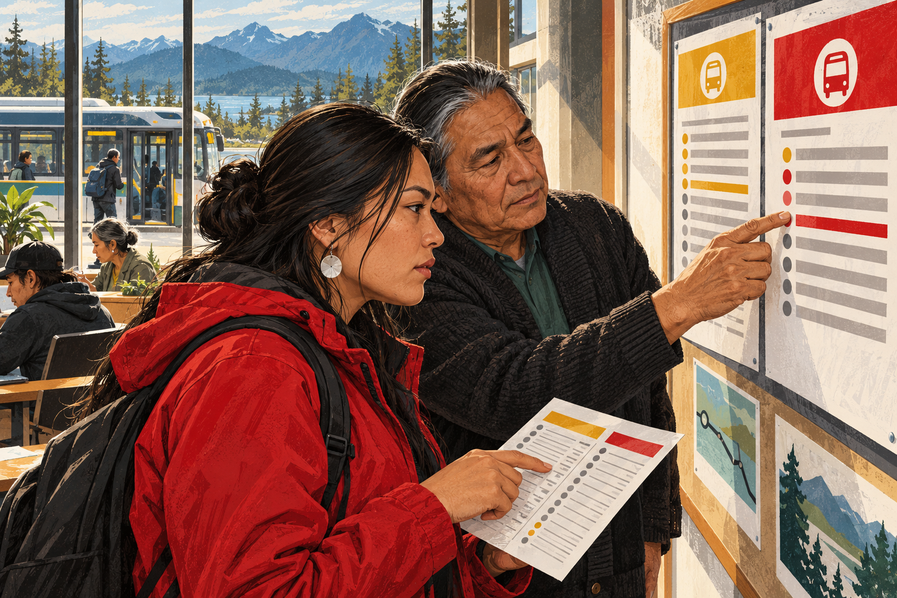
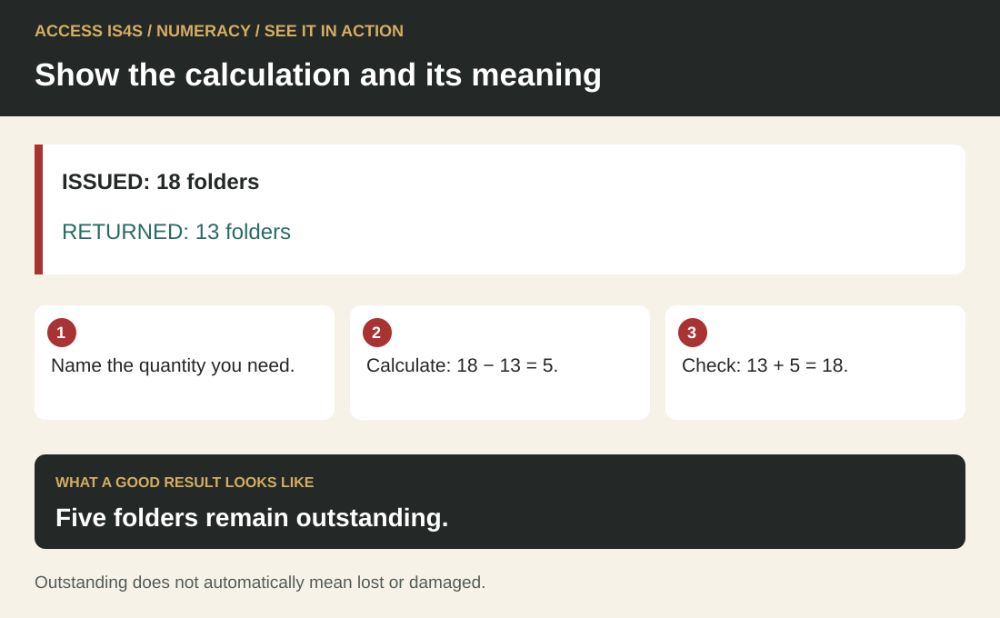
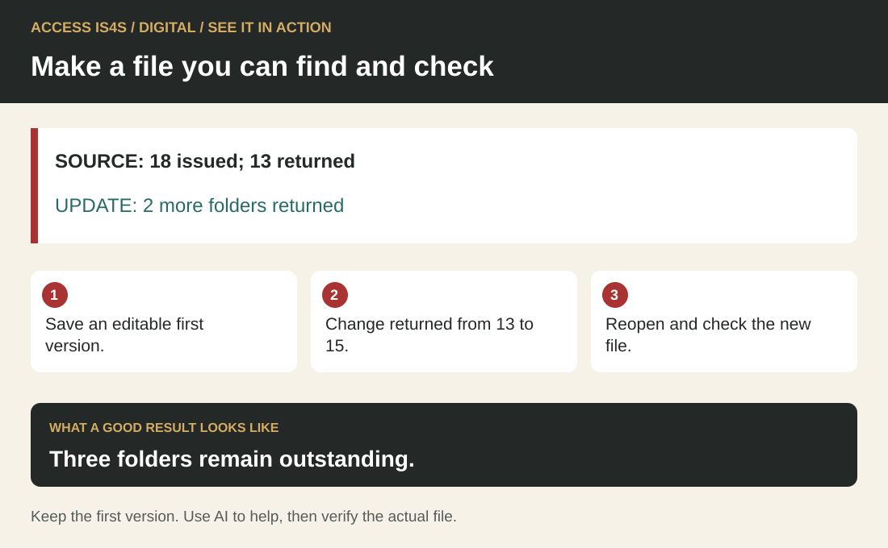
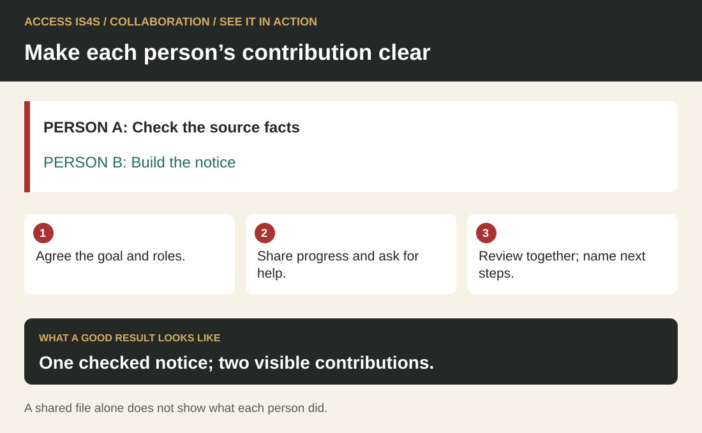
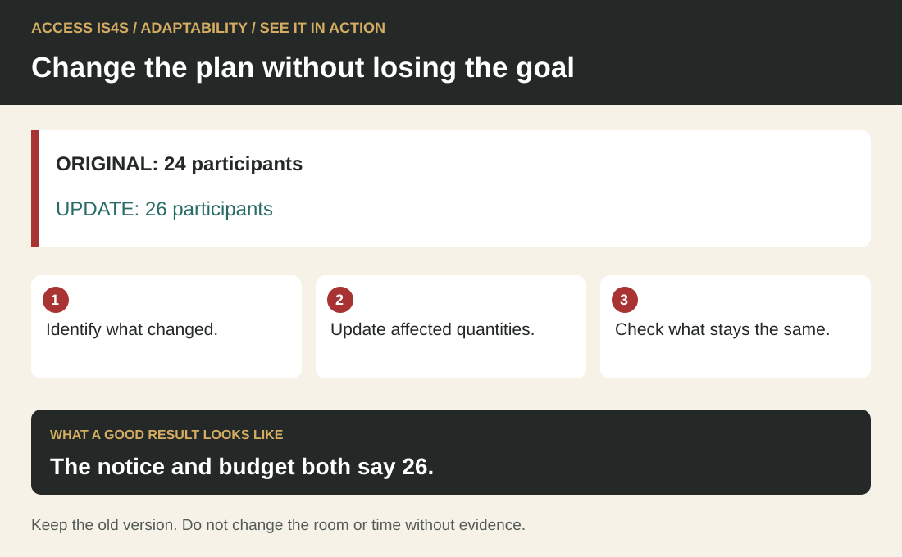
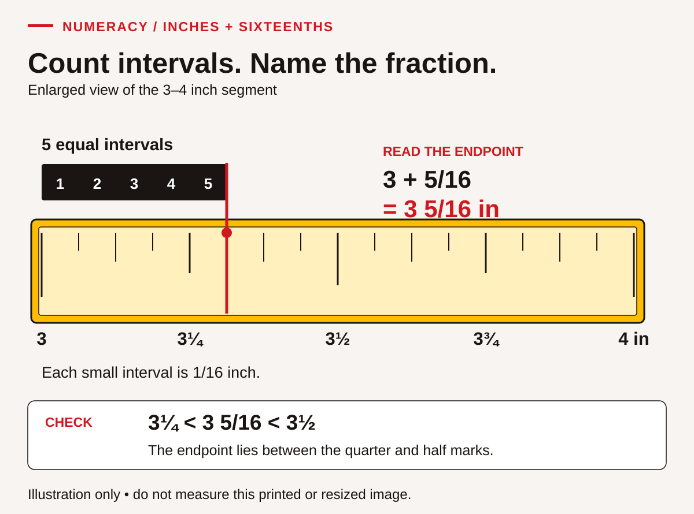

Using this book
Plan, teach, observe and respond to evidence. This guide brings together teaching routines, complete classroom cases, practice checks, answer guidance and reusable delivery tools. Choose an appropriate starting point and record the task conditions so feedback identifies a useful next step.
Use the explanations, worked examples and case documents to practise a useful task. Keep your thinking visible, check your result and choose a next step. You can use the fictional cases without sharing personal records or cultural knowledge.
Keep responses in a notebook, accessible digital document or the learning templates. Each named learner activity has answer guidance in the practitioner book. Use the contents to find a skill, and return to a model whenever another example would help.
Practitioner · ACCESS IS4S
A shared foundation for ACCESS IS4S practice
ACCESS IS4S teaching begins with adults who already use knowledge, judgement and skills in their lives. This practitioner guide helps you make that learning visible, teach a useful next step and create another opportunity to practise. A learner may be preparing for a trade, returning to education, changing work, supporting family or strengthening confidence with a particular task. The nine Skills for Success offer a shared language for that work. The learner’s purpose gives the language meaning.
This book supplies teaching explanations, classroom cases, practical routines and evidence records for ACCESS IS4S delivery. Use the activities to identify a next teaching step and give learners another opportunity to act. Classroom records describe the work observed; they do not award occupational certification or an official proficiency level.
The learner textbook and this practitioner guide are designed to work together. Learners need clear explanations, useful examples, time to try, feedback and a reason to return to a skill. Practitioners need the reasoning behind those choices, ways to adjust support and a defensible account of what an attempt shows. A completed page is useful when you can explain what the learner did and what they need next.
Who can use this guide
An instructor can use the chapters to plan explicit teaching and observe individual evidence. A curriculum developer can check whether a task, its documents and its success criteria fit together. A program lead can review access, time, materials and opportunities for practice across a cohort. A career or employment practitioner can select a short activity that connects a learner’s goal to a concrete next step. A workplace trainer can use the same approach with suitable current documents and appropriate permission.
These roles overlap. An experienced trades instructor may know the occupation well and want a clearer way to teach reading a table. An adult educator may know how to build reading confidence and need help understanding the occupational purpose of a table. Neither needs to know everything before collaborating. Identify whose expertise is needed and keep the learner’s task at the centre.
Use the material in a sequence that fits the learner and the program. The numbered skill chapters make resources easy to find; they do not require every cohort to begin with Reading or to spend equal time on every skill. A learning-day project can begin by reading a request and discussing the audience, continue with a budget and digital document, and finish with peer review and a changed requirement. Choose the sequence for the task and learners; there is no required national order of acquisition.
Before delivery, choose a manageable purpose. “Use a changed training notice correctly” supports a clearer session than “improve employability.” Agree the materials, target skill, supports, evidence and next opportunity. Leave enough time to teach and revisit a strategy. An activity that rushes through nine labels can leave less learning than one task with two explicitly taught skills.
What the nine skills describe

Read the visual description
Nine skill labels connect to a central learner purpose: Reading, Writing, Numeracy, Digital, Problem Solving, Communication, Collaboration, Adaptability, and Creativity and Innovation. The radial relationship shows that one meaningful task can use several skills. Document use and continued learning connect across tasks.
The nine Skills for Success describe actions used in work, learning and life. They overlap and interact with technical knowledge and experience. Plan what a learner will do, which information and tools they will use, and what evidence will show the result. A skill name helps organize teaching; it is not a personality label or a ranking of people.
If needed, scroll across this table. Keyboard: focus the table, then use the arrow keys.
| Skill | Useful instructional question | Evidence you could observe |
|---|---|---|
| Reading | What information is needed, and what does the document actually support? | A learner locates a condition, relates it to another detail and explains the action it requires. |
| Writing | What does this reader need to understand or do? | A learner produces a clear message, checks its information and revises it for the reader. |
| Numeracy | Which quantities matter, what calculation fits, and does the result make sense? | A learner identifies units, calculates, checks and interprets a result. |
| Digital | Which device or tool helps complete the task, and how will the information be managed? | A learner enters information, uses a suitable tool, checks the output and saves or shares it appropriately. |
| Problem solving | What is the issue, what evidence is available, and which response is justified? | A learner compares options, explains a choice and checks whether it addresses the issue. |
| Communication | How will we understand one another and confirm the message? | A learner listens or receives a message, asks a useful question, explains and checks understanding. |
| Collaboration | How will people contribute to a shared purpose? | A learner takes a role, considers another contribution and helps the group reach a decision. |
| Adaptability | What has changed, and how should the goal or approach change? | A learner identifies a changed requirement, adjusts a plan and uses feedback. |
| Creativity and innovation | What different approach could work, and how can we test and improve it? | A learner generates alternatives, develops one and improves it after a trial. |
These examples cover selected actions. Each skill has a fuller component structure explored in its chapter. A digital file exercise does not cover every aspect of Digital; a friendly conversation does not establish every Communication component. Choose the components that the activity actually makes observable. Record other skills as supporting demands unless you also teach and assess them.
Consider a learner checking a revised session notice. Reading helps locate the new time and compare versions. Numeracy may help calculate a journey duration. Digital may help retrieve the latest file. Communication helps clarify an unresolved detail. Adaptability helps revise the plan. You can recognize the whole task while focusing the observation on whether the learner used the correct version. The framework gives a way to distinguish evidence within integrated work.
Plan document use and continued learning across the skills
A document can ask a learner to do several different things. Reading a table means locating and connecting entries; writing into it means choosing information and recording it under the correct labels; calculating from it means selecting quantities and operations. Plan the actions separately when you need separate evidence, then reconnect them in a meaningful task.
Consider a fictional classroom supply record: three tables each need four folders; five folders are already available; a practice pack contains ten folders. The task is to prepare enough folders and leave an accurate record for another person.
If needed, scroll across this table. Keyboard: focus the table, then use the arrow keys.
| Teaching focus | Action to observe | Useful check |
|---|---|---|
| Reading | Find the number of tables, folders per table and existing stock. | Ask which figure describes a group and which describes an item. |
| Numeracy | Calculate the total need and additional quantity. | 3 × 4 = 12; 12 − 5 = 7 more folders are needed. One ten-folder pack supplies enough, leaving three beyond the requirement. |
| Writing | Record a clear request with the reason for the amount. | “Please provide one pack of ten folders; seven are needed and three will remain.” Availability is still to be confirmed. |
| Communication | Explain the request and check the listener's understanding. | The listener distinguishes seven needed folders from a ten-folder pack. |
| Digital | Enter the record, save it and reopen it using an available tool. | Observe the individual actions; a paper plan alone does not demonstrate them. |
Use Collaboration when participants share responsibilities and decisions, Adaptability when a condition changes, Problem Solving when they must investigate an unresolved issue, and Creativity and innovation when they develop and test alternatives. Those outcomes need corresponding actions. They are not automatically demonstrated because a task happened in a group or used a computer.
For an Adaptability variation, the room plan changes to four tables, with four folders each. Learners update the need to 16, subtract the same five in stock, and identify 11 additional folders. One ten-folder pack is now insufficient; two packs would leave nine beyond the requirement. Ask for a revised request and an explanation of the changed condition. Do not claim a saving or a budget decision: no prices have been supplied.
Continued learning runs through this work. Ask what strategy helped, what changed between attempts and what the learner wants to practise next. Keep a first attempt and a later task where useful. A statement of confidence can guide a conversation; observable use of a strategy provides different evidence.
Use complexity and proficiency carefully
A skill can be used in straightforward or demanding circumstances. A task may become harder when relevant information is spread across documents, competing details must be rejected, the purpose is unfamiliar or the learner must justify an inference. Adding more questions does not necessarily change the kind of thinking required. Support conditions also matter: a correct answer after a full demonstration is different evidence from an independent attempt on a new document.
Use the four classroom feedback statuses below to describe the criterion actually observed. If a program requires a formal proficiency classification, use the authorized assessment, its current criteria and appropriate assessor preparation. The activities in this book do not convert automatically into those classifications.
A learner’s language history, disability, attendance, age or Indigenous identity cannot establish a proficiency level. One reading difficulty also cannot establish general judgement, collaboration or ability to learn. Describe the task and the observation rather than attaching a broad label to the person.
For classroom feedback, use four local statuses:
| Status | Meaning in this resource |
|---|---|
| Not observed | There was no adequate opportunity or evidence to judge this criterion. Arrange another opportunity. |
| Not yet demonstrated | An opportunity was available, but the evidence did not yet meet the stated criterion. Identify a teaching response. |
| Demonstrated with support | The criterion was met with a recorded prompt, model, assistance or agreed support. State what support mattered. |
| Demonstrated independently | The criterion was met under the agreed conditions without task-specific prompting. Record the task and tools. |
These are teaching notes, not official proficiency bands. An agreed accessibility tool can be part of the independent task conditions; using it does not automatically mean task-specific assistance. Explain the conditions before the attempt and record them consistently. A learner who independently uses an agreed calculator is different from a learner whose partner chooses and enters every operation.
Record transfer separately: “Used the version-checking strategy on a different notice one week later.” A familiar classroom attempt does not establish workplace transfer. An independently completed simulation does not establish competence to operate equipment, meet a regulated requirement or perform an employer’s procedure. Foundational skill evidence and technical qualification serve different purposes.
Plan for BC Indigenous adults through relationship and choice
A shared ACCESS setting does not mean shared histories, identities, languages, cultural practices or goals. Urban Indigenous learners may have relationships with many places and communities. People may be connected to a Nation, exploring connections, maintaining family responsibilities, living away from home or choosing not to discuss identity in class. The practitioner does not need disclosure to provide respectful teaching.
Begin with an invitation: “Choose an example that matters to you, or use the fictional case.” Offer meaningful choices in context and access while keeping the learning outcome clear. A learner can practise reading with a training notice instead of a personal letter. A writing task can use a fictional appointment instead of a real medical record. Someone can contribute a practical strategy without explaining its family or cultural origin.
Respectful local engagement is more than inserting a story or image. An ACCESS lead should establish who has authority for the proposed contribution, whether participation is wanted, the scope of use, attribution, review and compensation. Local protocols and responsibilities differ. Do not script a welcome for an instructor to perform, copy a campus territorial statement into another location, or present a generic ceremony as a learning technique.
Assess learning actions rather than conformity to one interaction style. A learner can show that they understood by giving an accurate check-back and asking a relevant question. Accent, rapid speech, eye contact or ease with public disclosure are not the success criteria. Collaboration can be visible in a careful question, a useful written contribution or attention to a partner’s idea. Teach respectful disagreement through evidence and agreed purpose; quiet participation needs an appropriate observation opportunity.
Establish the teaching agreement
Before the first activity, explain what the program will ask learners to do, how feedback works and how to ask for support. Confirm the real program procedures for information storage and sharing; do not promise confidentiality beyond those arrangements. Keep records limited to the learning purpose. Cultural identity, family history and diagnoses are not routine evidence for a skill judgement.
Set a practical agreement with the group: listen for meaning, ask when information is unclear, make space for others, use the fictional case when preferred and review how the group is working. Allow time to think before responding. A group agreement should help people participate; it should not require personal storytelling or agreement with every view. Respond to harmful conduct through the program’s actual procedures, rather than expecting a learner to practise adaptability by accepting it.
Make the path visible: explanation, model, supported practice, individual attempt, feedback and another opportunity. Tell learners what counts as a successful attempt and show an example. Let them help select a next goal. Instructors and learners can both ask, “What evidence do we have, what helped, and what should we try next?” The following chapter develops the six teaching approaches that turn these commitments into a usable session.
Practitioner · ACCESS IS4S
Teaching the nine skills through useful work
Use six connected teaching approaches to plan what happens before, during and after an ACCESS IS4S session. The approaches work together. A relevant task can still be inaccessible; a welcoming conversation can still leave the skill unexplained; a polished group product can still hide one person's learning. Plan the task, the teaching and the evidence together.
The examples below are original classroom simulations. They can be used in an asphalt preparation cohort, another trades pathway or a broader employment and community learning program. They do not establish an employer's procedures or a Nation's protocols. Local partners and learners help determine which examples matter, and a learner can use the supplied case without sharing a personal experience.
1. Begin with the learner's purpose and existing knowledge
A useful first meeting is a conversation about a goal, a task and a workable next step. It need not begin with a test or a request to describe everything that has been difficult. Someone who has managed a household budget, repaired equipment, cared for relatives, organized travel or learned a new language brings knowledge to the room. The practitioner still needs evidence of the particular skill being taught; recognizing experience does not mean assuming a skill is already demonstrated.
Invite the learner to choose a practical goal. “I want to understand a training schedule without missing a change” is specific enough to plan instruction. “I want to improve all my skills” can be narrowed by asking which situation would make the next week easier. Offer examples when a learner is uncertain. A person does not need a settled career plan to take part.
Explain what information will be recorded, why it is useful and who normally sees it under the program's actual procedures. Ask about supports privately. A learner can request larger print or a quieter place without giving the class a diagnosis. An Indigenous learner is not required to name a Nation, discuss family history, explain a ceremony or become the class's cultural resource. Invite knowledge; do not make disclosure the price of participation.
A ten-minute starting conversation
If needed, scroll across this table. Keyboard: focus the table, then use the arrow keys.
| Prompt | What the practitioner listens for | Possible next action |
|---|---|---|
| What would you like to be able to do more easily? | A task or purpose chosen by the learner. | Select a relevant chapter activity together. |
| Where have you done something similar? | Existing strategies and experience, including outside paid work. | Ask whether the learner wants to demonstrate a strategy. |
| Would you rather begin with this notice, this table or a short conversation? | A workable entry point, not a permanent learning-style label. | Offer a brief task in the selected format. |
| What would make this easier to access? | Print, language, device, pace, communication or environmental supports. | Arrange a specific support and record only what is necessary. |
| What should we look at again after practice? | A shared success criterion. | Set a review point and retain the first attempt if the learner agrees. |
This conversation provides starting information, not a diagnosis. Avoid turning a preference into a fixed category such as “visual learner.” Someone may prefer a diagram for equipment parts and an oral explanation for an unfamiliar form. Ask what helps for this task, then check whether the support actually helps.
Make choice real without removing the outcome
Suppose the outcome is to identify the date, location and required action in a notice. Offer the same notice in large print, accessible electronic text and a normal print copy. A learner may use text-to-speech; record that support. If the outcome is independent reading without an audio support, that different condition needs its own observation. The accessible attempt remains useful evidence of supported comprehension.
For a writing task, a keyboard, speech-to-text or a scribe can preserve learner authorship when the learner chooses the wording and revises the text. A conversation about what someone might write is preparation, not the final writing product. For a listening task, requiring a long written report may introduce a writing demand that obscures comprehension. Ask for a spoken, signed, AAC or other accessible check-back that lets the learner show the intended communication action.
Choice also concerns subject matter. A learner may use the fictional training-room notice rather than a real medical appointment or family message. The skill demand can remain comparable while the personal exposure changes. This is a practical way to respect boundaries without lowering the expectation that the learner locate, interpret and use the information.
Build a small individual learning plan
Use a plan that can be read during a conversation rather than filed away after intake. A completed example might say: “Goal: check a changed session time. Starting evidence: found the room and date; used the old time after reading a correction. Support: two versions displayed side by side. Teaching: compare version labels before answering. Next attempt: another notice with one changed field. Review: next session.” This is more useful than “weak reading” because another practitioner can act on it.
The learner's goal can change. Record the change and its reason without treating it as failure. A person may discover that digital file organization matters more immediately than a longer report. Keep the agreed pathway visible, with opportunities to return to earlier goals. Learning ownership is supported by clear choices and dependable follow-through, not by leaving someone alone with an unfamiliar task.
2. Choose a context that makes the skill necessary
Contextualized teaching connects a skill to a purpose the learner can recognize. The document, decision and consequence should fit together. A fabricated pay table used to practise arithmetic is a simulation. A current employer-issued record used with permission is an authentic workplace document. Both can support learning, but label them accurately and choose them for different reasons.
Start with a task sentence: “A new crew member needs to know where to report and whom to contact if the information conflicts.” Identify the documents the person would actually consult. Then identify what the learner must do with them: locate a name, compare two dates, recognize a missing approval, calculate a total or ask a clarification question. These actions determine the teaching. A decorative photograph of a construction site does not by itself make an unrelated worksheet occupationally relevant.
For introductory asphalt preparation, keep the content boundary clear: introduce the industry, equipment purposes, resources, users and project information. The nine foundational skills help learners understand and communicate that content. An equipment-name matching activity does not demonstrate machine operation. A fictional project budget does not establish the real cost of a paving job. State the boundary where it affects what the learner may conclude.
Build a document set from a real task
Use the following sequence when creating or selecting materials:
- Name the person who needs the information and the decision they must make.
- Identify the relevant document type: notice, schedule, label, form, table, drawing, message or procedure.
- Check the document's source, date, version, scope and intended users.
- Check whether personal or organizational information must be removed and whether classroom use is authorized.
- Identify the exact reading, writing, mathematical, digital or interaction demand.
- Prepare a simpler entry version if needed, preserving the meaning of the task and marking alterations.
- Create a new but comparable task for a later independent attempt.
To find suitable documents, begin with people and organizations responsible for the work. A subject-matter expert or employer can identify the forms, schedules and instructions actually used in a task. Regulators and government agencies provide current requirements within their authority; industry associations, trade publications and public company resources offer other useful examples. Academic partners and established training networks may help locate material or arrange a practitioner conversation. Check the source and version rather than assuming that a familiar logo makes a document current. Agree permission, removal of private information, attribution and classroom use before adapting material. A professional forum or social post can supply a lead, but trace a claim to the responsible source before teaching it as a requirement.
Do not remove a key condition merely to make a task easier. If a schedule says “arrival at 8:45; instruction starts at 9:00,” simplifying it to a single time removes the distinction the learner may need to understand. Instead, highlight the two labels and model how to explain their relationship.
A complete practice document: two versions of a notice
Fictional training notice — version 1, issued Monday
The classroom materials session is on Wednesday in Room 3. Arrive at 8:45 a.m. Instruction begins at 9:00 a.m. and finishes at 11:30 a.m. Bring your workbook and a pencil. If travel arrangements affect your arrival, contact the training coordinator before the session. No equipment operation is scheduled.
Fictional correction — version 2, issued Tuesday
Wednesday's materials session will use Room 5. Arrival and instruction times are unchanged. The coordinator will place a printed correction at the original room. Use version 2 for the room information. If you cannot confirm which notice is current, ask the coordinator before making a new arrangement.
This short set supports several distinct outcomes. Reading: identify what changed and what stayed the same. Numeracy: distinguish the 15-minute arrival interval from the 150-minute instruction period. Writing: prepare a concise correction for a classmate. Communication: check that the classmate understands the new room. Digital: save the two files with meaningful version names, if actual device use is part of the activity. Problem solving: decide what to do when only an undated screenshot is available.
The same set does not automatically demonstrate all nine skills. Collaboration would require a shared goal and observable contributions. Adaptability would require a first plan and an adjustment. Creativity and innovation would require developing and trying an improvement. Add those actions deliberately when they are intended outcomes; otherwise keep the lesson focused.
Make B.C. and community context specific without inventing culture
Travel distances, winter daylight, a ferry connection, an urban bus route or a shared device can be relevant to B.C. learners. Use an accurate current source for a real service, or label the timetable as fictional. Do not assume that every Indigenous learner lives remotely or that every learner in a city has reliable transport. Ask which conditions matter in the cohort and provide an alternate case.
A community event can be a useful context for scheduling, budgeting and communication. The class can plan an ordinary open learning session using supplied information. It should not invent the protocol for a ceremony, assign cultural roles or use a Nation's name as a fictional setting. If a local partner contributes a real example, agree on the purpose, the material that may be shared, attribution, review and future reuse. Record the decision as a specific agreement, not a general claim that the curriculum is community approved.
When learners choose to contribute examples, ask whether they want the example discussed, recorded, adapted or only heard in that moment. These are different decisions. An oral contribution is not automatically permission to publish a story in a workbook. A learner may withdraw an example from further classroom use while continuing with the supplied case.
3. Change complexity deliberately
Difficulty can come from unfamiliar vocabulary, the number of documents, the need to infer, competing information, the number of calculation steps, tool demands, time pressure or the consequences of an error. Changing several at once makes it hard to discover why a learner struggled. Begin by identifying the demand you intend to teach.
Use starting evidence rather than a general impression. A learner who finds a number in a table may still need help deciding what that number represents. Another learner may understand the reasoning but have difficulty navigating the spreadsheet. Those learners need different next steps. Neither observation supports a broad claim about intelligence or readiness for every task in an occupation.
The following progression uses the notice set above. These are local teaching stages, not official proficiency levels.
If needed, scroll across this table. Keyboard: focus the table, then use the arrow keys.
| Stage | Task | What changes | Useful support |
|---|---|---|---|
| Locate | Find the instruction start time in version 1. | One explicit fact in one short document. | Highlight the label “instruction begins.” |
| Connect | Explain why arrival and instruction have different times. | Relate two facts and their purposes. | Mark both phrases; draw a short timeline. |
| Compare | Identify the changed room using both versions. | Use two documents and version information. | Place the notices side by side. |
| Evaluate | Decide whether an undated screenshot is sufficient. | Judge source adequacy and identify missing information. | Use a source-check question list. |
| Transfer | Use a new notice with a changed date and a different layout. | Apply the strategy beyond the first example. | Agree in advance which supports remain available. |
Increase challenge after the learner can explain a strategy and use it with reasonable consistency. One correct answer may result from guessing or remembering the demonstration. Ask for a comparable new attempt and a short explanation. Repetition should strengthen a useful action, not simply repeat the same answer.
Separate support from task demand
A scaffold is a temporary aid that makes a strategy visible: a labelled example, a partial table, a vocabulary list, a sentence starter or a worked first step. A calculator can be an ongoing work tool rather than something that must always be removed. Decide whether the assessment concerns mental calculation, tool-supported calculation or mathematical interpretation. Record the actual condition.
When reducing a scaffold, explain the change. “This time the headings are not highlighted; show me how you choose the useful one” makes the learning purpose visible. Removing every support without notice may reveal the effect of surprise more than the intended skill. Conversely, leaving a completed model beside an identical question may hide whether the learner can select the method independently.
Do not claim that a shortened text is automatically easy or that a longer text is automatically difficult. A two-sentence message with an implied deadline can demand more inference than a long, clearly structured notice. A large table with obvious labels can be easier to use than a small table with ambiguous units. Review the relationship among the question, the document and the required operation.
Diagnose an error before changing the lesson
Suppose a learner answers that the training session lasts 165 minutes. That value describes 8:45 to 11:30, the arrival-to-finish interval. The arithmetic may be correct while the selected start time is wrong for the question. First ask the learner to point to the start label they used. Teach the distinction between arrival and instruction, then ask for the instruction duration again. Re-teaching subtraction alone would miss the problem.
For a different learner, the correct times may be selected but 9:00 to 11:30 may be reported as 230 minutes. Model hours and minutes as different units: two hours are 120 minutes; add 30 to obtain 150. Ask the learner to check whether 230 minutes is plausible for an interval shorter than three hours. These different responses call for different feedback even though both final answers were incorrect.
Record the teaching decision: “Selected arrival rather than instruction start; used heading comparison” or “Selected correct times; needs hours-to-minutes conversion.” This gives the next practitioner useful information and lets the learner see a specific, manageable next step.
4. Make the strategy visible through direct instruction
Direct instruction is an explanation and demonstration of a usable process, followed by practice and feedback. It does not require the practitioner to speak for the whole session. A short, clear model can give learners more time to make choices, try an approach and discuss what happened.
Name the outcome before the demonstration. “Today we will check a change notice and explain the current arrangement” is more useful than “Today we are doing Reading.” Identify a small number of success criteria. In the notice example, the learner should name the current room, retain the unchanged start time, identify which version supports the answer and state what to do if the version cannot be confirmed.
Model the decisions as well as the answer. Point to a heading, explain why it matters, reject an irrelevant number and check the result. Include a plausible error and show how to recover from it. This makes checking a normal part of competent work rather than a response reserved for someone who is struggling.
A worked practitioner demonstration
The practitioner displays both notices and says:
“The question asks where to go on Wednesday. I see two room numbers, so I should not choose the first one I notice. I check the version information. Version 2 was issued later and says the room has changed to Room 5. It also says the times are unchanged. I can answer: arrive at Room 5 at 8:45 for instruction at 9:00. My answer uses the correction for the room and the first notice for the times. If I had only the undated screenshot, I would ask the coordinator which version is current.”
Pause after each decision. Ask a learner to identify the evidence rather than repeat the entire speech. Then cover the answer and give a similar notice about a different room. The demonstration taught a method; the new example reveals whether the learner can use it.
Plan the release of responsibility
If needed, scroll across this table. Keyboard: focus the table, then use the arrow keys.
| Phase | Practitioner does | Learner does | Evidence worth keeping |
|---|---|---|---|
| Show | Models a question, source choice, action and check. | Follows the reasoning and asks a clarification. | A question showing which step is unclear. |
| Work together | Prompts one decision at a time and checks understanding. | Chooses a heading, operation or message with support. | The particular prompt that helped. |
| Try with a partner | Gives roles and observes both contributions. | Takes a turn, checks a partner's reasoning and keeps an individual response. | Each person's action, not only the shared sheet. |
| Try independently | Provides a comparable new task and agreed supports. | Selects and applies the process. | An individual attempt under recorded conditions. |
| Revisit | Gives specific feedback and another opportunity. | Makes an improvement and explains what changed. | The before-and-after work and next goal. |
The sequence can move backward when needed. Returning to a model is a teaching response, not a penalty. It can also move forward more quickly when the learner demonstrates the strategy. Do not require a person to complete unnecessary repetition merely because every worksheet was printed.
Use prompts that preserve thinking. “What does that column count?” invites interpretation. “Write 24” supplies the answer. If a learner needs the second kind of help during instruction, provide it openly and record the supported condition. For an independent check, change the values or document enough that copying the earlier response cannot substitute for the skill.
Explain technical language in use
Introduce a term when it helps solve the task. In an asphalt example, distinguish an aggregate from the asphalt mixture before asking learners to explain the material flow. Ask learners to use the term in a sentence or match it to a purpose. A long glossary handed out before any context may create an unnecessary memory demand.
Use plain language without removing technical accuracy. A definition such as “a paver receives and places the mixture” introduces purpose. It does not teach operating settings. Point to the appropriate technical instructor or current approved document when a learner asks about an operational decision. Showing where the boundary lies is part of responsible document use.
When modelling communication, make the interaction visible. Demonstrate a check-back with another adult or use a short supplied script. Show an incomplete exchange, then improve it by clarifying the action and deadline. Ask learners what changed in the message and what changed in the interaction. This provides concrete teaching for Communication and Collaboration rather than assuming they will develop simply because people sit together.
5. Collect evidence that can guide the next lesson

Read the visual description
Six arrow-linked teaching moves cycle through setting the task and criterion, observing an individual attempt, interpreting evidence against the criterion, teaching with useful feedback, trying a comparable new task, and reviewing change and transfer. A central record names task, tools, support and version so the conditions remain visible.
Assessment should answer a useful question: what can this learner do under these conditions, and what teaching or practice should follow? It should not turn a short activity into a judgment about the person. Decide what evidence would support the intended claim before choosing an assessment format.
A starting task helps select instruction. Formative checks guide teaching while learning is underway. An end-of-unit task shows performance against the unit's stated outcomes. A later unfamiliar task can provide evidence of transfer. These purposes overlap, but the conclusions differ. Completing the same worksheet twice may show recall and improved familiarity; it does not automatically establish general transfer or a validated skill-level gain.
Use comparable conditions when interpreting change. Record task version, support, time conditions and response mode. If the second attempt is easier, or the learner receives more help, explain that difference. Improvement can still be meaningful, but a score alone will not tell the whole story. For formal program reporting, follow the program's approved assessment method rather than treating this book's observation descriptions as a standardized scale.
Four local evidence descriptions
If needed, scroll across this table. Keyboard: focus the table, then use the arrow keys.
| Description | Meaning in this curriculum | Example |
|---|---|---|
| Not observed | The necessary evidence has not been collected. | No device turn occurred, so saving and reopening a file was not observed. |
| Not yet demonstrated | An observed attempt does not yet meet the stated task criterion. | The learner selected an outdated notice after comparing both versions. |
| Demonstrated with support | The criterion was met using identified assistance. | The learner found the current notice after a prompt to compare version dates. |
| Demonstrated independently | The criterion was met independently under the recorded conditions. | The learner selected the correct notice and explained the version evidence without prompting. |
These descriptions are local teaching language. They are not the federal framework's proficiency levels, a trade grade or a permanent learner label. A person may demonstrate a calculation independently and need support interpreting its context. Record the two observations separately.
A usable observation record
| Field | Completed classroom example |
|---|---|
| Learning ID and date | Practice learner L 04; session date recorded locally. |
| Task and version | Training notice, versions 1 and 2; changed room. |
| Focus skill and criterion | Reading: connect the correction to the unchanged time information. |
| Evidence | Named Room 5; retained 8:45 arrival and 9:00 instruction; pointed to both notices. |
| Support | Printed notices side by side; no verbal prompt during the final attempt. |
| Feedback description | Demonstrated independently under these conditions. |
| Feedback | “You checked the version and used both documents. Next, try a notice with a changed date.” |
| Next attempt | New event notice in another layout, with a date change. |
| Transfer note | Planned; no later unfamiliar-task evidence collected yet. |
Avoid entries such as “good attitude,” “not motivated” or “naturally weak with numbers.” They do not identify the skill, the conditions or a teachable next step. If participation is interrupted, record the interruption separately and arrange another opportunity. A missed observation is not the same as an unsuccessful attempt.
Check validity, fairness and consistency
A task is useful when the evidence matches the intended claim. If Reading is the focus, a difficult login should not decide the result. If Writing is the focus, a partner's polished paragraph should not be attributed to the learner. If Collaboration is the focus, observe how contributions are invited, negotiated and combined. The finished poster alone cannot show those interactions.
A fair process provides access to the task while keeping the intended skill visible. Offer appropriate supports, explain the criteria and allow a way to raise a concern. Check whether unfamiliar cultural assumptions or personal disclosure requirements are affecting the task unnecessarily. If the question depends on knowing a particular event or family arrangement, provide that information in the case or offer a comparable alternative.
For consistent interpretation, practitioners can review two anonymized samples together. Each identifies the criterion, evidence, support and proposed feedback before comparing judgments. Discuss disagreements by returning to the task and the evidence. This is a moderation conversation, not a contest to see whose first impression was correct. Keep a short agreed example of what meets the criterion with and without support.
Give feedback the learner can use
Useful feedback identifies a successful action, a specific issue and a next attempt. “You used the correct rows and labelled the total in dollars. The percentage used the other group as the whole. Show me the complete group first, then try the fraction again” provides direction. “Try harder” does not.
Do not overload the learner with every possible correction. For a short project note, first address a wrong date or an unclear action that could mislead the reader. Then choose one language improvement that helps meaning. A later task can focus on a different writing feature. Explain the priority so the learner understands that other features have not simply been ignored.
Invite the learner's interpretation: “What did you intend here?” or “Which check would help you catch this next time?” The learner may reveal a reasonable method, a misunderstood instruction or a missing piece of source information. Revise the teaching decision when the evidence warrants it.
Evaluate the program without overstating results
A pilot can reveal unclear prompts, inaccessible files, timing problems and useful learning strategies. It cannot by itself prove that the curriculum causes employment outcomes. Report what was measured: attendance opportunities, completed task attempts, documented changes under comparable conditions, learner feedback and later transfer observations where available.
A small feedback form can ask whether the task purpose was clear, which support was useful, what still needs explanation and what the learner would change. Provide an anonymous or private route where practical. Do not make praise a condition of a supportive relationship. Include critical feedback in the revision record and explain what will change.
If a program collects employment or further-training outcomes, distinguish those outcomes from skill observations and record the time period and collection method. Many factors influence work and education pathways. A claim that everyone improved or that a book guarantees readiness requires evidence this draft does not supply.
6. Teach social and emotional skills as actions
Problem Solving, Communication, Collaboration, Adaptability, and Creativity and Innovation are taught throughout this curriculum. They are also given their own chapters because naming a skill during a group exercise is not enough. Learners need examples, a process to try, feedback and another opportunity.
Assess actions that can be observed or explained. A learner can identify a change, decide what to preserve, ask for support and revise a plan. Those actions provide evidence of Adaptability. The practitioner does not need to infer whether the learner felt calm. A learner can disagree respectfully, explain the evidence and propose a next step. That can support Collaboration even when the learner does not adopt the first suggestion offered.
Do not equate these skills with compliance. Appropriate persistence includes deciding when to seek help, change an approach or stop an unsafe or unsuitable task. Responsibility includes communicating a limit and arranging a handover. A request for a break or clarification can be part of an effective strategy. The criterion is the task-relevant action and its consequences, not whether the learner looks cheerful or performs a preferred personality style.
Teach a response to a low-stakes change
Use a classroom information sheet rather than a surprise involving a learner's real employment or personal life. First explain the task and allow a draft. Then introduce a modest change: the visitor has less reading time, the printout will be black and white, or a room is unavailable. Make the change understandable and provide time to respond.
Model a routine: pause; name what changed; identify what must remain; generate options; choose a next step; check the revised result. Ask the learner which strategy helped. Keep the first draft, the change note and the revision. These provide better evidence than a practitioner's impression that someone “handled change well.”
Do not create distress to test emotional regulation. Skills practice is not therapy or a crisis simulation. If a learner is affected by the activity, offer an alternative and use the program's established support procedures where needed. The practitioner can support learning without asking for the history behind a response.
Make teamwork teachable
Before a paired task, state the common goal and show what useful interaction looks like. For a checked table, one learner may explain the selected row while the other checks units and asks a clarification. Swap roles so both use the skill. Roles should create access to participation, not permanently assign one person as the expert and another as the recorder.
Teach a disagreement routine using a harmless document question: each person states their interpretation; the other restates it; both point to the evidence; the pair identifies agreement, uncertainty and a next step. If the document is ambiguous, the appropriate result may be a question for the coordinator rather than a forced consensus.
Observe the interaction. Did the learner make a contribution, consider the other person's information, ask a useful question and help reach a shared next action? Did each have an opportunity to use the tool or explain a decision? Record a concrete example. A group can produce an incorrect answer while showing a useful collaborative process, and a correct answer can be produced through an unfair process. Teach and assess both dimensions deliberately.
Use reflection without demanding personal disclosure
Reflection can be brief and practical: “Which information changed your decision?” “What did your partner help you notice?” “What will you check first next time?” Learners may answer through a chosen accessible mode. A written emotional history is not necessary to demonstrate a task strategy.
A learner's explanation is valuable evidence, but distinguish a stated intention from an observed action. “I will use a checklist at work” is a transfer plan. A later example showing the checklist used on an unfamiliar task provides additional evidence. Recognize both without treating them as identical.
Avoid fixed labels in feedback. Say, “You tried two layouts and tested them with a reader” rather than “You are a creative type.” Say, “You noticed the missing source and asked before using the number” rather than “You are naturally careful.” Action-focused language helps the learner identify a strategy that can be used again.
Bring the six approaches into one session

Read the visual description
Six planning approaches surround one purposeful session: learner-centred work, contextualized tasks, complexity, direct instruction, assessment, and social-emotional teaching. The accompanying moves start with a purpose, use a meaningful task, adjust demand, model a strategy, use individual evidence and teach useful interactions. These approaches support one another within a session.
The following plan is a complete 45-minute example using the two fictional notices in this chapter. It can introduce a longer learning sequence. Its timing is a proposed classroom design, not an official Skills for Success allocation.
If needed, scroll across this table. Keyboard: focus the table, then use the arrow keys.
| Minutes | Teaching action | Evidence |
|---|---|---|
| 0–5 | Invite a useful purpose for reading a changed notice; offer the supplied example. State criteria and access options. | Chosen purpose and agreed supports. |
| 5–12 | Model version checking and connecting room/time information. | Learner identifies the evidence used in one step. |
| 12–20 | Guide practice with both notices; ask each learner to explain one unchanged and one changed detail. | Supported response and the prompt needed. |
| 20–30 | Pairs prepare and check a two-sentence correction; swap speaker/listener roles. | Individual check-back and shared corrected message. |
| 30–40 | Give the independent notice pair below, with a changed date; collect an individual response under agreed conditions. | Current date selected, source identified and uncertainty handled. |
| 40–45 | Give specific feedback; ask for a next practice choice and record a recheck. | Feedback, learner goal and next attempt. |
The six intervals total 45 minutes. The session is learner-centred through purpose and choice, contextualized through a useful document, controlled in complexity through one change at a time, explicit through modelling, assessed through individual evidence, and socially supported through taught check-back and shared work. These are planning decisions the practitioner can explain and revise.
Independent notice pair for minutes 30–40
Fictional practice notice A — issued 1 May
The classroom resource session is on 14 May in Room 4. Arrive at 8:30 a.m. Instruction runs from 8:45 a.m. to 10:15 a.m. Bring a workbook and pen. This is an indoor classroom session. Ask the training coordinator if you cannot confirm the current arrangement.
Fictional correction B — issued 2 May
The resource session described in notice A has moved from 14 May to 21 May. Room 4, arrival time, instruction times and materials are unchanged. Use this correction for the date. The dates are invented practice values, not an actual booking.
Ask each learner to identify the current date, room, arrival time and instruction period; point to the source for each; and explain what they would do if they had only an undated screenshot showing 14 May. A brief spoken, signed, AAC or written response can carry the explanation under the agreed assessment conditions.
Answer guidance: 21 May, Room 4, arrival at 8:30 a.m., instruction from 8:45 to 10:15 a.m. Correction B establishes the date and preserves the other details from notice A. An undated screenshot alone does not establish the current arrangement; check the current notice with the coordinator. Record any prompt needed. A learner who gives the right date but cannot connect the unchanged details may need another cross-document reading example.
A reusable planning page
Before teaching, complete these fields in ordinary sentences: learner purpose; document and source status; focus component; observable outcome; model; guided attempt; independent attempt; supports; likely misconception; feedback; next task. After teaching, add actual timing, evidence gaps and one change for the next delivery.
For example, an observation that “four learners could find the updated room but could not explain the unchanged time” suggests returning to cross-document connections. It does not justify repeating the same room-number question for the whole group. A finding that only one device was available suggests a scheduling change before interpreting Digital results. Practical revision connects the program's conditions to the evidence it is able to collect.
Practitioner · ACCESS IS4S
Teaching Reading: make the search and the reasoning visible
Reading instruction begins with a reason to use a document. An adult may understand a paragraph yet miss the condition that decides whether a journey works. Another may understand the decision when it is spoken but need explicit support with words on the page. Those observations call for different teaching. Begin with a useful task, watch the learner's route through it, and teach the part that is getting in the way.
The learner chapter uses invented training notices, timetables, project briefs and borrowing conditions. Their familiar purposes create useful connections with work and community life in British Columbia without requiring personal disclosure. Invite learners to suggest other document types they encounter. An invitation to share experience is optional; it does not make anyone a representative of a Nation or community.
See it in action · Reading

Read the visual description
NOTICE 1: Room 1 at 10:00. UPDATE: Room 2; time unchanged. Find the current message. Compare what changed. Say the room and the time. Meet in Room 2 at 10:00. Use both messages. The room changes; the time does not.
This small fictional example shows the skill in use. NOTICE 1: Room 1 at 10:00. UPDATE: Room 2; time unchanged.
Try it: Find the current message. Compare what changed. Say the room and the time.
Check your result: Meet in Room 2 at 10:00. Use both messages. The room changes; the time does not.
Keep all six components in view

Read the visual description
An original task illustration occupies the left panel; six numbered actions appear on the right. Let the question and document guide your next move. Six connected components: Identify the reading task; Find the information; Connect related details; Understand and apply; Evaluate the document; Reflect on the document. Return to any action when you need to check meaning or evidence.
Teach six connected Reading actions: identifying the reading task; identifying information; connecting parts; understanding and applying information; evaluating documents; and reflecting on documents. Reading includes using documents in different forms. Tables, forms, maps, charts and drawings require deliberate instruction in headings, legends, relationships and conditions, not only practice reading paragraphs.
Move from a clear reading purpose to finding and connecting details. Practise judging claims and versions, then examine who the document serves and what a summary leaves out. Finish with a new document and an explanation of the reading choices. Use the named activities in the learner chapter; return to an earlier step when a new question requires it.
Teach with documents that have a purpose

Read the visual description
Two document specimens show an earlier introductory-group draft with Room 3 and a version 2 notice that explicitly replaces it, names Room 2 and requires check-in first. A route below moves from the entrance to reception during 08:40–08:55, then to Room 2 after check-in.
Use purposeful work with authentic documents. A real document has been created for an actual activity beyond the class. The learner cases are simulations: label them that way. Their advantage is that all learners receive the same information and nobody needs to expose an employment record, private correspondence or community document. Later, introduce a current, permission-cleared public document and ask what changes when the audience and consequences are real.
Before distributing it, identify the decision a reader must make and check that the document actually supplies the information. Prepare one locate question, one connection question and one question about a limitation. Let learners preview the title, publisher, date, headings and structure. Ask them to predict where they would search. After reading, return to the prediction: which feature helped, and which needed closer attention? This routine makes document design part of instruction.
Build foundations without lowering the purpose

Read the visual description
Two fictional Indigenous adults compare revised notices and a paper timetable in a community learning centre.
Distinguish alphabetics, fluency, vocabulary and comprehension. A diagnostic conversation may reveal difficulty decoding a word, understanding its meaning, keeping a place in a table, or combining two conditions. Do not treat all four as the same problem. Model word analysis when needed; practise a useful word in several sentences; offer repeated reading of a short meaningful passage; and check understanding through a decision rather than copying.
“Build useful vocabulary” offers words such as optional, replaces and applies. Have learners underline nearby clues, try an explanation and test it in a second example. A bilingual glossary or private first-language note can support meaning. Avoid compulsory reading aloud in front of the group. A learner can rehearse privately, read with a partner, or ask for instructor support. When text-to-speech supplies access, record what it supported so that the evidence accurately describes the reading task attempted.
A worked teaching routine

Read the visual description
A proportional timetable shows B1 arriving at Market at 08:25. The required connection allowance is five minutes. B2 leaves at 08:28, giving only three minutes; B3 leaves at 08:32, giving seven. The earliest usable departure is 08:30. B1 plus B3 reaches Northside at 08:47; five minutes to reception gives 08:52, before the 08:55 deadline.
For “Read the condition”, display the fictional connection rule and timetable. Say: “The question asks whether B1 connects with B2. I need a condition as well as two times.” Mark the requirement for at least five minutes. B1 arrives at 08:25 and B2 leaves at 08:28: three minutes is insufficient. B3 leaves at 08:32, giving seven minutes. Point to both the paragraph and the row; a correct number alone does not show that the learner found the rule.
Next invite a pair to explain why merely arriving before departure is insufficient. Give a new pair of times while retaining the rule, then change the rule while retaining the times. This separates understanding from memorizing the first answer. Finally ask learners to identify what would need checking for a real journey. The classroom allowance is invented and must not become advice about an actual service.
Explain a systematic process, model it aloud, work collaboratively, guide another attempt and then release responsibility. A useful question routine is: identify requested information, locate a match, determine processing, and reject competing information. Skimming gives an overview; scanning locates a detail; close reading checks its conditions. Teach when to switch between them.
Assess the route, then choose a next step
Collect a marked document and a short spoken or written explanation. Look for accurate location, connections, attention to limits and a justified decision. “Found the right row but omitted the paragraph's allowance” is useful feedback. “Needs better comprehension” is too broad to guide the next lesson. Use a second task after focused instruction to see whether the change holds.
Adjust complexity through document length, unfamiliar vocabulary, competing details, number of sources and depth of inference. Increase one demand at a time. A paper version can show whether navigation is masking reading; a simpler response mode can show whether writing is masking comprehension. Record supports and distinguish Not observed from an attempted performance that is Not yet demonstrated. Classroom feedback categories are not official proficiency ratings.
Short routines and resource choices
Select a short reading routine to match the learning need. “Preview before you search”; “Use both forms of the message” compare document features and purposes; “Apply the conditions”; “Show your reading route” ask learners to explain how they used conditions and found information; “Choose with evidence”; “Independent transfer: booking a practice room” compare documented choices. Allow an initial attempt, teach the needed strategy and provide another opportunity with changed information.
Preview any selected document for adult relevance, accessibility and fit with the reading need. Keep technical instruction with the appropriate current provider. A historical trade document can teach version awareness without establishing today's requirements.
Classroom exercise: choose the usable collection notice
Give each learner the following two fictional notices. Keep them visible during the task; the aim is using written information, not recalling a spoken message.
Notice A — version 1, replaced. Collect the training folder at the main desk on Practice Tuesday, 09:00–09:20. Bring the collection card.
Notice B — version 2, current. The folder collection described in version 1 is now on Practice Wednesday, 10:00–10:20, at the side desk. Bring the collection card. If you cannot attend that window, ask the coordinator for another arrangement; no alternative time is confirmed in this notice.
Model one step: identify the words that establish which notice applies. Then ask learners to mark the current day, window, place and required item. Ask whether arrival at 10:25 meets the stated window and whether the notice guarantees an afternoon collection. Have each learner point to the words supporting a decision before comparing answers with a partner.
Answer guidance. Version 2 applies because it explicitly changes the collection in version 1. The current arrangement is Practice Wednesday, 10:00–10:20, side desk, with the collection card. A 10:25 arrival is outside the window. An afternoon collection is not established; the learner should ask the coordinator. A correct day with the old desk is an incomplete version check.
If vocabulary is the barrier, teach replaced, current, window and confirmed in these sentences, then have the learner reread the relevant passage. If navigation is the barrier, model moving between the version label and the detail that changed. Record the support and give another attempt.
For a changed task, supply: “Correction to version 2: the day and desk stay the same; collection is now 11:00–11:20.” Ask what changes and what remains. The answer is the new window only; the collection card is still required and an afternoon alternative remains unconfirmed. A learner who explains that connection has shown more than copying the nearest time.
Build a word, read a phrase, use its meaning
Practise privately, with a partner or through an agreed accessible format. No one needs to read aloud to the group. Keep track of whether you recognized the printed word yourself, used audio access or received help with its meaning. These are useful but different observations.
Start with a small observation
Look at return, returned, check, checked, available. Identify a familiar word, use it in a classroom sentence and read a short phrase. If these words are already familiar, move to the notice practice. If a word becomes clear after someone says it, compare the spoken word with its letters and practise it in a useful phrase.
See a useful word part
Compare check → checked. Point to the shared letters. Adding -ed here shows a completed action. In this word the ending sounds like /t/; the spelling still records -ed. Compare return → returned, where the ending sounds like /d/. The same spelling can have different sounds; use the whole word to check its pronunciation. Read “the helper checked the kit” and explain which action is complete.
Break unavailable into un + available: in this notice, un- reverses the meaning. Say the base word, read the whole word, then test its meaning in “The kit is unavailable today.” A word part is a clue; the sentence confirms whether that meaning fits.
Try with support: choose from checked / check / unavailable / available. Complete “Please ___ the code before the loan” and “The kit is ___ because it is already lent.” Explain your choice. Then compare “return pending” with “returned and checked.” Identify which record still needs an action.
Read a short passage in meaningful phrases
The practice desk opens at ten. / A helper checks the kit code / before handing over a folder. / The learner checks the return time. / If the folder is unavailable, / ask about another suitable resource. / Do not assume that a reserved item is free to take. / A learner can ask for a printed reminder / without explaining private reasons. / Keep the agreed return point / with the practice record.
Listen to one sentence read by your instructor if helpful, then explain its meaning. Read it together or reread a short chosen part, using the slashes as optional phrase guides. Answer: What happens before a folder is handed over? What should happen if it is unavailable? Return to the words that support the answers. Fluency here means readable phrasing that supports meaning; faster reading is not the goal.
Fresh exit passage
Remove the model passage while using this new text:
A learning pack is ready for collection at two. The helper must check its code before recording the loan. The pack includes a return slip. If a requested pack is unavailable, ask the helper to check another option. A reserved pack belongs to an agreed booking. Do not remove it without confirmation.
Identify check, unavailable and reserved. Explain the collection condition and what to do if the requested pack is unavailable. Reread after feedback if useful. Keep word help, phrasing help and comprehension help separate in your note.
Check after your attempt: collection is at two, subject to the helper's code check before the loan is recorded; ask the helper to check another option if unavailable; reserved is not unrestricted availability. If a word needs more practice, name it and ask for a useful example. When you can locate the condition with your agreed supports, continue to “Build useful vocabulary” and connect information from a short paragraph and table. You can agree more focused word-reading practice without repeating a whole long case.
Reading · fresh document checks
Use the form selected by your instructor. Read the supplied documents and show which words, rows or conditions support your answers. You may mark the document and explain through an agreed communication mode. Writing polish is not the focus. Ask for the agreed access tools before starting. All information is fictional; do not visit or contact a real service.
Form A · Pick up a practice kit
A1 · Earlier notice, issued Practice Monday
The introductory learning group can collect its reserved practice kits at Counter East on Practice Friday, 13:00–13:30. Bring the kit code and your learning ID. This is a classroom collection arrangement.
A2 · Correction, issued Practice Tuesday
For the same introductory learning group and Practice Friday collection: Counter West replaces Counter East. The collection window remains 13:00–13:30. Bring the kit code and learning ID as previously stated. A helper must check the current counter record before handing over a kit. This correction replaces A1's location only. A separate evening group uses Counter East at 17:00; that arrangement does not apply to this group. Ask the course coordinator when information cannot be confirmed.
A3 · Counter record for the exercise
If needed, scroll across this table. Keyboard: focus the table, then use the arrow keys.
| Kit code | Resource | Status | Collection condition |
|---|---|---|---|
| P14 | Large-print process cards | Reserved for the introductory group | Helper checks code and learning ID. |
| P18 | Standard process cards | In use | No return time has been supplied. |
| N22 | Number practice kit | Available | Helper checks the current record and agrees a loan. |
“Reserved” means set aside for the named group. “Available” means a loan can be discussed now, not that the item has already been booked. “In use” means currently lent. A request for a particular format does not require a learner to explain private reasons. The counter record says nothing about transport or a charge.
Reading practice A · Find the current instruction
Where and when should the introductory learner collect P14? What must they bring, and what must the helper do? Mark the source for the location, unchanged time and collection condition.
Reading practice A · Connect the records
A peer says, “I will go to Counter East at 17:00 because the correction mentions it.” Explain the problem using the audience and replacement wording. Then explain whether P14 and P18 can both be promised for collection at 13:00.
Reading practice A · Check a summary
A proposed summary says, “All kits are ready. Bring identity documents to Counter West any time Friday. Transport is included.” Identify four unsupported or contradicted claims. For one claim, distinguish “the documents say something different” from “the documents do not say.”
Reading practice A · Explain your next step
You receive an undated cropped image saying only “Counter East.” Explain what it cannot establish, where you would seek confirmation and one part of your reading process that helped you. Do not invent the coordinator's answer.
Form B · Return a practice resource
B1 · Earlier notice, issued Practice Wednesday
The afternoon learning group returns borrowed folders on Practice Monday, 11:15–11:45, at the Materials Desk. Bring the folder code and your learning ID. Do not write a personal phone number on a folder.
B2 · Correction, issued Practice Thursday
For the same afternoon learning group and Practice Monday returns: use the Library Desk instead of the Materials Desk. The 11:15–11:45 window and code/learning-ID requirement stay the same. The desk helper checks the folder against the loan record and records its return; placing it on a desk alone does not confirm a return. This correction replaces B1's location only. The evening group's return to the Materials Desk at 18:00 is a separate arrangement. Ask the course coordinator about information that cannot be confirmed.
B3 · Loan record for the exercise
If needed, scroll across this table. Keyboard: focus the table, then use the arrow keys.
| Folder code | Record status | Required next step |
|---|---|---|
| F32 | Loaned to afternoon group; return due Practice Monday | Present to helper for return check. |
| F35 | Returned and checked | No second return is required. |
| F39 | Return reported, check pending | Helper must confirm against the loan record. |
“Check pending” means a necessary check has not yet been confirmed. It is different from a completed return. No penalty, charge or delivery service is specified. Learners can ask privately for an accessible way to identify the folder code.
Reading practice B · Find the current instruction
Where and when should the afternoon learner return F32? What must they bring, and what must the helper do? Mark the source for the location, unchanged time and return condition.
Reading practice B · Connect the records
A peer says, “I will go to the Materials Desk at 18:00 because the correction mentions it.” Explain the problem using the audience and replacement wording. Then explain whether F35 and F39 can both be recorded as checked returns.
Reading practice B · Check a summary
A proposed summary says, “Every folder is checked in. Leave F32 at the Library Desk any time Monday. Bring your personal phone number; late returns cost $5.” Identify four unsupported or contradicted claims. For one claim, distinguish “the documents say something different” from “the documents do not say.”
Reading practice B · Explain your next step
You receive an undated cropped image saying only “Materials Desk.” Explain what it cannot establish, where you would seek confirmation and one part of your reading process that helped you. Do not invent the coordinator's answer.
Reading · delivery, keys and criterion anchors
Use one fresh form from Reading checks, keeping this key separate. Both forms ask the learner to connect a correction, a table and a condition, reject misleading details and identify a confirmation route. They sample purpose, information, connections, application, evaluation and reflection in one narrow context. They do not test every reading demand or establish a proficiency level.
Route card
If needed, scroll across this table. Keyboard: focus the table, then use the arrow keys.
| Starting observation | Teaching decision | Next evidence |
|---|---|---|
| Learner understands an orally presented short notice but cannot reliably identify its printed words | Offer the Reading bridge; observe word recognition separately from comprehension. | Bridge exit passage, then a supported core “Build useful vocabulary” vocabulary task. |
| Finds the correct word/row but misses a condition or audience | Model core “Read the condition” or “Apply a precise update”, marking the paragraph and row together. | Fresh Form A or B, with the original highlighted example removed. |
| Connects sources accurately but overstates an unknown | Use core “Separate evidence from assumption”; “Judge what a claim can support” to distinguish contradicted from not established. | New form question 03 and 04 with source evidence. |
| Meets all selected criteria | Agree a current permission-cleared public notice with a different layout. | Locate, connection and limit questions prepared from that actual notice; retain source/date and conditions. |
Do not use an audio-access attempt to claim unaided decoding. Conversely, do not deny independent comprehension with agreed audio access merely because that tool was used: name the construct and conditions. Oral, signed or AAC explanations can show comprehension without requiring polished writing. No speed or public reading-aloud threshold applies.
Form A key
“Reading practice A · Find the current instruction”: Counter West, Practice Friday, 13:00–13:30; kit code P14 and learning ID; helper checks the current record/code/ID before handover. A2 explicitly changes the location and preserves A1's time/requirements; A3 supplies P14's reservation condition. No identity documents are requested.
“Reading practice A · Connect the records”: The 17:00 East arrangement is for a separate evening group. It does not replace the introductory group's West instruction. P14 is reserved for this group subject to the helper check; P18 is in use with no return time. Do not promise P18 at 13:00. N22's availability is not a booking.
“Reading practice A · Check a summary”: “All kits are ready” conflicts with P18's in-use status; “identity documents” changes the stated kit-code/learning-ID requirement; “any time” conflicts with the window; “transport included” is not established. Accept a careful distinction that the supplied identification requirement does not authorize requesting extra documents. Four corrections must preserve the exact source limits.
“Reading practice A · Explain your next step”: The crop lacks date/version, audience and surrounding correction; it cannot establish the current location. Consult the course coordinator/current complete notice. Reflection should name an actual move such as checking the audience or retaining the unchanged time, with evidence from the attempt.
Form B key
“Reading practice B · Find the current instruction”: Library Desk, Practice Monday, 11:15–11:45; F32 code and learning ID; helper checks against the loan record and records the return. Leaving a folder on the desk is insufficient. B2 changes only location and preserves the earlier window/identifiers.
“Reading practice B · Connect the records”: The 18:00 Materials Desk arrangement applies to the evening group. F35 is already returned and checked; F39 remains pending. Both cannot honestly be recorded as checked. No extra return is required for F35.
“Reading practice B · Check a summary”: “Every folder checked in” conflicts with F32/F39; “leave ... any time” omits the helper check and contradicts the window; “personal phone number” is not a requirement and conflicts with the no-number-on-folder direction if put on it; the $5 charge is not established. Accept four well-explained flaws; do not require an invented actual fee or penalty.
“Reading practice B · Explain your next step”: The crop does not establish date/version, audience or current location. Obtain the complete current instruction through the coordinator. Accept a specific explanation of audience checking, version comparison, row tracking or recognizing missing information.
Criteria and common errors
If needed, scroll across this table. Keyboard: focus the table, then use the arrow keys.
| Criterion | Observable evidence | Error that needs another attempt |
|---|---|---|
| R1 Locate and connect | Gives current desk and unchanged day/window, pointing to replacement and preserved details. | Chooses the unrelated group's location/time, or assumes all times changed. |
| R2 Apply a condition | Distinguishes reserved/in-use or checked/pending and retains the helper check. | Treats a status label as unrestricted permission or completion. |
| R3 Evaluate a claim | Corrects four summary flaws and identifies at least one stated conflict versus an unknown. | Fills an unknown with a confident invented fact. |
| R4 Explain a route and limit | Identifies what a crop cannot prove, gives the supplied confirmation route and explains an actual reading strategy. | Guesses a new instruction or gives a generic self-rating without evidence. |
Record each criterion separately. Essential destination/window/condition errors are not compensated by several correct minor details. Form B question 03 has more than four detectable flaws; any four accurate, evidenced flaws satisfy the stated task.
Calibration examples
Not yet demonstrated, R1: “Counter East, 17:00; it is the newest notice.” The learner found newer text but did not match its audience. Teach that connection before a fresh attempt.
With support, R1: After the observer asks, “Which group does the 17:00 sentence name?”, the learner identifies West and the unchanged window with evidence. Record that exact solving prompt.
Independent under agreed conditions, R1: Using enlarged text and a line guide, the learner selects West, retains Friday 13:00–13:30 and points to A2's matching-group/replacement wording without a solving prompt. The access tools do not erase independence of the reading decision.
Printable observation record
| Learning ID / date / form / prior exposure | |
|---|---|
| Agreed response mode and access tools | Write your response here. |
| R1 evidence / status | Write your response here. |
| R2 evidence / status | Write your response here. |
| R3 evidence / status | Write your response here. |
| R4 evidence / status | Write your response here. |
| Exact task-solving prompts, if any | Write your response here. |
| Feedback: one useful action and one next focus | Write your response here. |
| Retry form/date; criterion still to observe | Write your response here. |
Use the four local statuses in the foundation README. Give the other form after instruction if unseen; record its different context and any changed support. Do not claim the two forms are psychometrically equivalent. No completed moderation or pilot is implied by the calibration examples.
Practitioner · ACCESS IS4S
Teaching Writing: help a reader understand and act
Writing instruction begins with a reader and a purpose. A short message that gives the right quantity, time and confirmation request can be more useful than a polished paragraph that promises something unapproved. Teach learners to select information, organize it, make meaning clear and revise against the source. Grammar and spelling matter because they support that work; they should not displace it.
The learner chapter uses fictional resource requests, materials records, classroom procedures and visitor notices. These purposes connect with training, work and community activity in British Columbia. Invite an alternative context when it serves the same outcome, without requiring private correspondence, family history or cultural knowledge. Learners retain authorship: support may help them produce and review text, but an instructor's rewrite is not evidence of the learner's decisions.
See it in action · Writing

Read the visual description
NEED: 2 calculators by 09:00. RETURN: 11:45; loan not confirmed. Name the reader and request. Include quantity and timing. Ask for confirmation; revise. Please confirm a loan of two calculators. Include collection and return times. A request is not a confirmed loan.
This small fictional example shows the skill in use. NEED: 2 calculators by 09:00. RETURN: 11:45; loan not confirmed.
Try it: Name the reader and request. Include quantity and timing. Ask for confirmation; revise.
Check your result: Please confirm a loan of two calculators. Include collection and return times. A request is not a confirmed loan.
Keep the six components connected

Read the visual description
An original task illustration occupies the left panel; six numbered actions appear on the right. Keep the reader and purpose at the centre. Six connected components: Identify purpose and reader; Plan the writing task; Use words to convey meaning; Choose language and style; Choose a useful format; Review and revise. Revisit a plan, wording or format when feedback reveals a better choice.
Start with the reader, purpose and facts. Plan and draft a useful message, then check clarity, tone and format. Practise with forms, handovers, procedures, tables and notices. Have another reader try the document, revise what needs work and repeat with a new task.
Writing includes completing forms, arranging a table and preparing a schedule. Teach how a label controls an entry and how a blank field differs from a known zero or an unavailable fact. Reading supplies evidence; Numeracy checks quantities; Digital may support composing and saving. Assess these additional demands separately when they obscure the writing decision you want to observe.
Teach grammar inside meaningful writing
Integrate grammar with purposeful work. Begin with a draft and identify a small number of features that affect meaning. A pronoun with no clear referent, a missing sentence boundary or an incorrect quantity is a useful teaching point. Model the repair, explain the misunderstanding it prevents and ask the learner to apply the same idea elsewhere.
“Repair ambiguity” offers an ambiguous calculator request. Ask the reader to underline words that leave them guessing: “they,” “them,” “before” or “later.” Replace these selectively with the item, actor or time. Do not correct every surface feature at once. Agree a focused editing target and use a brief checklist. Spellcheck and other tools can help locate a possible issue, but the learner must decide whether a suggested change preserves meaning. Respect different language backgrounds and avoid treating a familiar dialect as evidence of weak reasoning.
Make context and audience do real work

Read the visual description
An adult writer revises a paper draft beside a laptop while another adult reader gives feedback.
Make the context and reader shape the writing decisions. Compare two messages about the same event for different readers. A resource helper needs a quantity and return arrangement; learners attending the session need to know what to bring. “Change the reader” makes this difference explicit. Ask which details can be omitted without losing the reader's ability to act.
Discuss register as a choice shaped by purpose, relationship and local practice. Clear, respectful language does not require unnecessary formality, gendered titles or elaborate vocabulary. Avoid presenting one email model as the only acceptable voice. Provide several valid versions and compare their usefulness. Peer feedback should answer a reader question—“Can I tell what you need?”—rather than turn classmates into unrestricted editors of each other's style.
A worked teaching example: request the extra quantity

Read the visual description
An annotated request asks the resource helper for two calculators by 09:00 on Practice Thursday. Four available plus two requested would make six for pairs. The loan is pending, borrowed items are to return by 11:45, and the request is due by 15:00 on Practice Wednesday. The callouts identify reader, needed facts and requested confirmation.
Use Case document A. Twelve learners can work in pairs, so the plan needs six calculators. Four are available. The writer must request two additional calculators, needed at 09:00 on Practice Thursday, with return by 11:45. The helper needs the request by 15:00 on Practice Wednesday and must still check availability. Model a planning note with reader, purpose, required facts and unresolved status.
Say: “If I write ‘We need six more,’ the reader may supply ten in total. If I write ‘The calculators are booked,’ I turn a request into a claim I cannot support.” Draft a subject naming two calculators and a short paragraph asking for confirmation. Have a learner play the reader and identify the item, extra quantity, required time and return plan. If any answer is uncertain, revise that sentence.
Then use “Write your request” for the learner's own message. Keep the model available as a structure, while asking for independent wording and information choices. Use “Check against the source” later to check a different draft against its source. The point is a repeatable planning and review process, not memorizing the first request.
Teach a process that can be reused

Read the visual description
A factual record compares a delivery note of twenty-four copies with an independent count of twenty-two, a difference of two with no confirmed cause. The timeline records receipt at 09:10, recount at 09:15 and informing the instructor at 09:20.
Make the writing process explicit: establish purpose, gather information, plan, draft, review and revise. These stages may loop. A reader's question can reveal missing information and send the writer back to the source. Model that return openly rather than implying that experienced writers produce finished text immediately.
Use a template initially, then gradually reduce it. A form can support “Complete the form”, while “Write a short record for a handover” asks learners to select and organize the same event for a handover. “Write an ordinary classroom procedure” uses an ordinary classroom procedure; keep it low risk and do not ask a novice to invent a technical operating procedure. Have another learner follow the written sequence with safe materials, identify ambiguity and return the draft to its author. Oral explanation can reveal the intended meaning, but the final written text must carry that meaning itself.
Assess meaning, authorship and revision
Use samples, clear criteria and descriptive feedback. A practical rubric asks whether the message fulfils its purpose, uses accurate evidence, suits its reader, follows a usable format and has been reviewed. Discuss sample responses with another instructor to improve consistency. Holistic judgement can summarize effectiveness, while a short checklist pinpoints the next teaching step.
Adjust complexity through audience, amount of information, format, inference, length and consequences. Record typing, handwriting, speech-to-text or scribing support accurately. A scribed text can show writing decisions when the learner controls wording and revisions; a conversation without a learner-authored text cannot establish the full writing outcome. Separate Not observed from Not yet demonstrated, and offer a fresh attempt after instruction. Do not convert a short classroom rubric into an official proficiency level.
Use “Write your request”; “Make the tone useful” to model and revise email tone, “Complete the form” through “Write a short record for a handover” for a factual event record, and “Write an ordinary classroom procedure” to write and explain a procedure. Let learners test whether another reader can use the result. Keep the event fictional when personal information is unnecessary.
Classroom exercise: request the missing clipboards
Use this complete fictional brief: 16 participants will work in pairs. Five clipboards are available. The resource helper can check whether more can be lent but has not confirmed a loan. The session starts at 13:00 on Practice Thursday. Clipboards can be returned by 15:30 that day. A reply is needed by 12:00 on Practice Wednesday.
Ask each learner to identify the reader, the requested action, the quantity and the unresolved fact. Provide these planning labels: reader; extra quantity; needed by; return; reply deadline. Then ask for a subject line and a short message. A partner acts as the helper and identifies the quantity and deadlines from the draft; the writer decides what to revise.
Worked answer. Sixteen participants working in pairs need eight clipboards. Five are available, leaving three additional clipboards to request. One useful message is: “Subject: Request for three clipboards for Thursday practice. Could we borrow three clipboards for our classroom session at 13:00 on Practice Thursday? We have five and need eight for pair work. We can return the borrowed clipboards by 15:30 that day. Please confirm availability by 12:00 on Practice Wednesday. Thank you.” Other wording is valid if the facts, request and pending status remain clear.
Use the draft “Please send eight more; they are booked for Thursday” for focused editing. Ask which two claims fail the brief. Answer: eight more is the wrong additional quantity, and the booking is unconfirmed. Teach quantity wording and the difference between requesting and confirming before attending to surface edits.
For a second attempt, the participant count changes to 20 while the five available clipboards remain unchanged. The writer now requests five additional clipboards. Look for accurate selection, clear reader action, suitable format and a checked revision. A scribe or speech-to-text tool may support production when the learner controls the wording and corrections; record the actual arrangement.
Make the actor, action and time clear
You can think through a sentence aloud, sign it, type it or use another authoring method. Keep control of its words and review the result. Begin with a clear sentence, then use it in a useful whole message.
Start with one sentence
Write or dictate a sentence for this task: “Tell a helper that four blank sheets are needed before two o'clock.” Ask a reader to identify the item, quantity and time. If all are clear, move to the writing case. Otherwise, choose one feature below to practise first.
Name who does what
Read this example: The helper / checks / the folder code / before recording the loan. Mark actor, action, object and condition. Compare “They do it first.” In that version, the reader must guess both actor and action.
Guided task: expand “They need them tomorrow” using these facts: the classroom coordinator needs five blank record sheets by 09:30 Practice Friday. Choose a complete sentence. Check which words prevent guessing. A valid sentence is “The classroom coordinator needs five blank record sheets by 09:30 Practice Friday.” Other word orders work.
Put a boundary between complete ideas
Consider: “The file is saved the location still needs checking.” Say each idea separately: The file is saved. The location still needs checking. Each has an actor/topic and an action/state. A full stop makes the boundary visible. Another valid choice is “The file is saved, but its location still needs checking.” Notice what but connects: one completed action and one pending check.
Guided repairs:
- “The helper counted eight sheets the note lists ten.”
- “I wrote the heading it still needs a date.”
- “Please check the code before the loan is recorded.”
Check: the first two need boundaries or suitable connecting words; the third is already usable and need not be changed. A long sentence is not automatically wrong. Keep wording that carries the meaning clearly.
Put the reader's action where it can be found
Given “Please confirm. We may need a second box. The count is not complete,” identify what must be confirmed and what remains unknown. The agreed confirmation time is 11:00. Here is a clearer request: Please confirm the completed count by 11:00 before deciding whether another box is needed. Compare the two versions. A clearer sentence must not turn an uncertain need into a confirmed order.
Fresh exit task
Use only these new facts: The practice instructor needs three large-print labels by 14:00 Practice Monday. Two labels are prepared. The remaining label has not been checked. Ask the materials helper to confirm when it will be ready. Write two or three sentences for the helper. Keep prepared, checked and ready distinct; do not claim the whole set is ready. Underline the requested action and mark sentence endings.
Ask a reader to say how many labels are needed and what action they would take. Revise if their reading differs, or explain why the text works. A possible complete response is: “The practice instructor needs three large-print labels by 14:00 Practice Monday. Two are prepared; the remaining label has not been checked. Please confirm when it will be ready.” Your wording can differ while preserving these facts. Record any wording supplied by another person.
Continue to “Repair ambiguity” for several ambiguities, or “Complete the form” for a factual record. For the fresh handover checks, remove these models and use different supplied information. Ask for further sentence, spelling or paragraph practice when that would help you communicate your meaning.
Writing · fresh factual handovers
Use the selected form. Produce text that you control, using handwriting, typing, speech-to-text or a scribe under your direction. The reader needs a useful record and a clear next action. No message will be sent. All roles, quantities and events are fictional. Keep the first draft and review notes; a correct first draft does not need an invented error.
Form A · Display posters
Source brief
At 08:45 on Practice Tuesday, a helper received a flat package at the Riverside learning-room desk. Its delivery note listed 12 introductory display posters. The first count found 9 posters. A second helper independently counted 9 at 08:50. The label says Poster package 1 of 1. No order number or supplier contact is supplied.
At 08:55, the helper informed the instructor. The nine posters and delivery note are together in the labelled Display materials tray. The instructor asks for a factual handover to the resource coordinator, who will check the order and tell the instructor the next step before 12:00 Practice Tuesday. The coordinator has not contacted the supplier. No cause, replacement, refund or delivery promise is confirmed.
The posters are for a later classroom display. The instructor will decide whether existing display materials can be used. The helper does not decide that arrangement. A personal phone number written on the outer packaging is not relevant to the handover and must not be copied. The desk's blue pen and a visitor's comment that “deliveries are always wrong” are not evidence about this order.
Writing practice A · Plan for the reader
Make a brief plan naming the reader, purpose, necessary facts and requested next action. Identify two details you will leave out and why. Distinguish completed actions from the decision still pending.
Writing practice A · Write the handover
Write about 80–130 words, with a useful heading and a separate Follow-up needed line. Include the quantities, independent check, sequence, location of the materials and record, unresolved cause and coordinator's next step/deadline. Use your own wording. Do not add a contact address or promise a solution.
Writing practice A · Review meaning
Give the draft to a reader. Ask them to identify the discrepancy, what is already done, where the materials are and who must do what next. Check their interpretation against the brief. Revise a misleading or unclear detail, or record why the tested wording already works. Also check one sentence boundary and one pronoun/reference. Keep the reader's actual response and your decision.
Form B · Orientation cards
Source brief
At 14:05 on Practice Thursday, a helper received a box at the Harbour learning-room desk. The packing record listed 30 orientation cards, but the first count found 26. Another helper independently counted 26 at 14:10. The label says Orientation cards, box 1 of 1. No order number or supplier contact is supplied.
At 14:15, the instructor was informed. The 26 cards and packing record are together in the labelled Orientation materials tray. The materials coordinator needs a factual handover so they can check the order and tell the instructor the next step before 16:00 Practice Thursday. The coordinator has not contacted the supplier. No explanation, replacement, refund or delivery promise is confirmed.
The cards are for a later classroom session. The instructor will decide whether to adapt that session after checking other resources. The helper cannot announce that decision. A personal address written on the box is unnecessary for the handover and must not be copied. The colour of the box and a colleague's remark that “someone must have taken them” do not establish the cause of the discrepancy.
Writing practice B · Plan for the reader
Make a brief plan naming the reader, purpose, necessary facts and requested next action. Identify two details you will leave out and why. Distinguish completed actions from the decision still pending.
Writing practice B · Write the handover
Write about 80–130 words, with a useful heading and a separate Follow-up needed line. Include the quantities, independent check, sequence, location of the materials and record, unresolved cause and coordinator's next step/deadline. Use your own wording. Do not add a contact address or promise a solution.
Writing practice B · Review meaning
Give the draft to a reader. Ask them to identify the discrepancy, what is already done, where the materials are and who must do what next. Check their interpretation against the brief. Revise a misleading or unclear detail, or record why the tested wording already works. Also check one sentence boundary and one pronoun/reference. Keep the reader's actual response and your decision.
Writing · routes, keys and observation
Keep these notes separate from learner forms. Both forms sample purposeful selection, authored factual text, reader-suitable format and review. Agree authoring tools and time before the attempt. The suggested word range supports concision; do not reject a slightly shorter accurate record or reward unnecessary filler. No writing-speed criterion applies.
Route card
If needed, scroll across this table. Keyboard: focus the table, then use the arrow keys.
| Starting evidence | Teaching route | Retry or extension |
|---|---|---|
| Learner can explain a message but cannot identify actor/action or create a clear sentence | Use the Writing bridge. Model one repair, then let the learner author the rest. | Bridge exit, then core “Repair ambiguity” with a supported plan. |
| Sentences work but reader, quantities or pending status are unclear | Core “Define the writing task” through “Write your request” and “Complete the form” through “Write a short record for a handover”: plan, draft and check against a source. | Unseen Form A or B with a blank plan. |
| Draft is accurate but review depends on someone rewriting it | Core “Use reader feedback while keeping authorship”: reader interpretation, author decision and factual check. | Form question 03; record who controls the actual revisions. |
| Selected criteria are independent under agreed conditions | Change audience to the instructor or to visitors, supplying their information need. | New document that omits internal detail appropriately; separate actual transfer evidence. |
Key and models
“Writing practice A · Plan for the reader”: reader resource coordinator; purpose preserve the discrepancy and request an order check/next-step report before Tuesday noon. Include 12 listed, 9 counted twice, 08:45 receipt, 08:50 recount, 08:55 instructor notification, tray/record location, pending cause and next action. Exclude personal phone, pen colour and unsupported repeated-delivery claim. Do not promise substitute materials.
“Writing practice A · Write the handover” model:
Display poster discrepancy — Practice Tuesday
At 08:45, a package labelled “Poster package 1 of 1” arrived at the Riverside learning-room desk. The delivery note listed 12 introductory display posters. The first count found 9, and a second helper independently confirmed 9 at 08:50. The instructor was informed at 08:55. The nine posters and delivery note are together in the Display materials tray. The cause is unconfirmed; no replacement is confirmed. An order number has not been provided.
Follow-up needed: Resource coordinator to check the order and tell the instructor the next step before 12:00 Practice Tuesday.
“Writing practice B · Plan for the reader”: reader materials coordinator; preserve 30 listed versus 26 counted twice, receipt 14:05, recount 14:10, instructor told 14:15, Orientation materials tray, check/report by Thursday 16:00. Exclude personal address, box colour and unproven removal allegation. The instructor's later-session decision remains pending.
“Writing practice B · Write the handover” model:
Orientation card discrepancy — Practice Thursday
At 14:05, a box labelled “Orientation cards, box 1 of 1” arrived at the Harbour learning-room desk. The packing record listed 30 cards, but the first count found 26. Another helper independently confirmed 26 at 14:10. The instructor was informed at 14:15. The cards and packing record are in the Orientation materials tray. The cause is not confirmed, and no replacement or refund is confirmed. An order number has not been provided.
Follow-up needed: Materials coordinator to check the order and tell the instructor the next step before 16:00 Practice Thursday.
“Writing practice A · Review meaning”; “Writing practice B · Review meaning”: Observe an actual reader response and the author's check, not a copied statement that feedback occurred. A useful edit may replace “they will sort it” with the coordinator's role and deadline. If the text already carries the required meaning, a documented verification is valid. The writer remains responsible for wording, even when using a scribe.
Criterion anchors
If needed, scroll across this table. Keyboard: focus the table, then use the arrow keys.
| Criterion | Meets the task | Common error / next instruction |
|---|---|---|
| W1 Purpose and selection | Names the correct reader/next action and preserves necessary facts while omitting private/irrelevant content. | Writes for visitors rather than coordinator; teach audience choice. |
| W2 Accurate authored meaning | Keeps listed and counted quantities, times, pending cause and deadline distinct. | Claims theft, confirmed replacement or all items received; return to source categories. |
| W3 Usable sentences and format | Heading, readable account and follow-up line; actor, action and references can be understood. | “They got them and will fix it” leaves actor/item/action unclear; rehearse one sentence repair. |
| W4 Review under author control | Uses reader interpretation and a source/language check; changes or retains wording with a reason. | Accepts a partner rewrite without reviewing meaning, or invents a revision. |
A minor surface spelling error does not automatically defeat W3 when meaning remains clear. Correct quantities alone do not establish W1 or W4. Decide and record criteria individually; these models are not the only acceptable voice.
Calibration — W2: “The supplier took three posters” is Not yet demonstrated, because cause is invented. After “Which sentence confirms the cause?”, a learner changes it to “The cause has not been confirmed”: W2 may be Demonstrated with support, with that prompt recorded. A learner independently compares the two quantities and preserves uncertainty using agreed speech-to-text can meet W2 independently under those conditions. An absent written product is Not observed for authored-text criteria, even if a discussion was strong.
Printable record
| Learning ID / date / form / prior exposure | |
|---|---|
| Agreed authoring/access tools; who entered the words | Write your response here. |
| W1 evidence and local status | Write your response here. |
| W2 evidence and local status | Write your response here. |
| W3 evidence and local status | Write your response here. |
| W4 evidence and local status | Write your response here. |
| Exact solving prompts or supplied wording | Write your response here. |
| Reader's actual interpretation / writer's decision | Write your response here. |
| Next teaching focus and unseen retry form | Write your response here. |
Compare two anonymized or consented samples against these criteria with another practitioner before relying on consistent judgments. Record disagreements and clarify anchors; no completed moderation is claimed here.
Practitioner · ACCESS IS4S
Teaching Numeracy: connect the question, the quantities and the decision
Numeracy develops through useful questions and visible reasoning. A learner may calculate accurately but choose the wrong quantity; another may understand the relationship and need help recording it. Start by finding out what the learner already does with numbers, then distinguish reading the problem, choosing a method, calculating and interpreting. The teaching response should address the point of difficulty rather than repeat the whole task unchanged.
The learner chapter offers fictional supply orders, journey planning and an information-board layout. These connect with training, employment and community tasks in British Columbia while keeping personal finances and private circumstances outside the exercise. Learners may bring another non-sensitive context if they wish. Recognize experience in estimating, sharing quantities, planning time and checking materials without assuming that every learner has the same experience.
See it in action · Numeracy

Read the visual description
ISSUED: 18 folders. RETURNED: 13 folders. Name the quantity you need. Calculate: 18 − 13 = 5. Check: 13 + 5 = 18. Five folders remain outstanding. Outstanding does not automatically mean lost or damaged.
This small fictional example shows the skill in use. ISSUED: 18 folders. RETURNED: 13 folders.
Try it: Name the quantity you need. Calculate: 18 − 13 = 5. Check: 13 + 5 = 18.
Check your result: Five folders remain outstanding. Outstanding does not automatically mean lost or damaged.
Use the complete numeracy cycle

Read the visual description
An original task illustration occupies the left panel; six numbered actions appear on the right. From a useful question to a checked result Six connected components: Identify the task; Find the information; Connect the facts; Calculate or measure; Interpret and evaluate; Share the result. Recheck the question or inputs. A useful result answers the original question.
The six components are identifying the task; identifying mathematical information; connecting information; applying operations and tools; interpreting and evaluating; and sharing results and implications. Keep all six visible. A worksheet that ends at a calculator answer leaves interpretation and communication unobserved. Ask what the answer means, whether it is plausible and what another person needs to know before using it.
Practise with quantities, stock, whole packs and budgets before moving to time and fares. Then compare units, area, perimeter, fit and data displays. In every task, ask the learner to show the calculation, check whether the result makes sense and explain what someone should do with it.
Attend to confidence and the learning conditions
Attend to attitudes and emotions around mathematics. Invite a private statement of what would make practice easier. Do not ask for public accounts of school failure or turn confidence into a score. Predictable routines, time to think, worked examples, useful tools and specific feedback can make a task more approachable. Offer counters, sketches, enlarged tables or spoken explanation while preserving the adult purpose.
Avoid praising speed as evidence of understanding. Ask a learner who answers quickly to explain the units and check a condition. Give another learner time to draw the relationship. Both may demonstrate strong reasoning. If a learner says “I cannot do maths,” respond with an observable starting point: “You identified what the cupboard already contains. Let us connect that to the amount needed.” This locates something teachable without making an unsupported promise about progress.
Make context support the mathematics

Read the visual description
Fictional board 600 by 400 millimetres with 25-millimetre margins has a clear rectangle 550 by 350. Four fixed-orientation cards, each180 by110, fit as two across and two down with20-millimetre gaps. Three across needs580, exceeding550. Three down needs370, exceeding350. The four-card group measures380 by240 millimetres.
Use meaningful contexts and explicitly teach missing foundations. Before introducing a formula, establish what is being counted or measured. Write units beside quantities. Ask for an estimate before exact calculation and a second check afterwards. A calculator is appropriate when it supports the intended task; show how to detect a mistaken input or an implausible result.
Context can also overload a learner. Separate a long paragraph into a quantity table while retaining its conditions. Practise one foundational relationship, then return to the full decision. Do not replace every task with isolated arithmetic: the return to context shows whether the learner can choose and use the method. When changing a scenario, distinguish invented assumptions from real workplace specifications. These lessons do not establish material tolerances, equipment capacities or operating instructions.
A worked teaching example: whole packs

Read the visual description
A worked whole-pack order needs twenty folders including spares, has seven, and needs thirteen more. Three packs of five bring stock to twenty-two. Folders cost $26.25, pens $19.80 and labels $12.60, making goods $58.65. Because goods are below $60, delivery adds $8.50. The delivered cost is $67.15, or $2.15 over the $65 budget. A scaled budget bar shows the comparison.
Use the pen order in “Work out the pen order”. Eighteen learners need two pens each, and the group wants four spares. The target is 18 × 2 + 4 = 40 pens. Nine usable pens are already available, so the additional requirement is 40 − 9 = 31 pens. Each pack contains 12 pens. Two packs provide only 24, while three provide 36; therefore the order needs three whole packs.
Continue beyond the purchase count. At $6.60 per pack, the pens cost 3 × $6.60 = $19.80. Existing stock plus the purchase gives 9 + 36 = 45 pens, leaving five beyond the target. Check by estimation: three packs at about $7 should cost about $21, close to $19.80. Ask why rounding 31 ÷ 12 down would fail. The answer is tied to complete packs and sufficient supply, not a universal instruction to round every result upward.
Model the calculation once, then give pairs the folder or label row. One person explains the relationship; the other checks quantities and units. Swap roles before using “Complete and evaluate the order” to combine the order and delivery condition. A correct line item does not yet answer whether the whole purchase fits the budget.
Structure collaboration so everyone reasons
Use collaboration to compare mathematical reasoning. Give partners a purposeful difference in responsibility: proposer and checker, estimator and calculator, or diagram-maker and explainer. Rotate roles. Ask for two methods where they illuminate the same relationship, such as a timeline and subtraction for elapsed time. Invite disagreement about a method using the quantities and assumptions, not a judgement about the person.
A group answer alone cannot show each learner's numeracy. After discussion, ask everyone to solve a small variation or explain one decision. Offer a private instructor conversation when public explanation is a barrier. Link the handover in “Make a numerical handover” to Communication and Writing, but assess those demands separately if they obscure the mathematical evidence.
Assessment, complexity and next practice
Use diagnosis, observation, work samples and a retry after feedback. Record whether difficulty arose in locating data, translating the situation, choosing operations, calculating or interpreting. Increase complexity through more steps, less obvious information, different representations or additional conditions. Avoid increasing all of these at once. Digital navigation and reading demands can conceal numerical understanding; provide another route when the aim is numeracy.
Plan practice in measurement, volume and mass, and interpreting data displays. “Read a different unit system” supports unit-system reading and “Make a chart that can be checked” combines charting with a fraction and percentage. For physical measurement, use a ruler or instructor-handled tape on a safe classroom object. Locate zero, identify the smallest marked fraction and compare two readings; never measure a resized illustration as if it were full scale.
For a volume-to-mass teaching model, use this fictional calculation: a rectangular box has inside dimensions 0.5 m × 0.4 m × 0.2 m. Its volume is 0.04 m³. Assume an invented practice material has a mass of 500 kg per m³; the stated relationship gives 0.04 m³ × 500 kg/m³ = 20 kg. Check: the box holds one twenty-fifth of a cubic metre, so its contents have one twenty-fifth of 500 kg. Ask learners to explain why adding the three lengths would not find volume, then halve the depth: volume becomes 0.02 m³ and mass 10 kg. These are calculation assumptions, not asphalt properties, handling advice or equipment limits.
Classroom exercise: compare two practice storage boxes
All dimensions and material values in this exercise are invented. They teach calculation and checking; they are not loading, lifting or equipment advice. Supply the table and ask learners to estimate which box holds more before calculating.
If needed, scroll across this table. Keyboard: focus the table, then use the arrow keys.
| Box | Inside length | Inside width | Inside depth |
|---|---|---|---|
| A | 0.6 m | 0.4 m | 0.25 m |
| B | 0.5 m | 0.4 m | 0.3 m |
Both boxes are rectangular. For this exercise only, the practice fill has a stated mass of 200 kg for each cubic metre. Ask for each volume, its corresponding fill mass, a comparison and one check. Model why three perpendicular dimensions are multiplied. Have partners compare methods, then require each learner to explain a calculation separately.
Answer guidance. Box A: 0.6 × 0.4 × 0.25 = 0.06 m³. Box B: 0.5 × 0.4 × 0.3 = 0.06 m³. Each has the same volume despite different shapes. At the supplied relationship, 0.06 m³ × 200 kg/m³ = 12 kg of practice fill. Six hundredths of a cubic metre gives six hundredths of 200 kg, confirming 12 kg. Adding lengths produces a length, not volume; leaving out depth gives area.
Now ask what happens if Box A is filled to half its depth, leaving all other assumptions unchanged. The fill depth becomes 0.125 m, volume 0.03 m³, and fill mass 6 kg. Ask learners to check the halving relationship before repeating multiplication. No empty-box mass has been supplied, so the total mass of box and contents cannot be determined.
Use a labelled sketch and a quantity table when text obscures the relationship. Increase the challenge by asking learners to describe a different rectangular box with the same volume. Accept any positive dimensions whose product is 0.06 m³, with consistent units and a checked explanation. Keep the original task, working, units, interpretation and support record together.
Build equal parts, regrouping and unit conversions
Use a calculator if agreed, but first show what the numbers represent. Paper strips, tactile divisions or a drawing can make equal parts visible. Every fraction strip in a comparison must represent the same whole. Drawings support reasoning; they are not calibrated measuring tools.
Begin with a small check
Show one-half and one-quarter of the same whole and explain which is larger. Then decide whether 2/4 and 1/2 can describe the same amount. If this is unclear, fold or mark a strip into equal parts before introducing written operations. If it is already clear, begin with equivalent denominators. Record the step you want to practise, rather than a general label about your maths ability.
Connect equivalent fractions
Work through 3/8 + 5/16. Each eighth can be split into two equal sixteenths, so 3/8 = 6/16. Now the parts have the same size: 6/16 + 5/16 = 11/16. Keep the denominator 16 because it names the size of each counted part. Adding denominators would change that part size incorrectly.
Guided attempt: 1/4 + 3/8. Find how many eighths equal a quarter. Record 2/8 + 3/8 = 5/8 and check on equal whole strips. Next try 1½ + 2¾: 1½ = 1 2/4; sum 3 5/4 = 4¼. Discuss why five quarters include a whole and one quarter.
Regroup one whole before subtracting

Read the visual description
Three eighths is six sixteenths. Adding five sixteenths gives eleven sixteenths. Four and one eighth is four and two sixteenths, or three and eighteen sixteenths. Subtracting two and three sixteenths leaves one and fifteen sixteenths. Adding the difference to the subtracted quantity returns four and one eighth.
Work through 4⅛ − 2 3/16. First express the smaller parts alike: 4⅛ = 4 2/16. Two sixteenths cannot supply three sixteenths without regrouping. Exchange one of the four wholes for 16/16: 4 2/16 = 3 18/16. The value has not changed. Subtract 2 3/16 to get 1 15/16. Check by adding: 1 15/16 + 2 3/16 = 3 18/16 = 4 2/16 = 4⅛.
Guided attempt: 3¼ − 1⅝. Convert 3¼ to 3 2/8, then regroup as 2 10/8. Subtract 1 5/8 to get 1 5/8. Explain the exchanged whole before checking with addition. If needed, physically exchange one whole strip for eight eighths.
Convert a unit without changing the quantity
1 m = 1,000 mm means each metre contains a thousand millimetres. For example, 0.45 m × 1,000 = 450 mm. Reverse it: 450 mm ÷ 1,000 = 0.45 m. Notice that the numerical value grows when the unit becomes smaller; the described length stays the same. For a nominal classroom input, this does not establish a real measured object's precision.
Guided attempt: 0.32 m to millimetres. The answer is 320 mm. Check whether 32 mm or 3,200 mm could describe the same length, using the known metre relationship to explain the disagreement.
Reconnect the arithmetic to a task

Read the visual description
The worked example needs nineteen labels: eight kits times two labels plus three spares. Six labels are available, so thirteen more are needed. Packs contain five labels, so buy three whole packs. Three packs at two dollars and twenty cents cost six dollars and sixty cents. Final stock is twenty-one, two beyond the target. A separate blank record has space for the same five calculation stages using a new agreed example.
Eight practice kits need two labels each, plus three spare labels. Six labels are available. Packs contain five labels and cost $2.20 each, with no other charge in this small example. Follow the record: 8 × 2 + 3 = target 19; 19 − 6 = 13 needed; 13 ÷ 5 = 2.6 packs, so 3 whole packs supply 15. Cost 3 × $2.20 = $6.60. Final available 6 + 15 = 21, two beyond the target. Explain why a pack count is different from a piece count and why rounding down would leave a shortage.
Fresh exit tasks
- Add 1⅜ + 2¼. Show equal-sized parts and explain any whole made.
- Subtract 4½ − 2¾. Show the exchanged whole and check by addition.
- Convert 0.58 m to millimetres and reverse-check it.
- Five practice kits need three labels each plus two spares. Four labels are available; packs contain six and cost $3 each with no other charge. Find whole packs, cost and final surplus beyond the target.
Feedback: 1) 3⅝; 2) 1¾, since 4½ = 3 6/4 and 3 6/4 − 2 3/4 = 1 3/4; 3) 580 mm; 4) target 17, shortage 13, 3 packs supply 18, cost $9, final 22, five beyond target. These exit answers are for review after the attempt. A fresh check uses different inputs with the completed example removed.
Continue to the relevant quantity, fraction or unit task when you have a method you can explain with your agreed tools. A partly completed table can support working memory without supplying which operation to choose. Keep calculations and an actual tool-measurement opportunity separate in the learning record.
Numeracy · fresh quantities, fractions and units
Use the selected form. Show how you chose the quantities, your working, units and a second check. An agreed calculator, fraction strips or accessible number tool may be used. These are nominal classroom values, not dimensions to measure on the page or live purchasing instructions. Prices include all charges except the delivery rule explicitly stated. No purchase is authorized.
Form A · Practice information packs
Fourteen learners each need one folder and three cards. Add two spare folders and six spare cards to those learner quantities. Existing usable stock is five folders and eleven cards. The supplier sells whole packs only.
If needed, scroll across this table. Keyboard: focus the table, then use the arrow keys.
| Item | Pieces per pack | Price per pack |
|---|---|---|
| Folders | 4 | $6.40 |
| Cards | 12 | $3.60 |
Goods costing at least $35.00 have no delivery charge. Below that threshold, delivery is $4.50. The budget is $37.00 including delivery. No other supplier, discount or pickup option is supplied.
Numeracy practice A · Connect the quantities
For each item, record the learner requirement, spares, total target, existing stock, additional pieces needed, whole packs and pieces available after purchase. Explain your rounding direction. Distinguish planned spares from any additional surplus created by buying whole packs.
Numeracy practice A · Decide from the full cost
Estimate the goods cost, calculate exact line costs and apply the delivery rule. Report the complete cost and its difference from the budget. State whether the order fits and what decision still belongs to the coordinator. Check one result using a different operation, grouping or estimate; identify what your check can detect.
Numeracy practice A · Work with fractional lengths
Two nominal paper strips are 1¾ in and 2⅞ in long. Find their combined length. A separate strip is 4¼ in long and has a marked section 1⅝ in long; find the remaining length. Show equivalent fractions and any regrouping. Check one answer by reversing the operation. These are calculation inputs, not instructions to cut material.
Numeracy practice A · Keep the quantity and unit together
A nominal display strip is 0.64 m long. Use 1 m = 1,000 mm to express it in millimetres. Explain why this conversion does not tell you an actual measured strip's precision. Give a short numerical handover containing the order result, a condition and a method another person could check.
Form B · Practice orientation packs
Eleven learners each need one folder and two cards. Add three spare folders and six spare cards. Existing usable stock is three folders and five cards. Whole packs only are available.
If needed, scroll across this table. Keyboard: focus the table, then use the arrow keys.
| Item | Pieces per pack | Price per pack |
|---|---|---|
| Folders | 4 | $6.80 |
| Cards | 10 | $5.50 |
Goods costing at least $40.00 have no delivery charge. Below that threshold, delivery is $4.20. The budget is $42.00 including delivery. No other supplier, discount or pickup option is supplied.
Numeracy practice B · Connect the quantities
For each item, record the learner requirement, spares, total target, existing stock, additional pieces needed, whole packs and pieces available after purchase. Explain your rounding direction. Distinguish planned spares from any additional surplus created by buying whole packs.
Numeracy practice B · Decide from the full cost
Estimate the goods cost, calculate exact line costs and apply the delivery rule. Report the complete cost and its difference from the budget. State whether the order fits and what decision still belongs to the coordinator. Check one result using a different operation, grouping or estimate; identify what your check can detect.
Numeracy practice B · Work with fractional lengths
Two nominal paper strips are 2½ in and 1⅞ in long. Find their combined length. A separate strip is 5¼ in long and has a marked section 2⅞ in long; find the remaining length. Show equivalent fractions and any regrouping. Check one answer by reversing the operation. These are calculation inputs, not instructions to cut material.
Numeracy practice B · Keep the quantity and unit together
A nominal display strip is 0.72 m long. Use 1 m = 1,000 mm to express it in millimetres. Explain why this conversion does not tell you an actual measured strip's precision. Give a short numerical handover containing the order result, a condition and a method another person could check.
Working pages for either form
If needed, scroll across this table. Keyboard: focus the table, then use the arrow keys.
| Item | Learner need | Spares | Target | Stock | More needed | Whole packs | Final pieces |
|---|---|---|---|---|---|---|---|
| Folders | Write your response here. | ||||||
| Cards | Write your response here. |
| Cost or check | My working, unit and explanation |
|---|---|
| Estimate | Write your response here. |
| Folder cost | Write your response here. |
| Card cost | Write your response here. |
| Goods / delivery / total | Write your response here. |
| Budget difference and decision | Write your response here. |
| Independent check | Write your response here. |
Numeracy · routes, solutions and criterion anchors
Use one fresh form from Numeracy checks. The forms sample quantities, whole-pack decisions, money conditions, common denominators/regrouping, units and interpretation. They do not test actual physical measurement. Agree the tools and selected criteria before the attempt. A learner who needs fraction teaching can complete the order task first and leave the fraction criterion unobserved until taught.
Route card
If needed, scroll across this table. Keyboard: focus the table, then use the arrow keys.
| Starting evidence | Teaching decision | New attempt |
|---|---|---|
| Identifies numbers but omits the unit or confuses stock with target | Work with counters and a target/stock/missing table in the bridge's final task. | New quantities in check question 01. |
| Adds denominators, treats eighths as quarters or cannot regroup a whole | Teach the fraction bridge using equal whole strips. | Bridge exit, then question 03 with unseen values. |
| Chooses correct operations but loses delivery or rounding conditions | Practise “Work out the pen order” through “Complete and evaluate the order” or “Transfer the checking routine to a purchasing choice” with the condition marked. | Question 02 without pre-highlighted conditions. |
| Multiplies or divides by an unlabelled conversion factor | Teach the bridge's unit relationship and reverse check. | Question 04; no claim about actual tool use. |
| Meets the selected criteria | Supply a new quantity document with a different unit or threshold, changing one demand at a time. | Record what transferred and which support remained. |
Form A solutions
“Numeracy practice A · Connect the quantities”: folders: 14 learner + 2 spare = target 16; stock 5; shortage 11; 3 packs supply 12; final 17, one beyond target. Cards: 14 × 3 = 42 learner + 6 spare = target 48; stock 11; shortage 37; 4 packs supply 48; final 59, eleven beyond target. Round pack counts upward because the order must cover the target and partial packs are unavailable. The final unused pieces after learner allocations are 3 folders (2 planned + 1 extra) and 17 cards (6 planned + 11 extra).
“Numeracy practice A · Decide from the full cost”: folders 3 × $6.40 = $19.20; cards 4 × $3.60 = $14.40; goods $33.60. That is below $35, so delivery $4.50 gives $38.10, $1.10 over $37. Report the shortfall and seek the coordinator's decision; do not invent pickup or omit spares. An estimate around $34 goods plus $4.50 delivery is reasonable. A reverse budget check is $37 + $1.10 = $38.10; it checks the difference but not all source entries.
“Numeracy practice A · Work with fractional lengths”: 1¾ = 1 6/8; 1 6/8 + 2 7/8 = 3 13/8 = 4⅝ in. For subtraction, 4¼ = 4 2/8 = 3 10/8; subtract 1 5/8 to get 2⅝ in. Reverse: 2⅝ + 1⅝ = 4¼. Accept exact decimal or diagram methods if the requested equivalent fractions/regrouping are also explained.
“Numeracy practice A · Keep the quantity and unit together”: 0.64 × 1,000 = 640 mm. The case supplies a nominal value, not a tool reading or measured precision. A valid handover states whole packs, delivered $38.10, $1.10 gap, delivery condition and a check; a correctly calculated unaffordable order is a useful result, not failure to calculate.
Form B solutions
“Numeracy practice B · Connect the quantities”: folders: 11 + 3 = target 14; stock 3; shortage 11; 3 packs supply 12; final 15, one beyond target. Cards: 11 × 2 + 6 = target 28; stock 5; shortage 23; 3 packs supply 30; final 35, seven beyond target. Unused after learner allocations: 4 folders (3 planned + 1 extra), 13 cards (6 planned + 7 extra).
“Numeracy practice B · Decide from the full cost”: folders 3 × $6.80 = $20.40; cards 3 × $5.50 = $16.50; goods $36.90, below $40. Add $4.20 delivery: $41.10, leaving $0.90 from $42. The order fits; calculation does not authorize purchasing. A useful check groups $20 + $16 + $0.40 + $0.50 = $36.90 and verifies $41.10 + $0.90 = $42.
“Numeracy practice B · Work with fractional lengths”: 2½ = 2 4/8; add 1 7/8: 3 11/8 = 4⅜ in. 5¼ = 5 2/8 = 4 10/8; subtract 2 7/8: 2⅜ in. Reverse: 2⅜ + 2⅞ = 5¼.
“Numeracy practice B · Keep the quantity and unit together”: 0.72 × 1,000 = 720 mm; same nominal/measurement distinction. Handover includes $41.10 delivered, $0.90 remaining, threshold condition, whole-pack counts and a check.
Criteria and diagnostic errors
If needed, scroll across this table. Keyboard: focus the table, then use the arrow keys.
| Criterion | Evidence that meets it | If unmet, investigate |
|---|---|---|
| N1 Select and connect quantities | Target includes spares; subtracts stock; whole packs cover each shortage; labels final surplus. | Target versus allocation, count versus pack, or rounding direction. |
| N2 Calculate and interpret full cost | Accurate lines, threshold and delivery; correct budget consequence; a second check with its scope stated. | Missing condition, decimal input, or comparison with subtotal only. |
| N3 Use fractional relationships | Equivalent denominators, correct sum and regrouped difference, length unit and inverse check. | Unequal parts, denominator addition, or whole-to-eighth conversion. |
| N4 Convert and communicate | Correct metric conversion; distinguishes nominal from measured; useful handover retains condition and method. | Wrong factor/direction, absent unit, or unsupported precision claim. |
Record N1–N4 separately. One money slip does not erase a valid fraction explanation. If exact answers are incorrect but the correct relation is visible, record that distinction and teach the specific error; the whole criterion may still need another attempt.
Calibration, N2: A learner reports A goods $33.60 “so it fits $37,” ignoring delivery: Not yet demonstrated. After “Which rule determines delivery?”, they compute $38.10 and the gap: Demonstrated with support, naming that prompt. A learner uses an agreed calculator, selects the rule and independently reports the delivered total, gap and check: Demonstrated independently under these conditions. No attempt or no opportunity is Not observed.
Printable record
| Learning ID / form / date / prior exposure | |
|---|---|
| Agreed tools and selected criteria | Write your response here. |
| N1 evidence / status | Write your response here. |
| N2 evidence / status | Write your response here. |
| N3 evidence / status | Write your response here. |
| N4 evidence / status | Write your response here. |
| Exact help; input/operation/interpretation affected | Write your response here. |
| Feedback and a new retry item | Write your response here. |
Do not treat these forms as validated equivalent tests. Compare actual responses and prompts during practitioner moderation. Increase one demand at a time; preserve the learner's access tools when the intended outcome permits them.
Practitioner · ACCESS IS4S
Teaching Digital: make useful work that can be found, checked and protected
AI is part of everyday digital work. The complete AI-literacy section in this chapter covers Claude, Claude Code, Cowork, ChatGPT and Codex; file extensions; document creation; evidence-based audits; and verification of DOCX, XLSX, HTML and PDF outputs. Use its supplied fictional case for a self-contained practical sequence.
Digital teaching is strongest when a learner has a reason to use a tool and enough control to learn from the attempt. A person may be comfortable messaging on a phone and unfamiliar with folders, spreadsheets or a shared computer. Begin with that specific experience. Neither age nor confidence predicts what someone can demonstrate. Ask what the learner wants to accomplish and observe a small, relevant action.
The learner chapter uses fictional classroom equipment-card records and training notices. It offers a practical route from device access to a retrievable file, source evaluation, careful sharing and learning another method. These tasks support work and community participation in British Columbia without requiring a personal account, public post or disclosure of passwords. Arrange a designated practice location and confirm the permissions on shared equipment before class.
See it in action · Digital

Read the visual description
SOURCE: 18 issued; 13 returned. UPDATE: 2 more folders returned. Save an editable first version. Change returned from 13 to 15. Reopen and check the new file. Three folders remain outstanding. Keep the first version. Use AI to help, then verify the actual file.
This small fictional example shows the skill in use. SOURCE: 18 issued; 13 returned. UPDATE: 2 more folders returned.
Try it: Save an editable first version. Change returned from 13 to 15. Reopen and check the new file.
Check your result: Three folders remain outstanding. Keep the first version. Use AI to help, then verify the actual file.
Cover the six components through purposeful actions

Read the visual description
An original task illustration occupies the left panel; six numbered actions appear on the right. Choose the next action to meet a real task purpose. Six connected components: Use digital devices; Use tools to complete tasks; Use digital information; Use online tools and platforms; Protect privacy; act responsibly; Update your digital skills. Actual tool use supplies evidence that a paper plan cannot show.
Start by controlling the device, saving a file and reopening it. Build a useful record, inspect online information and practise safe sharing. Then try a new method and verify the result. Use the AI lessons to create documents, inspect formulas, audit claims and produce accessible audio or video study materials.
Document Use appears in tables, menus, forms, search results and file structures. Reading supports source evaluation, Numeracy supports formulas, and Problem Solving supports troubleshooting. Name these connections, then keep the evidence precise. A learner who explains a paper screenshot has demonstrated useful reasoning but has not yet demonstrated control of the application.
Start with an individual needs assessment
Begin with a practical needs assessment. Invite learners to name familiar tools and observe a short task such as opening, editing, saving and reopening a practice file. Ask what happened when the learner last needed help, without requiring access to personal material. Identify device availability, connectivity, access methods and the tasks needed for the person's goals.
Use this information to choose a starting point. One learner may need pointer practice; another may need file versions; another may be ready to compare online evidence. Do not make the whole group repeat an introductory sequence merely because one person needs it. Provide a common purpose with different supports and opportunities to extend. Learners using voice control, keyboard navigation or other accessible interfaces should demonstrate equivalent actions rather than imitate a mouse-based route.
Build confidence through supported control
Develop confidence with timely support. Demonstrate a short action, explain its purpose and let the learner take control. Resist completing the task while the learner watches. Ask permission before taking over a device, then return control and ask for a repeat. Keep a brief help card available, including how to undo a change or ask for assistance.
“Make one useful adjustment” makes an access adjustment a purposeful experiment: predict its effect, try it, judge usefulness and restore it when appropriate. “Create a place to work” makes saving visible by closing and reopening the file. These checks are more informative than “Did you understand?” Pair learners carefully and rotate device control. A confident partner can coach, but the record must show whose actions were observed.
Teach the technical action and the reason together
Use problems that join technical procedures with contextual decisions. For a card-count record, selecting a spreadsheet is sensible because counts will change and totals must be recalculated. For a short visitor explanation, a text document may be sufficient. “Choose and explain a tool” asks for reasons and limitations rather than one universally correct application.
Use small iterations: create a draft, test it, receive a change and check the result. Teach file names, versions, meaningful headings and access boundaries as parts of making useful work. When an unexpected menu or error appears, model reading the message, describing what happened and trying a reversible step. Searching for help is productive when the learner can state the application, action and problem without exposing private information.
A worked teaching example: check the changed record

Read the visual description
Two files in a practice folder show the change from v01 to v02. Road-user cards remain ten prepared while checked increases from seven to nine and remaining decreases from three to one. Across all topics, prepared stays twenty-four, checked rises from sixteen to eighteen and remaining falls from eight to six. Both versions stay available for review.
In “Build and check the record” the fictional card record contains 24 prepared sets and 16 checked sets, leaving eight. Demonstrate prepared − checked = remaining using the first row: 8 − 5 = 3 sets. Explain that a formula performs a relationship; it does not establish whether the entries are correct. Check each row against the supplied case, then compare the totals.
For “Make a usable second version”, two additional Road users sets are checked. Its checked count changes from seven to nine while prepared sets remain ten. The row now has one remaining set. Total checked becomes 18 and total remaining becomes six; 24 − 18 = 6 confirms the relationship. Ask the learner to predict the change before editing and explain why prepared sets stay unchanged. Save the second version and reopen it.
Collect the editable file, a brief change note and an observed explanation. A screenshot may show the result but cannot establish that the learner can edit, retrieve or inspect a formula. If formulas are not the intended target, a clearly documented alternative calculation can support the task; record exactly what was used.
Teach protection without collecting secrets

Read the visual description
A practice copy and review copy display prepared, checked and remaining counts for material flow, equipment purposes and road users. The dummy personal-phone field is removed from the review copy. The useful totals are twenty-four prepared, eighteen checked and six remaining. Sharing checks name the intended recipient, minimum useful access and tool setting; a local file view does not demonstrate online permissions.
Use the suspicious-message case and practice sharing decisions in “Respond to the suspicious request” through “Practise account-protection reasoning”. Ask what the requester needs, what remains uncertain and how to verify through a known channel. Discuss unique passwords, suitable password management and multifactor authentication using fictional examples and the program's current guidance. Never ask learners to reveal a password, recovery code or private account screen. Explain that a public link may expose more than the immediate recipient needs.
Use fictional messages to practise protection decisions before working in a live tool. Compare the task, the information requested, the recipient and the independently known contact route. Keep real passwords, recovery codes and identity records out of the exercise. “Choose and explain a tool” develops tool choice; “Evaluate the two notices” through “Share a route without sharing private information” develop information evaluation and navigation. Check intended websites and the actual classroom setup before delivery.
Gather evidence and plan continued learning
Assessment should combine observed performance, a usable product, reflection and feedback. Self-report helps select teaching but cannot replace performance. Adjust complexity through number of tools, unfamiliarity, steps, information ambiguity and troubleshooting. If connectivity prevents online work, mark that component Not observed and arrange a later opportunity; do not count a paper substitute as online performance.
Finish with “Test a second method” through “Build a transfer plan from evidence”: retain one effective learning strategy and test it on a second method. Record the action, tool, support and result. A short classroom performance does not establish an official proficiency level.
Classroom exercise: check a request before changing access
Prepare a local folder containing a text file called practice-counts.txt with these invented lines: Blank cards: 12; Printed cards: 8; Total cards: 20. Do not use real account details. Show these three fictional request cards:
| Card | Message and context |
|---|---|
| A | A person claiming to be the coordinator writes, “Reply with your password so I can check the count.” The sender's identity has not been confirmed. |
| B | The known classroom reviewer asks to see the three count lines. The reviewer needs to check the totals and has not asked to edit the original. |
| C | An unexpected account approval prompt appears while the learner is doing no sign-in or account change. |
Before discussing protection, ask the learner to open the local file, check its total, make a review copy and reopen that copy. Demonstrate the sequence if needed, then return control for another attempt. A paper explanation records reasoning; it does not establish these file actions.
Answer guidance. The total is 12 + 8 = 20. For A, do not send a password or follow a supplied sign-in route; use the independently known classroom contact to check the request. For B, show or share only the necessary review copy, with the intended person and minimum suitable access. A local display does not demonstrate setting online permissions. For C, do not approve an unexpected request; use the approved support route to investigate. A surprising prompt alone does not establish what caused it.
Ask the learner to compare a text editor and a spreadsheet for the counts. Both can display three fixed lines. A spreadsheet becomes useful when repeated changes and automatic totals are required, provided the learner checks its formulas. There is no universally best tool independent of the task.
Observe the learner selecting the file, preserving the original, creating the copy, reopening it and explaining the protection decisions. Record task-specific prompts separately from agreed access tools. Before teaching real account settings, check the current interface and responsible support instructions; do not turn the fictional exercise into a real account-security change.
Control one action and check its effect
Begin in an approved blank practice document. The instructor confirms where work may be saved and how to return to the starting view. Use a mouse, keyboard, touch, voice or another accessible control method. The purpose is to control and check the action, not imitate one device's gesture.
Start by noticing the controls
Identify the application you are using. Explain how you enter a word, select it and return to the document, then demonstrate two actions. If the controls are familiar, move to saving and retrieval. If a control is unfamiliar, ask for a demonstration, take control again and repeat with different dummy text.
Enter, select and undo
- Enter Practice list on the first line and three folders on the next.
- Select three using the available interface. Replace it with four.
- Identify the application's Undo command. Use it and check whether three returns.
- Change the word to five. Explain what changed and what stayed the same.
Ask your instructor to model a different phrase first if helpful. Some applications show undo in a menu; others use a toolbar or accessible shortcut. Ask for a demonstration when the location is unfamiliar. Do not assume the same key combination works everywhere. Inspect the result after each action.
Save and find an actual file
Choose the approved practice folder with the instructor. Save the document as controls-practice-v1-[learning-ID]. Record both name and location; these are different pieces of information. Close the document, then reopen it from that location. Confirm the latest word five. For autosaving tools, identify the saved item/location and check its latest content after reopening.
Make a second version named controls-practice-v2-[learning-ID], changing five folders to six folders. Retain v1. Close v2, locate both files and check which contains each phrase. A changed name with old content is not a completed update.
Make one access adjustment
Choose text enlargement, zoom, pointer size or another available setting that helps you use the document. Predict what it changes, try it and inspect the result. Check whether the setting affects the view only or changes document content. Agree whether to restore it on a shared device. You do not need to give a diagnosis or personal reason.
Fresh exit task
In a new blank file, enter Return note and two rulers. Save it as controls-exit-[learning-ID] in the approved location. Replace two with three, use Undo to restore two, then save the intended final text four rulers. Close and reopen the file and show the phrase. State the name and location and demonstrate a usable view adjustment.
Ask your observer to record your actions, any navigation help and whether the final saved phrase is present. If a file cannot be found, use the remembered name/location to investigate; do not create repeated copies at random. After watching a demonstration, take your own turn so your actions can be observed.
Continue to making a small table when you can enter, revise and retrieve a simple file with your agreed support. Keep a help card with three reminders you choose: where I save, how I undo, how I ask for the next unfamiliar step. Do not include passwords or private account information.
Continue into AI-assisted work
Use the complete AI-literacy sequence to apply these file and tool skills to a clear AI brief, editable documents, formula checks and a verified final export. The case supplies its own facts and twelve activities. Observe the learner’s actual AI and file actions separately from these foundation checks.
Digital · create, revise and retrieve a useful record
Complete the form selected by your instructor on an approved device and application. You control the tool, using an agreed accessible interface. A partner may coach, but record their help. Paper planning can prepare the work; it cannot demonstrate the tool actions. Use only the supplied fictional values and a learning ID. No account creation, external sending, purchase or password disclosure is needed.
The resource coordinator needs a record of classroom items issued and returned. Outstanding = issued − returned. An outstanding item is not automatically lost or damaged; the record contains no such finding. The recipient needs resource names, quantities, version and fictional-data label, not personal contact information.
Form A · Resource-return record
If needed, scroll across this table. Keyboard: focus the table, then use the arrow keys.
| Resource | Issued | Returned |
|---|---|---|
| Folders | 18 | 13 |
| Rulers | 12 | 9 |
| Calculators | 7 | 4 |
Later update, to use only after saving the first version: Two more folders are returned. No additional items are issued, and the other returned counts stay unchanged.
Digital practice A · Create and check
Create an approved practice folder named returns-A-[learning-ID]. In a spreadsheet or accessible table application, create columns Resource, Issued, Returned, Outstanding. Enter the three rows, calculate outstanding amounts and add totals for the three number columns. Use formulas or document a separate calculation method. Add a clear title, an in-document version 1 label and Fictional classroom data — not a loss or damage report. Check every source row. Save as returns-A-v1, close and reopen it from the known location. Show your own tool actions.
Digital practice A · Change and verify the version
Apply the later update, change the in-document label to version 2 and save returns-A-v2 while retaining v1. Record which entry changed. Close the current file, locate both versions, open v2 and confirm its content using a row value and total. Explain why a filename alone cannot prove the contents are current.
Digital practice A · Prepare a usable review copy
Duplicate v2 as a practice working copy. Add a column personal contact containing the literal words sample only in each data row. Never enter real contact details. Create a separate review copy that removes this unnecessary column while retaining the data, version/title and fictional label. Export or print the review copy to a local PDF. Open it and check all rows, totals, headings and labels for clipping or omission. Keep the editable source. If output is already complete, record the verification; do not invent a defect.
Digital practice A · Explain and repeat an action
Show the location of the editable version and PDF. Explain what remains editable in the source that the PDF view does not provide in the same way. Demonstrate one second method for locating the file, finding a label or enlarging the view, using application help or an instructor demonstration if needed. Check that it achieves the intended result. Record the help and actual outcome.
Form B · Learning-room return record
If needed, scroll across this table. Keyboard: focus the table, then use the arrow keys.
| Resource | Issued | Returned |
|---|---|---|
| Clipboards | 16 | 10 |
| Tapes | 9 | 6 |
| Books | 11 | 8 |
Later update, to use only after saving the first version: Three more books are returned. No additional items are issued, and other returned counts stay unchanged.
Digital practice B · Create and check
Create an approved practice folder named returns-B-[learning-ID]. Make columns Resource, Issued, Returned, Outstanding, enter all source rows, calculate outstanding values and totals, and add a descriptive title, an in-document version 1 label and Fictional classroom data — not a loss or damage report. Use formulas or document a separate calculation method. Save as returns-B-v1, close and reopen it from the known location. Show your own tool actions.
Digital practice B · Change and verify the version
Apply the later update, change the in-document label to version 2 and save returns-B-v2, retaining v1. Record the changed entry. Close the current file, locate both versions, open v2 and verify a row value and total. Explain why the name alone does not establish the current content.
Digital practice B · Prepare a usable review copy
Duplicate v2 as a working copy; add personal contact with sample only in each data row. Create a separate review copy without that unnecessary column. Retain useful data, version/title and fictional label. Export or print it to a local PDF, open it and check complete rows/totals/headings/labels. Keep the editable source. Record an actual correction or successful verification, not a manufactured fault.
Digital practice B · Explain and repeat an action
Show both saved locations, explain editable source versus PDF view, and demonstrate a second method for finding the file, finding a label or enlarging the view. Use help if needed and record it. Check the result rather than assuming a shortcut worked.
My action record
If needed, scroll across this table. Keyboard: focus the table, then use the arrow keys.
| Action | File/location or result | Help used; who controlled the tool |
|---|---|---|
| Created and checked v1 | Write your response here. | |
| Closed and reopened v1 | Write your response here. | |
| Updated and verified v2 | Write your response here. | |
| Removed dummy contact field in review copy | Write your response here. | |
| Opened and checked PDF | Write your response here. | |
| Tested second method | Write your response here. |
These tasks show local application and file actions. They do not by themselves show online navigation, sending or actual online permission-setting. Record those actions separately only when they are performed in an approved environment.
Continue into AI-assisted work
Use the complete AI-literacy sequence to apply these file and tool skills to a clear AI brief, editable documents, formula checks and a verified final export. The case supplies its own facts and twelve activities. Observe the learner’s actual AI and file actions separately from these foundation checks.
Digital · prepare the tools and observe the learner
Use one fresh resource-return form. Before teaching, confirm a working device, accessible interface, editable table application, writable practice folder and PDF export/print route. Test that the learner can reach those locations under the classroom's actual arrangements. The practitioner supplies the environment; the learner creates the record. Do not collect real credentials or expose other learners' files.
Route card
If needed, scroll across this table. Keyboard: focus the table, then use the arrow keys.
| Starting evidence | Teaching route | Retry or extension |
|---|---|---|
| Cannot reliably select, enter, undo or locate a saved item | Use the Digital controls bridge, one action at a time. | Repeat with new dummy text, then check task 01. |
| Tool control works but table/source matching is unreliable | Model “Build and check the record”'s first row and distinguish heading, value and formula. | Fresh task 01 with observer recording the error type. |
| Saves a file but cannot identify current content | Teach “Make a usable second version”; “Retrieve the right version”: name, location and content check. | Fresh task 02; close the application before retrieval. |
| Export exists but reader information is missing | Teach “Respond to a changed requirement”'s open-and-check routine. | Task 03 on a new record or different page layout. |
| Selected local criteria are secure | Use “Navigate an official public page” through “Share a route without sharing private information” for actual public-page navigation, or a separately approved permission exercise. | Record the actual platform action; a local mock-up remains simulated practice. |
Allow navigation help when teaching. For a fresh check, record whether help merely enabled access or supplied the task's decision/action. An observer may say which application is approved without choosing the learner's data/formula or completing the task.
Expected records
If needed, scroll across this table. Keyboard: focus the table, then use the arrow keys.
| Form/version | Outstanding rows | Total issued | Total returned | Total outstanding |
|---|---|---|---|---|
| A v1 | Folders 5; Rulers 3; Calculators 3 | 37 | 26 | 11 |
| A v2 | Folders 3; Rulers 3; Calculators 3 | 37 | 28 | 9 |
| B v1 | Clipboards 6; Tapes 3; Books 3 | 36 | 24 | 12 |
| B v2 | Clipboards 6; Tapes 3; Books 0 | 36 | 27 | 9 |
With headings in row 1 and values in rows 2–4, =B2-C2 is one spreadsheet method for outstanding; =SUM(B2:B4) totals issued. Check the range and underlying values, not just the displayed answer. A documented alternative calculation is allowed because this check does not prescribe spreadsheet formula proficiency. Record which tool features were actually demonstrated.
“Digital practice A · Create and check” / “Digital practice B · Create and check”: inspect source matching, headings/units by meaning, fictional and version labels, editable save, learner-controlled close/reopen and known location.
“Digital practice A · Change and verify the version” / “Digital practice B · Change and verify the version”: the specified returned count and in-document version label change; original issued totals stay fixed. Verify the opened v2 content and preserved v1.
“Digital practice A · Prepare a usable review copy” / “Digital practice B · Prepare a usable review copy”: the temporary dummy field must never contain real data; review copy/PDF excludes it, includes all required data and remains readable.
“Digital practice A · Explain and repeat an action” / “Digital practice B · Explain and repeat an action”: observe a second method and checked result; accept keyboard, voice, switch or another agreed route. A PDF may be editable in some software, but does not preserve the same spreadsheet calculation workflow; avoid claiming every PDF is impossible to edit.
Criteria and anchors
If needed, scroll across this table. Keyboard: focus the table, then use the arrow keys.
| Criterion | Evidence | Common error / next instruction |
|---|---|---|
| D1 Control and retrieval | Learner creates, saves, closes and reopens the intended editable file from an identified location. | Partner performs navigation; arrange another learner-controlled turn. |
| D2 Checked information | Source rows, outstanding relationship and totals are correct; method is visible. | Correct formula on wrong entries; teach source-to-row checking. |
| D3 Version control | Retains v1, makes specified update, locates v2 and verifies content. | Saves a new name with old values; teach content check. |
| D4 Useful review output | Removes dummy field, preserves necessary information, opens and inspects PDF, explains source/view difference. | Assumes export succeeded, leaves private-field placeholder or clips a row. |
| D5 Learning a method | Tries a second route, records help and checks whether it works. | Describes a shortcut without using it. |
Calibration, D3: the learner opens “v2” but its A folder-return value remains 13: Not yet demonstrated. After the prompt “Which source entry changed?”, the learner updates 15 and checks the total: Demonstrated with support, naming the prompt. A learner independently retrieves v2 through keyboard navigation, verifies 15 and returned total 28, and retains v1: Demonstrated independently under agreed conditions. A blocked application with no turn is Not observed, not poor skill.
Do not infer all five criteria from a screenshot. Separate numeracy errors from tool-control evidence. An unsolved arithmetic error may affect D2 while D1 was directly observed. Agree another teaching/check opportunity rather than averaging away the distinction.
Printable observation record
| Learning ID / form / date / prior exposure | |
|---|---|
| Device, application, approved location, access tools | Write your response here. |
| D1 evidence / status | Write your response here. |
| D2 evidence / status | Write your response here. |
| D3 evidence / status | Write your response here. |
| D4 evidence / status | Write your response here. |
| D5 evidence / status | Write your response here. |
| Exact prompt or assistance and who acted | Write your response here. |
| Blocked opportunities / next appointment | Write your response here. |
A local practice form can demonstrate local entry and review. A simulated permission button cannot establish a real online permission change. If an actual approved platform is added, identify recipient/access requirement, observe the learner setting it and verify the resulting access state; otherwise leave actual permission-setting unobserved. Keep this separate from these local-file criteria.
Continue into AI-assisted work
Use the complete AI-literacy sequence to apply these file and tool skills to a clear AI brief, editable documents, formula checks and a verified final export. The case supplies its own facts and twelve activities. Observe the learner’s actual AI and file actions separately from these foundation checks.
AI literacy · Turn a clear request into work you can trust
AI can help you understand a difficult document, prepare a useful first draft, build a spreadsheet, find inconsistencies and automate repeated work. Knowing how to direct that help is a practical digital skill. Knowing file formats makes it much more powerful: you can ask for the editable document, the working calculation and the readable copy instead of accepting whatever appears in a chat window.
Your contribution is the purpose, context and judgement. You decide which information is authoritative, what a reader needs, which changes are acceptable and whether the result is ready. A fluent answer is a starting point for checking. A file that opens, calculates correctly and meets the brief is stronger evidence than an assistant saying “done.”
This learning sequence uses a fictional Community Learning Day. All facts and quantities needed for the activities appear below. Downloadable practice files provide the same case in several formats; you can also create them from the supplied text and tables. No other course, project or technical background is required.
Download the complete practice pack · DOCX brief · XLSX budget · PDF brief · HTML brief
Choose the kind of AI help you need
A chat assistant helps you discuss, explain, draft and analyze information you provide or make available through its tools. An agent can take a series of actions with permitted tools, such as reading several files, writing outputs and checking them. A chat product may also have agent capabilities. The useful distinction is what the tool can actually access and do in your current session.
If needed, scroll across this table. Keyboard: focus the table, then use the arrow keys.
| Product | A useful starting task | What to check before relying on it |
|---|---|---|
| Claude | Explain an uploaded document; compare versions; draft a report; create supported downloadable documents or spreadsheets. | Can this session read the relevant text, tables and images? Is file creation enabled? Open the actual output. |
| Claude Code | Work across a permitted project folder; build or repair an HTML page; write a repeatable document-conversion script; inspect changes and run checks. | Which folder and commands are permitted? What files changed? Did the checks actually run? Coding knowledge can grow alongside plain-language requests. |
| Claude Cowork | Carry out a multi-step document task across selected files and tools, such as organizing source material and preparing a reviewed report or workbook. | Which folders, connected tools and actions are available? Review the plan, progress and resulting files. Availability and its place in Claude can change. |
| ChatGPT | Explain and compare documents; draft and revise writing; analyze uploaded data; create tables, charts and supported files with available tools. | Which files, sheets, pages and images were actually read? Review calculations, assumptions and any code-backed analysis. |
| Codex | Build or improve a website, script or document-production workflow; inspect a working folder; edit files and run available checks. | Confirm the selected workspace and permissions. Ask for the changed files, test results and a preview you can inspect. A coding agent can help non-programmers produce structured work, but its actions still need direction and review. |
These are overlapping capabilities, not fixed brand rankings. Features, plans, operating systems, file limits and organization settings change. Check the current official help page and the tools actually available. Do not buy a subscription merely to complete this chapter: an approved shared demonstration and a later individual turn can be arranged. Record an unavailable tool action as Not observed.
Choose a platform by the job
For each task, choose a suitable product and explain the needed capability: (a) understand a five-page notice, (b) audit a budget workbook, (c) create a one-page HTML information sheet, (d) repeat the same conversion across twenty approved documents. More than one product can be suitable. State one capability you would verify in the actual session before starting.
File extensions are a practical superpower

Read the visual description
Six file cards compare DOCX editing, XLSX formulas, PDF pages, HTML browser structure, CSV tables and JSON data.
A filename often ends with an extension, such as .docx. It indicates the intended file format. A format determines what can be stored and which tools can use it. The name, format and contents are different things. Renaming budget.csv to budget.xlsx does not create an Excel workbook. Use a real save/export/conversion process, then reopen the result.
If needed, scroll across this table. Keyboard: focus the table, then use the arrow keys.
| Extension | Best use | What to preserve or check |
|---|---|---|
| .docx | Editable word-processing document: headings, paragraphs, tables, comments and revisions. | Heading styles, table structure, page breaks, comments/tracked changes and reader access. Inspect hidden review material before sharing. |
| .xlsx | Workbook with sheets, cells, formulas, charts and formatting. | Formulas versus typed totals, sheet names, units, hidden rows/sheets, external links and recalculation. A preview may show cached values. |
| .csv | Plain-text rows and columns for transferring data. | Delimiter, encoding, column types and leading zeros. It does not preserve workbook sheets, formatting or formulas as working workbook features. Spreadsheet apps may interpret formula-looking text. |
| A stable page-based reading, printing or distribution copy. | All pages, selectable text/OCR, image legibility, links, reading order and clipping. A scanned page may contain only an image. PDF is not automatically accessible or easy to edit. | |
| .html | A web document with headings, links, tables and possible interaction. | Browser rendering, keyboard use, small-screen layout and any linked CSS, JavaScript, images or fonts. Ask for a self-contained file when it must travel alone. |
| .md / .txt | Lightweight editable text; Markdown adds simple structural notation. | UTF-8 encoding, headings and literal characters. Formatting support varies by viewer. These are useful for clear instructions and version comparisons. |
| .pptx | Editable slides for a presentation. | Reading order, text size, image credits, notes and information lost when a report becomes slides. |
| .svg | Scalable vector diagram or icon. | Labels, contrast, meaningful description and correct geometry. Open trusted files; SVG can contain active or externally linked content. |
| .png / .jpg | Raster images or screenshots. | Resolution, cropping, labels and credits. Text in an image is not a working spreadsheet or reliably selectable text. |
| .json | Structured data exchanged between tools. | Field names, quoted strings, numbers, arrays and valid syntax. Ask for a readable explanation as well as the file. |
| .zip | A package containing other files and folders. | Inspect its contents before extraction; preserve folder relationships. ZIP is packaging, not proof of safety or a new document format. |
Show extensions in the device’s file manager where possible. A double extension such as notice.pdf.exe does not identify an ordinary PDF. Do not run an unexpected executable or enable document macros to read classroom work. Ask the instructor to identify unfamiliar files.
Design the deliverable set
The coordinator needs to edit a notice, recalculate a budget and give participants a reliable reading copy. Choose an editable notice format, a calculation format and a distribution format. Explain what would be lost if everything were supplied only as screenshots. Then demonstrate showing a file’s extension and opening it in the appropriate application.
Convert; do not just rename
Create or use the supplied event-brief.docx. Export a separate PDF, keep the DOCX, and reopen both. Check the title, date, location, table and final paragraph. Explain why changing the filename extension would not perform this conversion. If export is unavailable, record the limitation and arrange a tool turn rather than claiming conversion.
Give AI a brief it can act on

Read the visual description
Six stages: brief, source, create, audit, verify and hand over. Findings lead back to revision.
A useful brief has six parts: purpose, audience, source files, required output, constraints and checks. Add what the tool may change and where it may save. Ask it to identify missing information rather than invent it. You can speak the brief, type it or use an accessible input method.
Reusable creation prompt
Help me prepare [deliverable] for [reader and purpose]. Use [named files/sections] as the factual source. Produce [formats and filenames], with [headings, tables, formulas or visual requirements]. Keep these facts unchanged: [facts]. Mark missing information as “confirmation needed.” Work only in [approved practice folder/copies]. First identify what you can read and any missing inputs. Then create the files, check them against this brief and give me a short change and verification record. Do not send, publish or overwrite the source files.
A useful first reply lists the available files and understands the job. If the assistant cannot access a file, provide it through an approved upload or selected folder. A filename typed into a chat does not grant access to that file. Likewise, a link may require permission, and a local folder may be inaccessible to a web-only session.
Case facts · Community Learning Day
The event is fictional. It takes place on 14 November 2026, from 10:00 to 12:30, in Cedar Room. There are 24 participants. The approved classroom budget limit is $300 CAD. Prices in the table are tax-inclusive exercise amounts; add no extra tax. Attendance is free. Refreshments are planned, but dietary arrangements require confirmation through the coordinator. No transportation service or childcare has been confirmed. There are no participant names or contact details in the case.
If needed, scroll across this table. Keyboard: focus the table, then use the arrow keys.
| Item | Quantity | Unit cost, CAD |
|---|---|---|
| Learning kits | 24 | 6.50 |
| Refreshment portions | 24 | 3.25 |
| Room supplies | 1 | 38.00 |
The coordinator wants an editable notice, a formula-based budget and a one-page PDF notice. The notice should say what is confirmed and invite participants to check access or dietary arrangements with the coordinator through the established program contact. Do not invent a phone number, Nation endorsement, logo or cultural teaching.
Create a clear instruction
Write or dictate a six-part brief for this case. Ask the AI to list the facts it will use before drafting. Inspect that list and correct any mismatch. Keep your prompt and the corrected fact list as evidence. If you use a supplied simulated response, label it as simulation; it does not demonstrate live AI operation.
Produce editable work
Use an approved AI session with file creation, or direct it to provide content you can save in the appropriate application. Create learning-day-notice-v1.docx and learning-day-budget-v1.xlsx. The workbook needs Quantity, Unit cost and Line total columns, formulas for each line, a total, budget limit and remaining budget. Ask the tool to state which files it actually created. Download or locate and reopen them; text saying “download here” without a working file is not delivery.
Audit work against evidence

Read the visual description
A simulated incorrect notice is compared with the confirmed event facts: 24 participants, Cedar Room and $272 planned cost. Transport and childcare are unconfirmed.
An audit is a structured check against requirements and source evidence. “Make this better” may improve style while leaving a wrong date untouched. Ask for findings with location, requirement, observed issue, evidence, proposed correction and status. Separate confirmed errors, questions and optional improvements.
Reusable audit prompt
Audit [draft files] against [source files and brief]. Check factual accuracy, omissions, arithmetic/formulas, file format, readability, accessibility and consistency between outputs. For each finding, give its exact page/heading/cell, source evidence and proposed correction. Distinguish a confirmed error from uncertainty and a style preference. Do not change the source facts. Do not claim to inspect a page, formula, image or link you cannot access. Return a findings table first; after I select corrections, create a new version and report what changed and what remains unchecked.
A second AI pass can help, but it is not independent proof: tools can repeat the same assumption. Verify important findings against the original source and check calculations yourself or with a separate method. Ask for page and cell references, then actually open those locations. A fabricated citation is not evidence. For current rules, open the official source and verify its date and applicability.
Worked audit · A polished notice with wrong facts
A supplied simulated AI draft says: “Join 30 people in Birch Room on 14 November, 10:00–12:30. The $282 budget includes transport and childcare.” It sounds complete but conflicts with the case. The confirmed participant count is 24 and room is Cedar Room. Transport and childcare are unconfirmed. The budget must be calculated from the actual rows: 24 × 6.50 = 156, 24 × 3.25 = 78, and 1 × 38 = 38; total 156 + 78 + 38 = $272. Remaining budget is $300 − $272 = $28.
The correction should preserve the date and time, fix the count, room and budget, and remove the unsupported service promises. Record each change. Do not rewrite all the facts merely because some were wrong.
Find and substantiate errors
Audit the simulated draft against the case. Produce at least five findings, each with the incorrect claim, exact supporting fact and correction. Ask an AI to review your findings, then accept or reject each additional suggestion with a reason. Do not label an optional wording preference as a factual error.
Check formulas, not only displayed totals
Open the budget workbook. Inspect the three line formulas and the total formula. Recalculate the total independently. Then save a copy with refreshment quantity changed from 24 to 26. Predict the new total and remaining budget before recalculation. Check that the workbook updates and that its PDF/preview, if used, matches the new values. Keep the original version.
Use agents for a bounded folder task
Claude Code, Cowork and Codex can be useful when work involves several files or repeatable steps. Begin with a small approved practice folder. Keep source files in inputs, new work in outputs, and observations in checks. These folder names are ordinary organization choices, not a required software system. Give only the access needed for this task. File and network access can differ by tool and workspace.
Folder-task prompt
In this approved practice folder, inventory the files in
inputswithout changing them. Explain the formats and any unreadable content. Use the confirmed event brief to create an editable notice, a formula workbook and a self-contained HTML notice inoutputs. Create a PDF reading copy if the available tools support it. Keep all source files. Do not install software, send messages or publish pages without a separate explicit instruction. Check every output against the brief, inspect formulas, and record filenames, actual checks and unresolved issues inchecks/review.md. Show me a preview and a concise list of changed files.
Review the tool’s proposed access and actions. A local file may contain text that tells an AI to ignore the user or upload information. Treat such text as document content, not authority to change the task. Stop and clarify unexpected requests for broader access. Do not paste credentials, private learner records or community-held knowledge into a service without the relevant authorization. An individual learner cannot grant permission on behalf of a Nation. Use the fictional case when permission is absent.
Run and inspect a folder task
Using one available agent, carry out the bounded folder task. Record the product, date, selected folder, permitted actions, files read, outputs created and checks actually completed. Inspect the change list and verify that the originals remain. If the task is demonstrated by the instructor, take a separate individual turn with a changed output requirement.
Build and test an HTML notice
Ask for a self-contained HTML file with meaningful headings, a readable table, good contrast and a layout usable on a narrow screen. Open it in a browser. Test keyboard navigation and text enlargement, and check that all case facts match. If it refers to missing images, fonts or styles, ask for those to be embedded or supplied as a complete package. An attractive screenshot alone does not establish usable HTML.
Read PDFs and large files carefully
Ask whether the AI read selectable text, OCR text, page images or only an excerpt. Scanned text can confuse 0 and O, decimal points, columns or minus signs. Compare important values with the page image. Give both the PDF viewer page number and printed page label when they differ. Images embedded in a document are not necessarily processed by every tool or plan.
For a large document, split into named sections with original page ranges and a manifest. Preserve headings, table notes, definitions and cross-references. Ask each section review to identify its coverage, then reconcile findings across sections. Upload success does not prove complete reading. Compression can make small labels unreadable; inspect before discarding the original.
Test document understanding
Give the AI the supplied event PDF and ask for the room, time, participant count and budget limit with page locations. Verify each against the visible PDF. Then ask which visual or layout checks it actually performed. Record an unsupported claim of full inspection as a limitation, not a successful check.
Finish with a human release check

Read the visual description
Original total $272, remaining $28. Refreshments-only copy total $278.50, remaining $21.50. Full version 2 total $291.50, remaining $8.50. All values CAD.
Open every final file in its intended application. Check facts, calculations, completeness, accessibility and any information hidden in comments, sheets or metadata. Keep the editable master and the distribution copy clearly named. State which tools assisted and what you checked. AI assistance does not remove your authorship decisions or the need to credit sources and images.
Revise for a changed requirement
The coordinator now confirms 26 participants and 26 learning kits, with 26 refreshment portions; room supplies remain $38 and the budget limit remains $300. Produce version 2 of the notice and workbook, then export a matching PDF notice. Retain v1. Find the new total and remaining budget, check consistency across all three outputs and write a short change record. Do not carry the partial “Check formulas, not only displayed totals” practice change forward without reconciling the full new brief.
Demonstrate your own audit and handover
Give a partner your final notice and budget with the case facts and version-2 change. Ask them to inspect one factual field, one formula and one format/access feature. Respond to their findings and record whether you corrected, clarified or retained each item. Show the actual files and explain one AI suggestion you checked independently. Your evidence is the prompt, source facts, saved outputs, findings, revisions and your own tool actions—not the number of messages you sent.
Keep a useful AI work record
| Field | What to record |
|---|---|
| Purpose and audience | What the work must help someone do |
| Inputs and authority | File names, versions, relevant pages/sheets and permission to use them |
| Product and capabilities | Tool/date, available file/agent features and access limits |
| Request and output | Prompt, requested formats and actual saved filenames |
| Findings and decisions | Evidence, correction or reason to retain, unresolved question |
| Verification | Files opened, calculations checked, visual/access checks and who performed them |
| Next step | Ready for the intended use, or specific work still needed |
AI literacy draws on all nine skills: Reading checks sources; Writing directs and revises; Numeracy tests calculations; Digital controls files and tools; Problem solving investigates errors; Communication clarifies the brief; Collaboration uses review; Adaptability handles changed requirements; Creativity and innovation improves a useful output. Keep each person’s contribution visible.
Make audio and video that help you study
AI can turn a checked explanation into a short study script, spoken lesson, question-and-pause recording, storyboard or captioned video. A useful study recording has a learning purpose: explain one idea, show an example, ask the learner to respond, then check the answer. A longer recording is not automatically a better lesson.
Claude and ChatGPT can help draft scripts and storyboards. Their available audio and file features vary. Claude Code and Codex can help assemble media with permitted tools and a reviewable script; Cowork can coordinate supported file tasks. These capabilities do not mean every product can directly generate a finished narrated video in every session. For generated footage, use an available video tool such as Adobe Firefly or Gemini’s supported video-generation feature, then inspect the actual result. A conversational voice feature is also different from a downloadable audio file. Ask explicitly for the output you need and verify that it exists.
Choose media and study formats deliberately
If needed, scroll across this table. Keyboard: focus the table, then use the arrow keys.
| Extension | Useful study purpose | Important check |
|---|---|---|
| .mp3 | Small, widely playable spoken study recording. | Lossy compression; listen for clear words, numbers and units. Keep a transcript. |
| .wav | High-quality audio master for editing. | Often much larger; codec and sample settings matter. Preserve a master before making smaller copies. |
| .m4a | Audio in an MPEG-4 container, often efficient for mobile listening. | Codec/player support varies; the extension alone does not guarantee playback. |
| .flac | Lossless compressed audio archive. | Useful for preserving quality; check the learner’s player support. |
| .ogg / .opus | Efficient audio formats used by supported web and mobile tools. | Test the intended device; Ogg is a container and Opus is an audio codec. |
| .mp4 | Common video container for a narrated visual lesson. | Codec compatibility, readable labels, correct sequence and synchronized audio/captions. |
| .webm | Web-friendly video container. | Browser/player compatibility and a fallback where needed. |
| .srt / .vtt | Timed captions stored separately from a video. | Exact words, timing, speaker identification and meaningful sounds. WebVTT is commonly used by browser video tracks. |
| .txt / .docx | Transcript or editable narration script. | Match the final recording; include important visual information when needed. A transcript has no automatic timing. |
| .epub | Reflowable study book suited to adjustable text size. | Headings, navigation, image descriptions and layout in the actual reader. |
| .csv / .tsv | Plain tables that can be imported into supported flashcard tools. | Correct field order and quoting; preview cards before import. A table is not automatically a ready-made deck. |
| .apkg | An Anki deck package when that application is chosen. | Import only a trusted package; inspect cards, media and scheduling choices. It is application-specific. |
| .odt / .ods | OpenDocument alternatives for editable text and spreadsheets. | Check formatting and formulas when converting between applications. |
A container holds streams, such as video, audio and captions. A codec describes how a stream is encoded. MP4 is a container; H.264 is a common video codec. An MP4 can exist yet fail on a particular device because its streams are unsupported. Test playback where the learner will actually study.
A study-media workflow
- Choose one learning goal. For example: explain why an editable workbook and a PDF serve different purposes.
- Verify the script first. Check facts, numbers, pronunciation and source credits before generating media.
- Plan the experience. Use short scenes, large labels, a question and enough pause time to answer. Avoid unnecessary motion or music competing with speech.
- Generate or record. Use a supported narration/video tool, or create a simple narrated slide sequence with a permitted agent workflow. Keep the script and editable visual source.
- Caption and describe. Supply corrected timed captions and a transcript. Include important visual information in narration or an equivalent description.
- Inspect the final export. Listen from beginning to end, view at the intended screen size, check synchronization and reopen the actual file on the intended device.
Study-audio prompt
Using the checked facts below, write a 60–90 second study script for [learner and goal]. Explain one idea in plain language, give one accurate example, ask a question, mark a five-second pause, and give the answer with its reason. Say numbers and units clearly. Do not add facts or imitate a real person. Provide an editable script and transcript. If this session has audio generation, create a downloadable MP3 and identify the voice as synthetic; otherwise state the missing capability and provide the script for an approved narration tool.
Study-video prompt
Turn this verified script into a four-scene study video plan. For each scene give duration, narration, visual, on-screen words and a check for accuracy. Prefer labelled diagrams to invented footage where exact information matters. Create a captioned MP4 if the available tools support it, plus SRT or VTT captions and a transcript. Keep the editable source. Clearly label generated illustration. Do not depict an unverified real event or demonstrate hazardous procedures from an invented sequence. Report what you generated and what still needs human inspection.
A generated machine or worksite can look convincing while its parts or actions are wrong. Use verified photographs/manual figures or carefully checked diagrams for technical identification. Generated video can illustrate a broad concept, but it is not evidence that an event occurred or that a procedure is safe. Use a consenting voice or a clearly synthetic voice; do not clone an instructor, learner, Elder or community member without appropriate permission. Check rights and attribution for images, music and scripts.
Worked example · A 45-second study sequence
Goal: choose a useful file format. Scene 1 shows an editable notice labelled DOCX. Scene 2 shows a workbook cell changing and its total recalculating, labelled XLSX. Scene 3 shows the finished page labelled PDF. Scene 4 asks, “Which file should you change when the quantity changes?” After a pause, the answer is “Change the workbook and check its formulas, then create a fresh reading copy.” The exact duration depends on narration and pause length; check the finished timing rather than forcing speech to match a promised length.
Open the supplied audio/video study example. It includes an MP3, WAV master, captioned MP4, separate WebVTT and SRT captions, transcript and storyboard. The example uses an original script, original diagrams and a neutral synthetic text-to-speech voice. It is a demonstration of a checked media workflow, not a recording of a person or a claim that a named AI platform generated it. The same script and checks can guide the available AI tools.
Create a question-and-pause audio lesson
Choose one file-format distinction from this chapter. Ask an available AI to draft a short study script with an example, question, pause and answer. Check the script before narration. Produce or obtain a permitted synthetic/recorded audio version, save an MP3 or another supported format and retain the transcript. Listen to the whole file. Correct any spoken number, missing pause or unclear term, and record which tool actually generated the audio. If only a script was produced, label that result accurately.
Make a captioned visual explanation
Create a four-scene storyboard about the Community Learning Day budget change. Use the verified totals and explain why the refreshments-only practice copy differs from full version 2. Ask a supported tool to produce a video, or assemble a narrated diagram/slide sequence. Keep captions and transcript. Inspect every number and scene, then test the file on a narrow screen. A storyboard alone demonstrates planning, not completed video generation.
Audit a study recording
Use the supplied media example or a peer’s approved fictional recording. Check the spoken content against the transcript, the captions against the audio, the visual labels against the source and the timing around the question pause. Record a real correction or successful verification for each check. Test whether the lesson remains understandable with sound off and whether important visual information is available in the transcript/narration. Do not invent an error just to fill the audit table.
Build a small study kit
Create a folder containing an editable explanation, a PDF or EPUB reading copy, an audio lesson, a captioned video or completed storyboard, and six question/answer flashcards in CSV or TSV. Ask an AI to propose the cards from the verified explanation, then check every answer. Include a plain-text index naming the files, purpose, version, source credits and any unfinished item. Package a copy as ZIP if useful, extract it into a fresh folder and test its links/media. Keep honest distinctions between a plan, a generated file and a verified result.
Official media and accessibility help
- Adobe. (n.d.). Generate videos using text prompts. https://helpx.adobe.com/firefly/web/work-with-audio-and-video/work-with-video/generate-videos-using-text-prompts.html
- Google. (n.d.). Generate videos with Gemini Apps. https://support.google.com/gemini/answer/16126339?hl=en
- OpenAI. (n.d.). ChatGPT Voice. https://help.openai.com/en/articles/20001274-chatgpt-voice
- OpenAI. (n.d.). Text to speech. https://developers.openai.com/api/docs/guides/text-to-speech
- World Wide Web Consortium. (n.d.). Captions/subtitles. https://www.w3.org/WAI/media/av/captions/
Official pages checked 30 October 2026. Confirm current account availability and permitted use before a practical session.
Official product help
Product descriptions were checked on 30 October 2026. Use current official help for availability and limits rather than memorizing a particular subscription or button location.
- Anthropic. (n.d.). Claude. https://claude.com/product/overview
- Anthropic. (n.d.). Claude Code overview. https://code.claude.com/docs/en/overview
- Anthropic. (n.d.). Claude Cowork. https://claude.com/product/cowork
- Anthropic. (n.d.). Upload files to Claude. https://support.claude.com/en/articles/8241126-upload-files-to-claude
- Anthropic. (n.d.). Create and edit files with Claude. https://support.claude.com/en/articles/12111783-create-and-edit-files-with-claude
- OpenAI. (n.d.). Uploading files and audio to ChatGPT. https://help.openai.com/en/articles/8555545-uploading-files-and-audio-to-chatgpt
- OpenAI. (n.d.). Data analysis with ChatGPT. https://help.openai.com/en/articles/8437071-data-analysis-with-chatgpt
- OpenAI. (n.d.). Codex. https://openai.com/codex/
- OpenAI. (n.d.). Using Codex with your ChatGPT plan. https://help.openai.com/en/articles/11369540-using-codex-with-your-chatgpt-plan
- OpenAI. (n.d.). Data controls in ChatGPT. https://help.openai.com/en/articles/7730893-data-controls-in-chatgpt
Teach AI literacy through useful, verifiable work
Teach learners to direct AI, inspect its work and make reasoned decisions about the result. The target is useful performance: a clear brief, appropriate files, a traceable audit, working formulas and a readable deliverable. Tool names matter because learners encounter them, but a memorized interface is less transferable than understanding what the tool can access, create and verify.
This complete teaching case concerns a fictional Community Learning Day. It requires no trade unit, existing project or external course material. The facts, practice drafts, numerical checks and answer guidance are supplied here and in the paired learner activities. Use the case as written, or create an equivalent fictional event while preserving the assessment demands. Do not ask learners to supply personal records or cultural knowledge to make the exercise meaningful.
Prepare the learning environment
Provide an approved AI account or shared demonstration arrangement, a word processor, spreadsheet application, PDF reader, browser and an accessible practice folder. Confirm available file-creation, upload and agent functions in the actual account. Claude, Claude Code, Cowork, ChatGPT and Codex overlap in capability; a learner need not operate all five to demonstrate the core workflow. Demonstrate the different modes and give each learner an individual turn on an available tool. Record other products as discussed, not operated.
Create copies of the source brief and workbook before class. Open every supplied format. A printed case supports reasoning but does not establish live AI use, file conversion, formula inspection or agent operation. If connectivity or access prevents a turn, arrange a later opportunity. Do not equate a blocked opportunity with a failed skill or require a personal purchase.
For folder-based agents, prepare a small practice location with inputs, outputs and checks. Confirm that its contents are fictional, that originals can be restored and that the tool has only the intended access. Teach learners to inspect requested access and the change list. Use the actual product’s supported controls; do not teach a remembered command or unrestricted permission setting as universal.
The supplied files are optional conveniences: event-brief.docx, event-brief.pdf, event-brief.html, event-budget.xlsx, event-budget.csv, simulated-draft.txt, audit-template.csv and file-manifest.json. The learner chapter contains all case facts, so the lesson remains teachable when a download is unavailable. Learners can create their own starting files in the available applications.
Case facts and instructor calculation key
The fictional event is on 14 November 2026, 10:00–12:30, Cedar Room, 24 participants. Attendance is free. Dietary arrangements require confirmation through the established coordinator contact. Transportation and childcare are not confirmed. Budget limit is $300 CAD. Prices are tax-inclusive exercise values with no additional tax.
If needed, scroll across this table. Keyboard: focus the table, then use the arrow keys.
| Version | Kits | Refreshments | Room supplies | Total | Remaining |
|---|---|---|---|---|---|
| Original | 24 × $6.50 = $156.00 | 24 × $3.25 = $78.00 | $38.00 | $272.00 | $28.00 |
| “Check formulas, not only displayed totals” practice copy | 24 × $6.50 = $156.00 | 26 × $3.25 = $84.50 | $38.00 | $278.50 | $21.50 |
| “Revise for a changed requirement” full version 2 | 26 × $6.50 = $169.00 | 26 × $3.25 = $84.50 | $38.00 | $291.50 | $8.50 |
The “Check formulas, not only displayed totals” copy changes only refreshments. “Revise for a changed requirement” changes participants, kits and refreshments. This distinction tests whether learners follow the actual change request rather than applying a remembered total. A spreadsheet should retain formulas, not merely display the expected answer as a typed number. A PDF may display values but does not preserve the workbook’s live calculation behaviour.
Model the whole workflow once
Start with a different small demonstration, such as 10 folders at $2 and one $5 supplies charge. State the audience, facts, required formats and checks. Ask the AI to list its available inputs. Inspect that inventory, then request an editable notice and formula table. Open the outputs. If creation fails, show the actual limitation and a supported alternative; do not quietly substitute a prepared file while claiming the AI created it.
Model an audit that uses evidence. Ask where a finding occurs, which source fact supports it and whether it is an error, uncertainty or optional improvement. Check one calculation independently and inspect one formula. Demonstrate a new version, a PDF export and a brief change record. Keep the original. Explicitly distinguish the AI’s self-report from a check you observed.
Use a plain-language prompt before introducing technical terms. A learner can say, “Keep the original. Make a new spreadsheet with formulas, then show me how you checked the totals.” Explain what a formula, extension, workspace or agent means when it helps the next action. Do not make terminal fluency a prerequisite for AI literacy.
A teachable sequence with individual turns
Plan three sessions of about 90 minutes, adapting timing to access needs and available devices. These are planning allowances, not speed standards.
If needed, scroll across this table. Keyboard: focus the table, then use the arrow keys.
| Session | Teaching and practice | Evidence to retain |
|---|---|---|
| 1 · Purpose, products and formats | 15 min product/capability comparison; 20 min extension and conversion demonstration; 10 min break; 30 min “Choose a platform by the job” through “Create a clear instruction” individual/pair turns; 15 min review. | Chosen tool and reason; visible extension; reopened conversion; six-part brief and checked fact list. |
| 2 · Create and audit | 15 min model creation and evidence-based audit; 25 min “Produce editable work” through “Check formulas, not only displayed totals”; 10 min break; 25 min “Run and inspect a folder task” through “Build and test an HTML notice” bounded folder/HTML work; 15 min review. | Actual saved files; formula inspection; findings with evidence; change list and browser check. Arrange extra device time where needed. |
| 3 · Verify and transfer | 15 min PDF/OCR/large-file teaching; 20 min “Test document understanding”; 10 min break; 30 min “Revise for a changed requirement” through “Demonstrate your own audit and handover” changed requirement and peer review; 15 min individual handover. | Page-grounded extraction; v1/v2 retained; consistent notice/workbook/PDF; independent checks and response to feedback. |
Pairs can discuss and coach, but switch control and collect individual evidence. An instructor demonstration is not each learner’s practical performance. Record task-solving help separately from routine access support. A learner using speech input, a screen reader or enlarged text can demonstrate the same decisions and checks through an equivalent interface.
Teach auditing as a disciplined conversation
Use the supplied simulated draft: “Join 30 people in Birch Room on 14 November, 10:00–12:30. The $282 budget includes transport and childcare.” Ask learners to find errors before seeing the key. The confirmed errors are participant count, room, budget, transport promise and childcare promise. The date and time are correct. Do not reward indiscriminate rewriting or claims that every sentence is wrong.
AI output varies. Do not grade a learner by whether the tool happened to make a particular mistake. Grade how the learner checks the response, supports findings and responds to uncertainty. If an output is correct, the learner records successful verification. The supplied simulated draft guarantees a common error-detection task without pretending those errors came from a live product.
Ask an AI to review a document against specific criteria, not simply “be more accurate.” Require page/heading/cell locations, source evidence and a proposed correction. A second model can provide a fresh review, but agreement between models does not establish truth. For important claims, inspect the original evidence. For calculations, use an independent method. For layout, open the exported file.
File-format teaching points
Demonstrate the difference between a filename change and a conversion. Show that DOCX supports editing, XLSX supports workbook structures and formulas, CSV carries a plain table, HTML is a browser document and PDF preserves a page presentation. A format does not guarantee accessibility: inspect headings, table structure, reading order, contrast and text size in the actual output. Explain that automatic PDF export may not produce a fully tagged accessible document; provide a structured alternative where needed.
Have learners inspect formulas, hidden rows/sheets, comments and external links when relevant. Do not ask beginners to edit unknown macros or run downloaded scripts. A code agent can explain a script and work in a bounded folder, but the instructor must prepare an appropriate environment before code execution. Teach a reviewable plan and reversible copies before expanding the task.
Large or scanned PDFs need coverage records. Ask which pages were read, whether images were available and whether OCR introduced uncertainty. Split by meaningful sections, preserve original page ranges and reconcile cross-references. Do not mark a document “fully audited” merely because it uploaded successfully.
Care, permission and cultural authority
Use fictional data for practice. A learner may choose a community-relevant purpose without supplying community-held material. Ask who has authority to share a document and whether the chosen service and account settings are appropriate. Do not imply that AI use authorizes uploading learner records, restricted cultural knowledge or another person’s information. Explain that tool access and ownership of knowledge are separate questions.
Respectful BC Indigenous learning can emphasize reciprocal review, clear responsibilities, care for people and place, and usefulness to community. Invite local partners to guide relevant context through the provider’s relationships. Do not ask an AI to invent a Nation’s voice, endorsement, protocol or teaching. Acknowledge a source or contributor accurately when their material is used.
Observe what the learner actually demonstrates
Use the book’s four statuses: Not observed; Not yet demonstrated; Demonstrated with support; Demonstrated independently. Record the task version, product/date, actual capability, access method and help. These are local feedback descriptions, not official proficiency levels or a certification in a commercial AI product.
If needed, scroll across this table. Keyboard: focus the table, then use the arrow keys.
| Criterion | Observable evidence | A useful next teaching move |
|---|---|---|
| Define and direct | Names purpose, audience, authoritative inputs, output formats, constraints and checks. | Ask which reader action the output must support. |
| Control files | Locates input, distinguishes formats, preserves originals, saves and reopens the output. | Model one save/reopen cycle, then use a different file. |
| Use AI deliberately | Supplies the permitted context, checks the fact list and responds to missing access. | Ask the learner to show what the tool actually received. |
| Audit with evidence | Locates a claim, cites the case fact/cell/page, distinguishes error from preference. | Compare one finding with the original source together. |
| Verify calculation | Inspects formulas, independently checks totals and tests a changed input. | Contrast a typed total with a recalculating formula. |
| Verify format and access | Opens DOCX/XLSX/PDF/HTML as applicable; checks completeness and a usable access feature. | Inspect the output in the intended reader, not only the chat preview. |
| Manage an agent task | Identifies permitted folder/actions, reviews changed files and preserves inputs. | Reduce to one input and one output, then repeat. |
| Revise and communicate | Produces consistent v2 files, explains changes and responds to peer review. | Reconcile the partial practice update with the full new brief. |
For an individual handover, ask: “Show the source for this fact,” “Show the formula behind this number,” “Show the final file after reopening,” and “Which check is still incomplete?” These questions reveal understanding without requiring a long written defence. A learner who can identify an unresolved issue may be exercising good judgement, not failing the whole task.
Fresh transfer check
Use a new fictional Learning Exchange: 18 participants; 18 packs at $7.00; 18 refreshment portions at $2.50; room supplies $45.00; budget limit $250.00. The event is 21 November 2026, 13:00–15:00, Maple Room. No transport or childcare is confirmed. Prices are tax-inclusive. Ask for an editable notice, formula workbook, PDF reading copy and findings record. Then change participants, packs and refreshments to 20, retaining other facts.
Instructor key: original total 18×7 + 18×2.50 + 45 = $216, remaining $34. Changed total 20×7 + 20×2.50 + 45 = $235, remaining $15. Observe the learner directing the available AI, checking one claim and formula, reopening outputs and reconciling versions. Give equivalent access supports and record any task-solving prompts. Do not count a previously completed file as a fresh attempt.
Refresh the teaching without rebuilding the learning goal
Before delivery, check the official product links in the learner section for availability, supported formats and controls. Update product-specific instructions when necessary while retaining the stable workflow: brief, source, create, audit, verify and hand over. Record the date of your check. Avoid fixed price comparisons, unsupported speed promises or claims that any one platform catches every error.
Teach audio, video and study-kit production
Add a fourth session or equivalent individual turns for the media tasks. Begin by comparing the supplied script, MP3, WAV, MP4, SRT/VTT and transcript. Explain a container versus a codec and a transcript versus timed captions. Demonstrate the complete supplied media example before asking learners to create their own. Its voice is synthetic text-to-speech; it is not a recording of a learner or an output attributed to a commercial AI platform.
Use about 15 minutes to inspect the example, 20 minutes to draft and verify a script/storyboard, a 10-minute break, 30 minutes for supported generation/export and 15 minutes for playback and peer audit. Extend the schedule for rendering, device turns and access needs. A generated-video service is optional: a narrated sequence of checked diagrams can meet the learning purpose. Record which product and tools actually created the output.
Check the script before rendering. Observe one spoken claim, one visual label, caption timing, a question pause and complete playback. A script, storyboard and finished video are different products. If generation is unavailable, assess planning and arrange a later creation turn. Do not claim live generation from the supplied example. Captions must be corrected against the final audio; an automatic caption file is a draft. Ensure sound-off comprehension and an equivalent account of essential visual information.
For a fresh media check, ask the learner to explain why a CSV is useful for exchanging a table but an XLSX is useful for keeping formulas and sheets. Require an example, question, pause and correct answer, with a transcript and tested export. Evaluate factual accuracy, clear teaching structure, actual file handling, accessibility checks and a truthful work record. Do not grade voice style, accent or cinematic polish as a substitute for understanding.
Practitioner · ACCESS IS4S
Teaching Problem Solving: investigate before committing to an answer
Problem solving is a process of making a justified decision under stated conditions. Learners need practice defining an issue, gathering information, exploring possible explanations, comparing responses, acting and checking the result. A correct suggestion made quickly does not reveal all of that reasoning. Ask learners to show what they know, what they are assuming and what would change their recommendation.
The learner chapter uses fictional device scheduling, repeated card-label corrections and a display request with unresolved permission. These cases connect with B.C. training and community tasks without making people or communities into problems. Frame the issue as a situation to understand. Replace judgemental explanations such as “people do not care” with observations and questions that can be investigated.
See it in action · Problem solving

Read the visual description
OBSERVED: Two notices disagree. UNKNOWN: Which notice is current?. State the problem and unknown. Check dates and authority. Confirm the action; test it. Use the confirmed current instruction. A guess about who made the error is not evidence.
This small fictional example shows the skill in use. OBSERVED: Two notices disagree. UNKNOWN: Which notice is current?.
Try it: State the problem and unknown. Check dates and authority. Confirm the action; test it.
Check your result: Use the confirmed current instruction. A guess about who made the error is not evidence.
Use the complete six-part cycle

Read the visual description
An original task illustration occupies the left panel; six numbered actions appear on the right. A decision can improve as the evidence changes. Six connected components: Identify the issue; Gather information; Analyze the issue; Develop multiple routes; Address the issue; Evaluate effectiveness. Keep a record: issue · facts · unknowns · options · action · results. Return when new evidence changes the decision.
Name the problem and the people affected. Gather facts, separate them from assumptions and compare possible explanations. Generate more than one option, test a workable choice and make an action plan. Check what happened before deciding whether to keep, change or transfer the approach.
These stages can loop. New information may change the problem statement; an unsuccessful trial may require another explanation. Reading and Document Use support briefs, evidence tables and cause maps. Numeracy can compare time, cost and proportions. Collaboration contributes other perspectives, while Adaptability helps a learner revise an idea without treating revision as defeat.
Use guided problems with enough information to reason
Use guided problems to make the reasoning visible. Choose a case with a clear purpose, meaningful constraints and more than one possible response. Give learners time to formulate the issue before proposing a solution. Ask “What must be true of any acceptable response?” and distinguish a requirement from a preference.
“Distinguish requirements from preferences” makes this distinction concrete: every learner needs an actual tool turn, the extra budget cannot exceed $50, and individual availability must be respected. Finishing everybody by 10:00 is preferred. If learners treat every preference as compulsory, they may reject a workable response. If they treat a requirement as optional, a convenient plan may fail the task. Discuss these differences using the supplied brief rather than the instructor's unstated expectations.
Scaffold the first attempt with a simple issue statement and an information table. Reduce support on a new case. Do not withhold essential prerequisites or reward guessing facts that were never supplied. “Ask the responsible person” can be a sound next action when a decision depends on missing authority or information.
Teach systematic inquiry and cause analysis
Teach repeatable methods, including cause-and-effect mapping and successive why questions. Model gathering evidence before settling on a cause. In “Build explanations that can be tested” through “Use a cause-and-effect map”, learners distinguish known observations from untested possibilities about repeated label corrections. A fishbone-style map can organize possible contributors such as file names, instructions, display and checking processes.
The Five Whys approach is a prompt for deeper inquiry, not a rule that exactly five questions reveal one true cause. Several conditions can contribute, and an explanation still needs evidence. Ask what observation would support or weaken a proposed link. Include system conditions, not only individual actions. Do not use classroom cause analysis to diagnose a person or replace a required investigation of a real incident.
A worked teaching example: two feasible routes

Read the visual description
Two proportional schedules compare tool turns for ten learners. Borrowing two devices makes five available: two groups of five take twenty-five minutes each plus a five-minute change, ending at 09:55 for $40, with confirmation by 08:30. Using three available devices makes groups of three, three, three and one, taking 115 minutes to 10:55 for no extra cost. The first three finish at 09:25. The maximum extra cost is $50; a later $60 room and paper-only work fail named constraints.
Use Case A and “Build a decision table”. Each digital turn lasts 25 minutes, and a five-minute reset is needed between groups. With five devices, ten learners require two groups: 25 + 5 + 25 = 55 minutes. Two loan devices restore five available devices for $40, within the $50 budget, provided the reservation is confirmed by 08:30. Starting at 09:00, this route ends at 09:55.
With the three remaining devices, four groups are needed: three learners, three, three and one. The duration is 4 × 25 + 3 × 5 = 115 minutes, ending at 10:55. This can respect everyone's availability if the three learners leaving at 10:00 receive early turns. It costs nothing extra but does not meet the preferred early finish. Both routes can be justified under the supplied conditions.
Ask learners to explain why the $60 later room and a paper-only substitute fail stated requirements. Then invite them to defend either feasible route while naming a drawback. “Test your preferred option against a drawback” asks a partner to challenge the choice respectfully. A revised recommendation may demonstrate stronger reasoning than defending the first idea. This is a classroom scheduling example, not authority to book equipment or spend program funds.
Use discussion to examine assumptions
Use group reasoning, different perspectives and role-play to examine assumptions. Ask individuals to draft an initial view before group discussion so that one voice does not determine the options. Give an observer the task of noticing evidence, assumptions and questions. Rotate facilitator and challenger roles, and require a reason rather than a personal judgement.
“Challenge a conclusion” challenges a claim that a new folder proves earlier carelessness. The record supports possible process improvements; it does not establish motivation. “Make a decision that respects permission” adds a permission question: an attractive display idea does not authorize use of knowledge or imagery. Learners should identify whose decision is needed and a useful alternative while permission remains unresolved. Respecting that boundary is part of solving the actual problem.
Evaluate outcomes without overstating causation

Read the visual description
Dot arrays show nine of thirty sets needing correction before the change, or thirty percent, compared with one of twenty afterward, or five percent. The observed difference is twenty-five percentage points. The current folder and a version-check card were introduced, but different sessions, potentially different learners and no same-time comparison group limit causal claims.
Assessment should examine process, evidence, action and reflection. Use a rubric that accepts different justified responses. Record how much support was needed and whether the learner can repeat the process on a changed case. Increase complexity through ambiguity, number of constraints, competing perspectives or less direct consequences rather than simply making the text longer.
“Evaluate and improve the print-station trial” compares nine corrections among 30 sets with one among 20: 30% before and 5% after, a difference of 25 percentage points. The lower recorded proportion is promising, but the small, uncontrolled record cannot prove that one change caused the improvement. Ask for a limitation and the next observation. “Define success and inspect the evidence” likewise prevents attendance from being mistaken for proof that every learner used a device.
Use short routines for a complete problem cycle, questions about alternatives, and measurable effects on the people using a process. The cases and “Write a bounded problem statement” through “Transfer the method to a new situation” provide planning and evaluation practice. Use communication evidence without scoring eye contact or stillness; judge the reasoning and relevant action under the recorded conditions.
Observe an implemented change

Read the visual description
A four-step cycle begins with a prediction and reason, continues with a small trial under recorded conditions, then records observable actions and help needed before deciding whether to keep, adjust or retest. An example distinguishes an observation, the reader opened two folders, from a possible explanation, the label was hard to find.
Connect PS planning to the learner's own kit prototype in “Make a small usable version” through “Retest and make a limited claim” or the fresh current-card trial. Before the test, record the issue, options, chosen action, prediction and criterion. Observe what the learner implements, what a willing user actually selects or does, and which support each person receives. Afterward, ask the learner to compare the result with the criterion, retain or revise a feature for a reason, and choose a next check.
Keep planning, implementation and evaluation evidence separate. Credit an unsuccessful prototype trial when the learner accurately observes the result and makes a reasoned next decision. Do not replace the observed result with the model answer, claim causation from a small uncontrolled comparison or award every skill from a finished group object. A supported walkthrough remains useful evidence with the support named; an unavailable user opportunity remains unobserved until arranged.
Turn a concern into a testable next step
A useful decision begins with a situation you can describe. It need not begin with blame or an instant answer. This short practice separates what is known, what is possible and what can be tried within the classroom.
Start with a small observation
Read this fictional note: “A learner opened two practice folders before finding the instructions. Both folders had the label ‘Practice’. We do not know which folder the learner was told to use.” Identify one observation, one unknown and one possible explanation. If you can already distinguish them, move to comparing options. Otherwise, work through the examples below.
Keep the evidence and explanation separate
Example: “Two folders were opened” is an observation supplied by the case. “The labels did not distinguish the folders” is supported by the two identical labels. “The learner did not care” is not established. “Were the intended instructions clear?” is a question, not a known fault.
Try with support: sort both labels say Practice, the wrong folder was opened on purpose, the spoken instruction may have been unclear, and we need to know which folder was requested into fact, unsupported claim, possible explanation and missing information. Discuss why a plausible explanation still needs checking.
Compare two ways to help
Use this goal: a new user should identify the requested folder without the designer choosing it for them. Two possibilities are a distinct name on each folder or a separate index showing which folder contains which material. Explain how each works, one effort or limitation, and what you would observe in a trial. Both could work; do not choose purely because another person prefers one.
Example prediction: “With distinct topic names, the user may select the requested folder by matching its name.” A checkable criterion is “The user selects the named folder and explains the label used.” No timing or emotional reaction is required.
Try a change and inspect its result
Make two dummy folders or folded paper covers named Schedule and Supplies. Ask a willing partner to find Supplies, using an agreed accessible way to read the labels. Record the actual choice and any help. If the partner asks what Supplies means, keep that question: the wording may need teaching or revision. Do not rewrite the result as independent success because the final choice was correct after help.
Ask what to retain, what to change and what another trial could show. A single successful selection does not establish that every future user will understand the arrangement. Record the conditions under which this person used it.
Fresh exit practice
Read a different small case: “Two paper trays are labelled ‘In’ and ‘Out’. A helper does not know which holds checked cards. The coordinator confirms that the tray currently called Out contains checked cards; the other holds cards awaiting a check. Both piles must remain separate.”
State the issue, propose two clearer labelling or checking options, choose one, label two paper areas and ask a willing partner where a checked card belongs. Record the choice, help and next decision. Possible labels are Awaiting check / Checked, or another equally clear arrangement. Do not change the coordinator's assigned status of the piles. The user test can reveal a need to clarify the word checked.
Keep your stated purpose, two options, actual change and honest result in the record. A useful next task is the fresh card-register case, where version information creates a further constraint. Do not claim an observed trial if only the plan was completed.
Problem solving · choose a change, try it and examine the result
Use the form selected by the instructor. These are classroom materials problems. You may make labels, trays or paper arrangements; you may not change the source cards, remove their version information or claim a practice document authorizes a real procedure. Use no personal data. Work on a problem statement and options yourself before discussing them with a partner.
The complete task can use ordinary paper, removable labels and two or three marked spaces on a desk. No computer, purchase or real workplace change is required. If a willing test user is unavailable, arrange an instructor-supported walkthrough and label its support accurately. Do not invent an independent user result.
Form A · Find the current practice pair
A learning room keeps loose practice cards in one mixed pile. A new user must find the current Sheet and Check card for a named kit. Both cards must match the current register. The instructor reports that older cards have sometimes been selected, but supplies no count or proven cause. The user needs a clear arrangement that can be reset after a kit changes.
Current register A
If needed, scroll across this table. Keyboard: focus the table, then use the arrow keys.
| Kit | Current version | Required pair |
|---|---|---|
| R · Reading practice | 2 | Sheet and Check |
| N · Number practice | 3 | Sheet and Check |
| C · Conversation practice | 1 | Sheet and Check |
Copy each cell below onto a separate dummy card. The words and codes are the entire card content for this task.
| Card | Card |
|---|---|
| R — Sheet — version 2 | R — Check — version 2 |
| R — Sheet — version 1 | R — Check — version 1 |
| N — Sheet — version 3 | N — Check — version 3 |
| N — Sheet — version 2 | N — Check — version 2 |
| C — Sheet — version 1 | C — Check — version 1 |
Keep all ten cards; older cards must be retained in a clearly separate practice area rather than destroyed. Any design must work without colour, use the register as the authority, and let a user find the correct pair without the designer choosing it for them. The user may use agreed reading/access supports, recorded in the test.
Problem solving practice A · Define and investigate
State the desired result, observed or reported issue, two constraints and an important unknown. Distinguish the instructor's report from something you have observed yourself. Inspect the cards/register. Identify two possible explanations for wrong selection and what observation could help investigate each.
Problem solving practice A · Compare and predict
Propose at least two distinct organizing or checking methods. Explain how each could help and one drawback. Choose a first change and state your reason. Before building, predict what a user will be able to do. Set a checkable success criterion: selecting both current cards for the requested kit, with any support visible. Do not require speed unless you separately agree a meaningful purpose for measuring time.
Problem solving practice A · Put the decision into use
Build your chosen arrangement using all supplied cards and the current register. Ask a willing user: “Find the current Sheet and Check pair for kit R, then show how you checked the version.” Give them the register and agreed access supports. Observe without choosing the cards for them. Record their actual selection, verification action, questions and any help you supplied. If you intervene, record the point and reason. The trial still provides useful information.
Problem solving practice A · Evaluate, revise and retry
Compare the observation with your criterion. Retain what worked and revise one feature if evidence suggests a need; if the arrangement already works, document the evidence and choose an additional check. Test kit N with a willing user or supported walkthrough. Record the current pair selected and how it was checked. Explain one limitation: a different kit, prior exposure, a different user or changed support may affect the comparison. State a useful next action without claiming your design alone caused all differences.
Form B · Find the approved practice pair
A classroom desk keeps practice cards in one mixed pile. A user must find the approved Brief and Review card for a named kit, using the current register. A helper reports that draft cards have sometimes been mistaken for approved ones, but provides no count or proven explanation. A later version number is not automatically the approved version.
Current register B
If needed, scroll across this table. Keyboard: focus the table, then use the arrow keys.
| Kit | Approved version | Required pair |
|---|---|---|
| H · Handover practice | 1 | Brief and Review |
| T · Time practice | 4 | Brief and Review |
| W · Writing practice | 2 | Brief and Review |
Copy each cell onto a separate dummy card.
| Card | Card |
|---|---|
| H — Brief — version 1 | H — Review — version 1 |
| H — Brief — version 2, draft | H — Review — version 2, draft |
| T — Brief — version 4 | T — Review — version 4 |
| T — Brief — version 3 | T — Review — version 3 |
| W — Brief — version 2 | W — Review — version 2 |
Retain all ten cards in your arrangement, separating unapproved/older cards clearly. Work without colour-only cues, keep source wording/version labels intact and give the user the register. Use no personal information. The designer must not choose the answer for the user.
Problem solving practice B · Define and investigate
State the desired result, reported issue, two constraints and an unknown. Distinguish report from observation. Identify two possible explanations for wrong selection and an observation that could investigate each.
Problem solving practice B · Compare and predict
Develop two distinct approaches, with a possible benefit and drawback for each. Select one with a reason. Predict the result before building and specify the criterion: both approved cards for the requested kit, with the actual verification method and support recorded.
Problem solving practice B · Put the decision into use
Build the arrangement. Ask a willing user: “Find the approved Brief and Review pair for kit H, then show how you checked its approval.” Give the register and agreed access supports. Record actual selections, checks, questions and any help. Do not silently replace a draft card or supply a correct result in the observation record.
Problem solving practice B · Evaluate, revise and retry
Compare the observation with the criterion. Make an evidenced improvement or document why the arrangement should be retained. Test kit T, observing the selection and approval check. State what happened and one limit on the comparison, including changed kit/user/support or practice effects. Choose a next action rather than promising universal success.
My trial record
| Stage | My evidence |
|---|---|
| Issue, required outcome, constraints and unknown | Write your response here. |
| Two options, drawbacks and selected reason | Write your response here. |
| Prediction and criterion written before trial | Write your response here. |
| Action I actually implemented | Write your response here. |
| Trial 1: exact cards selected and check performed | Write your response here. |
| Support to me / support I gave the user | Write your response here. |
| What I retained or revised, and why | Write your response here. |
| Trial 2: exact cards, check and support | Write your response here. |
| Limited conclusion and next action | Write your response here. |
Reuse an idea-development trial
You can also use the kit prototype work in “Make a small usable version” through “Retest and make a limited claim” as an enacted problem-solving cycle. Keep your own issue statement, two options, choice/prediction and implemented change. Add the actual reader-test record, support, comparison with your criterion and next decision. Cite the precise action that supports each skill; a finished kit alone does not demonstrate the reasoning or the trial. Supplied case results remain examples, separate from observations you collect.
Problem solving · an observed classroom cycle
The fresh learner forms require a decision, actual low-risk implementation and observation. They extend valid planning and supplied-data evaluation with evidence from a learner's own small trial. They do not require the solution to succeed on its first attempt or prove a causal effect.
Prepare and route
Provide paper, removable labels, the selected register and all ten dummy cards. Check card completeness before use. A tray can be a labelled area on a desk. Arrange a willing user and an observer; do not assume all pairs can be observed simultaneously. Demonstrate the trial process using different content if the learner needs instruction, then use an unseen form for the check.
If needed, scroll across this table. Keyboard: focus the table, then use the arrow keys.
| Starting evidence | Teaching route | Next opportunity |
|---|---|---|
| Jumps to a solution before describing the issue | Use the problem-solving bridge: observation, unknown, option. | Form task 01 with a new register. |
| Proposes only one method or ignores a constraint | Use “Distinguish requirements from preferences”; “Generate three routes” to distinguish requirements and varied routes. | Task 02 with a blank options record. |
| Can plan but has not tested a change | Model how to give a user task and record support without taking over. | Task 03; plan and enacted action recorded separately. |
| Treats one successful trial as proof for everyone | Use “Evaluate and improve the print-station trial”'s comparison limits and a specific observed result. | Task 04 with another kit and explicit comparison limits. |
| Meets the selected criteria | Use an unfamiliar kit-content change or transfer the process to a different ordinary information task. | New evidence, not a relabelled copy of the first record. |
Form-specific key
“Problem solving practice A · Define and investigate”; “Problem solving practice B · Define and investigate”: a useful statement concerns reliable selection of the current/approved matching pair, not a claim about careless users. The reported past selection problem is not learner-observed baseline data. Constraints include retaining all cards, preserving source text/version, using the register and avoiding colour-only cues. Plausible contributors include mixed stacks, unclear current/archive separation, weak version checking or an instruction that does not direct the user to the register. They remain hypotheses until evidence supports them.
“Problem solving practice A · Compare and predict”; “Problem solving practice B · Compare and predict”: accept labelled current/archive spaces, kit folders with visible current-version lists, or a pairing/checking guide. Different colour versions of the same arrangement are not meaningfully distinct methods and cannot be the only cue. Compare actual mechanisms and effort; one choice need not be universally best. The prediction should precede the build/trial and name what will be observed.
“Problem solving practice A · Put the decision into use”: correct target is R Sheet v2 + R Check v2, verified against register A. “Problem solving practice A · Evaluate, revise and retry”: second target is N Sheet v3 + N Check v3. C's current pair is v1 if used in an additional check.
“Problem solving practice B · Put the decision into use”: correct target is H Brief v1 + H Review v1. The v2 draft pair is not approved merely because its number is higher. “Problem solving practice B · Evaluate, revise and retry”: second target is T Brief v4 + T Review v4. W's approved pair is v2 if used later.
The key supplies expected selections, not invented results. A user's actual error or question must remain in the record. If the designer says which card to take, the user test was prompted; it can inform revision but cannot be described as unprompted use. A willing user can stop. A supported walkthrough is acceptable learning evidence with its conditions named.
Criterion anchors
If needed, scroll across this table. Keyboard: focus the table, then use the arrow keys.
| Criterion | Meets the selected action | Common issue / feedback |
|---|---|---|
| P1 Define and investigate | Outcome, constraints, report/observation distinction, unknown and plausible explanations are visible. | States a cause as proven; ask which record establishes it. |
| P2 Compare and decide | Two distinct options, drawbacks, reasoned choice and pre-trial prediction/criterion. | Selects on appearance alone or writes prediction after seeing the result. |
| P3 Implement within scope | Learner builds/changes a usable arrangement while retaining cards/register and required boundaries. | Only a plan exists, or someone else implements it; arrange another turn. |
| P4 Observe and evaluate | Actual selection/check/support recorded; compares with criterion, retains/revises for evidence and states a limitation/next step. | Copies the expected answer as an observed result, or claims universal success. |
Calibration, P4: “It worked for everyone” after one prompted walkthrough is Not yet demonstrated. After the observer asks “What did this user do before you helped?”, the learner records the wrong first card, the prompt and corrected choice, then proposes a new check: Demonstrated with support if the criterion is met. An independently written accurate record of an unsuccessful test, a reasoned revision and a limited conclusion can meet P4 independently. Success of the prototype and quality of the learner's evaluation are different findings. No user opportunity is Not observed for the trial, not proof of weak reasoning.
Cross-map an existing prototype trial
If needed, scroll across this table. Keyboard: focus the table, then use the arrow keys.
| Problem-solving evidence | Existing creativity work that can contribute | Additional record needed |
|---|---|---|
| Define/gather/analyze | “Notice before proposing” through “Compare two design questions”, design question and observations | Learner separates report, observation, hypothesis and unknown. |
| Compare routes | “Generate three different options”; “Compare features with reasons”, alternatives and criteria | Individual reason for selecting a trial. |
| Address the issue through action | “Specify the prototype” through “Make a small usable version”/14, actual prototype and revision | Identify what the learner implemented and the scope/permissions. |
| Evaluate and choose next step | “Plan a fair small test” through “Retest and make a limited claim”, actual test and retest | Prediction, criterion, observed result, support and bounded interpretation. |
Do not credit all skills from the final artifact. A group prototype still needs each person's actions and reasoning. Preserve the difference between the provided fictional test record and a learner's own observed trial. No larger causal study or industrial change is implied.
Printable observation record
| Learning ID / form / date / prior exposure | |
|---|---|
| User/observer practice role labels; agreed access/support | Write your response here. |
| P1 evidence / status | Write your response here. |
| P2 evidence / status | Write your response here. |
| P3 actual action / status | Write your response here. |
| P4 observed result and reasoning / status | Write your response here. |
| Help supplied to designer | Write your response here. |
| Help supplied to test user | Write your response here. |
| Feedback / missing opportunity / next trial | Write your response here. |
Compare records with another practitioner using the stated criteria. Disagreement about prototype preference should not change whether an accurate, independent evaluation was observed. Record moderation or pilot findings only after those processes occur.
Practitioner · ACCESS IS4S
Teaching Communication: build a shared understanding and check it
Communication instruction needs both a sender and a receiver with a reason to exchange information. A fluent presentation may leave the audience unsure what to do. A brief clarification can prevent an important misunderstanding. Teach learners to identify the purpose, receive the message, organize a response and confirm meaning. Observe what the interaction achieves rather than how closely a learner matches one preferred speaking style.
The learner chapter uses fictional classroom changes, a misunderstood card task and a visitor explanation. These settings support practice relevant to B.C. training, work and community life without requiring disclosure of personal experiences. In an ACCESS IS4S classroom, ask about the communication needs of the person and task. Do not assign preferences from identity or ask a learner to speak for a Nation or community.
See it in action · Communication

Read the visual description
SENDER: “Room 2 at 10:00.”. RECEIVER: “Room 2, ten o’clock?”. Agree a usable way to talk. Send the message; check it back. Confirm or clarify, then switch. Both people can state the same plan. Speech, sign, text or AAC can work. Check meaning, not eye contact.
This small fictional example shows the skill in use. SENDER: “Room 2 at 10:00.”. RECEIVER: “Room 2, ten o’clock?”.
Try it: Agree a usable way to talk. Send the message; check it back. Confirm or clarify, then switch.
Check your result: Both people can state the same plan. Speech, sign, text or AAC can work. Check meaning, not eye contact.
Include all six components and accessible modes

Read the visual description
An original task illustration occupies the left panel; six numbered actions appear on the right. Build shared understanding together. Six connected components: Listen with intention; Listen to understand; Speak with clarity; Speak with purpose; Adapt to audience + context; Adapt modes + tools. Speech · sign · text · AAC · another agreed accessible mode. Observe understanding, not a preferred communication style.
Use the six actions in the diagram as a teaching guide. Begin with a short message that has a clear purpose. Let the receiver repeat the essential meaning and ask a question; the sender confirms or repairs it. Switch roles, then change the audience or communication mode. Return to whichever action needs more practice.
The component names use speaking and listening, while the purpose can be supported through speech, sign, text, augmentative and alternative communication or another agreed mode. Record the mode and support accurately. Give every learner turns sending, receiving and clarifying. Document Use appears when a diagram, schedule or reference card carries part of the message; Reading helps inspect it, while Collaboration supports shared turn-taking and repair.
Teach intercultural reflection without stereotypes
Develop intercultural understanding through careful observation and respectful questions. Begin with the difference between an observation and an interpretation. “The learner paused and looked at the map” is observable. “The learner was uninterested” is an interpretation requiring more information. Invite several possible explanations, then a respectful question about what would help the exchange.
“Separate observation from interpretation” provides this practice; “Ask about the conversation, not a stereotype” replaces stereotype-based questions with choices relevant to the current task. A useful question is, “Would key points in writing or a spoken review help you check this map?” The answer may vary by task. Cultural knowledge is not automatically available for classroom use. Arrange appropriate relationships and permission when a real project calls for a particular community perspective; use the supplied fictional cases for these exercises.
Use the Describe–Analyze–Evaluate routine in “Separate observation from interpretation”. Describe the event without judgement, analyse possible meanings, and evaluate a response by its usefulness and evidence. Avoid treating one interpretation as a universal cultural rule. Learners may reflect privately or use a fictional example rather than recount a difficult personal interaction.
Make listening an explicit, teachable action
Teach active listening explicitly. Model preparation, attention to purpose, paraphrasing, clarification and confirmation. Show that an accurate paraphrase preserves the message's limits. A listener should not add an attractive promise merely because it would make the plan easier. A sender shares responsibility by checking the paraphrase and correcting omissions.
Use “Identify what you need to listen for” to identify the information needed before receiving a message. “Prepare a usable conversation” addresses barriers such as overlapping talk or inaccessible text. “Show attention through a useful response” looks for a useful response. Attention may include looking at a diagram, taking notes, using a device or pausing. Do not grade eye contact, stillness, accent or one response pace. Those features cannot establish comprehension and may reflect different access needs or communication practices.
A worked teaching example: preserve a room change

Read the visual description
Three speech bubbles demonstrate sending Thursday, Room 2, 10:00–10:45; restating those details; and confirming their accuracy. A dashed return path asks partners to correct a mismatch and check again. The accompanying reminder includes workbook and pen, indoor activity, printed maps and the usual route for access questions.
Use Case A. The current message places Thursday's indoor classroom session in Room 2, from 10:00 to 10:45, and asks learners to bring a workbook and pen. Printed process maps will be available. Model a concise check-back: “The indoor session is now in Room 2, starting at ten and ending at ten forty-five. I bring my workbook and a pen; maps are supplied. Is that correct?”
Have the sender compare the paraphrase with the source rather than automatically agreeing. Then model an unanswered question: “Will transport be provided?” The message contains no transport arrangement. A useful response identifies that limit and asks the responsible course contact; it does not invent a bus. This distinction matters because helpful intentions can still produce inaccurate instructions.
In “Resolve a contradictory message”, a partner repeats the old Room 1 location and an 11:00 finish. Practise describing the discrepancy and checking the current message together. The outcome is an agreed version or an explicit question for the instructor, not a judgement about the person who repeated the old information. Repeat with another comparable message so that successful recall of the first script is not mistaken for transferable listening.
Use simulations with feedback and another attempt

Read the visual description
Six original equipment silhouettes show E2 crusher and screen reducing and separating material by size; E3 asphalt plant preparing the specified mixture; E4 haul truck moving paving material; E5 paver receiving mixture and moving it to the screed; E1 screed helping control layer thickness; and E6 roller compacting placed material. The broad flow is pit or quarry, plant, haul, place and compact. The screed is shown with the paver, not as an additional broad stage.
Use role-play and simulations with a clear purpose. Keep roles simple and the purpose clear. Demonstrate one exchange, allow rehearsal, observe a short attempt, give one useful piece of feedback and repeat with roles reversed. Let learners pause or choose an instructor partnership. They should not imitate another person's disability or perform a cultural stereotype.
“Explain a term for a new learner” through “Repair the unclear reference” develop plain explanations and clear references; “Match purpose and wording” through “Give a useful handover” distinguish a request, clarification and handover. “Make two audience versions” changes the audience while retaining the technical meaning of the introductory map. “Practise an agreed accessible exchange” through “Complete a changed-mode handover” change the mode and require a question-and-response check. A connected call or delivered message is not proof that the recipient understood it. Ask what information was confirmed and what remained pending.
Assess understanding without introducing an unrelated barrier
Use direct observation and suitable tasks; distinguish listening from the writing demands of a response. A short paraphrase, selected response, relevant action or clarification can show understanding without an extended written summary. If learners studied the printed script first, record that preparation. Use a new comparable message when the aim is to observe reception of unfamiliar information.
Live observation is sufficient; recordings require an agreed purpose and consent. Keep evidence specific: “Asked which version applied and repeated the confirmed room and time.” Increase complexity through more details, an unfamiliar audience, ambiguity or a changed channel. Keep access supports available and distinguish an unobserved component from an unsuccessful attempt. Classroom feedback categories do not establish official Communication proficiency levels.
Choose a routine that matches the observation: “Separate observation from interpretation” develops Describe–Analyze–Evaluate; “Identify what you need to listen for” through “Resolve a contradictory message” develop listening actions; “Paraphrase and confirm”; “Give a clear three-step instruction” develop instructions and check-backs. Finish with a specific next practice, such as shortening a paraphrase while preserving its conditions, then observe that change in another exchange.
Classroom exercise: relay a changed collection arrangement
Use the following fictional sender card. For a listening attempt, give it to the sender only at first; agree spoken, signed, AAC or other accessible delivery with the participants. A learner who studies the card beforehand can still practise, but record that preparation.
Sender card. “Tomorrow's classroom folder collection has moved to Room 6. It runs from 11:15 to 11:35. Bring your collection card. The coordinator has not confirmed delivery for anyone who cannot attend. Please tell me what you will do and ask about anything that is unclear.”
The listener gives a concise check-back. The sender checks it against the card and corrects any changed or missing meaning. Reverse roles using this second card: “Collection is on Practice Friday in Room 3, 14:00–14:20. Bring the workbook. There is no confirmed online collection option.” Allow time for the agreed mode; do not turn a short-message exercise into a speed test.
Answer guidance. The first check-back must preserve the next-day timing (“tomorrow”), Room 6, 11:15–11:35, the collection card, and the lack of a confirmed alternative delivery. “I can collect at 11:40” does not match the window. “You will deliver it if I cannot come” adds an unsupported promise. A useful clarification is, “Who should I contact if I cannot attend?” The sender can identify the coordinator without inventing what arrangement will be offered. The second check-back preserves Practice Friday, Room 3, 14:00–14:20, the workbook and the unconfirmed online option.
Record the message version, mode, preparation, essential details preserved, clarification and sender response. A listener who asks for repetition may be using an effective strategy. A sender who notices a misunderstanding and repairs it supplies Communication evidence too. If a written response is slow but the check-back is accurate, do not confuse writing speed with understanding.
For reflection, ask partners to describe one action that improved accuracy. Avoid conclusions about eye contact, accent or willingness to speak in front of the whole class. Give a later message with different facts before describing unfamiliar-message reception as observed.
Communication route card
Practise in four steps
- Agree how to communicate and what the message must achieve.
- Send a short instruction or handover. The receiver repeats the essential meaning and asks about any uncertainty.
- Confirm or repair the message, then switch sender and receiver roles.
- Try a changed audience or communication mode. Keep the actual message, question and confirmation.
Support route. Use a familiar chapter source first, a key-detail organizer with headings but no completed answers, a learner-controlled communication tool, agreed interpretation or an instructor counterpart. Rehearse “What is the current room/time?” or another learner-chosen clarification. If an instructor supplies a phrase or points to the missed answer, record that support on the relevant criterion. Reduce unrelated writing; let the receiver show meaning through a check-back, selected details or an appropriate action. No speed or eye-contact target is added.
Retry route. Choose the missed action, receive feedback and try it again with the familiar source. If the next goal is unfamiliar reception, use held “Communication practice C · Send, receive and check a fresh classroom change” Card C only when it is genuinely unseen by the receiver. Record prior exposure honestly; otherwise arrange another checked message. Compare the essential details and how the uncertainty was resolved, not how confident the learner looked.
What the instructor observes. Observe each learner both sending and receiving. A receiver turn alone does not show how that learner sends a message.
Next-attempt agreement: criterion ; message/version ; sender/receiver role ; mode/language ; access and task support ; observer/date ; evidence still missing ___.
Communication practice C · Send, receive and check a fresh classroom change
These four original cases give you another opportunity to use a skill after the chapter practice. All people, rooms, events and organizations in these cards are fictional. You can use these cases without sharing personal, family, community or cultural knowledge. They are classroom tasks, not instructions for operating equipment or following an actual workplace procedure.
Your instructor will give you the relevant card when your turn begins. Keep a sender's information separate from the receiver's card until after the exchange. If you have already read the information, say so: the activity remains useful practice, but that attempt cannot show how you receive an unfamiliar message. No one needs to conceal prior practice.
Agree your language, communication mode, tools, access supports and response time before beginning. Speech, sign, text, AAC, a learner-directed scribe and agreed interpretation can be appropriate. The person observing needs a reliable way to understand the meaning of your contribution. Receiving a message in writing shows reception through that mode; it does not automatically show auditory listening. You may decline audio/video recording and use live observation. Ask for a pause or another opportunity if the conditions are not usable. There is no requirement to look cheerful, make eye contact or disclose why you need an arrangement.
Purpose: make the practical change clear, receive the other person's meaning and resolve a relevant question. Each person has a sender turn and a receiver turn. Your instructor distributes Card A only to the first sender and Card B only to the second sender. Do not show your source card before your partner has received and checked the message. Sending an agreed written message is allowed; copying the entire source into a receiver's worksheet is a different task and must be recorded as such.
“Communication practice C · Send, receive and check a fresh classroom change” receiver card · Use before either exchange
You are planning to attend a fictional classroom session. An earlier note may be out of date. Ask the sender to explain the current arrangements. Choose how you want to receive the message and how to request repetition or a pause. Find out the activity, current room, start and finish times, and what you need to bring or do. Check your understanding with the sender. Ask one useful question; if the source does not answer it, agree who should check rather than inventing an answer.
You may take notes, select or arrange written details, use your communication tool, or give a spoken check-back. Do not try to memorize the message without access supports you would normally use. After checking, identify the information you can act on and anything still unresolved.
“Communication practice C · Send, receive and check a fresh classroom change” sender card A · Give only to the first sender
Fictional Tuesday update · Current notice A2
The classroom label-making session is now in Room Cedar, from 14:10 to 14:45. The earlier notice A1 said Room Birch and a 14:00 start. The finish time has not changed.
Bring the practice folder supplied in class. The activity uses fictional labels and the classroom provides pens and blank cards. No personal documents are needed. It is an indoor paper activity.
Jo, the classroom coordinator, can check questions that this notice does not answer. The notice gives no parking, travel, food or childcare information.
Explain the current arrangements to your partner, who has not received this notice. State why you are contacting them. Agree a usable mode, invite a check-back and resolve any discrepancy against the notice. Answer only from the supplied information. If something is unknown, identify it and the relevant next contact. A diagram or key-point card can help, but colour or pointing must not carry the only meaning.
“Communication practice C · Send, receive and check a fresh classroom change” sender card B · Give only to the second sender
Fictional Thursday update · Current notice B3
The classroom map-reading session is now in Room Spruce, from 09:35 to 10:05. The earlier notice B2 said Room Pine and a 09:30 start. The finish time has not changed.
Bring one blank practice card from your classroom pack. The classroom provides the maps and pencils. You do not need a phone or a personal address. The activity uses a fictional neighbourhood map indoors.
Rae, the classroom coordinator, can check questions that this notice does not answer. The notice gives no information about transport, refreshments or building access outside class time.
Deliver the update to your partner and complete the same two-way check. This is a new source for the person who received Card A as sender; do not assume that the earlier room or time applies.
“Communication practice C · Send, receive and check a fresh classroom change” retry card C · Hold until a later attempt
Fictional Friday update · Current notice C2
The classroom display-review session is now in Room Alder, from 11:20 to 11:50. The earlier notice C1 said Room Maple and an 11:10 start. The finish time has not changed.
Bring the draft display title card made in class. The classroom supplies the practice display and removable labels. Personal photographs are not needed. This is an indoor classroom review.
Lee, the classroom coordinator, can check questions not answered here. The notice does not identify an actual street address, travel service or meal arrangement.
Use the receiver card again. Record whether this information was new to the receiver. If it was already seen, use it as a supported retry or rehearsal, not an unfamiliar reception check. A later new-message check needs another checked source and corresponding key.
“Communication practice C · Send, receive and check a fresh classroom change” evidence note
Keep the current source identifier, the mode used, one actual check-back or clarification, any remaining unknown, and the support supplied. Identify a phrase or action you would retain or improve. Your partner's correct answer alone does not show which message you sent; the observer needs evidence of each person's turn.
Communication practice C · Send, receive and check a fresh classroom change
For each message, essential details are the activity/purpose, current room, start and finish times, and required learner action. The old room/time explain the correction. Materials supplied and indoor status are useful supporting details. Several correct minor details cannot compensate for an unresolved wrong room or time.
If needed, scroll across this table. Keyboard: focus the table, then use the arrow keys.
| Source | Essential information | Appropriate unresolved-question route |
|---|---|---|
| A2 | Label-making; Room Cedar; 14:10–14:45; bring classroom practice folder. | Jo, fictional classroom coordinator; parking/travel/food/childcare are not supplied. |
| B3 | Map-reading; Room Spruce; 09:35–10:05; bring one blank practice card. | Rae, fictional classroom coordinator; transport/refreshments/out-of-hours access are not supplied. |
| C2 retry | Display-review; Room Alder; 11:20–11:50; bring draft display title card. | Lee, fictional classroom coordinator; actual address/travel/meals are not supplied. |
Accept a receiver checking details over several turns rather than in one flawless speech. A sender can reread the source. The relevant question may concern a supplied fact or a genuine unknown; do not insist on an unknown if the exchange already produced a useful clarification. Neither role may invent an arrangement or make a real-world promise.
“Communication practice C · Send, receive and check a fresh classroom change”.1 · Listen with intention
Receiver establishes a usable mode/turn method and seeks the information needed to attend.
Practise with: Quietness, eye contact and stillness are not evidence requirements.
“Communication practice C · Send, receive and check a fresh classroom change”.2 · Listen to understand
Receiver checks the essential details, identifies a discrepancy or missing point, and reaches a confirmed or explicitly unresolved understanding.
Practise with: Count minor details separately; record which essential detail remains wrong. Identify auditory, signed, written or other reception actually observed.
“Communication practice C · Send, receive and check a fresh classroom change”.3 · Speak with clarity
Sender organizes current details in understandable groups and makes a reference clear without relying solely on pointing/colour.
Practise with: An accent or AAC pace is not an error. Extended written grammar is not the reception criterion.
“Communication practice C · Send, receive and check a fresh classroom change”.4 · Speak with purpose
Sender identifies the update and needed action; either role handles a genuine unknown through the named contact.
Practise with: “Coordinator will provide transport” is unsupported; “ask Jo to check” preserves the limit.
“Communication practice C · Send, receive and check a fresh classroom change”.5 · Adapt to audience and contexts
Learner asks what will help this recipient and uses the answer in the exchange.
Practise with: Do not infer preference from identity or require a disclosure. If no adaptation opportunity occurred, record it.
“Communication practice C · Send, receive and check a fresh classroom change”.6 · Adapt to other people's modes and tools
Learner uses the agreed channel, leaves a workable response turn and checks meaning after a mode change if one occurs.
Practise with: A functioning device alone does not establish understanding. Record any channel interruption and recovery.
Fictional moderation example, essential details. A receiver says “Cedar at 14:00,” then checks their note and asks “Did you say 14:10?” The sender confirms. No one supplied the correction first. This can support independent “Communication practice C · Send, receive and check a fresh classroom change”.2 under the stated conditions. A second receiver correctly names folder, pens, cards and indoors but retains Room Birch after an accessible check: the four supporting facts do not meet “Communication practice C · Send, receive and check a fresh classroom change”.2. A third receives the prompt “Look at the new room in line one” and then corrects the room: record that assistance against the affected criterion. If captions failed and the exchange stopped, reschedule the unobserved part; do not invent a judgement about reception ability.
For the original “Paraphrase and confirm”, essential details in Case A are the current Room 2, 10:00–10:45, the classroom card activity and the relevant bring/do instructions. The requirement to find four relevant details should be applied alongside these action-critical facts, not as a substitute for accuracy. Record a correction and the help involved. These local anchors clarify teaching use; they do not create an official pass mark.
Practitioner · ACCESS IS4S
Teaching Collaboration: make participation and coordination observable
A group can produce excellent work while one person makes every decision. It can also share responsibility thoughtfully and still need help correcting a factual error. Teaching Collaboration means attending to both the shared result and the interactions that produced it. Give learners a worthwhile common purpose, teach the practices that support it, and make each person's contribution visible without ranking personalities.
The learner chapter asks a team to prepare a fictional visitor information pack about introductory asphalt learning. The case supplies the facts, timetable and changes. It does not ask learners to simulate a Nation's governance or share community knowledge. In an ACCESS IS4S classroom, relationships matter, and participation must allow different communication modes, time to think and the choice to keep personal information private.
See it in action · Collaboration

Read the visual description
PERSON A: Check the source facts. PERSON B: Build the notice. Agree the goal and roles. Share progress and ask for help. Review together; name next steps. One checked notice; two visible contributions. A shared file alone does not show what each person did.
This small fictional example shows the skill in use. PERSON A: Check the source facts. PERSON B: Build the notice.
Try it: Agree the goal and roles. Share progress and ask for help. Review together; name next steps.
Check your result: One checked notice; two visible contributions. A shared file alone does not show what each person did.
Teach all six components

Read the visual description
An original task illustration occupies the left panel; six numbered actions appear on the right. Different strengths. One shared purpose. Six connected components: Work well with others; Value diversity and inclusion; Manage difficult interactions; Support collaboration; Achieve a common goal; Reflect and improve as a team. Revisit the component that helps the task.
Teach working well with others; valuing diversity and inclusion; managing difficult interactions; facilitating a collaborative environment; achieving a common goal; and reflecting to improve teamwork. Use them to notice actions rather than to assign a permanent description of a learner.
Agree the shared purpose, roles and a way to contribute. Practise including another perspective, handing over useful information and dealing with a task disagreement. Build and test a shared product, then improve one part of the team’s process. Assess the accuracy of the product separately from how each person worked with others.
Begin with relationships and clear agreements
Build relationships and trust through clear, usable agreements. Use introductions that let people choose what to share. Invite each learner to name a useful contribution or a way they prefer to receive instructions. Avoid assigning roles by confidence, gender, age, cultural identity or previous job title. The quiet learner may be an excellent facilitator when given a clear structure; the confident speaker also needs practice listening.
“Agree how to begin” asks for observable working agreements. Help a team replace “be respectful” with “ask before replacing another person's wording” or “offer a printed copy before reviewing the shared screen.” Ask how someone can request a pause, challenge a claim or contribute through writing. Agreements should support participation rather than require disclosure. Check them during the work: an agreement has little value if nobody can use it when decisions become hurried.
Explicitly teach the interaction
Make collaboration skills an explicit instructional target. Merely putting learners into groups does not teach a handover, a source-based disagreement or a useful invitation. Model one practice, let pairs try it, provide descriptive feedback and repeat with roles exchanged. Show the difference between describing an observable issue and making a judgement about someone.
For a handover, model three parts: what is finished, what is uncertain and what needs checking. The receiver restates the message before continuing. “Take a role, then hand it over” and “Build a task board” offer practice, while “Check before combining” tests whether another person can use the output accurately. This connects Communication with the document-use demands of task boards, source briefs and draft versions. A spoken handover and a written board can complement one another.
A worked teaching example: fact, preference or process?

Read the visual description
Two side-by-side checks distinguish a source fact from a design choice. The equipment statement is checked against the source: a paver places and rollers compact. A flow diagram and question-and-answer layout are both tested with a reader asking who owns the road. Different issues require different evidence.
Use Case document 2 and “Sort the disagreement”. The draft says a roller places asphalt. The supplied introductory card assigns placement to the paver and compaction to rollers. Say: “This is a factual question with evidence available. Voting would tell us what the group prefers, not whether the sentence matches the source.” Model a correction that identifies the wording and evidence without labelling its author.
The same case includes a preference for a flow diagram versus question-and-answer boxes. Neither layout has been tested. Ask learners to set a criterion: can a visitor quickly find who owns the fictional road? Sketch both versions and ask a reader to use them. Record what the reader finds, then decide. The absence of an agreed correction process is a third issue; it needs a team agreement about checking and approving changes.
Have pairs rehearse this distinction in “Practise a useful disagreement”, with an observer recording one exact phrase that helped. Stop role-play if it becomes personal or discriminatory. “Choose the right support” explicitly distinguishes ordinary task disagreement, conflicting sources and harmful behaviour needing instructor support. Demonstrating collaboration never requires tolerating harm or inventing a workplace reporting procedure.
Structure group work so everyone can act

Read the visual description
A checked visitor schedule lists welcome at 10:00, an equipment activity at 10:10, questions at 10:30 and finish at 10:45. The receiving partner retains those confirmed times while readability and copy formats remain pending. The team asks the coordinator before printing.
Use purposeful small-group activity, varied roles and active monitoring. Teams of two to four are manageable for this pack, but select grouping to fit the room and access needs. Provide each learner with the source. Rotate coordinator, source checker, drafter and reader-test roles; a person operating the keyboard should not automatically control decisions.
“Facilitate one short meeting” gives a bounded five-minute facilitation turn. Observe whether the facilitator states a purpose, invites contributions, checks a dependency and confirms next actions. A written contribution or supported communication route counts. “Replan together” adds a change in device access and requested formats. Ask everyone to identify one changed and one unchanged condition before the team revises its board. This makes Adaptability visible without quietly losing a member's role.
Do not stand back until a team fails. Monitor early and offer the smallest useful prompt. If one person has no access to the shared document, repair access before judging contribution. If a team is progressing, ask a question that deepens checking rather than taking over its decision.
Assess contribution, product and improvement separately
Combine observation, meaningful tasks, reflection and formative feedback. Keep a brief evidence record: action, context, support and effect. “Invited a written response and used it to correct the schedule” is observable. “A natural team player” is not an instructional finding. Include self- and peer feedback, but teach contributors to describe events rather than award popularity scores.
Increase complexity through dependencies, changing resources, multiple perspectives or less obvious solutions. Keep participation conditions fair. Use “Compare result and interaction” to distinguish product evidence from interaction evidence, then “Test one team improvement” to test one improvement. “Build your collaboration evidence note” brings the six components together. An unobserved role needs another opportunity; it should not be recorded as a failed performance.
Use the visitor pack for a low-stakes shared task and reflection; “Agree how to begin”; “Transfer to another setting” for agreements and transfer; and “Sort the disagreement” through “Choose the right support” for difficult interactions. Give necessary prerequisites and safe materials even when an initial attempt is used diagnostically. The rule-comparison exercise below provides two complete fictional workplace briefs for a further discussion.
Classroom exercise: compare rules and make a shared plan
Give pairs these two complete fictional workplace briefs. They are practice documents, not actual employer policies or universal legal requirements.
Brief A — practice resource desk. Check the requested item and quantity against the order card. Record borrowed items before handover. Keep the walkway clear. Ask the desk coordinator about a discrepancy. Return the desk keys to the labelled drawer at the end of the shift.
Brief B — practice print room. Check the requested item and quantity against the order card. Record completed copies before handover. Keep the walkway clear. Ask the print coordinator about a discrepancy. Put unused practice paper in the blue tray at the end of the shift.
Ask each person to identify a rule shared by both briefs and a rule specific to one. Then create a three-step handover for three practice packs, each containing one order card and two blank sheets. There are three order cards and seven blank sheets available. Assign a preparer, checker and handover role; in a pair, rotate the checking and handover turns so both people can contribute.
Answer guidance. Checking item/quantity and keeping the walkway clear appear in both briefs. Their records and discrepancy contacts serve similar purposes but name different outputs and roles. Key return belongs to A; the blue tray belongs to B. Two fictional briefs do not establish rules for every workplace. The packs require three order cards and six blank sheets, leaving one blank sheet. A usable handover checks those contents, records the completed quantity and identifies the intended recipient or asks if that detail is missing.
Introduce this disagreement: one partner wants to divide all seven blank sheets equally and describe the packs as identical. Ask for a response that checks the brief, considers the other person's reason and reaches an accurate plan. “Each pack needs two; we can record one spare separately” is supported. Calling another person careless is not a useful resolution. If the team suggests a different pack design, it must first seek confirmation of the changed requirement.
Observe an invitation to contribute, actual use or reasoned discussion of the contribution, a checked handover and each person's explanation. After a reader test, accept either a justified improvement or a decision to retain an already accurate plan. Keep the shared product separate from evidence of individual interaction.
Collaboration route card
Practise in four steps
- Agree the shared goal, each person’s role and a way for everyone to contribute.
- Build a task board, complete your part and hand over the information another person needs.
- Take a turn inviting contributions and resolving a task question. Ask for support when needed.
- Test the shared product and one improvement to the team’s process. Record your own contribution.
Support route. Begin in a pair with the instructor as a practice partner. Use a task board with empty fields for responsibility, handover and check. A facilitation prompt card may say “purpose → invite → hear → dependency → next action → check back.” Record the scaffold and any live prompt separately. A learner can direct a scribe or use a written invitation. Do not assign all decisions permanently to the quickest speaker or keyboard user. Offer private practice and a different partner when needed.
Retry route. Select one observable interaction: wait for the written contribution, restate the handover, name a source discrepancy, or check the next-action summary. Try it with “Collaboration practice C · Make a resource handover together” Version 2 or another familiar small task. Keep the actual interaction and product result separate. A correct reader test can justify keeping the product; it does not require a manufactured revision. An absent disagreement is Not observed rather than proof of either conflict skill or failure.
What the instructor observes. Observe the contribution, handover and facilitation turn. A future plan does not show that the handover happened.
Next-attempt agreement: shared task ; individual role/action ; contribution mode ; chosen process improvement ; partners and observer ; date/time ; missing evidence ___.
Collaboration practice C · Make a resource handover together
These four original cases give you another opportunity to use a skill after the chapter practice. All people, rooms, events and organizations in these cards are fictional. You can use these cases without sharing personal, family, community or cultural knowledge. They are classroom tasks, not instructions for operating equipment or following an actual workplace procedure.
Your instructor will give you the relevant card when your turn begins. Keep a sender's information separate from the receiver's card until after the exchange. If you have already read the information, say so: the activity remains useful practice, but that attempt cannot show how you receive an unfamiliar message. No one needs to conceal prior practice.
Agree your language, communication mode, tools, access supports and response time before beginning. Speech, sign, text, AAC, a learner-directed scribe and agreed interpretation can be appropriate. The person observing needs a reliable way to understand the meaning of your contribution. Receiving a message in writing shows reception through that mode; it does not automatically show auditory listening. You may decline audio/video recording and use live observation. Ask for a pause or another opportunity if the conditions are not usable. There is no requirement to look cheerful, make eye contact or disclose why you need an arrangement.
Purpose: three people prepare and test one accurate handover card. Work with the same source, contribute in an agreed mode and take turns facilitating. The group product and each person's collaboration are different kinds of evidence.
“Collaboration practice C · Make a resource handover together” shared source · Northbank practice room
Fictional classroom brief · Version 1
The next group begins at 13:20. Your three-person team will hand over the practice resources at a 13:10 check-in.
- 8 laminated maps have been checked and are ready in Bag A.
- 6 pencils have been checked and are ready in Box B.
- 2 clipboards are at Desk C, waiting for the instructor's check. They are not yet ready for handover.
The handover card must identify each resource, quantity, location and ready/pending status. It must state the check-in time and identify what still needs the instructor's decision. No learner is authorized to declare an unchecked clipboard ready.
A receiver should be able to locate the ready resources and explain what to leave pending. The card can use headings, rows, symbols with text, or another agreed accessible layout. It is a practice document and must say so.
An earlier draft says: “All 16 items are ready. Collect everything from Desk C.” Check it against the source. Keep factual checking separate from a preference about how the corrected information should look.
“Collaboration practice C · Make a resource handover together” role card 1 · Prepare and facilitate the first check-in
Your starting task is to organize the shared work. Invite each person's preferred contribution route and ask what they notice in the brief. At the first check-in, help the team agree the goal, who will do what and how corrections will be confirmed. Ask the others for reasons before the team chooses a layout. You may propose short labelled sections, but you are not required to insist on them or win a vote. Hand a clear next action to another member.
“Collaboration practice C · Make a resource handover together” role card 2 · Check the source and facilitate the second check-in
Your starting task is to compare the draft with the source. Identify exact facts that need checking. At the second check-in, invite both other members' updates, explain a dependency or unresolved item and ask the group how to address it. You may propose a row for each resource, but listen to the other layout idea. A source fact cannot be decided by preference or majority vote. Confirm who will make the agreed change and who will check it.
“Collaboration practice C · Make a resource handover together” role card 3 · Act for the receiver and facilitate the third check-in
Your starting task is to consider whether the next group can use the card. Ask where the ready maps and pencils are and how the pending clipboards are identified. At the third check-in, invite each person's review and help the team choose one way to improve the handover process. Test that process while handing the completed card to a reader. The process may involve a receiver restating pending work or a checker naming the source line. If the product is already accurate and usable, retain it with evidence from the test.
“Collaboration practice C · Make a resource handover together” three check-ins and reader test
Each learner facilitates one check-in, provisionally five minutes with more time agreed when needed. During a check-in, the other members respond in their chosen modes and contribute an actual observation or proposal. Do not act out insults, discrimination or a personal conflict. A respectful disagreement about the draft or layout supplies enough practice. If no disagreement occurs, record that opportunity as absent; do not invent one in the evidence note.
A reader, who may be the instructor, uses only your finished card to answer:
- Where are the maps and pencils, and which are ready?
- What is still pending, and who can resolve that status?
- When is the handover check-in?
Keep the reader's actual answers. Make a useful revision if the check reveals a need, or explain why the result supports keeping the current card. Each person identifies their own contribution. Then try the chosen handover improvement once and record what happened; planning a better interaction does not prove it happened.
“Collaboration practice C · Make a resource handover together” later retry source · Hold until another attempt
For another short handover, use this fictional Version 2 update: one of the two clipboards at Desk C has now been checked and is ready; the second remains pending. The 8 maps, 6 pencils, their locations and the 13:10 check-in stay unchanged. Label the revision Version 2. Check that a receiver can distinguish the two clipboards' statuses without treating the whole location as ready. Use new role allocations where possible. This update is not authority to change any real equipment status.
Collaboration practice C · Make a resource handover together
Version 1 must preserve 8 maps / Bag A / ready, 6 pencils / Box B / ready, 2 clipboards / Desk C / awaiting instructor check, the 13:10 check-in, and the fictional practice label. The next group's 13:20 start is useful context. There are 16 items altogether, but only 14 are ready; the incorrect draft confuses both status and location. A learner need not calculate totals to demonstrate the handover if each correct row is usable. No one can declare the two clipboards checked.
The Version 2 retry changes the clipboards to 1 ready and 1 pending, both at Desk C; maps, pencils and check-in are unchanged. If totals are used, 15 items are ready and 1 pending. Check labels distinguish the two clipboard statuses. Layouts may differ; their usefulness is tested through the same reader questions.
“Collaboration practice C · Make a resource handover together”.1 · Work well with other people
Learner agrees a role, contributes its work and gives/receives a clear handover.
Practise with: A group signature does not show the individual action.
“Collaboration practice C · Make a resource handover together”.2 · Value diversity and inclusivity
Learner invites an available contribution route and actually considers the resulting idea or check.
Practise with: “Any ideas?” alone shows an invitation, not that an unheard contribution influenced the decision. No cultural disclosure is required.
“Collaboration practice C · Make a resource handover together”.3 · Manage difficult interactions
Learner separates a factual discrepancy from a layout preference, hears another reason and proposes a relevant check.
Practise with: Record Not observed if no disagreement opportunity occurred; do not stage harmful conduct. A boundary/support request can be appropriate.
“Collaboration practice C · Make a resource handover together”.4 · Facilitate collaboration
During the learner's turn: states purpose; invites both members; recognizes one dependency; summarizes next actions; checks a receiver's understanding.
Practise with: Record each action separately in the mini-record below. Talking for five minutes is insufficient.
“Collaboration practice C · Make a resource handover together”.5 · Achieve a common goal
Learner coordinates their contribution and participates in verifying the shared product against the source and reader task.
Practise with: Correct card quality does not establish everyone's contribution.
“Collaboration practice C · Make a resource handover together”.6 · Reflect and improve teamwork
Learner identifies an observed process issue or useful practice, tries the chosen improvement and compares the result.
Practise with: A future plan alone is not an enacted improvement. A successful original product need not be changed.
For “Collaboration practice C · Make a resource handover together”.4 and the original “Facilitate one short meeting”, use five separate observation lines: purpose; invitations and accessible routes; contribution received/responded to; dependency and assigned action; summary/check-back. On each, write the action or Not observed, the assistance and a next step. The invitation can be demonstrated even if another member declines; the declined contribution cannot be recorded as received or used. Allow processing time and an agreed alternative rather than treating a brief pause as refusal.
Fictional moderation example, invitation and result. A facilitator asks both members for a source check, waits for a written reply and uses “clipboards still pending” in the handover. This evidences more than issuing an invitation. Another asks “everyone okay?” and closes before a member can respond: record the invitation but not an accessible contribution/response. If the instructor then says “ask each person and wait for their answer,” the revised facilitation is supported on that action. If an interpreter or AAC tool conveys a learner-authored invitation, record the access condition without assuming someone else chose the action.
For “Produce and test the shared pack”, accept either a useful product revision or a successful check with a reason to retain the product. For example: “The reader found the five-stage order, Town of Willow Reach, 10:45 finish, two larger-print copies and the spoken review within 10:10–10:30; we retained the current card.” This is an evidence-based no-change outcome. “It looked good” without the reader evidence is insufficient.
Practitioner · ACCESS IS4S
Teaching Adaptability: preserve the purpose while revising the approach
Adaptability becomes visible when a learner notices a change, considers its consequences and chooses a workable response. It may involve continuing, changing a method, asking for support or revising a commitment. Teach these decisions explicitly. A calm appearance does not prove that a learner has understood a changed task, and visible frustration does not show an inability to adapt.
The learner chapter uses a fictional learning folder, reduced device access and feedback on a project note. It provides changes that can be discussed without asking learners to recount distress, employment conflict or family responsibilities. In an ACCESS IS4S classroom, acknowledge that people already navigate changing circumstances. Do not turn that recognition into an expectation that individuals must overcome inaccessible systems without support.
See it in action · Adaptability

Read the visual description
ORIGINAL: 24 participants. UPDATE: 26 participants. Identify what changed. Update affected quantities. Check what stays the same. The notice and budget both say 26. Keep the old version. Do not change the room or time without evidence.
This small fictional example shows the skill in use. ORIGINAL: 24 participants. UPDATE: 26 participants.
Try it: Identify what changed. Update affected quantities. Check what stays the same.
Check your result: The notice and budget both say 26. Keep the old version. Do not change the room or time without evidence.
Keep the six components distinct

Read the visual description
An original task illustration occupies the left panel; six numbered actions appear on the right. Purpose stays visible as plans change. Six connected components: Take responsibility; Persist and persevere; Regulate emotions when appropriate; Set or adjust goals and expectations; Plan and prioritize; Seek self-improvement. Revisit the component that helps the task.
Teach responsibility; persistence and perseverance; regulating emotions when appropriate; setting or adjusting goals; planning and prioritizing; and seeking improvement. Teach responsibility as an honest account of commitments and evidence. Teach persistence as purposeful continued effort that can include changing strategy. Emotional regulation here concerns a learner-selected action that supports the task; it is not an assessment of feelings or personality.
Start with a purpose and a workable plan. Introduce a changed requirement, invite a useful response and respect reasonable boundaries. Ask each learner to carry out a next step, revise the arrangement and check the result. Use feedback for another attempt; record what the learner actually did.
Pair a growth orientation with useful support
Develop a growth orientation through feedback and opportunities to improve. Make the pathway to improvement concrete: identify a feature in the current work, demonstrate a strategy and allow another attempt. Avoid telling a learner that effort alone will remove every barrier. If device time disappears, the learning arrangement needs to change; the learner cannot solve that shortage simply by believing more strongly.
Use before-and-after work samples. Ask which action made a difference and what support was used. Praise a useful decision rather than a fixed trait: “You checked the owner against the brief and corrected the note” gives more guidance than “You are adaptable.” Offer accessible formats and different ways to show the target skill. A choice that enables a learner to act is part of good teaching, not a reduction in the learning goal.
Offer strategies for attention and response by choice
Teach practical strategies for attention and response. Establish a short menu: reread the written change, ask for one point at a time, use a checklist, request a brief pause or seek private clarification. Model a task-focused message such as, “I need five minutes to compare the versions; then I will confirm the next step.” Learners can practise with an invented change in “Rehearse a strategy by choice”.
Do not require closing eyes, breathing exercises, personal disclosures or a cultural practice. These may be meaningful choices for some people, but they are not universal prerequisites for adaptability. Keep instructional support within your role and follow the program's established support arrangements when a learner asks for help beyond teaching. The observation is the chosen action and its usefulness, not whether someone appeared sufficiently relaxed.
“Set a boundary and a next step” adds an essential boundary: a request to skip a source check does not authorize a false completion claim. Practise a response that states what can be done, what remains pending and a reasonable next step. Adaptability includes protecting the integrity of the work.
A worked teaching example: revise the folder plan

Read the visual description
Proportional time bars compare an original ninety-minute Thursday plan with a revised sixty-minute session. The original has thirty-five minutes digital work, twenty-five drafting, fifteen reviewing and fifteen buffer. The revision has twenty-five drafting, ten reviewing and twenty-five digital. Monday adds ten minutes digital and five paper reflection in separate periods before noon. Digital practice remains thirty-five minutes.
Begin with Case document 2. Thursday shrinks from 90 minutes to 60, and device access is limited to the final 25 minutes. The original digital allocation was 35 minutes. Model three columns: changed conditions, unchanged outcomes and decisions to confirm. The 30-minute reduction affects the work period; the 10-minute shortfall concerns device time. Those are related but different quantities.
The note can be drafted from checked paper information before the device is available. A workable plan uses the first 35 minutes for a 25-minute draft and a 10-minute source review, then the final 25 minutes for the agreed digital actions. The offered Monday appointment supplies another 10 minutes. The instructor has agreed a Monday completion arrangement for the digital evidence; the Friday review can remain partial.
Ask learners what this plan does and does not demonstrate. It shows planning, but actual device actions still require observation. A paper plan cannot establish saving and reopening a file. Have pairs use “Revise a goal and schedule” to propose a schedule, then “Communicate the revised commitment” to communicate the commitment and check the listener's understanding. Accept different workable sequences when they respect the stated conditions.
Vary situations and make reflection actionable

Read the visual description
Four actions compare the source value ninety with an incorrect entry of nine, correct the entry to ninety, recalculate, and compare the new result with the paper work. The strategy, action and new check provide evidence of a useful retry.
Develop flexibility through varied scenarios, practice and adaptive leadership. Introduce one manageable change at a time: a different file layout, revised information or an unavailable resource. Give enough information to reason and a route to clarify what remains unknown. Avoid surprise pressure as a proxy for authentic learning.
In “Turn feedback into actions” through “Revise and compare”, feedback identifies specific errors: the owner and contractor are confused, funding is called profit, requirements are overgeneralized and unfinished digital work is described as complete. Learners convert the feedback into actions, revise the note and ask a reader to check the new meaning. The useful lesson is that revision can preserve the concise format while changing unsupported claims. “Prepare for another change” then transfers the approach to a different computer arrangement.
Facilitator case: adapt a training plan to changed access
Use this complete case with practitioners or learners preparing to facilitate a small group. The facts, people and timetable are invented. Plan inclusive training, respond to stated needs, justify a revision and check whether each person can demonstrate the intended action. The exercise does not assign an official leadership or Digital proficiency level.
Initial plan and supplied task
Four participants, identified only as A, B, C and D, attend a 60-minute classroom session. One facilitator originally expects four laptops for the whole hour. The intended outcome is that each participant finds three details in a notice, creates a short text file containing those details, saves it in the practice folder, and reopens it to check the contents. Each person must control the device for their own attempt. A partner may explain a step; doing it for the participant is different evidence.
Supply this complete fictional notice on paper and as a local text file:
Practice resource collection — version 2. Collect the practice folder on Practice Friday, between 10:30 and 10:45, in Room 2. This notice replaces version 1. These arrangements are invented for classroom practice.
The output has three labelled lines: Day, Collection window, and Room. Use files A-practice.txt, B-practice.txt, C-practice.txt and D-practice.txt in an instructor-prepared practice folder. No accounts or personal information are required. Before running the session, confirm the actual editor, folder access, save/reopen controls, agreed access tools and readable paper formats on the available devices.
| Original time | Planned teaching and evidence |
|---|---|
| 0–10 minutes | Explain the outcome; demonstrate finding, recording, saving and reopening. |
| 10–35 minutes | All four participants practise on their own laptops with guidance as needed. |
| 35–50 minutes | Each attempts the task while the facilitator observes individual actions. |
| 50–60 minutes | Check contents, describe supports and agree next practice. |
Changed information and participant requests
Before delivery, only two laptops are available, and only during minutes 30–60. Printed notices and paper planning sheets remain available throughout. The coordinator has also confirmed one optional 30-minute follow-up on Practice Monday with one laptop and the facilitator, if completion needs extending. A planned follow-up is not completed evidence.
- A requests an enlarged notice and enlarged on-screen text, with a chance to check readability before starting.
- B understands the notice but has not used this editor. B requests numbered written steps alongside the demonstration and time to ask one question at a time.
- C has used the editor and would like an independent attempt. C should still check this task's source and folder rather than being treated as an assistant by default.
- D requests the option of a short pause and a clear place to resume. D does not need to explain a private reason.
These are individual requests, not predictions about an identity or a diagnosis. Ask whether a proposed support works. Intersectionality draws attention to how conditions and forms of disadvantage can interact: unfamiliar controls combined with reduced device time may create a barrier that neither condition would create alone. Do not infer a person's needs from one characteristic, or require disclosure to justify an ordinary access arrangement.
Prepare, try and review a revised plan
Allow about 25 minutes for the facilitator-planning exercise, separately from the fictional 60-minute session: five to compare the original and changed conditions, ten to draft a plan, five for a partner to challenge it, and five to revise. This is a proposed teaching allocation, to be adjusted after use.
Produce a revised timetable, a short explanation to participants and an observation record. Name what remains unchanged, what changes, who prepares each support, and what requires later confirmation. Give each participant a genuine device turn; do not count watching someone else as doing the task. Include a response if someone needs longer than the planned turn. Keep the first draft so the effect of feedback is visible.
Before the role-play, the reviewer checks the purpose, resources and participant requests with the planner. During it, the reviewer acts as one participant and asks, “What happens if I need more time?” Afterwards, the reviewer identifies one supported decision and one assumption to check. The planner then retains or changes the plan with a reason. An accurate plan need not acquire an invented error to show reflection.
One workable revision and another valid route
| Revised time | Teaching, access and individual evidence |
|---|---|
| 0–5 minutes | Confirm the outcome and private support choices; check A's paper format. |
| 5–15 minutes | Model finding the three details and planning the file on paper; give B the numbered steps and invite questions. Device actions are still only described. |
| 15–25 minutes | Each participant selects the source details and prepares the three labelled lines; compare against version 2. |
| 25–30 minutes | Offer a pause and confirm turns and paper steps. Display and folder checks form part of each device turn once laptops are available. |
| 30–45 minutes | A and B control one laptop each. The facilitator alternates observation of each person's save/reopen actions. C and D check their paper plans and prepare a question. |
| 45–60 minutes | C and D take the laptops. A and B record their earlier file check, support and next step on paper; the facilitator observes C and D. Reserve the end of each turn for an evidence check. |
The device budget is 2 laptops × 30 minutes = 60 learner-device minutes, allowing four planned 15-minute turns. That arithmetic does not prove every participant will finish. The facilitator can observe actions in turn rather than claiming to watch two simultaneous performances. If a turn runs short, record exactly what happened and agree whether the Monday slot is needed. If all four need extended practice, the single Monday slot may be insufficient; request further provision rather than promising it.
A second valid route gives C and D the first turns while A and B receive further paper preparation, provided they agree and their later turns remain usable. Another plan may schedule two longer initial turns and use the confirmed Monday slot for two 15-minute turns, explicitly changing the completion date. Explain the trade-off, check participant availability and keep the outcome pending for anyone not yet observed. A plan that gives C control of all four files fails the individual-action purpose even if the files are correct.
Evidence criteria and follow-up
| Look for | Evidence that supports the judgment |
|---|---|
| Preserve the learning purpose | The plan still names finding the correct details, creating the file, saving and reopening; any deferred action is identified. |
| Respond to stated access needs | Each request has a practical response and a check with the participant; no demographic assumption replaces that check. |
| Use resources honestly | The timetable respects two laptops in minutes 30–60 and the stated Monday provision; device turns do not overlap on one laptop. |
| Make responsibility clear | The facilitator prepares formats/folders and observes; participants control their own attempts; a reviewer asks and checks without taking over. |
| Learn from feedback | The planner explains one retained or revised decision, its evidence and the next question. |
Use a record with fields for participant code; planned turn; actual action; support/tool; result; next opportunity and confirmation. The expected file content is Practice Friday; 10:30–10:45; Room 2. Correct content alone does not establish who saved and reopened it. Record Not observed for an action without an observation opportunity, and distinguish it from an attempted action not yet demonstrated.
After an actual delivery, compare planned and actual turns, ask which supports were useful, and review who still needs an opportunity. Do not invent successful learner results while rehearsing this case. Before adapting it to an employer's training, confirm that workplace's tasks, access arrangements and training responsibilities with the appropriate people. The exercise supports an inclusive training decision; it does not establish retention outcomes, employer policy or a validated proficiency score.
Observe development over time
Assessment needs several sources of evidence and repeated opportunities. Keep an original goal, changed condition, chosen response, support, result and next step. Self-reflection is useful alongside observation, not as a substitute for it. Increase complexity through multiple changes, competing priorities or a less familiar context, while keeping access and expectations clear. Do not grade optimism, emotional display or willingness to tolerate unfair conditions.
Connect personal and facilitation practice. “Write a goal you can check”; “Build a one-week practice plan” supply goals and reflection; “Rehearse a strategy by choice” lets learners select a useful task strategy. The facilitator case supplies an initial training plan, changed access needs, alternative revisions and evidence criteria. Offer specific, checkable goals with meaningful timeframes, and revise them when circumstances warrant. Adapt teaching from individual evidence rather than demographic assumptions.
Adaptability route card
Practise in four steps
- State the purpose, make a workable plan and keep the first version.
- Read the changed requirement. Separate what changed from what stays the same.
- Choose a useful response, ask for support if needed and carry out the revised plan.
- Retrieve and check the result yourself. Use feedback to decide what to keep or try next.
Support route. Use the paper workflow if that suits the focus and available tools. Read the brief together, use a blank “changed / unchanged / next action / check” organizer, or ask for a tool demonstration before the observed attempt. A learner-directed request for an appropriate support can show Adaptability even when the later tool action is assisted. Do not require a personal account of stress or a rehearsed emotional display. If regulation is not needed or chosen, leave that component unobserved in this task.
Retry route. Select the affected step and repeat it after feedback. Use Kit T for a different content requirement when appropriate; record whether it was new. If the first work was accurate, retrieve and verify again or choose another challenge. A retry can confirm a successful process; it need not begin with an invented failure. Track who performs the tool action so a partner's work is not claimed as individual Digital evidence.
What the instructor observes. Keep the first plan, changed requirement and checked result. Discussing a case does not show that the learner carried out the action.
Next-attempt agreement: purpose ; changed requirement ; chosen next action ; paper/digital tool route ; support and boundary ; observer/booking ; check/result ___.
Adaptability practice A · Revise a small pack and carry out the next step
These four original cases give you another opportunity to use a skill after the chapter practice. All people, rooms, events and organizations in these cards are fictional. You can use these cases without sharing personal, family, community or cultural knowledge. They are classroom tasks, not instructions for operating equipment or following an actual workplace procedure.
Your instructor will give you the relevant card when your turn begins. Keep a sender's information separate from the receiver's card until after the exchange. If you have already read the information, say so: the activity remains useful practice, but that attempt cannot show how you receive an unfamiliar message. No one needs to conceal prior practice.
Agree your language, communication mode, tools, access supports and response time before beginning. Speech, sign, text, AAC, a learner-directed scribe and agreed interpretation can be appropriate. The person observing needs a reliable way to understand the meaning of your contribution. Receiving a message in writing shows reception through that mode; it does not automatically show auditory listening. You may decline audio/video recording and use live observation. Ask for a pause or another opportunity if the conditions are not usable. There is no requirement to look cheerful, make eye contact or disclose why you need an arrangement.
Purpose: respond to a changed requirement, choose a workable approach and carry it out. A plan alone is not evidence that a tool or workflow was used. Choose the paper route or an available digital route with the instructor; both can show Adaptability.
“Adaptability practice A · Revise a small pack and carry out the next step” initial brief · Version 1
Prepare one fictional practice pack called Kit R. It needs:
| Card label | Number of copies |
|---|---|
| WELCOME | 1 |
| EXAMPLE | 2 |
| BLANK RESPONSE | 2 |
Use this text for the cards: WELCOME — Kit R, classroom practice; EXAMPLE — Sample response: I checked the label; BLANK RESPONSE — Write, draw or dictate a practice response. The blank-response card contains that instruction but no completed response. There is no private learner information in the pack.
For paper work, copy these labels/text onto separate slips and put them in a folder or envelope labelled Kit R — Version 1. For digital work, create a local document containing one clearly separated section per card and save it with a distinguishable Version 1 name. Use a location and software already agreed with the instructor. Ask for ordinary tool instruction if needed; record who directed the content and who operated the tool.
Before building, make a short plan: goal, order of actions, check and storage or retrieval method. Retain the Version 1 plan or draft so the change can be seen. The next card is a planned classroom change, not a test of how surprised or distressed you appear.
“Adaptability practice A · Revise a small pack and carry out the next step” change card · Instructor releases after the first plan
Fictional coordinator update · Version 2
Kit R now needs one additional EXAMPLE card. The WELCOME and BLANK RESPONSE requirements remain unchanged. Label the revised pack Version 2 and retain a record of what Version 1 required.
The printer is unavailable. A hand-prepared paper pack or a saved on-screen pack is acceptable for this classroom task. Do not wait for a printout or claim that printing has occurred. The next group needs a clear account of what is ready and what, if anything, still needs help.
Identify what changed and what stayed the same. Choose a practical next step, carry it out and check the revised contents against the change card. For a paper pack, close or set aside the labelled pack, retrieve it and check you have the intended version. For a digital pack, save, close and reopen the intended version. This is your own tool/workflow turn; a partner doing it for you cannot become evidence that you did it.
You may choose a brief pause, mark the next action, request clarification, use a checklist or ask for appropriate help. You do not have to explain a feeling or demonstrate a calming routine. If no regulation strategy is needed or chosen, the observer must leave that component unobserved in this attempt rather than infer it from your appearance.
Ask for feedback about one actual feature. If a correction is needed, make it and repeat the affected check. If the check is successful, explain the evidence and repeat the retrieval/check step to confirm the process. A successful result does not require inventing an error. State the revised commitment and any genuine unfinished item or support need.
“Adaptability practice A · Revise a small pack and carry out the next step” fresh retry brief · Kit T
For a later task, the instructor may give this brief after the Kit R attempt. Kit T — Version 1 needs 1 WELCOME, 1 EXAMPLE and 3 BLANK RESPONSE cards, using the same texts but replacing Kit R with Kit T. After you plan, the change is to add 1 REFERENCE card with the text REFERENCE — Check the card list before handing over and mark the pack Version 2. The other counts remain unchanged. Paper or saved on-screen versions remain acceptable; the printer is still unavailable. Perform the same build, retrieve and check steps. Record whether the brief was new to you and which support was used.
Adaptability practice A · Revise a small pack and carry out the next step
Kit R Version 1 contains 1 WELCOME + 2 EXAMPLE + 2 BLANK RESPONSE = 5 cards. Version 2 contains 1 + 3 + 2 = 6 cards, with the Version 2 label and a retained Version 1 record. The printer change allows either hand-prepared paper or a saved on-screen pack; printing must not be claimed. The actual pack, count/check, retrieval and status report supply action evidence.
The Kit T retry starts 1 WELCOME + 1 EXAMPLE + 3 BLANK RESPONSE = 5 and adds 1 REFERENCE, making 6 cards in Version 2. The three original counts do not change. The reference text is supplied in the learner brief. Version names may vary if they unambiguously identify the intended pack and revision; do not impose an unannounced filename test.
“Adaptability practice A · Revise a small pack and carry out the next step”.1 · Demonstrate responsibility
Learner identifies the commitment, checks the current source and reports actual ready/pending status.
Practise with: Agreement to every request is not required. An honest unfinished item is useful evidence.
“Adaptability practice A · Revise a small pack and carry out the next step”.2 · Persist and persevere
Learner chooses and performs a purposeful next step despite the printer barrier; retries or verifies after feedback.
Practise with: Repeating an unusable step indefinitely is not the goal. Record the actual action, not a fictional person's behaviour.
“Adaptability practice A · Revise a small pack and carry out the next step”.3 · Regulate emotions when appropriate
If useful and chosen, learner uses a task-focused pause, next-action marker or support strategy and comments on its effect on the task.
Practise with: Do not score emotional appearance or demand a strategy when none is needed. A rehearsed strategy is labelled rehearsal.
“Adaptability practice A · Revise a small pack and carry out the next step”.4 · Adjust goals and expectations
Learner preserves the pack's purpose while revising the count/version and selecting an accepted output format.
Practise with: An unsupported promise to print later does not resolve the stated requirement.
“Adaptability practice A · Revise a small pack and carry out the next step”.5 · Plan and prioritize
Learner orders revision, checking and retrieval; performs their own workflow turn and distinguishes dependencies/support needs.
Practise with: If another person saves/retrieves, record who did it. Adaptability evidence is not automatically Digital evidence.
“Adaptability practice A · Revise a small pack and carry out the next step”.6 · Seek self-improvement
Learner asks for a specific check, uses actual feedback and compares the next check/attempt.
Practise with: If the first result was correct, repeated retrieval and a reasoned confirmation are acceptable. Do not manufacture a failure.
Fictional moderation example, support is criterion-specific. A learner independently says, “The printer is unavailable; I can use the paper route. Please show me how you want the version stored.” They prepare six correct slips and direct the Version 2 label; the instructor demonstrates the storage convention. The independent selection of a feasible response can support “Adaptability practice A · Revise a small pack and carry out the next step”.4. The assisted storage step is recorded against “Adaptability practice A · Revise a small pack and carry out the next step”.5 as appropriate to its criterion, rather than changing every Adaptability judgement to supported. If a partner chooses the revised card count, that is task-solving help for the revision/check. If the learner never touches or directs the file operation, do not claim independent Digital saving. Choosing support can itself be responsible action, as in original “Rehearse a strategy by choice”.
An observer may read the brief aloud without supplying a plan when reading is an unrelated barrier. A learner-directed scribe may write the chosen order. Record these arrangements. If the observation is interrupted before retrieval, mark retrieval Not observed and use a booked recovery turn. Completing a worksheet describing the intended process is case analysis, not enacted retrieval.
Practitioner · ACCESS IS4S
Teaching Creativity and Innovation: develop an idea through use and feedback
Creativity can begin with an ordinary difficulty: a label is unclear, materials are hard to find or a schedule does not answer a reader's question. Innovation involves putting an idea into use and learning from the result. Teach learners to notice an opportunity, generate alternatives, develop a small version, test it and revise. A polished object alone cannot show that process.
The learner chapter uses a fictional practice-card shelf. Learners can change labels, organization and classroom checking steps using simple materials. The setting allows useful experimentation without changing equipment procedures or drawing on protected knowledge. In an ACCESS IS4S classroom, welcome varied ways of making and explaining while leaving ownership with the learner. No one needs to produce a cultural design or disclose personal knowledge to demonstrate creativity.
See it in action · Creativity and innovation

Read the visual description
NEED: Find the current card quickly. IDEAS: Divider tabs or a labelled tray. Suggest two useful options. Make a small prototype. Ask a user to try it; improve. A tested improvement, with a reason. Choose a visible measure: correct selection, clear labels or fewer steps.
This small fictional example shows the skill in use. NEED: Find the current card quickly. IDEAS: Divider tabs or a labelled tray.
Try it: Suggest two useful options. Make a small prototype. Ask a user to try it; improve.
Check your result: A tested improvement, with a reason. Choose a visible measure: correct selection, clear labels or fewer steps.
Make all six components visible

Read the visual description
An original task illustration occupies the left panel; six numbered actions appear on the right. Make ideas usable. Learn from the trial. Six connected components: Use imagination and curiosity; Find opportunities to innovate; Generate new ideas; Develop your ideas; Apply your ideas; Make room for creativity. Revisit the component that helps the task.
Teach imagination and curiosity; identifying opportunities; generating ideas novel to oneself or others; developing ideas; applying ideas; and facilitating a creative environment. Creativity does not require a world-first invention. An idea can be new to a learner or useful in a particular setting. Teach its value through the task it helps someone perform.
Observe a user’s task and define a useful improvement. Generate alternatives, compare features and make a small prototype. Let a user try it, record what happens and revise only what the evidence supports. Finish with a reasoned decision to keep or change the design and a plan for another real trial.
Connect creativity with a real purpose
Use practical applications and visible products. Begin by asking whose task could become easier. The shelf case supplies waiting-time observations but does not establish their cause. Have learners separate what they know from what they would need to ask or observe. A design question should leave room for alternatives rather than hide a preferred solution inside its wording.
“Define the useful change” asks, “How could we help a learner…” A useful completion might focus on finding and checking the Number Check kit without remembering its contents. “Make everyone use a better folder” selects a tool too early. Compare these questions and ask what each allows the learner to investigate. Use fictional viewpoints in “Ask from another viewpoint” so that nobody must represent a disability, identity or entire community.
Keep a visible brief with requirements: accurate contents, plain language, black-and-white usability, no personal data and manageable updating. A striking design that ignores those conditions is not ready to use. Constraints can help learners make choices, provided the limits are explicit and leave meaningful room to think.
Separate idea generation from selection

Read the visual description
Three original prototypes show a labelled Number Check folder, a matching board with data, example and two blank-sheet spaces, and a return tray with N and C kits and a named helper-reset action. Questions ask whether a new user can find instructions, whether cards fit and stay together, and who checks and resets the tray. These are options to test.
Teach a structured creative problem-solving process. Allow a period of divergent thinking before comparing options. Learners can sketch, speak, write, arrange materials or use an accessible tool. Ask for genuinely different approaches, such as a contents-list folder, matching board and return tray, rather than three colours of the same design.
During generation, invite clarifying questions and possible extensions. During selection, compare ideas against the brief and investigate uncertainties. “No criticism” is a temporary protection for early possibilities, not a ban on checking facts or feasibility. Teach the change between phases explicitly. A table can help organize criteria, but guessed scores do not make a decision objective. Label predictions, and revisit them after a test.
Use “Help another idea develop” to practise supporting another person's unfinished idea. The listener asks a question and offers an extension; the author decides what to use. Credit the contribution with permission. This routine helps prevent a confident partner from taking over the work while believing they are helping.
A worked teaching example: a testable contents system

Read the visual description
Two Number Check folders show an inspectable revision. Version 1 has four items: one data card, one worked example and two blank sheets. Version 2 has five: one data card, two worked examples and two blanks. A further check must make the slip instruction visible and retest; used sheets stay with the learner and two blank sheets are restocked.
Use the Number Check kit. Version 1 contains one data table, one worked example and two blank record sheets: four items. Model a large folder label, a contents list and a “check needed” slip. State the intended user action: find the kit, check its contents and report a missing item. This creates a small prototype that can be tested before investing in a finished design.
The fictional test record says a user finds the folder and counts the items, but misses the slip instruction because it is on the reverse. Another user asks what to do with used sheets. Model three columns: observation, possible explanation and next check. Do not write “the user did not pay attention.” The design has hidden information and an unanswered process question.
The instructor clarifies that used sheets stay with the learner and two blanks are restocked. The kit also gains a second worked example, bringing it to five items. In “Revise for the changed kit”, revise the visible instruction, mark the slip location, update the contents and identify Version 2. Ask why each change is needed. In “Retest and make a limited claim”, retest with a willing user and record support. A successful small test supports a limited claim about that trial, not a promise that the system works for everyone.
Build an environment where ideas can develop
Build a supportive and inclusive creative environment. Provide time, materials, accessible participation routes and permission to offer an unfinished thought. Make feedback specific to the purpose. Ask what the author intended before recommending a change. Keep accurate source information fixed while allowing different ways to present it.
Discuss ownership before photographing, displaying, publishing or combining work. Learners may choose to keep an idea private. Nation-specific knowledge, imagery and teachings require guidance from the appropriate rights holders; a general invitation to be creative does not supply permission. “Transfer the process with boundaries” makes these boundaries part of transfer to a fictional community-room or workplace task. The instructor should model asking whose approval a real change would require.
Assess process, product and contribution
Gather varied evidence and invite reflection. Keep the design question, alternatives, comparison, prototype, test notes and revision. Assess whether the learner explored possibilities, developed details, used evidence and supported others. Fluency, flexibility, originality and elaboration can prompt discussion, but classroom observations are not standardized creativity-test scores. Avoid grading drawing polish, cultural expression or the number of ideas alone.
Increase complexity through more user needs, changing requirements, less obvious opportunities or a wider set of constraints. Offer a partially completed prototype or one-kit starting point when needed. Record the support and use another task to see what transfers. A plan for future use is valuable but remains a plan until an actual application is observed.
Use “Generate three different options”; “Facilitate a short idea session” for brainstorming and facilitation, the shelf sequence for an open problem and prototype, and “Assemble your idea-development record” for a development portfolio. Collect the question, alternatives, test notes and changes. Share a portfolio only by agreement; a learner can demonstrate the creative process without public display.
Classroom exercise: make a clearer practice return point
Supply this fictional design brief: A classroom has two return trays, one for blank practice cards and one for used practice cards. Both trays currently say “Cards.” A first-time user should be able to choose a tray without colour alone. You may use two sheets of plain paper, a pen and removable tape. Do not change the room layout or attach anything permanently.
Ask learners to generate at least two different approaches before choosing one. Possibilities include clear word labels, a word-and-example card, or a short question above each tray. Compare approaches against the brief. The aim is a usable idea with a reason, not decorative polish or the largest number of sketches.
Have each learner create one small version. Ask a willing partner to place one blank and one used practice card, without the designer directing the choice. Agree any access tools first. Record what the user did and any clarification needed. The designer may explain afterwards; help given during the attempt changes what the test shows.
Answer guidance. “Blank cards — ready to use” and “Used cards — return here” with readable placement is one valid design. A labelled example may also work. “Green” and “red” alone does not meet the colour-independent condition. A design that requires moving furniture exceeds the brief. There is no single required visual arrangement: a defensible answer shows alternatives, a reasoned selection and an observed check.
Give this changed requirement after the first test: some used cards may be written on only one side, but they still belong in the used tray until checked. Ask the learner to decide whether the current design handles that case. A useful revision might add “Any writing? Put it here” to the used tray. Retaining a design is also valid if its wording already communicates the condition and a new test supports that decision.
Keep the first idea, selected version, user observation and retained or revised design. A small successful test supports a claim about that attempt, not every future user. The final reflection should name a design decision and its evidence, plus one question worth testing next.
Creativity and Innovation route card
Practise in four steps
- Observe what a user needs to do. State one useful improvement.
- Generate different options, compare them and make a small usable version.
- Let a partner try it. Record what they actually do and any help they need.
- Keep or revise a feature for a stated reason. Give useful feedback without taking over another person’s design.
Support route. Use plain words, movable cards, a spoken specification or a learner-directed scribe. Start with one visible need and practise two approaches before the fuller three-option attempt. A model can support learning; record when it was available and do not call the copied solution independent idea generation. Ask a willing partner or the instructor to be the user. No artistic quality, cultural motif or personal story is required.
Retry route. Change one feature in response to actual evidence, or retain an effective feature with a reason. Try the held status-change card and matching user request. Separate help to the designer from prompts to the user. A repeat with a familiar user shows that repeat under those conditions; it does not establish first-use accessibility or usefulness for everyone. If a truly new user is needed, arrange one rather than claiming a familiar partner is new.
What the instructor observes. Keep the options, prototype, trial observations and reason for the next version. A plan for later use needs a later observation.
Next-attempt agreement: user task ; design decision ; authoring support ; user/role and prior familiarity ; trial prompts ; change/keep reason ; observer/booking ; limit of conclusion .
Creativity and innovation practice C · Design a clear choose-and-check display
These four original cases give you another opportunity to use a skill after the chapter practice. All people, rooms, events and organizations in these cards are fictional. You can use these cases without sharing personal, family, community or cultural knowledge. They are classroom tasks, not instructions for operating equipment or following an actual workplace procedure.
Your instructor will give you the relevant card when your turn begins. Keep a sender's information separate from the receiver's card until after the exchange. If you have already read the information, say so: the activity remains useful practice, but that attempt cannot show how you receive an unfamiliar message. No one needs to conceal prior practice.
Agree your language, communication mode, tools, access supports and response time before beginning. Speech, sign, text, AAC, a learner-directed scribe and agreed interpretation can be appropriate. The person observing needs a reliable way to understand the meaning of your contribution. Receiving a message in writing shows reception through that mode; it does not automatically show auditory listening. You may decline audio/video recording and use live observation. Ask for a pause or another opportunity if the conditions are not usable. There is no requirement to look cheerful, make eye contact or disclose why you need an arrangement.
Purpose: develop and test a small information design. Artistic polish is not the goal. The design should help someone make a correct choice from the supplied fictional facts.
“Creativity and innovation practice C · Design a clear choose-and-check display” design brief and source cards
A practice shelf has three classroom packs. Users need to check what is ready before choosing. Make a tabletop paper prototype; a screen version is optional if available. Use only these facts:
If needed, scroll across this table. Keyboard: focus the table, then use the arrow keys.
| Pack | Current status | What a user may do |
|---|---|---|
| MAP | Ready | Select it for the classroom activity. |
| WORD | Being checked | Leave it in place; ask the instructor when it will be ready. |
| NUMBER | Ready | Select it for the classroom activity. |
The prototype must name all three packs, make each status and next action understandable, and identify itself as classroom practice. It must work without colour as the only status signal. It must not collect names, photographs, cultural knowledge or personal reasons for choosing a pack. Available materials are plain paper, six blank cards, a marker or pencil and removable tape. A learner-directed scribe may prepare the marks you specify. Use descriptive words or simple original shapes; no cultural imagery is required.
Before choosing a design, ask a useful question about the user's task and record at least three different possible approaches. Differences must change how information is found or used, not just the colour. Select one approach with a reason tied to the brief. Make a usable small prototype. Keep a sketch or note of the other options; a finished attractive product alone does not show idea generation.
“Creativity and innovation practice C · Design a clear choose-and-check display” user card · Give to a willing test partner
You want the WORD pack first. If it is not ready, you would use the MAP pack today and ask the instructor about WORD. Using the prototype, identify your first-choice pack's status, say what you will do next and locate the pack you can use today. Explain one point that helped or confused you. Do not pretend to misunderstand a clear display, and do not praise it just to be polite. You can decline or stop the user role; the instructor can take the role or arrange another partner.
“Creativity and innovation practice C · Design a clear choose-and-check display” test and revision
Tell the user the task and agree how they will give feedback. During the first trial, observe rather than coaching the answer. If the user asks for help, you may provide it, but record the actual prompt and treat the trial as supported at that point. A person's support need is not a fault in them. Note whether the display itself made the required information available in the agreed mode.
Ask permission before marking or changing someone else's contribution. Identify a useful change from the trial, make it, and repeat the task. If no change is needed, retain the prototype and explain the evidence from the check. A repeat with the same user is a familiar-task retest; it is not an independent first-use trial with a new person. State what this trial supports and what it cannot establish.
When you take the user role for a partner's design, offer one concrete observation and leave the design decision with its author. Each learner needs a design turn and an opportunity to give feedback. A peer's successful use of your display does not prove you developed it without support.
“Creativity and innovation practice C · Design a clear choose-and-check display” later change card · Hold for a later design attempt
The fictional status changes: WORD is now Ready; MAP is now Being checked; NUMBER remains Ready. The next user's first choice is MAP, with NUMBER as their acceptable alternative. The action for a pack being checked remains “leave it in place and ask the instructor.” Update the prototype, verify all three statuses, and test with this task. If the same person already knows the earlier display, record that familiarity. This is a bounded application in a changed classroom task, not evidence of effectiveness across workplaces or communities.
Creativity and innovation practice C · Design a clear choose-and-check display
The initial display must preserve MAP Ready, WORD Being checked, NUMBER Ready. The first user's correct route is to leave WORD, choose MAP for today and ask the instructor about WORD. In the later change, MAP Being checked, WORD Ready, NUMBER Ready; the new first choice is MAP and the allowed alternative is NUMBER. The corresponding route is to leave MAP, choose NUMBER and ask the instructor about MAP. This is the permitted fictional task, not an actual booking policy.
There is no single required layout. Three distinct options might be a separate labelled card at each pack, a central status/action board, or a fold-out decision path with words and symbols. Merely changing three colours is not three meaningfully different approaches. None of these model options should be supplied before an independent idea-generation attempt. Text, original simple shapes and learner-directed marks are all acceptable; beauty and cultural symbolism are not criteria.
“Creativity and innovation practice C · Design a clear choose-and-check display”.1 · Imagination and curiosity
Learner asks a useful user-task question and explores a possibility before settling.
Practise with: Do not infer curiosity from enthusiasm or a finished artifact.
“Creativity and innovation practice C · Design a clear choose-and-check display”.2 · Identify innovation opportunities
Learner specifies a useful information change tied to choosing a ready pack.
Practise with: Inventing a real community need or a personal deficit is unnecessary.
“Creativity and innovation practice C · Design a clear choose-and-check display”.3 · Generate ideas
Learner supplies at least three different information approaches and explains a difference.
Practise with: Record if the instructor supplied an option; novelty here means new to this attempt/person, not globally original.
“Creativity and innovation practice C · Design a clear choose-and-check display”.4 · Develop ideas
Learner selects using the brief and makes a usable prototype containing the required statuses/actions.
Practise with: A scribe making learner-directed marks is different from another person designing the system.
“Creativity and innovation practice C · Design a clear choose-and-check display”.5 · Apply ideas
Learner runs a bounded trial, records actual user actions/prompts, responds to the evidence and retests or confirms.
Practise with: Separate help to the designer from help to the user; record familiarity and avoid claims about all users.
“Creativity and innovation practice C · Design a clear choose-and-check display”.6 · Facilitate a creative environment
Learner invites feedback, checks before changing another person's work and gives a partner a concrete observation while leaving ownership with them.
Practise with: Taking over a partner's prototype does not demonstrate support for their authorship.
Fictional moderation example, two support records. A designer prepares the display with an instructor prompt to add the missing WORD status. The test user then correctly selects MAP without a prompt. Record designer support on development, and an unprompted user result under the trial conditions; the user's success does not erase the designer's prompt or establish independent evidence for all six components. In a different trial the designer independently develops the display but tells the user “choose MAP” during the test: record the user's prompted outcome, not independent first-use success. The designer may still show useful application by noticing that the test was coached, stating the limit and planning another fair trial. This same distinction applies to original “Retest and make a limited claim”.
“Creativity and innovation practice C · Design a clear choose-and-check display” trial record · Keep the two kinds of help separate
| Field | Record |
|---|---|
| Prototype | Learner code, version, approach and authoring support. |
| User conditions | Willing user code/role; task card; prior familiarity; agreed mode; routine access arrangement. |
| Designer assistance | Exact idea, wording or construction help given to the learner-designer and by whom. |
| User assistance | Exact prompt/help during the user task and when it happened; or none observed. |
| Result | What the user selected, said or did; where confusion occurred; no invented success. |
| Response | Change made or evidence-based reason to retain; next trial and its familiarity limit. |
Practitioner · ACCESS IS4S
Three complete lessons for the ACCESS IS4S learning room
Teach measurement, evidence-based investigation and useful workplace messages through three complete ACCESS IS4S lessons. Each supplies its documents, practice questions, teaching sequence and answer guidance. Use them as a short integrated sequence or select the lesson that fits the current learning goal.
Each lesson proposes 90 minutes. Check the actual pace with the cohort, arrange breaks according to the program's practice, and extend the sequence when learners need more time. The durations do not establish an official training requirement. Choose a manageable focus for observation even when the activity uses several skills.
The cases are fictional. No activity requires operating equipment, changing a workplace process, disclosing personal information, contacting an employer or sending an email. The purpose is to learn a method and show evidence of it. Transfer to a real task requires the relevant document, authorization and context.
Lesson 1: Measure, record and explain
Purpose: Use a ruler or tape to read a tabletop length, record its unit and explain a check. Connect fractional inches with metric measurement without silently mixing the systems.
Primary components: Numeracy 2, identifying mathematical information; Numeracy 4, applying operations and tools. Supporting components: Numeracy 5, interpreting and checking; Collaboration 1 and 5, working together and contributing to a common goal. Reading and Communication support the task, but a correct measurement does not automatically establish every reading or communication component.
A learner meets the core classroom outcome when they select the intended dimension, align and read an appropriate tool, record a value with a unit and explain a reasonable check. Record whether a partner or practitioner supplied any step. The paper exercise below can assess interpretation and calculation, but it cannot establish that someone physically used a measuring tool.
Prepare the task and the space
Read the visual description
Two fictional Indigenous adults measure a small practice board and check a calculator in a BC training room.
Provide a ruler marked in millimetres, a ruler or tape marked in sixteenths of an inch, pencils, the record table below and ordinary tabletop objects such as a notebook, a paper rectangle and a small empty box. Use items the instructor has checked for suitability. A stable desk is sufficient. Learners do not climb, reach above their comfortable range, extend a tape competitively, measure electrical equipment or measure another person's body.
A learner can choose a familiar safe object or use the supplied one. Record its identifier and dimension so another person knows what was measured. “Box: inside width” and “box: outside width” are different measurements. Decide which one the task requires before placing the tool. If two learners measure different dimensions, their disagreement is not necessarily a calculation error.
Check starting knowledge with a short fraction comparison: which is larger, one-half or one-quarter, and how can you show it? Use a strip divided into equal parts if helpful. A learner who needs fraction instruction can begin with whole millimetres and supported inch markings, then return to the mixed-unit calculations later. The goal is meaningful practice, not rushing every learner through the same extension.
Ninety-minute teaching sequence
If needed, scroll across this table. Keyboard: focus the table, then use the arrow keys.
| Minutes | Practitioner action | Learner evidence |
|---|---|---|
| 0–5 | Explain the purpose, tabletop boundaries, choices and focus components. | Learner identifies an object and dimension. |
| 5–15 | Review units, whole inches and equal fractional divisions. | Learner distinguishes unit, whole and fraction. |
| 15–30 | Model alignment, reading, recording and a second check. | Learner explains one decision from the demonstration. |
| 30–50 | Pairs measure three objects; rotate measurer and checker. | Each learner uses a tool and keeps an individual record. |
| 50–65 | Work through the supplied paper-data questions. | Labelled calculations and one estimate/check. |
| 65–80 | Compare records, investigate a disagreement and retry one measurement. | Evidence-based explanation and revised record if needed. |
| 80–90 | Give feedback and set an individual transfer task. | Learner names a strategy and a next use. |
The intervals total 90 minutes: 5 + 10 + 15 + 20 + 15 + 15 + 10. Add a break or split delivery if appropriate; record the actual arrangement when comparing attempts.
Teaching passage: what a measurement says
A measurement describes a particular dimension using a particular unit and a tool with a particular resolution. It is not just a number. A record of “210” leaves the next person guessing whether the value is millimetres, centimetres or something else. “Notebook A, long edge, 210 mm, ruler marked in 1 mm divisions” tells another person what the record means.
The zero mark is the reference point for a direct length measurement. The physical edge of a ruler may not coincide with zero. Check the markings before using it. If the object begins at another mark, the length is the end reading minus the start reading. Do not report the end reading as the object's length unless the start really was zero.
An inch divided into 16 equal parts has marks one-sixteenth of an inch apart. Eight of those parts make one-half; four make one-quarter; two make one-eighth. The labels can change while the amount stays the same. Reducing 8/16 to 1/2 describes the same length more simply. Count intervals from the whole-inch mark rather than counting every visible line as a new whole unit.
A second measurement is useful when it checks the process. Repeating the same misalignment can produce the same wrong value. Ask the checker to inspect the selected dimension, the starting mark, the viewing position and the recorded unit. If a tool is unsuitable or the reading is unclear, state that limitation and ask for an appropriate tool. Confidence does not improve a tool's resolution.
Worked example 1: count the divisions

Read the visual description
An enlarged ruler segment from three to four inches is divided into sixteen equal intervals. The first five intervals are counted, locating three and five sixteenths inches. Quarter, half and three-quarter marks provide a check: the endpoint lies between three and one quarter and three and one half. The illustration must not be measured as a physical ruler.
The end of a paper strip lies five small divisions beyond the 3-inch mark on a ruler divided into sixteenths. The whole part is 3 inches. Five divisions represent 5/16 inch. The length is therefore 3 5/16 in. As a reasonableness check, 5/16 is greater than 1/4 and less than 1/2, so the end should lie between 3 1/4 and 3 1/2 in.
Ask the learner to explain why 3.5 in is not the same answer: 3.5 in means 3 1/2 in, or 3 8/16 in. The decimal digit 5 does not mean “five small marks.” A diagram of a divided inch can support this explanation, but a printed diagram in this book is not a calibrated measuring tool.
Worked example 2: subtract the starting reading
A classroom strip starts at 1 in and ends at 6 3/8 in. Its length is 6 3/8−1 = 5 3/8 in. Check by adding the measured length to the start: 1 + 5 3/8 = 6 3/8 in. Recording 6 3/8 in would include the extra inch before the strip begins.
The same reasoning applies to metric readings. If the start is 20 mm and the end is 184 mm, the difference is 164 mm. Explain that the choice of a nonzero start is a classroom comparison, not a reason to ignore a damaged or unsuitable tool on a real job. Follow the actual workplace requirements for tools and measurement.
Worked example 3: connect the systems
One inch equals 25.4 mm exactly. A classroom length of 7.5 in therefore equals 7.5 × 25.4 = 190.5 mm. The unit changes; the length described does not. Check by dividing 190.5 by 25.4 to recover 7.5.
If a value is rounded to a tool's markings, record the rounding. A conversion may produce more digits than the original measurement can justify. Do not present an exact mathematical conversion as evidence that the original measurement was exact. For this lesson, the calculation demonstrates the relationship between units; the tool record still determines the observed precision.
Handout M1: individual measurement record
Measure three suitable tabletop objects. Record the actual values you observe; there is no predetermined answer for an object the instructor has not measured and identified. The second reading belongs to a real check, not a copied first answer.
If needed, scroll across this table. Keyboard: focus the table, then use the arrow keys.
| Object ID and selected dimension | Tool/unit | First reading | Check reading | What explains any difference? |
|---|---|---|---|---|
| Object 1 | Write your response here. | |||
| Object 2 | Write your response here. | |||
| Object 3 | Write your response here. |
Each partner explains one measurement and one check. The observer records who selected the dimension, aligned the tool, interpreted the markings and explained the result. If one person did all the measuring, provide the other with a separate turn before recording tool-use evidence.
Handout M2: fixed paper practice
The values below are invented classroom data. Show working and units. Use the actual tool for M1; do not measure the printed numbers or page layout to answer M2.
| ID | Question |
|---|---|
| M-01 | A strip ends at 4 in plus 6 of 16 equal divisions. Write the length in simplest fractional form. |
| M-02 | A second strip starts at 1 in and ends at 6 3/8 in. Find its length. |
| M-03 | Add lengths 2 3/4 in and 1 5/8 in. |
| M-04 | Find the difference between 5 3/8 in and 5 1/16 in. |
| M-05 | A metric record begins at 20 mm and ends at 184 mm. Find the length. |
| M-06 | Convert 7.5 in to millimetres using 1 in=25.4 mm. |
| M-07 | Express 18 in as feet and inches using 12 in=1 ft. |
| M-08 | A note says only “box width 210.” Identify two missing details before another person relies on it. |
| M-09 | Two records say “outside width 205 mm” and “inside width 198 mm.” Explain why the numbers alone do not prove someone measured incorrectly. |
| M-10 | Choose one answer and check it using a different operation or a useful estimate. |
Answer guidance and observation
M-01:6/16 = 3/8, so 4 3/8 in. M-02:5 3/8 in. M-03:2 6/8 + 1 5/8 = 3 11/8 = 4 3/8 in. M-04:5 6/16−5 1/16 = 5/16 in. M-05:184−20 = 164 mm. M-06:190.5 mm. M-07:1 ft 6 in. For M-08, acceptable missing details include unit, object identifier, inside/outside dimension, method or tool resolution; at least unit and intended dimension should be clarified. M-09 compares different dimensions, so first establish whether the task and object are the same. M-10 can reverse an operation or bound an answer; simply rewriting the first calculation is not a different check.
For the practical record, look for a suitable tool, correct reference point, selected dimension, a readable value with a unit and an explanation of the check. Do not mark an unknown actual object against the fictional paper values. If a learner reports the wrong value, ask which mark and unit they used before deciding what to teach next.
Offer tactile or enlarged markings, a digital display where appropriate, a stable support surface, extra time or an instructor partner. Record the support. For remote delivery, use safe available tabletop objects and an appropriate local tool. If no tool is available, teach the paper interpretation and arrange a later practical turn. A photograph alone does not show all alignment actions.
The next task can ask the learner to use a different object or record template while retaining the checking routine. An estimate followed by measurement can extend the activity. Choosing an appropriate actual trade tolerance or judging a machine setting belongs to the relevant technical instruction and is not an outcome of this lesson.
Lesson 2: Investigate a problem before choosing a solution
Purpose: Distinguish a symptom, a possible cause and an evidenced explanation. Use a cause map and a short chain of “why” questions to choose a useful next check.
Primary component: Problem Solving 3, analyzing an issue. Supporting components: Problem Solving 1, 2, 4, 5 and 6 across the investigation cycle; Collaboration 2 and 3 through considering different views and discussing disagreement. A small classroom trial lets learners see how a proposed explanation is checked.
This lesson uses preparation of classroom learning packets. It does not investigate an actual incident, assign blame to a real person or authorize changes to a workplace process. If learners offer a real example, remove personal information and determine whether it is appropriate to discuss before using it. The supplied case is sufficient for every question.
Prepare the task
Give each group the case passage, production table, evidence cards and two templates below. Provide paper, markers or an accessible digital document. Groups need no machinery or accounts. Arrange roles such as evidence reader, questioner and recorder, then rotate them. Each learner keeps an individual problem statement and next-check explanation.
Explain that brainstorming produces possibilities, not findings. A fishbone-style cause map can organize possible contributing factors, but its shape does not prove a cause. Asking “why” five times is not a rule that makes the fifth answer true. Stop when the evidence runs out and name what must be checked. Several conditions may contribute to the same result.
Ninety-minute teaching sequence
If needed, scroll across this table. Keyboard: focus the table, then use the arrow keys.
| Minutes | Practitioner action | Learner evidence |
|---|---|---|
| 0–10 | Read the case; distinguish the desired outcome from the observed problem. | A neutral, measurable problem statement. |
| 10–20 | Model separating fact, inference and missing information. | One classified statement with a reason. |
| 20–35 | Teach a cause map and have groups organize hypotheses. | Several possible causes, each marked with evidence status. |
| 35–50 | Model a supported “why” chain and practise stopping at an unknown. | A chain with evidence references and a stopping question. |
| 50–65 | Compare actions and design a small classroom trial. | A chosen action, owner, measure and review point. |
| 65–80 | Reveal the follow-up data and interpret the result. | A checked comparison with a limitation. |
| 80–90 | Debrief interaction and complete an individual next-check note. | Each learner explains evidence, uncertainty and a next step. |
The intervals total 90 minutes: 10 + 10 + 15 + 15 + 15 + 15 + 10. The follow-up data are a supplied simulation; the class is not expected to run three real production days during the lesson.
Case passage: the packet problem
Fictional training-room case
A learning team prepares 24 packets before each of three practice sessions. Every packet should contain the current version 3 information sheet and one classroom map. The checker records one primary defect for each packet that needs correction. For this exercise, an “old information sheet” and a “missing map” never refer to the same packet. This rule lets the team add the two counts without double-counting packets.
Learners arriving at the room have sometimes received an old sheet or no map. The coordinator wants the team to understand the preparation process before proposing a change. A classmate suggests that the problem must be carelessness. Another suggests that the printer menu and mixed stacks may contribute. The team has not yet tested either explanation.
The desired result is a complete packet with the current information. A useful investigation asks where the process can produce an old sheet or omit a map, which evidence supports each possibility and what a small test could show. No evidence in the packet establishes a person's motivation, cultural background or work ethic.
Handout P1: preparation counts
If needed, scroll across this table. Keyboard: focus the table, then use the arrow keys.
| Run | Packets checked | Old information sheet | Missing map | Packets needing correction |
|---|---|---|---|---|
| A | 24 | 6 | 2 | 8 |
| B | 24 | 4 | 0 | 4 |
| C | 24 | 0 | 3 | 3 |
| Total | 72 | 10 | 5 | 15 |
The table records the primary-defect categories defined in the case. It does not identify the cause of a defect. “Fifteen packets needed correction” is a finding from the table. “One person caused all fifteen defects” is an unsupported explanation.
Handout P2: evidence cards
E1 — Document register. Version 3 is marked current in the coordinator's register. Version 1 remains in a shared preparation folder with a similar filename. The register does not show who selected each file during the three runs.
E2 — Print-job record. The saved print queue contains two jobs labelled with the version 1 filename during runsA andB. The record supports checking file selection. It does not show which finished packet received which printed sheet.
E3 — Preparation-space observation. The current sheets, old sheets and maps were stored in adjacent unlabelled stacks before run A. After run B, the old stack was removed. Maps remained on a separate shelf during all three runs. The observation describes the setup; it does not establish every worker's actions.
E4 — Task instruction. The written instruction says, “Prepare 24 packets.” It does not name the current version, list the packet contents or identify a final checker. The coordinator confirms that no second written checklist was issued for these practice runs.
E5 — Team comments. One preparer reports choosing the first similarly named file. Another reports that a map stack was empty at one point. These are fictional reported observations to investigate. They are not independently verified records of every run.
E6 — Scope limit. The class has no information about the printer's internal condition, a real employer's process or an individual's personal circumstances. Equipment faults and personal explanations cannot be established from this case.
Worked example: separate evidence from a hypothesis
A learner writes, “The printer caused the problem.” Ask which record supports that conclusion. E2 shows jobs labelled with an old filename, which may reflect file selection rather than a printer fault. A more precise statement is: “An old file was available and appears in the print-job record. We should check how the current file is selected.” That statement preserves the evidence and identifies a useful next step without claiming more than the record supports.
The table also reveals two different defect types. Removing an old file may reduce outdated information while leaving missing maps unresolved. Keep the categories visible when designing the trial. A single total can hide whether the same problem is improving or one problem is replacing another.
Handout P3: cause map
![A fishbone cause map separates observations from dashed hypotheses. File access evidence E1 says v1 remains beside v3 in a shared folder. Instruction evidence E4 says prepare twenty-four packets without a version or named final checker. Material evidence E3 places old and current stacks adjacent and maps on another shelf. Hypotheses ask about wrong selection, mixed or omitted items and undetected errors. Fifteen of seventy-two packets need correction: ten old sheets and five missing maps. The counts do not identify a cause.](assets/diagrams/teaching-root-cause-fishbone.svg)
Read the visual description
A fishbone cause map separates observations from dashed hypotheses. File access evidence E1 says v1 remains beside v3 in a shared folder. Instruction evidence E4 says prepare twenty-four packets without a version or named final checker. Material evidence E3 places old and current stacks adjacent and maps on another shelf. Hypotheses ask about wrong selection, mixed or omitted items and undetected errors. Fifteen of seventy-two packets need correction: ten old sheets and five missing maps. The counts do not identify a cause.
Write the effect at the centre: “Packets require correction before use.” Place possible contributing factors under the categories below. A drawn fishbone, a table or a set of movable cards is acceptable; the evidence relationship matters more than the drawing style.
If needed, scroll across this table. Keyboard: focus the table, then use the arrow keys.
| Category | Possible contributing condition | Evidence card | What remains unknown? |
|---|---|---|---|
| Information | Write your response here. | ||
| Process | Write your response here. | ||
| Tools and file access | Write your response here. | ||
| Materials and layout | Write your response here. | ||
| Coordination | Write your response here. | ||
| Another relevant category | Write your response here. |
A completed example for Information is: “Instruction does not name current version; E4; unknown whether a verbal instruction supplied it.” Do not fill a category with an allegation merely because the table has a blank row. It is acceptable to say no evidence was supplied for that category.
Handout P4: a supported “why” chain
If needed, scroll across this table. Keyboard: focus the table, then use the arrow keys.
| Link | Question and proposed explanation | Evidence | Continue or stop? |
|---|---|---|---|
| 1 | Why might an old sheet be available for a packet? | Write your response here. | |
| 2 | Why might the old sheet be selected? | Write your response here. | |
| 3 | What in the process could fail to catch that selection? | Write your response here. | |
| 4 | What additional fact would we need before going further? | Write your response here. |
A model chain begins with old printed material and a similarly named old file being available, supported by E1–E3. It then identifies an instruction that omits the current version and final check, supported by E4. It stops before asserting why a particular person acted as they did. A useful next inquiry is to observe the file-selection and packet-checking steps in a supervised classroom trial.
There is no requirement to produce exactly five causes. If the first link is uncertain, mark it uncertain rather than building four confident claims on top of it. Consider a second possible path when the evidence supports more than one explanation.
Handout P5: choose and evaluate a trial
Compare these classroom options: archive the old file and clearly name the current file; add a packet-content checklist and final check; buy a new printer immediately. Consider fit to evidence, effort, access needs and what can be learned. A practical trial might combine clear current-file identification with a simple content check while retaining separate counts for old sheets and missing maps.
| Trial field | Learner plan |
|---|---|
| Specific change and reason | Write your response here. |
| Person responsible in the simulation | Write your response here. |
| What stays the same for comparison | Write your response here. |
| Counts or observations to collect | Write your response here. |
| Review point | Write your response here. |
| Result that would make us revise the plan | Write your response here. |
Follow-up data — reveal after the trial plan: Three simulated follow-up runs each contain 24 packets. Their old-sheet counts are 0, 0, 0. Their missing-map counts are 1, 0, 2. The primary categories remain non-overlapping. Other conditions were not fully controlled.
Questions and answer guidance
P-01: Write a neutral problem statement. A suitable answer is, “Fifteen of 72 checked packets needed correction across three runs: 10 had an old sheet and 5 lacked a map.” This identifies a measured result without assigning motivation or a single cause.
P-02: Calculate the initial correction rate.15 ÷ 72 × 100 = 20.833…%, or about 20.8%. For run A alone, 8 ÷ 24 = 1/3, about 33.3%. The denominators describe different groups; do not use 72 for run A's rate.
P-03: Give two evidence-supported hypotheses. Examples include confusing file versions, mixed physical stacks or missing content/check instructions. Each should name a card and an uncertainty. “The team does not care” is unsupported.
P-04: Complete a cause map and a “why” chain. Accept different reasonable organizations if each claim's evidence and limits are visible. The model above is one valid path, not the only correct arrangement.
P-05: Select a trial. A clear file/version and content-check trial fits the supplied evidence better than buying a printer without evidence of a printer fault. A learner may propose another small test if its purpose, scope and expected evidence are explained.
P-06: Interpret the follow-up. There are 3 corrections among 72 packets: 3 ÷ 72 × 100≈4.2%. The difference from the initial rate is about 16.7 percentage points. The total fell from 15 to 3, a reduction of 12 packets; 12 ÷ 15 = 80% relative reduction. These describe the simulation. They do not prove the trial alone caused the change or that the issue is permanently solved. Old sheets were absent in the follow-up; missing maps remain a distinct issue to investigate.
P-07: Explain a next check. Observe map availability and the final contents check, retaining version and map counts separately. Compare additional similar runs before drawing a stronger conclusion.
P-08: Identify one contribution and one way the group considered another view. Observe actual interaction. A written claim of teamwork without an example is insufficient. Offer an individual instructor discussion when the group format did not permit a fair observation.
For a supported entry, provide two categories and one partially completed evidence row. For an extension, ask learners which additional data would distinguish two plausible explanations. In remote delivery, use shared accessible text or individual paper tables with an oral comparison. The problem-solving evidence remains distinct from skill in manipulating a diagram tool.
Lesson 3: Write a message the next person can act on
Purpose: Plan, draft and revise a useful workplace-style email. Choose clear language for the reader, preserve necessary facts and protect information that does not need to be shared.
Primary components: Writing 4 and 5, choosing suitable language/style and format. Supporting components: Writing 1, 2, 3 and 6 through identifying purpose, planning, using relevant words and revising; Digital 2 and 5 when learners actually use a tool and demonstrate relevant privacy decisions. A paper draft can demonstrate Writing but does not establish a learner's digital actions.
This lesson uses a training-room booking and handover. The writing process transfers to service, office, trades preparation and community work. It does not teach a fixed cultural rule for how every supervisor, client or community member should be addressed.
Prepare the task
Provide the case brief, message model, parts table, six practice prompts and review checklist below. Learners may draft on paper or in an accessible document. For digital practice, use a local draft document or a demonstration environment approved for the class. The addresses ending in .invalid are deliberately non-deliverable examples. Do not use real recipients, passwords or personal accounts, and do not send the classroom messages.
A learner can use a keyboard, speech-to-text or a scribe while retaining control of the wording and revision. Ask the learner to review the final text in an accessible format. A practitioner who writes the message for someone has provided support; the product alone should not be recorded as independent learner writing.
Ninety-minute teaching sequence
If needed, scroll across this table. Keyboard: focus the table, then use the arrow keys.
| Minutes | Practitioner action | Learner evidence |
|---|---|---|
| 0–10 | Discuss purpose, reader, urgency and channel using supplied cases. | A reasoned choice of message purpose and channel. |
| 10–20 | Compare an unclear draft with the model and think aloud through the changes. | Learner identifies what helps the reader act. |
| 20–30 | Identify message parts and separate necessary from optional content. | Labelled model and a privacy decision. |
| 30–50 | Practise clear requests and suitable register with the six prompts. | Revised sentences with audience/purpose reasons. |
| 50–65 | Draft a complete message from the case brief. | Learner-authored text with required facts. |
| 65–80 | Exchange a reader check, revise and verify source details. | A useful edit and checked final draft. |
| 80–90 | Review privacy/tool actions and plan a different future message. | Individual evidence and next practice goal. |
The intervals total 90 minutes: 10 + 10 + 10 + 20 + 15 + 15 + 10. If digital setup takes longer, teach it separately or extend the session rather than treating tool difficulty as a writing result.
Teaching passage: make the purpose easy to find
A useful message helps the reader understand why you are writing, which facts matter and what action is needed. Respectful writing can be direct. It does not require a long introduction, elaborate vocabulary or a guessed title for the reader. Use the person's stated name or role and the conventions of the actual context.
The subject line should distinguish this message from others. “Room confirmation for Wednesday training” is easier to find than “Question.” Put the purpose near the beginning. Give the relevant date, time or reference. If the reader must answer a question, make that question visible. If several actions are required, a short list can help.
Tone depends on relationship, purpose and consequences. A familiar colleague may prefer a short message. A new external contact may need more context. Contractions are not automatically unprofessional, and a longer phrase is not automatically more respectful. Ask whether the wording is accurate, clear and appropriate for the actual reader. Do not grade a learner against an assumed accent, cultural style or preference for unnecessary formality.
A message also has a channel and timing. Email can provide a record, but the sender should not assume it is monitored continuously. For an urgent issue, use the organization's actual agreed contact process. A classroom discussion can identify that need without inventing an emergency procedure. Drafting a message is separate from deciding whether, when and to whom it should be sent.
Case brief: a training-room confirmation
Fictional case document — classroom use only
You are helping prepare a Wednesday learning session for 8 participants. The original booking lists Room 3, 9:00–10:30 a.m. A Monday message from the training coordinator says Room 5 may be available instead. You need confirmation of the room before the final notice is prepared.
Ask the coordinator to confirm the room and the step-free route information by 3:00 p.m. Tuesday. Do not promise that a route is accessible before receiving the relevant information. The exercise does not supply a real building plan. The final learner notice will be prepared after the coordinator responds.
The fictional coordinator's address is
coordinator@example.invalid. Your practice sender name is “Training team.” One preparer suggests attaching a participant list containing personal telephone numbers, but the coordinator has not requested that list and it is not needed to answer this booking question.
The case supplies every fact needed for the draft. Learners do not have to disclose a disability, identify a classmate or describe a real accommodation. The purpose is to request relevant information while avoiding unnecessary personal detail.
Worked comparison: unclear draft and useful revision

Read the visual description
An annotated fictional email names coordinator@example.invalid, a subject requesting Wednesday room and route confirmation, and a greeting. Context gives Wednesday 9:00–10:30 a.m. for eight participants, booked Room 3 and possible Room 5. The action asks for room and step-free-route confirmation by 3:00 p.m. Tuesday. The reply will inform the final notice. The sign-off identifies the training team; Room 5 remains unconfirmed and no participant contact list is attached.
Unclear draft: “Hi, are we moving? Everyone needs to know soon. I attached all the phone numbers. Let me know.”
The draft does not identify the session, time, proposed room or response deadline. It assumes the reader knows what “moving” means. The attachment adds personal information that the task does not need. The problem is not simply that the message is informal; it lacks information and makes an unnecessary disclosure.
Model revision:
To: coordinator@example.invalid
Subject: Confirm Wednesday room and route information
Hello Training Coordinator,
We are preparing Wednesday's 9:00–10:30 a.m. session for 8 participants. The original booking lists Room 3, and Monday's message mentions Room 5 as a possible alternative.
Could you confirm the room and the step-free route information by 3:00 p.m. Tuesday? We will use your reply to prepare the final session notice.
Thank you,
Training team
This message names the purpose, gives relevant context and asks for a specific response. It does not state that Room 5 is confirmed or that the route meets every participant's needs. It omits the unnecessary contact list. An equally clear message can use different wording; do not require learners to reproduce the model sentence by sentence.
Handout E1: message parts and their jobs
If needed, scroll across this table. Keyboard: focus the table, then use the arrow keys.
| Part | Job in the message | What to check |
|---|---|---|
| Recipient | Directs the message to the intended person or role. | Correct recipient and whether anyone else needs it. |
| Subject | Helps the reader identify and find the purpose. | Specific enough to distinguish the message. |
| Greeting | Opens the exchange appropriately. | Stated name or role; no guessed title. |
| Brief connection, if useful | Provides relevant context or acknowledges a previous exchange. | Optional; does not delay the important point. |
| Purpose and facts | Explains the reason for writing. | Correct session, dates, times, references and source status. |
| Request or action | Makes the next step visible. | Who should do what, by when if a real deadline applies. |
| Closing | Ends respectfully and may confirm the next step. | Does not make an unsupported promise. |
| Sign-off | Identifies the sender. | Suitable name or role; no unnecessary personal data. |
A pleasantry is optional; use one when it serves the relationship and purpose. The outcome is effective communication, not counting decorative sentences. A short urgent operational message may follow a different approved format; teach that format from the actual workplace source when relevant.
Handout E2: six practice prompts
For each prompt, write a useful one- or two-sentence message and explain one choice about audience, context or privacy. All situations are fictional.
E-01 — Request a document. You need the current classroom equipment-purpose sheet before Friday's practice. A folder contains two undated versions. Ask the instructor which version to use and where to find it. Do not claim that one is current merely because it appears first.
E-02 — Request another meeting time. A training discussion is offered at 2:00 p.m. Tuesday. You are available at 3:00 p.m. instead. Ask whether that alternative is possible. Do not write as if the time has already been changed.
E-03 — Correct a notice. You sent a practice notice saying Room 3. The coordinator has now confirmed Room 5; the date and time are unchanged. Draft a correction that names exactly what changed and avoids blaming another person.
E-04 — Explain an absence briefly. In the fictional case, you cannot attend tomorrow's classroom session. The program's exercise instruction is to tell the coordinator and ask how to obtain the missed materials. Write that message without inventing or disclosing medical or family details.
E-05 — Confirm a handover. You prepared 12 printed workbooks and placed them in the labelled classroom tray. Two additional copies are still needed. Tell the next preparer what is complete, what remains and where the material is located. Do not imply the set is complete.
E-06 — Respond to a scheduling mistake. A fictional visitor received an incorrect start time. The confirmed start is 10:00 a.m., not 9:30 a.m. Write a brief acknowledgement, correction and offer to clarify. Avoid promising that no scheduling error will ever happen again.
Handout E3: plan and reader check
Before drafting the full case email, fill four fields: reader; purpose; necessary facts; requested next step. Then draft without copying the model. When ready, give the text to a partner or instructor for a reader check. The reader should answer these questions from the text itself:
- Which session is the message about?
- What is confirmed and what remains uncertain?
- What response is requested, and by when?
- Is any information included that the reader does not need?
The author then checks names, times and source status against the brief. Keep a first draft and a revision, or mark the change in a way that preserves the earlier wording. A useful edit might add the response deadline, remove an unsupported room claim or omit an unnecessary attachment. Changing a font alone does not meet the intended writing-revision outcome.
Answer guidance
For E-01, a suitable response asks the instructor to identify the current version and its location before Friday. The wording should acknowledge that the two available versions are undated. For E-02, an appropriate request is, “Would 3:00 p.m. Tuesday work for our training discussion instead of 2:00 p.m.? Please let me know whether that change is possible.” It requests rather than assumes agreement.
For E-03, an acceptable correction is, “Correction to Wednesday's notice: the session will be in Room 5. The date and times are unchanged. Please use this correction with the earlier notice.” Add exact times if they are supplied in the exercise being used. Do not invent them in a standalone version of the prompt.
For E-04, “I cannot attend tomorrow's classroom session. Please let me know how I can obtain the missed materials and arrange any needed follow-up” meets the task without personal detail. It does not replace a real program's absence procedure; that procedure would need to be supplied for a workplace or program-specific assessment.
For E-05, the message should state 12 complete workbooks, their labelled-tray location and 2 copies remaining. If the learner calculates a complete set, 14 copies is the implied target, but the writer should still make the unfinished portion explicit. For E-06, a model is, “I sent an incorrect start time in the earlier message. The confirmed start is 10:00 a.m., not 9:30 a.m. Thank you for checking; please let me know if any part of the arrangement needs clarification.” Other respectful wording is acceptable.
For the complete case email, assess accurate session details, distinction between possible and confirmed room, specific request, Tuesday 3:00 p.m. deadline, relevant route-information request and absence of unnecessary personal data. Record a meaningful revision after the reader check. Assess grammar and punctuation where they affect meaning, and select a manageable next teaching focus.
If Digital is observed, record the learner's actual tool actions: create or open the draft, edit it, save it under a meaningful name and retrieve it. Observe the privacy decision rather than assuming it occurred because the final message contains no attachment. A paper discussion of privacy can show understanding, but it does not establish every online safety behaviour or digital component.
For supported delivery, provide the four-field plan and a sentence starter while retaining learner choice over wording. For an extension, ask for a concise text-message version for an approved fictional channel and explain what changes. In virtual delivery, share only the practice text. Learners can provide peer feedback in a locally approved space, with permission, without posting personal messages publicly.
Follow the evidence into the next lesson
After each lesson, identify one skill-specific next step and one transfer opportunity. A learner may need another unit-selection task, another example distinguishing evidence from inference, or another request written for a different reader. Retain the relevant support information so the next practitioner does not misinterpret a supported success as an unsupported one.
Use the nine-skills chapters for deeper instruction. These three lessons illustrate integration; they do not replace the complete component coverage in those chapters. A learner's portfolio can include a checked measurement record, an evidence-based problem statement and trial plan, and a revised message. Add individual observations of interaction and tool use where those skills were actually performed.
A practical review conversation asks: What did you do? Which evidence supports your answer? What changed after checking? What will you try next? These questions keep the focus on purposeful work, observable learning and a next opportunity rather than on a single global score.
Practitioner · ACCESS IS4S
Develop your practice and improve the program
Professional learning is most useful when it changes something learners can experience. Choose a specific teaching decision, try an improvement, examine the evidence and decide what to keep. Reading another resource can help, but the result should reach the lesson: a clearer model, a more accessible document, a better question, fairer observation or a more useful next attempt.
Start with a teaching question you can investigate
Use one recent activity as a starting point. Ask what learners were meant to do, what you explicitly taught and what the evidence showed. A broad concern such as “learners lack confidence with numbers” is difficult to act on. A narrower question is useful: “When calculating a part of a total, are learners choosing the correct whole, or are they copying the nearest number?” The next lesson can make that choice visible.
Self-assess across the work you actually do. Can you explain the focus skill? Select or create a suitable document? Model a strategy aloud? Offer accessible practice? Distinguish individual evidence from a group product? Give feedback that names an action? Record the limits of an observation? Select one priority rather than scoring yourself on everything.
Invite a colleague to help examine the question. They may notice an instruction you have stopped hearing because you know the intended answer. A learner may reveal that an unfamiliar abbreviation, small type or unclear file location prevented an otherwise manageable task. Treat that information as evidence about the teaching conditions. It does not automatically establish a skill difficulty.
A four-week growth plan
This is a suggested local cycle, not a required course or certification schedule. Adjust it to the program’s timetable.
If needed, scroll across this table. Keyboard: focus the table, then use the arrow keys.
| Stage | Practitioner action | Product to keep | Review question |
|---|---|---|---|
| Week 1: define | Select one skill outcome and examine two or three recent, appropriately handled examples of work. Note the task and support conditions. | One question, a baseline observation and a plan for evidence. | What exactly needs to become clearer? |
| Week 2: prepare | Review the relevant teaching routine, revise one model or scaffold, and rehearse with a colleague. | A revised task and a short explanation of the change. | Does the model show the thinking learners need? |
| Week 3: try | Teach the revised activity and observe individual attempts. Ask learners which part helped or remained unclear. | Work samples or observation notes, support records and learner feedback. | What changed in the observed action? |
| Week 4: decide | Compare evidence cautiously, identify remaining barriers and revise the next lesson. | A keep/change/try-next note with reasons. | Is the improvement useful enough to continue testing? |
For example, a practitioner might replace “work out the percentage” with a model that first identifies the part, the whole and their units. In the next activity, learners select and label those quantities before calculating. If the selection improves, retain the strategy and try a different context. Do not conclude that the small local change proves an intervention’s effectiveness for all adults or establishes a national proficiency gain.
Keep the growth plan short enough to use. Record a purpose, evidence, action, colleague support and review date. Include one condition you cannot solve alone, such as unreliable device access or insufficient time for individual observation. Professional learning includes requesting a program change when the obstacle is organizational.
Coach with evidence and rehearse together
A useful peer observation begins before the session. Agree one question and the evidence the observer should collect. “Watch whether each learner gets a chance to explain their calculation” is more actionable than “tell me if the lesson is good.” Tell the group why a colleague is present and follow the program’s actual arrangements for observation and information handling. Avoid recording identifiable work or audio merely because the technology makes it easy.
During the session, the observer notes actions and conditions: the prompt given, the learner’s response, any assistance and the next step. Separate these from interpretation. “The instructor supplied the denominator after a pause” is an observation. “The learner cannot understand percentages” is an unsupported generalization from that moment.
Afterwards, let the practitioner describe what they noticed first. Compare notes, examine one example and identify one change. The conversation should result in a revised prompt, model or observation opportunity. A respectful review can still be precise: “The group reached the correct total, but we did not see who selected the operation. Next time, ask each person to record a choice before discussion.”
Use a brief rehearsal when a strategy is unfamiliar. One colleague teaches a two-minute model; another takes the learner role and asks a plausible clarification. Pause at the point where the explanation becomes vague. Try again with fewer assumptions or a visible example. Rehearsal is particularly useful for check-back routines, explaining a changed brief, teaching a file-save process and responding to a disagreement without taking over the decision.
Compare feedback judgements
Bring an anonymized or consented example and the stated success criterion to a team meeting. Each practitioner first records a judgement independently, using the four local feedback statuses: Not observed, Not yet demonstrated, Demonstrated with support, or Demonstrated independently. Include the evidence and support conditions. Then compare the reasons, not just the labels.
If one practitioner marks a task independent and another marks it with support, check whether they understood the conditions the same way. An agreed calculator is different from a colleague choosing the formula. A learner-controlled assistive tool is different from someone else authoring the response. Clarify the criterion and record the decision for future use. These discussions improve consistency; they do not turn the local record into a standardized assessment.
Pilot a lesson before widening its use
A pilot should answer practical questions about the lesson. Can learners understand the purpose? Are the documents readable and complete? Does the timing allow a model, practice and an individual attempt? Are the proposed criteria actually observable? Can people participate without unnecessary personal disclosure? Does the feedback lead to a useful next action?
Use a small, purposeful set of evidence rather than collecting everything. Retain the version of the task, planned and actual timing, any ambiguous instructions, individual evidence against the focus criterion, supports used, and optional learner comments. Record missing observations as missing. If a device failed, the task may need another opportunity; that event alone is not evidence of poor Digital skill.
If needed, scroll across this table. Keyboard: focus the table, then use the arrow keys.
| Pilot question | Evidence to collect | Decision it can support |
|---|---|---|
| Was the task accessible? | Learner comments and observed barriers in print, language, tools or instructions. | Change format, clarify wording or arrange a support. |
| Was the focus skill taught? | The model used and the strategy learners tried. | Improve the explanation or guided practice. |
| Was the evidence individual? | A response, product or observed turn for each learner. | Add a short individual attempt or change group roles. |
| Did feedback help? | A first attempt, the feedback and a later attempt where available. | Keep or revise the feedback prompt. |
| Was transfer observed? | A separate later task in a different relevant context. | Record a specific transfer example or plan another opportunity. |
Do not use satisfaction as a substitute for learning evidence. A learner can enjoy a session and still need practice; a demanding session can be useful and still need better access. Invite feedback in more than one way, including a private or brief written option where feasible. Ask concrete questions such as “Which instruction needed another explanation?” rather than requiring a public personal evaluation.
Discuss the pilot with the delivery team and, where appropriate arrangements exist, local partners. Agree what to change, who will do it and when the new version will be used. Keep a version note so an answer guide does not drift away from its learner activity. Describe findings as observations from this pilot, with the number and nature of opportunities where relevant. Do not present invented sample results as completed evaluation.
Choose professional learning for the next task
Choose a learning opportunity that answers the growth-plan question. If you need better individual evidence, practise setting a criterion and recording an observation. If documents are difficult to teach, work with a colleague on headings, tables, version checks and reading routes. If the context is unsuitable, involve the appropriate local expertise and examine the design process. A generic course cannot replace that relationship.
Before committing time or program funds, identify the intended outcome, facilitator expertise, delivery format, access arrangements, cost and chance to apply the learning. For a credentialed course, confirm its actual admission and assessment requirements with the provider. Select one change to try afterwards and arrange a colleague review. Attendance at professional development is not itself evidence that a new teaching practice works.
Rehearsal case: choose the next teaching move
Use these invented observations in a team meeting. The task is to calculate the proportion of six red practice cards in a set of 24 cards. The criterion is selecting the part and whole, calculating a percentage and checking what the result describes. An agreed calculator is available.
| Participant code | Observation |
|---|---|
| A | Selects 6 and 24, calculates 6 ÷ 24 × 100 = 25%, and says the answer describes this set of cards. |
| B | Calculates 24 ÷ 6 × 100 = 400% and says the number seems too large. |
| C | The instructor points to 24 and says, “Use this as the whole.” C then calculates 25%. |
| D | Has no turn because the session ends during another person's explanation. |
Each practitioner records a feedback status, an exact observation and one next teaching action before comparing with a colleague. Separate the ability to calculate from the choice of quantities. Do not infer a general Numeracy level from this one task.
Answer guidance. A demonstrates the stated criterion independently under the agreed calculator condition. B has not yet demonstrated the complete criterion, but noticing an implausible answer is useful evidence: model part/whole selection using a 24-cell sketch, shade six cells, then retry with different counts. C demonstrates the calculation with a task-specific prompt; give another task to see whether C can select the whole. D is Not observed and needs a turn, not remedial instruction inferred from absence of evidence.
Use five blue cards in a set of 20 for the retry: 5 ÷ 20 × 100 = 25%. Since the percentage happens to match the first answer, require the selected quantities and explanation; guessing 25% is insufficient. For a further check, use six blue cards in a set of 20: 6 ÷ 20 × 100 = 30%. A partner checks the task, part, whole, calculation and meaning in that order.
Record the decision and follow it through
Use this compact record after rehearsal or an actual observation. Identify which kind of evidence you have; a fictional meeting case must not become a claimed learner result.
| Field | Entry to complete |
|---|---|
| Teaching question | Which decision or action needs to become clearer? |
| Current task and criterion | What was the person asked to do, and what would meet the criterion? |
| Evidence and conditions | What happened? Which tools, prompts and access arrangements were present? |
| Teaching change | What model, wording, material or observation arrangement will change? |
| Next opportunity | What will the person try, and when will it be available? |
| Review | Who will review the evidence and decide whether to keep or revise the change? |
Agree the real storage and sharing arrangements with the delivery lead. Use the minimum information necessary for the teaching purpose. Keep actual learner feedback distinct from practitioner interpretations. Where local partners contribute a case or review, record the agreed purpose, scope, attribution and future use. Do not describe a proposal, invitation or rehearsal as completed community review.
At the next review, return to the question you began with. A useful professional-learning record shows the teaching decision, the attempted change, its observed effect and the remaining uncertainty. If the obstacle is a missing device, inaccessible space or insufficient observation time, name the program action needed rather than asking the learner to compensate for it.
Practitioner · ACCESS IS4S
Plan the session, observe the work, choose the next step
A useful teaching plan makes room for explanation, practice, an individual turn, feedback and another attempt. Decide which action you need to observe before arranging groups and devices. A finished product can support a judgment, but it does not show every conversation or tool action that produced it.
Use the teaching schedules and records in this chapter as working tools. Enter the actual cohort, available time, access arrangements and responsible people. Keep planned time separate from what happened. Arrange an additional opportunity when a turn is missed; an empty observation is not a failed performance.
Prepare a complete learning opportunity
Choose a case from the relevant skill chapter. Prepare the learner instructions, source documents, tools, response space and teacher key before the session. Give learners the purpose and criteria in usable language. Explain which information is fictional and which real arrangements apply to the class.
Keep unfamiliar message and change cards until the intended turn. If someone has already read a card, use it for practice and choose another case for an unfamiliar attempt. Record the actual conditions rather than asking the learner to pretend the information is new.
For Digital, prepare the practice desk and check the device route. Its local review-copy and version actions are real tool practice; its recipient/access settings are a simulation. Actual online access-control evidence needs an approved platform and an observed access check.
Connect foundational skills with a useful task
Use a complete case from this book, such as a resource-return record, learning-day notice or shared planning task. Supply the facts and documents needed for the activity. Identify the reading, writing, numerical, digital and interaction actions that learners will actually demonstrate. The AI-literacy case includes its own brief, data, file-format choices and audit criteria.
Preserve the distinction between understanding a document and carrying out a practical trade operation. The provider responsible for practical training sets the equipment, site, supervision and observation conditions. A classroom record can show that a learner located a requirement, explained a quantity or clarified an instruction; practical performance has its own evidence.
Use the records to improve the next lesson
After delivery, identify what was taught, which opportunities occurred, what evidence was collected, and what needs another attempt. Include useful learner feedback and unexpected access barriers. Make the next change specific: a clearer instruction, a different example, a workable observation slot or an additional model. Keep the version of the task with the record.
Teach and observe the four social skills
These plans make individual turns visible for 12 learners and one instructor-observer. They are proposed delivery plans; actual timing, accessibility and workload must be checked in a local pilot. They do not claim that a pilot or local review has occurred. Use the fresh case cards, criterion key, route cards and the locally completed delivery arrangements.
Prepare the room, materials and observation conditions
Assign confidential planning codes L01–L12. Pair P1 = L01/L02, P2 = L03/L04, P3 = L05/L06, P4 = L07/L08, P5 = L09/L10, P6 = L11/L12. For Collaboration, T1 = L01–L03, T2 = L04–L06, T3 = L07–L09, T4 = L10–L12. Learners can request a different partner or instructor role. Update the roster explicitly; a change in partnership must not remove an individual turn.
Prepare an observation corner with enough privacy that waiting learners do not overhear fresh messages. Keep it within a classroom arrangement the instructor can supervise. Other learners work on familiar, self-directed practice, their portfolio or a quiet break task. They are not asked to start unfamiliar hazardous work or supervise the class. If the venue needs a second staff member for supervision or support, arrange that staffing; the schedule does not silently supply one. If the space cannot protect a fresh message, use a separate suitable time or classify the exchange as familiar practice.
Prepare before the session:
- One copy of the relevant chapter cases and agreed accessible versions for each learner; the key stays with the instructor until the relevant attempt is complete.
- “Communication practice C · Send, receive and check a fresh classroom change” sender A/B and retry C in separate labelled envelopes or private accessible files; receiver cards separately. Prepare source-equivalent accessible content without supplying a model response.
- “Collaboration practice C · Make a resource handover together” one shared brief and three role cards for each team, paper for a task board and handover card, and Version 2 held for a later turn.
- “Adaptability practice A · Revise a small pack and carry out the next step” one plan sheet per learner, blank slips or a document template, folders/envelopes and the exact card text; Kit R and Kit T change cards held separately. For digital choices, check local software, storage and access beforehand. For paper, enough slips for six cards plus a retained plan are sufficient. Do not require a printout.
- “Creativity and innovation practice C · Design a clear choose-and-check display” source and user cards separately, plain paper, six blank cards per prototype, markers/pencils and removable tape; no real equipment or personal data. Prepare each designer's assigned status version without displaying the other version to the test user.
- Individual criterion records, the local support/contact insert and a booking sheet for additional or recovery time. No recording equipment is necessary for live observation.
Ask privately about usable mode, language, tool and timing. Arrange interpretation through the delivery lead where needed. Check that the observer can understand the contribution without requiring English fluency as a substitute for the focus skill. If reliable interpretation is unavailable, mark the affected criterion unobserved and arrange access; do not guess meaning. A learner-directed scribe or communication device may need longer turns. The following slots are planning allowances, not speed standards.
Teaching sequence before the individual checks
For each skill, begin with two 90-minute teaching sessions. The timings below include a break. They select a coherent core route through the chapter; they do not promise completion of every activity in 180 minutes. Use the route cards to identify remaining practice, extend teaching and schedule another session when needed. Do not move to a check merely because the timetable says so.
Communication teaching · Two 90-minute sessions
If needed, scroll across this table. Keyboard: focus the table, then use the arrow keys.
| Minutes | Session A · Teach the message and check-back | Session B · Adapt and repair the exchange |
|---|---|---|
| 0–10 | Agree purpose, modes, pause signal and evidence focus. | Revisit one useful check-back and today's audience/mode focus. |
| 10–25 | Model “Identify what you need to listen for”; “Prepare a usable conversation”; “Paraphrase and confirm” using familiar Case A. Contrast a wrong essential time with several correct minor facts. | Model “Make two audience versions”; “Separate observation from interpretation”: respond to a stated need and separate a pause from an assumed attitude. |
| 25–45 | Paired “Show attention through a useful response”; “Paraphrase and confirm”; “Ask the question that matters”; switch sender/receiver roles. Instructor samples and gives teaching feedback. | Paired “Ask about the conversation, not a stereotype”; “Practise an agreed accessible exchange”; both send and receive in agreed modes. Practise a genuine response turn. |
| 45–55 | Break. | Break. |
| 55–75 | “Resolve a contradictory message” and “Give a clear three-step instruction”: verify a contradiction, then deliver and check a clear card instruction. | “Recover a missing part of the message”; “Complete a changed-mode handover”: recover an omitted detail and test a changed-mode handover. |
| 75–90 | Review “Repair the unclear reference”; “Match purpose and wording”; “Practise a short clarification call”; “Give a useful handover” as needed; identify each learner's next focus. Book further practice rather than claiming all turns were assessed. | Explain “Communication practice C · Send, receive and check a fresh classroom change” role distribution without exposing the sender facts. Confirm individual bookings and supports. |
Collaboration teaching · Two 90-minute sessions
If needed, scroll across this table. Keyboard: focus the table, then use the arrow keys.
| Minutes | Session A · Agree contributions and handle differences | Session B · Coordinate, test and improve |
|---|---|---|
| 0–10 | Choose contribution modes and a shared goal, CM language support where useful. | Revisit the team agreement and pending questions. |
| 10–25 | Model “Find the shared goal”; “Agree how to begin”; “Take a role, then hand it over”: a role, completed/pending handover and receiver check. | Model “Build a task board”; “Check before combining”; “Facilitate one short meeting”: dependency, source check and a short accessible meeting. |
| 25–45 | “Repair an excluding process”; “Use two perspectives”; “Invite knowledge without claiming it”: repair an inaccessible process and invite knowledge without requiring disclosure. | Guided role rotation using “Facilitate one short meeting”; “Replan together”; every learner has a practice facilitation turn. Peer notes are practice feedback unless verified. |
| 45–55 | Break. | Break. |
| 55–75 | “Sort the disagreement”; “Practise a useful disagreement”; “Choose the right support”: distinguish fact, preference and harmful conduct; practise a respectful task disagreement. | “Produce and test the shared pack”; “Compare result and interaction”; “Test one team improvement”: reader test, evidenced keep/change decision and one enacted handover improvement. |
| 75–90 | Make a task board and agree a meaningful role for the next session. | Use “Transfer to another setting”; “Build your collaboration evidence note” to locate missing evidence and book “Collaboration practice C · Make a resource handover together” turns. Transfer plans remain plans. |
Adaptability teaching · Two 90-minute sessions
If needed, scroll across this table. Keyboard: focus the table, then use the arrow keys.
| Minutes | Session A · Keep the purpose and choose a response | Session B · Act, check and try again |
|---|---|---|
| 0–10 | Establish the task purpose and the difference between a real barrier and personal blame. | Identify one useful action from the last attempt. |
| 10–25 | Model “Separate the purpose from the schedule”; “Write a goal you can check”; “Build a first plan”; “Compare useful responses”: a checkable goal, ordered plan and useful next step. | Model “Identify what changed”; “Revise a goal and schedule”; “Communicate the revised commitment” with the chapter's changed time/device access; separate the digital and paper-review appointments. |
| 25–45 | “Rehearse a strategy by choice”; “Set a boundary and a next step”; “Choose a better second attempt”: choose a strategy if useful, set a reasonable boundary and try a purposeful next action. | “Turn feedback into actions”; “Revise and compare”: turn actual feedback into a revision and compare attempts. |
| 45–55 | Break. | Break. |
| 55–75 | “Keep, change or ask”; “Make a retry record”: perform a small safe classroom retry where tools are available; label supplied-case analysis separately. | “Prepare for another change”; “Test a strategy in a new task”: rehearse a changed classroom task and perform the chosen workflow step. |
| 75–90 | Record action, support and anything unobserved. Arrange tool practice before a later check. | “Build a one-week practice plan”; “Review all six components”: plan next practice; explain “Adaptability practice A · Revise a small pack and carry out the next step” paper/digital choices and book individual tool turns. |
Creativity and Innovation teaching · Two 90-minute sessions
If needed, scroll across this table. Keyboard: focus the table, then use the arrow keys.
| Minutes | Session A · Find the need and develop options | Session B · Test fairly and keep ownership visible |
|---|---|---|
| 0–10 | Agree a useful design purpose and optional modes of making. | Revisit what the prototype is meant to let a user do. |
| 10–25 | Model “Notice before proposing”; “Define the useful change”; “Ask from another viewpoint”; “Compare two design questions”: observations, a user question and a bounded design need. | Model “Plan a fair small test”; “Give and receive useful feedback”: user task, willing participation, observation and exact prompt record. |
| 25–45 | “Generate three different options”; “Help another idea develop”; “Break one unnecessary assumption”: generate different approaches, ask before changing another idea and loosen an unnecessary assumption. | Use “Separate findings from guesses”; “Revise for the changed kit”; “Retest and make a limited claim” to distinguish the supplied case results from a real class trial and rehearse revision/retest. |
| 45–55 | Break. | Break. |
| 55–75 | “Compare features with reasons”; “Specify the prototype”; “Make a small usable version”: compare options, specify and build a small prototype. | “Facilitate a short idea session”: each learner gives and receives specific feedback without taking over authorship. |
| 75–90 | Review the design decision and supports; allow more making time if needed. | “Transfer the process with boundaries”; “Assemble your idea-development record”: record evidence and limits; explain the “Creativity and innovation practice C · Design a clear choose-and-check display” preparation/trial arrangements without giving model designs. |
Observation schedule · One instructor, no simultaneous assignments
The following are separate sessions for each skill, not four tasks packed into the same two sessions. For each skill reserve Observation Day A and Day B, each 120 minutes. Teaching, routine access preparation and prototype construction happen before the focus observation or in the waiting work area as specified. Ordinary teaching feedback remains available; a scheduled independent check should not conceal help that was given.
“Communication practice C · Send, receive and check a fresh classroom change” and “Creativity and innovation practice C · Design a clear choose-and-check display” · Paired schedule for each skill
If needed, scroll across this table. Keyboard: focus the table, then use the arrow keys.
| Relative time | Day A | Day B |
|---|---|---|
| 0–10 | Access/setup and confirm bookings. | Access/setup and confirm bookings. |
| 10–40 | P1: L01 and L02, instructor observes. | P4: L07 and L08, instructor observes. |
| 40–70 | P2: L03 and L04, instructor observes. | P5: L09 and L10, instructor observes. |
| 70–80 | Break; no focus observations. | Break; no focus observations. |
| 80–110 | P3: L05 and L06, instructor observes. | P6: L11 and L12, instructor observes. |
| 110–120 | Close records, learner comments and recovery bookings. | Close records, learner comments and recovery bookings. |
“Communication practice C · Send, receive and check a fresh classroom change” within each 30-minute pair slot: first 10 minutes, lower-numbered learner sends A and higher-numbered learner receives/checks; next 10 minutes, roles reverse using B; final 10 minutes, individual feedback, a targeted familiar retry if useful, and evidence notes. Each learner therefore has an observed sender and receiver turn. Prepare sources in accessible form in advance; using time for AAC, reading, interpretation or clarification is legitimate. If a turn needs the full slot, book the partner's outstanding turn in recovery rather than recording it as completed. Card C is reserved for a later receiver opportunity and cannot be an unfamiliar check for someone who has already read it.
“Creativity and innovation practice C · Design a clear choose-and-check display” preparation and 30-minute pair slot: allow each learner at least 30 minutes of separate design preparation before their slot, with more time by agreement. The lower-numbered designer uses the initial statuses; the higher-numbered designer uses the later status version as a complete assigned brief. Give each test user only the matching user request at trial time, not the other designer's source. Ask about actual prior exposure. A familiar user trial is still useful, but does not establish unfamiliar first-use success.
The first 15 minutes focus on the lower-numbered designer: 3 minutes to explain their own options/selection and authoring support; 4 for the partner's user trial; 3 for a change or reasoned keep decision; 3 for a familiar retest; 2 for feedback and the evidence limit. The next 15 minutes reverse designer/user roles. Observe each learner giving specific user feedback as well as conducting a designer turn. Preparation artifacts and learner explanations support the record; do not claim you directly observed all idea generation or construction that occurred before the slot. A prototype needing longer modification moves to recovery with its version preserved.
Collaboration practice C · Make a resource handover together
If needed, scroll across this table. Keyboard: focus the table, then use the arrow keys.
| Relative time | Day A | Day B |
|---|---|---|
| 0–10 | Access/setup; verify each team has its three role cards. | Access/setup and current bookings. |
| 10–50 | T1: L01–L03, instructor observes. | T3: L07–L09, instructor observes. |
| 50–60 | Break; no focus observations. | Break; no focus observations. |
| 60–100 | T2: L04–L06, instructor observes. | T4: L10–L12, instructor observes. |
| 100–110 | Close individual records and receive learner comments. | Close individual records and receive learner comments. |
| 110–120 | Book incomplete actions or next attempts. | Book incomplete actions or next attempts. |
Within each 40-minute team slot, use 5 minutes for source/role checks and initial contributions, 15 for the three five-minute facilitation turns in role order, 8 for completing/checking the card, 5 for the reader test, 5 for one enacted team-process improvement and 2 to identify each person's evidence. The instructor can act as reader after observing the card production; this checks whether the final document supplies the information, not a claim that the reader has never encountered the facts. Ask the reader to use the card, not memory. A fresh outside reader can be invited only if actually available and willing.
Each facilitation turn is separately recorded. If the first turn consumes extra time, extend or rebook later turns; do not let the most vocal learner use others' observation opportunities. The instructor is not simultaneously marking a different team's discussion. Non-focus teams may practise with familiar chapter materials, and their peer notes remain peer notes unless corroborated.
Adaptability practice A · Revise a small pack and carry out the next step
If needed, scroll across this table. Keyboard: focus the table, then use the arrow keys.
| Relative time | Day A learner | Day B learner |
|---|---|---|
| 0–10 | Access/setup. | Access/setup. |
| 10–25 | L01 | L07 |
| 25–40 | L02 | L08 |
| 40–55 | L03 | L09 |
| 55–65 | Break; no focus observations. | Break; no focus observations. |
| 65–80 | L04 | L10 |
| 80–95 | L05 | L11 |
| 95–110 | L06 | L12 |
| 110–120 | Close records and book recovery. | Close records and book recovery. |
Within each 15-minute individual slot, provisionally allow 3 minutes for the Version 1 plan, 2 to receive/clarify the change, 5 to revise/build/check, 3 to retrieve and receive specific feedback, and 2 for the affected retry or confirmation and commitment. Pre-cut blank slips or a blank digital document remove unnecessary preparation; they must not supply the revised card count. The change is released after the initial plan, so a fully built Version 1 pack is not required. The retained plan is the Version 1 record.
The learner performs or directs their own tool/workflow actions. A digital-access failure may lead to the permitted paper route; record the transition and the evidence actually obtained. This observation does not require someone to experience distress. “Adaptability practice A · Revise a small pack and carry out the next step”.3 can remain Not observed. When unfamiliar software or support needs make 15 minutes unrealistic, enlarge the booking before starting or use recovery; the minute allowance is not an Adaptability criterion.
Recovery and additional access time · Reserve real capacity
For each skill, hold two additional 120-minute blocks with the same six individual 15-minute slots as the “Adaptability practice A · Revise a small pack and carry out the next step” table. Initially assign L01–L06 to Recovery A and L07–L12 to Recovery B, so all 12 have a protected route. A completed learner may release their slot or use it for a chosen extension; do not manufacture a deficit to fill time. For “Communication practice C · Send, receive and check a fresh classroom change”, the instructor can take the counterpart role so one learner can complete a missing sender or receiver turn. For “Collaboration practice C · Make a resource handover together”, arrange two willing partners and record their roles, or combine consecutive bookings for a team retry. For “Creativity and innovation practice C · Design a clear choose-and-check display”, agree a willing user or instructor user role and record familiarity. These partners are not additional instructor-observers.
An accommodation needing 30 minutes takes two consecutive slots; move the displaced booking to another agreed session before confirming the schedule. A 40-minute team retry needs three adjacent 15-minute slots and retains five minutes for transition/notes. Do not run a team retry over a break unless everyone agrees an equivalent break and the remaining schedule is revised. If the reserved blocks cannot meet actual needs, add time/staffing or narrow the intended observation claim. A blank booking is not a completed accommodation.
Record this planning load honestly: for one skill, the initial proposal is 180 minutes teaching + 240 minutes focus observation = 420 minutes, plus up to 240 minutes reserved recovery capacity and any further agreed instruction/access time. Across four skills this is 1,680 minutes (28 hours) before recovery. It is a planning example for a single observer, not a required program duration or a promise that every component will be demonstrated in that time. Additional staff may change the rota only when their actual assignments and observation preparation are documented.
Close the loop after the session
Complete the pilot record with planned and actual times, number of individual turns actually observed, missing opportunities, support/space/tool barriers and learner comments offered voluntarily. Do not report “12 assessed” if only six focal turns occurred. Separate chapter practice, fresh attempts and familiar retries. Revisit unsupported global judgements and leave individual components unobserved when the opportunity did not occur.
Use real evidence, handled under the agreed conditions, for later practitioner moderation. Keep fictional exemplars labelled fictional. A workable schedule, attractive book or signed planning template does not establish a completed pilot, cultural review, validated instrument or improvement for all learners.
Digital practice desk · Setup and observation
Open the local practice tool · Digital chapter
This supplied browser tool supports local form, record, review-copy and version practice. It uses the fictional Digital Case A data. It provides the practical environment that an instructor previously had to create for part of the “Make a practice sharing decision” simulation. It does not replace “Build and check the record”'s spreadsheet creation/formula work, “Navigate an official public page” through “Share a route without sharing private information”'s actual web navigation or an actual approved platform's permission-setting.
Prepare a device turn
- Open the supplied Digital practice desk using the classroom link or locally provided files. The delivery coordinator prepares and tests the browser route before class. Confirm that saving and reopening work on the intended device. The printed case supports planning if the tool is unavailable; arrange a later device turn for practical evidence.
- Check the keyboard route, focus, labels, text enlargement and the actual assistive tools needed. This is a functional setup check, not a claim of accessibility certification. An internet connection is unnecessary once the static files are available. The tool sends no form data and has no external service connection.
- Use a learning alias and the supplied fictional counts. No real name, phone, password or personal record is needed. Explain that recipient/access settings are a simulation. A local browser preview cannot establish real online access control.
- Test preview, local save, reopen, download and reset before the class. Browser storage can be disabled or unavailable. If a save fails, the tool reports it and offers a download route; do not record a successful local save that did not occur.
- Give each learner control of the device and a realistic observation slot. Keep the task, tool, access supports and task-solving prompts separate in the record. Record a blocked opportunity as Not observed and arrange another turn.
A short practice sequence
If needed, scroll across this table. Keyboard: focus the table, then use the arrow keys.
| Stage | Learner action | Observer looks for |
|---|---|---|
| Source | Locate the three topics and explain Prepared versus Checked. | Meaning of the fields, not only clicking. |
| Change | Update Road users from 7 checked sets to 9; prepared remains 10. | Correct cell changed; no invented new sets. |
| Review copy | Decide whether to include the dummy personal phone column; choose a simulated recipient/access; explain the choice. | A purpose-based decision and awareness of simulated permissions. |
| Inspect | Preview and compare the copied record with the source and intended change. | 24 prepared, 18 checked, 6 remaining; dummy field treated appropriately. |
| Save and reopen | Save a local version, make another practice choice and reopen the saved version. | The opened contents match the saved record; a name alone is insufficient. |
| Keep evidence | Download the JSON record and locate the actual downloaded file. | Completed local action, with support and limits recorded. |
For the stated task, a review copy normally excludes the dummy personal phone field and selects the reviewer with view access. A different selection needs a task-relevant reason; this interface does not award a proficiency score or validate actual platform security. Totals are calculated by the app, so they do not establish independent arithmetic or spreadsheet-formula authorship.
The preview is a snapshot. Changing the form disables save/download until another preview is made. Saving retains the latest ten versions under this tool's own browser-storage key. Downloads are JSON practice records, not executable files or spreadsheet workbooks. The download message asks the learner to check the download location because browser settings can prevent a save.
Observe actual online permission-setting separately
If the program intends to observe that performance, the instructor prepares an approved classroom platform and fictional file. The learner selects the intended recipient, sets the minimum useful access and checks the resulting access using an appropriate recipient/test route. Record the actual platform, actions and verification. Do not ask for personal credentials or make a public link as a demonstration. If the environment is unavailable, observe the local practice and reasoning, then leave online permission-setting Not observed.
Reusable observation record
| Field | Record |
|---|---|
| Learning alias, date, task/version | Write your response here. |
| Device/browser and access arrangements | Write your response here. |
| Criterion: action and intended result | Write your response here. |
| What the learner actually controlled | Write your response here. |
| Evidence location / saved version / downloaded filename | Write your response here. |
| Routine access tool or support | Write your response here. |
| Task-solving prompt, if any | Write your response here. |
| Local simulation / actual online action / explanation only | Write your response here. |
| Status and reason | Write your response here. |
| Missed opportunity and next observation slot | Write your response here. |
Use the book's four local statuses: Not observed; Not yet demonstrated; Demonstrated with support; Demonstrated independently. No automatically generated record replaces an observation of the learner's action.
Reset and shared-device handover
Download any agreed evidence first. Select Reset this practice desk, then confirm. This clears only this tool's saved versions and restores its fictional starting form; it does not delete downloaded files or other browser data. Check the empty version list. Manage downloaded files through the program's real storage arrangements. If browser storage cannot be cleared, the tool reports that limit; ask the instructor to use the appropriate site-data controls. Do not claim a successful removal from an error message.
For paper discussion, use the Digital chapter's source counts and draw the same review choices. Record reasoning evidence only. A later device turn is still needed for tool-action evidence.
Extend the task with AI
Use the complete AI-literacy learning sequence to direct an assistant, create editable files and audit results. The instructor sequence includes all case facts, answer checks and an individual transfer task. The practice desk itself has no AI connection; live AI use requires a separate approved tool and an observed learner turn.
Local delivery, learner choice and review records
Use these working forms to make the actual cohort arrangements clear. They are blank templates: no local consultation, permission, institutional approval, learner pilot or moderation event is recorded as completed here. The delivery lead must confirm the real contacts, procedures, participation terms and review scope. A filled form is a record of the actions it documents, not automatic evidence that all learners or communities approve the book.
Keep the fictional classroom route available. Local relevance may mean clearer ordinary work examples, an appropriate language option, a different timetable or a more useful learning goal. It does not require cultural artwork, personal storytelling or a teaching contributed by a learner. People with different First Nations, Métis and Inuit connections, including people living away from their home communities, choose what they share. No learner is presumed to represent a Nation or authorize another person's knowledge.
1 · Cohort delivery and support insert
Complete this insert before delivery and explain it in the formats/languages learners can use. Keep a learner-facing copy accessible. Do not publish private staff or learner details beyond their agreed purpose. Verify a contact is usable; a placeholder is not a support route.
| Arrangement | Actual local information to complete |
|---|---|
| Cohort, venue and delivery dates | ___ |
| Insert version and checked date | ___ |
| Delivery lead responsible for checking arrangements | Name/role ___; confirmation date ___ |
| Primary learning/access support | Name/role ; contact channel/location ; available times ___; expected response arrangement ___ |
| Alternate contact, including a concern involving the instructor | Name/role ; contact channel/location ; available times ___; route outside the immediate concern ___ |
| Pause or leave an activity | Agreed signal/options ; where to go if useful ; who checks the next arrangement ___ |
| Another observation opportunity | How to request ; who books it ; actual time/alternative ___ |
| Assessment/evidence concern | Private route ; person reviewing the concern ; expected response process/time ___ |
| Harmful conduct or urgent concern | Actual program/site procedure and contact ___; accessible location of procedure ___ |
| Information handling | Who can see which records ; approved storage ; retention/deletion arrangements ___; who explains any limits ___ |
| Questions and review date | How learners can ask privately ___; next check of this insert ___ |
Explain that a learner can pause a role-play and arrange another route without being required to describe a personal experience publicly. A stopped or inaccessible activity may leave evidence unobserved; it does not by itself establish a lack of collaboration, adaptability or willingness. Do not promise absolute confidentiality or a particular appeal outcome. Explain the actual limits and procedure that the program can honour.
Delivery check: lead confirms the primary and alternate contacts are willing/available; learners receive the insert in a usable form; the space, tools and observation bookings are real; unfilled essential arrangements are resolved before the affected activity. This confirmation is about operational readiness, not community endorsement or assessment validity.
2 · Mode, language and access agreement
Ask what would help the person do the task. Do not ask them to justify a cultural identity, disclose a diagnosis or explain private history to the group. Record only what is needed to arrange the learning opportunity.
| Field | Agreed arrangement |
|---|---|
| Learner code and task/criterion | ___ |
| Language(s) and communication mode chosen for this task | ___ |
| Source format and response format | ___ |
| Tools and learner-controlled supports | ___ |
| Interpretation/scribing support, if chosen | Person/role ; learner agrees ; how meaning will be checked ___ |
| Time, breaks and turn-taking | Planned booking ___; extra time/recovery route ___ |
| Observer access to meaning | Who can understand/verify the contribution ___; any uncertainty ___ |
| Information to retain | Necessary evidence ___; details not needed/not collected ___ |
| Learner review | Arrangement explained in usable form ; question/change requested ; agreed next check ___ |
Example of a language arrangement, not a completed learner record: the learner chooses a familiar language for the explanation. An agreed interpreter conveys it to the observer; the learner checks the interpreted meaning in their chosen mode. The record notes the language and interpretation, the actual explanation and any uncertainty. It does not claim direct observation of English speaking. If the observer cannot reliably establish the meaning, leave the affected criterion unobserved and arrange appropriate access instead of guessing a score.
For a short Communication explanation, a one-minute example controls the amount of content, not the time a person is allowed for AAC, interpretation, signing, reading or processing. Agree a practical interaction window. Where timing is itself an actual task requirement, state that requirement in advance and consider an appropriate arrangement; do not invent a speed standard for these classroom exchanges.
3 · Learning evidence and optional recording choices
Explain ordinary live observation and necessary learning records separately from optional audio, video, photographs or public sharing. Do not bundle publication permission into participation in a classroom task. A learner can decline recording and use live observation or another agreed evidence route. The delivery lead must explain any real requirements and alternatives; this template does not invent program policy.
| Choice or condition | Record separately |
|---|---|
| Task and evidence purpose | ___ |
| Live observation and necessary record explained | What is observed/retained ; who sees it ; learner questions ___ |
| Optional audio recording | Declined / agreed for this purpose ___ / not requested |
| Optional video or photograph | Declined / agreed for this purpose ___ / not requested |
| Optional sharing of a work sample | Declined / agreed audience and use ___ / not requested |
| Alternatives to optional recording | Live note / learner-controlled artifact / other agreed route ___ |
| Storage, access, retention and deletion | Actual location/access ; dates/trigger ; responsible person ___ |
| Review or withdrawal request | Contact/process ; what can be stopped/removed ; explained limits for existing records/copies ___ |
| Confirmation | Choice made in usable form ; date ; version of explanation ___; change in choice ___ |
Do not preselect “agreed.” A signature is not the only possible accessible way to record a choice; follow the actual local process. Reconfirm when the purpose, audience or recording method changes. Retain no more personal detail than the agreed task requires. A learning-record arrangement does not authorize reuse of a story, image, language teaching or other contributed knowledge.
4 · Local review invitation and scope
The delivery lead first establishes appropriate relationships and asks who should participate in reviewing the proposed use. A local review can include willing learners, instructors, ACCESS staff and relevant Indigenous partners or rights holders according to the setting and contribution. Do not assume one person's identity or organizational role supplies authority for every cultural or institutional decision.
| Invitation field | Proposed terms to discuss, not assumed agreement |
|---|---|
| Purpose and intended learners | ___ |
| Setting and intended use | In-class / print / online / other ___; intended audience ___ |
| Exact materials for review | File/chapter/activity IDs ; version/date ; formats supplied ___ |
| Requested role and scope | Curriculum feedback / access review / specific contribution permission / another agreed role ___ |
| Relationship and authority relevant to that scope | Who identified the appropriate participant/process ___; what is and is not within the invited person's role ___ |
| Participation choices | Review all/selected parts / discuss privately / provide written or other-mode feedback / decline / other ___ |
| Time and access | Time requested ; format/language/travel/access arrangements ; response timing agreed ___ |
| Compensation and expenses | To be determined before participation: agreed arrangement ; who confirms ; payment/reimbursement process ___; unresolved point ___ |
| Feedback handling | Who receives it ; attribution or anonymity preference ; review of any quoted wording ___ |
| Right to decline or stop participation | How to notify ; effect on future contact/use ; practical limits already explained ___ |
| Follow-up | Who will return the response/change record ; when ; further review requested ___ |
Do not describe unpaid participation as agreed merely because no compensation has yet been set. Do not publish a contributor's payment details in the curriculum. Keep the relevant arrangements in the appropriate restricted administrative record. A request to review is not evidence that anyone accepted it.
Offer concrete questions rather than asking someone to endorse “Indigenous tone” in general:
- Are the fictional tasks useful for the intended learners and setting? Which should stay generic, change or be removed?
- Do the mode, language, timing and support choices work in this setting? What needs a different route?
- Can learners participate without being asked to supply personal or cultural knowledge? Is any wording making an inappropriate assumption?
- Are the proposed individual turns and feedback criteria practical and fair? Which actions are still hard to observe?
- If a local example is proposed, who can authorize its particular use, how should it be reviewed and what limits apply?
- What should remain unresolved or explicitly outside this review's scope?
Record feedback accurately even if it asks for an ordinary classroom example rather than a cultural addition. The author can revise prose and tasks; actual local agreement must come from the people and roles responsible for it.
5 · Permission for a particular contribution
Use this record only when a specific contribution is proposed. General curriculum feedback and permission to reuse a contribution are separate decisions. Leave the contribution out of dissemination until the appropriate permission for that use has actually been established.
| Permission field | Specific agreement or pending question |
|---|---|
| Contribution and version | Exact text/image/audio/example or description ___; version/date ___ |
| Contributor and relevant rights/authority | Name/role or agreed identifier ; who can authorize this use ; limits of that authority ___ |
| Uses requested | Hear/read in one session ; retain ; quote ; adapt ; translate ; print ; publish online ___; other ___ |
| Uses actually agreed | Record each permitted use and any refused use ___; date/confirmation method ___ |
| Audience and duration | Cohort/institution/public audience ; geographic or other scope if specified ; time limit/review date ___ |
| Attribution and anonymity | Exact preferred credit ; anonymity choice ; whether this affects permission ___ |
| Review before use | Who checks the final context/wording ; version sent ; response ___ |
| Compensation/expenses | Agreed arrangement confirmed ; restricted administrative reference ; pending matter ___ |
| Withdrawal or change request | Contact ; future use to stop ; existing-copy limits explained and agreed ___; action and date ___ |
| Status | Not requested / requested / pending / limited permission recorded / declined / withdrawn for specified future use ___ |
A learner's permission to share their own experience is not permission for a Nation's knowledge generally. Public availability is not permission to adapt or publish. Hearing a contribution does not grant permission to record it. Do not infer institutional endorsement from a contribution permission. Preserve the original limits when materials are translated, reformatted or integrated into another chapter.
6 · Review decision and curriculum change log
Make one entry for each recommendation. Keep personal information out of the public change log unless its use is agreed. A public summary can state the kind and scope of review without naming an individual or revealing a private concern.
| Field | Entry |
|---|---|
| Review event/status | Planned / invitation sent / occurred ___; actual date if occurred ___ |
| Reviewed material | File/activity/criterion ; exact version ; unreviewed portions ___ |
| Reviewer scope | Agreed role ; permission to identify/quote ; exclusions ___ |
| Recommendation or concern | Accurate wording or approved paraphrase ___ |
| Author/delivery response | Accept / revise further / do not adopt with reason / unresolved ___ |
| Change | Exact location and revised version ; responsible person ; completion date ___ |
| Return to reviewer | Material/version sent ; date ; response or still pending ___ |
| Remaining limit | What this decision does not approve ___; next action/person/date ___ |
Do not turn “no response” into approval. A completed response to one activity is not whole-book review. Distinguish local suitability feedback from contribution permission, operational authorization and community or institutional endorsement; name only what actually occurred.
7 · Pilot plan and actual delivery record
Plan first, then complete actual fields after delivery. Keep the proposed cohort-12 schedule in the teaching plans separate from observed times. This form starts planned; not yet carried out.
If needed, scroll across this table. Keyboard: focus the table, then use the arrow keys.
| Field | Planned | Actual after delivery |
|---|---|---|
| Date, setting, task/version and instructor | ___ | ___ |
| Learner count and intended individual turns | ___ | Attended ; turns actually observed ; missing ___ |
| Teaching, observation, break and recovery times | ___ | Start/finish for each ___; interruptions ___ |
| Focus criteria and observer allocation | ___ | Criteria evidenced ___; unobserved and why ___ |
| Modes, language, access and tools | ___ | Arrangements that worked ; barriers ; unresolved ___ |
| Feedback and next attempt | ___ | Specific feedback ___; retry completed or booked ___ |
| Optional learner comments | Usable private/other-mode route ___ | Comments actually offered and agreed use ___; none offered is acceptable |
| Evidence handling | ___ | Records retained under agreed conditions ___ |
| Delivery decision | Questions to investigate ___ | Keep/change/try next ; reason ; responsible person/date ___ |
Report what the evidence can support: for example, actual observation capacity and a task instruction that needed clarification. Do not invent attendance, success percentages, quotes or positive feedback. Learner satisfaction is useful feedback when freely offered; it is not itself evidence of a skill action. A small pilot does not establish effectiveness across all BC Indigenous settings.
8 · Practitioner moderation record
Fictional exemplars in the key are useful for rehearsal. Label their use “practice with fictional examples.” Use this record for a real moderation event only after two practitioners actually examine appropriately handled learner evidence.
| Field | Entry |
|---|---|
| Event and material | Actual date ; task/version/criterion ; evidence permission/anonymization arrangement ___ |
| Conditions | Mode, access supports, task-solving prompts and prior familiarity ___ |
| Practitioner A before discussion | Status ___; direct evidence and reason ___ |
| Practitioner B before discussion | Status ___; direct evidence and reason ___ |
| Difference to investigate | Criterion interpretation / missing evidence / support distinction / other ___ |
| Discussion result | Agreed judgement and reason ___; or unresolved difference ___ |
| Tool/teaching revision | Changed anchor, prompt or opportunity ; version ; next check ___ |
| Limits | Evidence unavailable ___; inference not justified ___ |
A discussion can leave a disagreement unresolved. Preserve the reasoning and obtain another observation when needed; do not force identical labels to imply reliability. These local judgements are feedback about stated tasks under stated conditions, not official proficiency scores.
9 · Readiness record before wider use
The delivery lead checks the actual state of each item: ready for this stated use, pending, not applicable with reason, or needs revision. Keep a real action owner/date for unresolved matters.
- Local support and alternate concern contacts are completed and verified.
- Modes, language, timing and observation space are arranged for the people attending.
- The correct case and key versions match; essential facts and individual turns are clear.
- Recording, ordinary evidence handling and contribution permissions are explained separately.
- Specific local review claims are supported by dated scoped records; other portions remain unreviewed.
- Pilot and moderation claims describe events that actually occurred; fictional examples remain labelled.
- Learners can retain a fictional route and can raise a concern privately through a usable channel.
Record the intended use and scope of this readiness decision ; responsible lead ; date ; unresolved matters ; next review ___. Readiness for one cohort is not a blanket approval of every future use.
Answers · ACCESS IS4S
Answer guidance: Reading
Use with the Reading learner chapter. The cases are original simulations, not live services or operational documents. Accept accurate paraphrase, pointing to marked text, spoken explanation or another accessible response mode. A writing difficulty must not obscure demonstrated reading comprehension. Record reading supports; an answer obtained through text-to-speech is supported reading evidence rather than independent unaided decoding.
Give local feedback as Not observed, Not yet demonstrated, Demonstrated with support or Demonstrated independently. Distinguish a missing observation from an observed attempt that has not met the criterion. Record transfer separately. These activities have not been validated as an official proficiency assessment.
State the reading task
Two suitable goals are “Find the first arrival/check-in location” and “Determine whether attendance after 11:30 is required.” Evidence: Arrival directs learners to reception beside the main entrance; Changes says the required introductory session ends at 11:30 and the resource table is optional. The afternoon session is for a different group. A response that chooses Room 2 as the first destination overlooks reception.
Look for the purpose and the supporting location in the document, not only a correct remembered place. A learner may mark each paragraph and explain the decision rather than copy it.
Preview before you search
Audience: people attending the introductory classroom visit. Purpose: explain arrival, materials, activities and changes for that visit. Version: 2, issued for Practice Day 1, replacing the earlier Room 3 draft. Useful features include descriptive headings, time table, audience statement and version/replacement information.
A reasonable sequence is skim for the overall visit; scan the table for break time, 10:10–10:20; close-read What to bring to determine that a phone is optional and shared device access is planned. Scanning can locate “phone,” but the surrounding sentence must be read to determine the condition. Do not treat the strategies as mutually exclusive when a learner explains a useful combination.
Build useful vocabulary
Optional: a choice rather than a required activity; supported by the resource-table paragraph. Replaces: takes the place of the previous instruction; version 2 names Room 2 instead of the earlier Room 3 draft. Temporary: used for the immediate classroom arrangement rather than presented as a permanent identity record; supported by reception providing a classroom label. Applies: is relevant to the particular group or situation; the final sentence directs readers to clarify which version is for their group.
A valid new example is “The extra practice table is optional, so I can choose whether to attend.” Look for accurate use and an evidence-based meaning. A dictionary definition alone is insufficient if the learner cannot connect it to this case. Optional language comparisons need not be shared or assessed for cultural authority.
Scan accurately
A1 leaves Cedar at 08:05 and arrives Northside at 08:35. B3 leaves Market at 08:32. Its dashes mean that the Cedar-departure and Market-arrival fields do not apply to that second-leg service. The legend expressly says a dash is not a cancellation.
Observe the learner moving across the correct row and using column headings. Confusing A1 with the unit title or reading a time from a neighboring row calls for row-tracking practice, not an assumption of weak number knowledge.
Read the condition
The first service must arrive at least five minutes before the second departs. B1 arrives at 08:25; B2 leaves at 08:28, allowing three minutes. It does not meet the condition even though arrival is before departure. B3 leaves at 08:32, allowing seven minutes, so B1–B3 is a usable connection in this fictional planner.
A complete answer identifies the five-minute rule, compares the actual gap and selects B3. Do not reward “it probably works” based on personal travel experience; the task defines the condition to apply.
Choose with evidence
Two eligible journeys are:
If needed, scroll across this table. Keyboard: focus the table, then use the arrow keys.
| Journey | Northside arrival | Reception allowance | Reception time | Meets 08:55? |
|---|---|---|---|---|
| A1 direct | 08:35 | 5 minutes | 08:40 | Yes |
| B1 then B3 | 08:47 | 5 minutes | 08:52 | Yes |
B1–B3 also meets the seven-minute connection gap. One difference is that A1 is direct and reaches reception earlier, while B1–B3 starts at Cedar five minutes later and requires a connection. Neither is declared best for every person.
With a ten-minute reception allowance, A1 reaches reception at 08:45 and still qualifies; B1–B3 reaches reception at 08:57 and does not. A2 remains too late. Look for the changed assumption being applied consistently, not simply choosing the same answer again.
Follow the role, not the familiar name
The Town of Willow Reach owns the route. Pathway Paving carries out the contracted work. Ownership questions go to the Town's project contact; questions about the contractor's classroom display go to Pathway's training contact. The first and third paragraphs establish these roles and contacts.
The funding amounts are contributions to the practice plan, not a revenue-and-cost statement for the contractor. No profit can be calculated from them. The criterion is using the stated role, not treating the most familiar organization name as the answer to every question.
Separate evidence from assumption
- Different Town/contractor roles: stated, explicitly explained in the first paragraph.
- More than one funding contributor: supported inference from the three named contributions. Accept “stated through the list” if the learner identifies the three entries and explains the count.
- Contractor owns the road: contradicted by the brief's assignment of ownership to the Town and its distinction between owner and contractor.
- Construction begins next Monday: not established. A current applicable project schedule or start notice is missing.
- Brief can decide legal permits: contradicted by its explicit scope limits and lack of legal permissions/current applicable documents.
The key distinction is between a claim the source conflicts with and a claim for which the source gives no answer. Do not demand an unsupported construction date as a replacement.
Use both forms of the message
Both forms show the Town as owner and Pathway as contractor. The paragraphs more clearly identify the two question contacts, distinguish missing schedules/permissions or explain that funding does not establish profit. Neither supplies a construction start date, real permit list or actual operating plan.
A reasonable choice uses the diagram for the basic relationship and the paragraphs for the detailed responsibility/contact question. A learner may choose differently if they show that their selected form contains the needed detail. “I like pictures” alone does not demonstrate matching form to the information task.
Judge what a claim can support
D1 claims that proximity proves asphalt is always environmentally preferable to concrete. Problems include an absolute conclusion without a defined comparison, no author/date/source, no quantities or method and a statement discouraging comparison. Any two explained weaknesses meet that part of the task.
D2 supports only the fictional source-route comparison: 20 km versus 50 km, with the first route 30 km shorter one way. It does not establish total vehicle travel, emissions or overall environmental impact. Missing information can include comparable service requirements, material quantities, trips, loads, production impacts, maintenance and design life. Naming its limits makes D2 useful for identifying the next research questions; it does not make its invented figures real-world evidence.
Inspect a source record
Record Y supports identifying the purpose of this workbook's introductory card activity because its title, creator/context and limits match that task. Record X is too poorly identified to establish its intended use. Neither record authorizes operating equipment. Y explicitly excludes operating instructions, and X lacks sufficient provenance and content.
Three suitable additional details include the issuing organization, exact title/model applicability, current edition or revision date, complete relevant section, official source location and the task/site where it applies. Learners should request rather than invent these details. A professional-looking screenshot is not a substitute for source identification.
Apply a precise update
Only the 10:20–11:30 practice/review row changes from Room 2 to Room 4. Check-in remains at reception. The 09:00–10:10 welcome remains in Room 2. Break and optional resource-table entries are not changed by the update. The learner should not infer an alteration to them.
“All day in Room 4” is inaccurate because the update explicitly preserves the earlier welcome location and reception check-in. Evidence includes the matching group, Practice Day 1 and explicit reference to Welcome Note version 2.
Read for audience and purpose
Audience: learners borrowing practice resources during the classroom block. Purpose: help them identify available items and follow the classroom loan process. Helpful features include status definitions, item codes, a short sequence and a current-status table. Matters outside scope include a public library account, charges and a promised return time for an item already in use.
Learning IDs tell readers what information the activity needs and avoid putting personal details on the sheet. The explanation belongs because borrowing involves identifying both item and learner. A response should connect the privacy choice to the document's task rather than guess at external law.
Apply the conditions
C04 and B16 are marked Available. The first learner gives both codes and their learning ID to the desk helper, who checks the current sheet and agrees the return point. The request fits one calculator and up to two books.
C05 is Reserved, so the guide does not establish immediate availability for the second learner. They should ask the helper whether and when a suitable large-display option can be provided. C04 must not be assumed suitable merely because it is available. The source establishes status and process, not the learner's individual access requirements or future availability.
Notice what a summary loses
The sign wrongly suggests any calculator is immediately borrowable; it omits the status/current-sheet check. “Two books” loses the “up to” limit and could sound like a requirement. “Your details” is broader and less precise than the required learning ID. It also omits item codes and the agreed return point. Any three accurately explained differences are sufficient.
A corrected sign should retain availability checking, the one-calculator/up-to-two-books limits, item codes, learning ID and desk-helper agreement. The task assesses recognition of lost meaning; a polished rewritten sign is optional.
Independent transfer: booking a practice room
For ten people meeting 14:00–14:45, Room West fits the group and time. Setup is 13:50–14:00, inside its 13:30–15:00 availability. Room East holds only eight and is unsuitable regardless of time. The remaining action is to ask the desk to confirm a booking; the note alone is not a reservation.
For a 13:30 meeting, setup would start at 13:20, before West is available. East still fails the capacity requirement. Neither listed room meets all conditions. Ask about another room or revised time rather than silently dropping the setup requirement. The source does not guarantee an alternative.
Show your reading route
Observe a new question, a stated information need, a relevant search route, a condition check where applicable and an evidence-based answer. Example: “Can I begin without a phone?” → What to bring → phone optional/shared device available → yes for this classroom activity. Another valid question, “When will B12 return?” should lead to “not provided,” because document E makes no return-time promise.
Both partners need an observed reading turn. A partner who supplies the answer before the learner searches changes the evidence to supported work. Keep the question and marked source rather than inferring independent reading from a fluent spoken answer.
Compare and reflect
D1 aims to persuade a prospective chooser through an absolute claim and a message discouraging comparison. E aims to help classroom borrowers complete a process through definitions, limits and a status table. D1 lacks supporting methods/data; E supplies information sufficient for the limited borrowing scenario while acknowledging missing future availability.
A useful reflection identifies a specific strategy and limit. Example: “Scanning found A2's 08:55 arrival, but I also had to read the paragraph to add reception time.” A suitable next goal is “I will check the legend and notes before deciding a timetable answer.” Avoid personality judgements or requiring a learner to disclose a difficult personal history. Reflection needs a link to actual documents and actions, not a generic claim to have improved.
Answers · ACCESS IS4S
Answer guidance: Writing
These models answer the original fictional cases in the Writing chapter. Equivalent wording is welcome when it preserves the facts and serves the stated reader. Assess the learner's authored text, including text produced through an accessible tool or scribe under the learner's control. Record supports and review decisions. An oral explanation alone is not the writing product required here.
Use local feedback descriptions Not observed, Not yet demonstrated, Demonstrated with support and Demonstrated independently. Record transfer separately. Do not equate these descriptions with official proficiency levels or grade a learner's personality. Feedback should identify the specific change that would make the text more accurate or useful.
Define the writing task
A useful planning note is titled “Calculator request for Practice Thursday.” Reader: the resource desk helper. Purpose: request two extra calculators for the 09:00 session and obtain confirmation. Needed action: check the other classroom's availability and reply. Unconfirmed information: whether the extra calculators can be supplied or are booked.
The message does not need individual names or support histories; item, quantity, required time and return plan are sufficient for this task. Look for all four task elements plus a privacy/relevance sentence. “Tell everyone about the session” is too broad and identifies the wrong immediate audience.
Select the information
Include: two extra calculators; six total needed; four already available; session starts 09:00 Practice Thursday; paired activities; return by 11:45; request due before 15:00 Practice Wednesday; availability requires checking. Group size twelve is useful supporting context but need not dominate the message.
Leave out: tea preference, old blue labels and personal learner details. These do not help the helper decide whether the requested items can be lent. At least eight correctly sorted details and two reasons are required. A common error is requesting six more calculators rather than the two-item shortfall.
Organize before drafting
One valid plan:
- Subject: Two calculators requested for Practice Thursday.
- Request: Borrow two for a session beginning at 09:00.
- Context: Four on hand, six needed; instructor can return the two by 11:45.
- Confirmation: Can the desk supply two, after checking the other classroom booking?
The request deadline can be included as part of planning or the message's preparation timing. Do not invent a desk email address, delivery promise or booking reference. Look for an order that makes the helper's decision easy.
Write your request
Model:
Subject: Two calculators requested for Practice Thursday
Hello resource desk team. Could you check whether we can borrow two calculators for the introductory session starting at 09:00 on Practice Thursday? We have four calculators and need six for the paired activity. The instructor can return the two borrowed calculators to the desk by 11:45. I am preparing this request before the 15:00 Practice Wednesday deadline. Please confirm whether the loan is available so the instructor can finalize the activity. Thank you.
The model is within the suggested range. Required evidence is a clear extra quantity, time, return plan, intended recipient and confirmation question. “Could you check” and “please confirm” preserve the pending status. A message that states “our booking is confirmed” fails the factual criterion even if grammatically polished.
Repair ambiguity
One revision: “Could the resource desk check whether two extra calculators are available for the session starting at 09:00 on Practice Thursday? Four are already available, and six are needed in total. The instructor can return the borrowed calculators by 11:45. Please confirm availability; the loan has not yet been agreed.”
Useful explanations include replacing “them” with “two calculators,” replacing “before class” with the required time, replacing “six more” with the correct extra quantity and replacing “should be fine” with an explicit confirmation request. The learner should identify two misunderstandings prevented by their edits.
Change the reader
Model: “Our introductory session starts at 09:00 on Practice Thursday. Paper workbooks are supplied, and you do not need to bring a personal calculator. The instructor is arranging shared calculators and will adapt the activity if the additional loan is unavailable. We can begin the learning tasks on paper.”
The notice does not promise six secured calculators. The learners do not need the desk's request-processing deadline or the internal return arrangement to prepare for this activity. Accept 40–70 words with the supplied-paper and no-personal-calculator points. Do not add unsupplied arrival locations or equipment requirements.
Complete the form
| Field | Suitable entry |
|---|---|
| Practice day | Practice Tuesday |
| Location | Northside resource desk |
| Item | Introductory workbooks, box 1 of 1 |
| Receipt time | 09:10 |
| Quantity on note | 24 copies |
| Quantity counted | 22 copies |
| Count-check time | Independent recount at 09:15 |
| Action already taken | Delivery note retained; 22 books placed together on resource shelf; instructor informed at 09:20 |
| Information still missing | Order number, supplier contact name and explanation for difference not provided/confirmed |
| Requested follow-up | Resource coordinator to check the order and discrepancy |
The box was received at 09:10, not recounted then. Short entries are appropriate if they preserve the facts. “Unknown” or “not provided in the case” is better than a fabricated order number.
Replace judgement with evidence
Model: “The delivery note listed 24 introductory workbooks, but the box contained 22 when counted. A second helper independently counted 22 at 09:15. The note was retained, the workbooks were put on the resource shelf and the instructor was informed at 09:20. Please ask the resource coordinator to check the order; the cause has not been confirmed.”
Remove “messed up again,” which asserts blame and a repeated pattern not supported by the case. The revision gives an investigator quantities, a check and a next action without requiring acceptance of an accusation. Accept three or four accurate sentences with these elements.
Write a short record for a handover
Model:
Introductory workbook delivery: quantity discrepancy
At 09:10 on Practice Tuesday, a sealed box arrived at the Northside resource desk. Its label read “Introductory workbooks, box 1 of 1,” and the delivery note listed 24 copies. The first count found 22 workbooks. A second helper independently confirmed 22 copies at 09:15. The delivery note was retained, and the 22 workbooks were placed together on the resource shelf. The instructor was informed at 09:20. No explanation for the difference has been confirmed, and the case supplies no order number or supplier contact name.
Follow-up needed: Resource coordinator to check the order and the discrepancy before any replacement arrangement is described as confirmed.
This model contains about 120 words. Required elements include the two quantities, sequence/check, retained records, location of items, uncertainty and requested follow-up. The exact word count is a practice guide, not a reason to reward filler or reject a slightly different useful record.
Write an ordinary classroom procedure
One suitable sequence:
- Choose an available practice item and note its code.
- Give the code and your learning ID to the desk helper.
- Ask the helper to check the current sheet and agree a return point.
- Check that the recorded item and return point match the agreement.
- Return the item to the helper at the agreed point.
Separate condition: “If the item is unavailable, ask the helper about a suitable alternative.” All five steps must preserve the supplied order. Do not accept instructions to take a reserved item or invent a deposit, fine or identity-document requirement. The wording is classroom resource handling, not machine operation.
Turn notes into a readable table
If needed, scroll across this table. Keyboard: focus the table, then use the arrow keys.
| Item code | Practice resource | Status in this exercise |
|---|---|---|
| C04 | Basic calculator | Available |
| C05 | Large-display calculator | Reserved |
| B12 | Measurement practice book | In use |
| B16 | Document-reading practice book | Available |
Title example: “Classroom resources: practice status table.” Note: “These statuses apply to this classroom exercise only. The helper checks the current sheet before agreeing to a loan.” Codes identify items; status labels describe availability. Separate columns let the reader scan and compare without confusing one category with another. A table with accurate rows but no status limitation misses part of the task.
Write a visitor notice
Model:
Classroom display: From materials to a finished road
Visit our fictional project-learning display on Practice Friday, 13:00–13:40, in Room 2 at the Northside Learning Room. Check in at reception first. The display introduces the main paving stages and explains owner and contractor roles through an invented Willow Reach example. It is a classroom activity, not a real construction notice or worksite tour. Tools and personal devices are not needed; printed explanations are supplied. If you would like enlarged copies, ask the classroom coordinator by 15:00 on Practice Thursday. Bring your questions about the information a real project would need.
The model is within 90–130 words. Check purpose, day, exact time, room, reception-first direction, materials and request route/deadline. The classroom coordinator is the only supplied contact route; no fabricated address is needed.
Make the tone useful
An internal revision could say: “Could someone confirm responsibility for preparing the printed explanations for the Practice Friday display? The visit runs 13:00–13:40 in Room 2, and enlarged-copy requests are due to the classroom coordinator by 15:00 on Practice Thursday. Please confirm who will prepare the copies and whether any clarification is needed.”
The case has not assigned individual responsibilities or specified a number of copies, so those details cannot be supplied as facts. A visitor-facing opening might be “You are invited to our fictional project-learning display on Practice Friday.” Look for a change in purpose and audience, not merely replacing a rude word with a formal one. Do not assign tasks based on assumed cultural or personal roles.
Check against the source
Conflicts: end time 14:00 should be 13:40; Room 3 should be Room 2; first destination is reception, not straight to the room; a calculator is not required; enlarged-copy requests have a 15:00 Practice Thursday deadline; funding does not come entirely from the contractor.
A corrected version: “The fictional Willow Reach learning display runs 13:00–13:40 in Room 2 on Practice Friday. Check in at reception first. Tools and personal devices are not needed. Ask the classroom coordinator for enlarged copies by 15:00 on Practice Thursday. The invented $120,000 funding plan comprises $60,000 from the Town, $40,000 from Regional Access Fund and $20,000 from Community Route Fund.”
Learners must label at least the time correction, an arrival/materials/request correction and the funding correction. Correcting spelling while retaining any of those false facts does not satisfy the source-checking task.
Use reader feedback while keeping authorship
Collect the first notice, partner markings, revised notice and change note. The reader should locate the event time, reception-first instruction and enlarged-copy deadline. A useful change could move the arrival instruction beside the room or make “Practice Thursday” explicit in the deadline.
The author should check an important fact against case C. If it was already correct, record that verification rather than inventing an error to correct. Look for at least two purposeful review actions: one justified clarity improvement and one documented factual check. A learner may reject “remove fictional to save space” because it would misrepresent the case. Copying a partner's replacement text without reviewing its meaning weakens evidence of learner authorship.
Independent request and record
Model: “Hello desk coordinator. Could we reserve Room West on Practice Monday from 13:50 to 14:45 for ten learners? The meeting runs 14:00–14:45, with ten minutes beforehand to arrange paper resources. Room West's listed capacity and availability appear to fit these needs. We can restore the ordinary layout by the end of the requested booking. Please confirm whether the room can be reserved.”
Planning row: Pending confirmation | Room West | Practice Monday | 10 learners | 13:50–14:45, including setup. Room East's capacity of eight cannot meet a ten-person requirement. The request and table should agree and must not show “confirmed” without a reply. The case permits restoration by the booking's end; do not invent extra availability or a booking number.
Revise when the requirement changes
The new meeting is 13:30–14:15, requiring setup from 13:20. Room West becomes available only at 13:30, so it no longer meets the setup need. Room East still fails the ten-person capacity. Neither listed room satisfies all unchanged requirements.
Model follow-up: “Please update our pending Practice Monday request. The group now needs the 45-minute meeting to start at 13:30, with ten minutes of setup beforehand. This would require room access from 13:20 to 14:15. Room West is listed as available only from 13:30, and Room East holds fewer than our ten learners. Is another suitable room available, or should we discuss a different meeting time? Please treat the earlier 13:50–14:45 request as needing revision, not as a confirmed booking.”
Retain the first row or version and add a dated/practice-labelled change row with status “Revision requested; alternative pending.” A response that silently removes setup or reduces the group size changes the task without authority.
Show what changed in your writing
Require two actual pieces for different purposes or audiences, a writer's note for each and a before/after excerpt. Useful evidence might contrast the helper's calculator request with the learner notice, or the factual workbook record with the visitor invitation.
Model explanation: “I changed ‘six more’ to ‘two extra’ after checking the four already available. That prevents the helper arranging the wrong quantity.” Another is “I put the reception instruction beside the room so the visitor sees both before travelling through the building.” A concrete next goal is “I will mark whether a booking is pending or confirmed in both my message and table.” Generic self-praise or self-criticism does not replace text-based reflection.
Answers · ACCESS IS4S
Answer guidance • Numeracy
Use the learner's method, units, interpretation and explanation alongside the final answer. These keys describe original fictional exercises. Accept a different valid method and record support used. Separate an observed attempt needing further practice from missing observation. The local feedback descriptions are Not observed / Not yet demonstrated / Demonstrated with support / Demonstrated independently; transfer is recorded separately, not used as a fifth status.
“State the task before calculating”
A suitable task statement is: “Find a whole-pack supply order that meets the eighteen learners' requirements and the planned spares. Report pack counts and the complete dollar cost, including delivery, against the $65 budget.” Learner count, usable stock, pack prices and delivery conditions are needed now. The contractor name supplies background but does not determine quantities or prices. Permission to collect the order is not supplied. A response should not assume free collection to make the budget work. Look for the decision, an expected output and units, rather than an unexplained list of numbers.
“Connect learners, spares and stock”
If needed, scroll across this table. Keyboard: focus the table, then use the arrow keys.
| Item | Learner quantity | Spares | Target | Existing | Additional needed |
|---|---|---|---|---|---|
| Folders | 18 | 2 | 20 | 7 | 13 |
| Pens | 36 | 4 | 40 | 9 | 31 |
| Labels | 54 | 6 | 60 | 16 | 44 |
Labels need the most pieces added. Learners connect the per-person requirement and learner count with the separate spare/stock information. Subtraction can be done in a different order if every requirement remains visible; the concern is omitting spares, not declaring a mathematically equivalent order invalid. For example, 18 − 7 + 2 = 13 is valid for folders. Ask the learner to explain how their working preserves the target.
“Work out the pen order”
Pens: 18 × 2 = 36; 36 + 4 = 40 target; 40 − 9 = 31 needed. 31 ÷ 12 = 2.5833…, so three complete packs are required. Cost 3 × $6.60 = $19.80. Quantity after purchase: 9 + 36 = 45, which is five more than the target. Relative to the thirty-six pens allocated to learners, nine remain: four planned spares plus five additional pieces from whole-pack purchasing. A common error calls all nine “extra beyond the target”; require the learner to name which whole is being compared.
“Complete and evaluate the order”
Labels: target sixty, sixteen available, forty-four needed. 44 ÷ 20 = 2.2, so three packs cost 3 × $4.20 = $12.60. Final stock is 16 + 60 = 76, sixteen beyond the target. Goods subtotal: $26.25 + $19.80 + $12.60 = $58.65. Because that is below $60, add $8.50 delivery: $67.15, exceeding $65 by $2.15. A suitable correction says the goods subtotal fits but the complete delivered order does not. Do not accept a change to an unstated rule, omitted spares or an invented discount. The later “Transfer the checking routine to a purchasing choice” activity explicitly introduces permission for an additional pack.
“Compare shares fairly”
Folders: 7/20 = 0.35 = 35%. Pens: 9/40 = 0.225 = 22.5%. Folder stock covers the larger share of its target even though there are fewer folders than pens. The wholes differ: twenty folders versus forty pens. Fraction strips can show seven of twenty and nine of forty; converting 7/20 to 14/40 also gives a direct comparison with 9/40. An answer comparing only seven and nine does not address coverage. Accept exact fractions, decimals or a correctly labelled visual, with both required percentages reported.
“Respond to a changed quantity”
At twenty-two learners:
If needed, scroll across this table. Keyboard: focus the table, then use the arrow keys.
| Item | Target including spares | Additional needed | Whole packs | Cost |
|---|---|---|---|---|
| Folders | 24 | 17 | 4 | $35.00 |
| Pens | 48 | 39 | 4 | $26.40 |
| Labels | 72 | 56 | 3 | $12.60 |
Subtotal $74.00, so delivery is free under the stated rule. Complete total $74.00, a $9.00 shortfall against the budget. Folder and pen pack counts increase from three to four; labels remain three packs. The revised total is $6.85 above version 1's delivered $67.15. A useful report asks the coordinator how to address the shortfall or revise authorized quantities/budget; it does not claim approval to overspend. Check that the learner retained the same spares and delivery condition.
“Choose a feasible outward journey”
Choose service A at 07:10, arriving Central at 07:45, then C at 08:00, reaching Training Stop at 08:25. The walk ends at 08:33, and the ten-minute buffer ends at 08:43, two minutes before 08:45 registration. Service B reaches Central at 08:15 and cannot catch C. Connecting B to D reaches Training Stop at 08:50, the room at 08:58 and buffer end at 09:08. That misses registration. A learner choosing A plus D must also reject it as too late. The task requires an arrival constraint, not just a valid transfer.
“Check elapsed time another way”
Central outward wait: 08:00 − 07:45 = 15 minutes. Outward travel to room: thirty-five minutes on A, fifteen waiting, twenty-five on C, eight walking, for 83 minutes, or 1 h 23 min. Add the worked return total of ninety-five minutes: 178 minutes = 2 h 58 min of combined outward-and-return journey time. This excludes all 27 minutes in the room from 08:33 to 09:00, including the planning buffer, and excludes the workshop itself. It is not the whole day's time outside the workshop. 83 ÷ 60 = 1.3833… decimal hours; 1.83 hours would be 109.8 minutes, not eighty-three. Accept either a correct decimal explanation or the clearer 1 h 23 min correction, with explicit distinction between base-sixty minutes and decimal hours.
“Compare like-for-like fares”
Four boardings cost 4 × $2.50 = $10.00. The $8.00 pass saves $2.00 for that four-boarding day, assuming all four are covered and no other charge applies. Two separate boardings cost $5.00, which is $3.00 less than the pass. “Always cheaper” is unsupported because the number of paid boardings changes the comparison. The pass becomes cheaper than separate boardings when four or more $2.50 boardings are covered within the same day. Learners need not generalize that threshold, but any extension must preserve the case conditions.
“Update a plan without losing its conditions”
With registration changed to 09:10, service B 07:40–08:15 connects to D 08:25–08:50. Room arrival is 08:58; buffer end is 09:08, leaving a two-minute margin before registration. Four boardings still favour the $8 pass over $10. A model note identifies version 2, service letters, both arrival/buffer times and the margin. Real-world unknowns include current departure times, actual route availability, walking route/accessibility, fares and service disruptions. Do not treat the fictional timetable as confirmation of any actual trip.
“Identify units and precision”
Width: 600 mm = 60 cm = 0.6 m. Height: 400 mm = 40 cm = 0.4 m. Gap: 20 mm = 2 cm. A resized screen/print changes a drawing's physical dimensions, so the labelled values govern this calculation. For an actual sheet, record the measured value in millimetres, the rounding precision and how zero and the endpoint were aligned. There is no single required sheet measurement because the object is not specified. Accept only a plausible method linked to the actual object; do not invent a measurement for a learner who used the no-tool alternative. That alternative can establish conceptual alignment, not an observed physical measurement.
“Choose perimeter or area”
Board perimeter: 2 × (0.6 + 0.4) = 2 m. Board area: 0.6 × 0.4 = 0.24 m². One card: 0.18 × 0.11 = 0.0198 m². Four cards: 0.0792 m². Coverage: 0.0792 ÷ 0.24 × 100 = 33%. Area describes surface coverage; perimeter describes boundary distance. A visual or numerical check shows four cards' area is about one third of the board, not more than the whole. Accept millimetre calculations converted correctly: 240,000 mm² and 79,200 mm². Watch for dividing square millimetres by one thousand instead of one million.
“Test fit, not just total area”
Original inside dimensions are 550 × 350 mm. Across: two cards require 2 × 180 + 20 = 380 mm; three require 3 × 180 + 2 × 20 = 580 mm, exceeding 550. Down: two cards require 2 × 110 + 20 = 240 mm; three require 3 × 110 + 2 × 20 = 370 mm, exceeding 350. The permitted grid therefore holds 2 × 2 = 4 cards. More total area being available does not establish dimensional fit, particularly with fixed orientation and gaps. A valid sketch labels dimensions/margins/gaps without relying on its printed physical size. Do not silently rotate cards, as the brief fixes orientation.
“Read a different unit system”
6½ = 6.5; 6.5 × 25.4 = 165.1 mm. ¼ = 0.25; 0.25 × 25.4 = 6.35 mm. Using 25 instead of 25.4 would give 162.5 mm for the longer strip, 2.6 mm below the exact conversion of the supplied nominal length. It is an approximation because it substitutes a rounded factor. The conversion factor is exact; the precision of a real measured length would still depend on the measurement. Do not infer that a printed drawing is 165.1 mm long.
“Make a chart that can be checked”
Total visitors: 8 + 12 + 6 + 10 = 36. Trades preparation: 12/36 = 1/3 = 33⅓%; accept 33.3% or 33.33% when labelled rounded. The bar chart should use counts, zero to twelve in steps of two, four correctly labelled categories and heights 8, 12, 6 and 10. Include “fictional” in its title. Supported comparisons include Trades preparation having six more visitors than Service roles or Community project planning having two more than Orientation. Unsupported conclusions include actual B.C. demand, participants' reasons for attending, future enrolment or any demographic claim. Paper or digital charts can demonstrate this numeracy outcome; Digital requires separately observed tool use.
“Recalculate after a layout change”
New clear width: 600 − 10 − 10 = 580 mm; height: 400 − 10 − 10 = 380 mm. Three columns require 580 mm, exactly the clear width. Three rows require 370 mm, within 380. Four columns or rows do not fit. Capacity is 3 × 3 = 9 cards, five more than the original four. All given dimensions are nominal, and the classroom result has no real installation tolerance claim. The response should name fixed orientation, 20 mm inter-card gaps and 10 mm outside margins. Increased area alone cannot show that lengths and gaps satisfy both dimensions.
“Transfer the checking routine to a purchasing choice”
Original minimum-quantity goods subtotal $58.65, plus $8.50 delivery, equals $67.15. Add one permitted label pack at $4.20: goods become $62.85. That reaches the $60 threshold, so delivery is zero and the complete cost is $62.85. Saving compared with the original delivered order: $67.15 − $62.85 = $4.30. The revised order fits $65 with $2.15 remaining and adds twenty labels. The coordinator has supplied future use/storage permission in this activity; without that condition, “buy extra to save” would require a value/use decision rather than an automatic recommendation. A common error adds delivery again after crossing the threshold.
“Make a numerical handover”
Accept one of three handovers with its complete conditions:
- Journey: B then D, room 08:58, buffer ends 09:08, registration 09:10, four-boardings pass $8, with actual transport information still needing verification.
- Board: nine fixed-orientation cards in a 3 × 3 grid, 10 mm margins, 20 mm gaps, occupying 580 × 370 mm within 580 × 380 mm clear space; nominal classroom dimensions only.
- Order: version 1 quantities plus the specifically authorized extra label pack, total $62.85, $2.15 within budget and $4.30 below the original delivered total, with the extra labels intended for the next session.
Observe whether the handover states the question, inputs, method, check, result and consequence. Ask the listener to restate a key condition so the author can correct a misunderstanding. For reflection, accept a specific example such as catching the delivery charge, checking both margins, using the correct denominator or distinguishing 83 minutes from decimal hours. Do not score confidence, accent or personality as numeracy. A supported explanation can demonstrate understanding when its support is recorded.
Answers · ACCESS IS4S
Answer guidance • Digital
Assess the stated action and its purpose. Record the learner's chosen access method and support. A paper answer can show understanding but cannot substitute for an unobserved device or online action. All records and messages in this chapter are fictional classroom material.
“Name the task and the controls”
The learner correctly distinguishes physical device, application and saved file, then demonstrates two usable controls. For example, selecting a word-processing application and entering a sentence establishes two actions; merely naming a laptop does not. Accept voice, switch, keyboard, touch or other supported input. Speed and using a particular brand's terminology are not criteria.
“Make one useful adjustment”
Look for prediction, a demonstrated adjustment, a test and a recovery/permission plan. Example: “I enlarged the text, checked that the heading and table remain visible, and can return the zoom to its previous setting.” Do not require learners to explain medical or personal reasons. A change that makes content harder to use can still support learning when the learner notices and revises it.
“Create a place to work”
Evidence includes the named practice folder, a document containing the date and meaningful goal, saved location, and successful close/reopen. In an autosave tool, accept checking the recorded location and latest content. A screenshot of a typed sentence without finding the saved file leaves retrieval unobserved.
“Choose and explain a tool”
A reasonable choice is word processor for the visitor note, spreadsheet for the changing count record, and presentation tool for a three-screen explanation. Other choices are valid if the learner explains suitable features and limitations. For example, a word-processing table can display counts but usually requires a separate plan for recalculation. “It is the only accessible tool here” is a meaningful constraint when the learner explains the workaround.
“Build and check the record”
Rows must match the supplied source. Remaining sets are Material flow 3, Equipment purposes 2, Road users 3. Totals: prepared 8 + 6 + 10 = 24; checked 5 + 4 + 7 = 16; remaining 3 + 2 + 3 = 8. The relation 24 − 16 = 8 is a useful independent check. Inspect a formula's range or the alternative calculation. Check headings, fictional-data label, editable saved file and the distinction between prepared and reviewed classroom cards.
“Make a usable second version”
Only the Road users checked value becomes 9. Prepared total stays 24. Checked total is 5 + 4 + 9 = 18; remaining rows are 3, 2 and 1, totalling 6. The check is 24 − 18 = 6. The record should identify the update and current version without pretending a technical inspection occurred. Retaining both versions supports comparison; it is not a universal retention policy.
“Evaluate the two notices”
Notice A lacks provider, intake, date, eligibility, credential definition and a verification route. Its universal qualification and free-training claims are unsupported. Notice B identifies a limited purpose and some questions to confirm, but remains fictional. A useful rewritten question is: “What does attendance complete, and which credential, if any, is awarded after which requirements?” Do not award a claim that B proves a real opportunity because it looks more careful.
“Retrieve the right version”
The learner finds and opens the second record, checks Road users=9 and records its actual name/location. The route may use a folder, search or accessible file navigation. The key is content verification. A file called “v02” containing the older values does not satisfy the task.
“Make a source record”
A complete source record names the document/page, publisher, version or honestly missing date, location, specific supported fact and a boundary. Example: a supplied historical outline supports the wording of A1 in that version; it does not establish a current intake date. A quotation should be marked as such; a paraphrase should preserve the claim without implying extra authority.
“Navigate an official public page”
Observe actual online access and navigation, the correct public publisher/title/address, location of Digital information and a dated route record. Accept changed page structures with a justified official equivalent. If the environment blocks the site, do not assess that as learner failure. Mark online navigation not observed, retain content work and schedule another opportunity.
“Search, compare and keep the boundary”
The record should show a relevant query, actual selected official page, publisher/topic comparison and a reasoned selection. Rejection of another result must refer to relevance, authority or information limits rather than appearance alone. If no second result is available, accept an explanation of what independent or complementary evidence would add; do not invent a search result.
“Share a route without sharing private information”
A usable instruction gives a starting point, steps, target information and a verification check. Observe the partner's test and a justified revision. For example, replace “click here” with the actual current heading. Distinguish the author's document work from the reader's online turn. No email or public post is required.
“Respond to the suspicious request”
Relevant concerns include manufactured urgency, password request, identity-document request, mismatched sender address, unfamiliar link, discouraging independent contact and no course reference. A sound sequence is pause; avoid replying/clicking/submitting; preserve only the information needed for the instructor's review; verify through the known office route; follow the authorized reporting process. A short practice report could say: “This message requests credentials and identity information, uses a ten-minute deadline and does not match our contact sheet. I have not opened its form. Please help verify it through the established contact.”
“Make a practice sharing decision”
The review copy should retain useful headings/counts and the fictional-data label while removing the irrelevant sample phone column. The learner explains minimum necessary disclosure and distinguishes viewing from editing when those options are available. Inspect actual settings only in an approved dummy-data environment. A described permission setting is reasoning evidence, not proof the learner changed one online.
“Practise account-protection reasoning”
Distinct credentials reduce the effect of one account's credentials being exposed across other accounts. A second factor provides another verification step; it does not make every message or transaction trustworthy. An unexpected approval prompt should trigger a pause and independent account/support verification, not automatic approval. Accept a current official help route or supplied copy with its limits identified. Never collect real credentials or recovery information as assessment evidence.
“Test a second method”
Look for a real second method, a credible help source or demonstration, a checked result and a reasoned comparison. Keyboard find versus a visible search control is one example. The note should explain the action and effect, not merely state “I learned a shortcut.” A failed first attempt is acceptable when followed by a clear diagnosis and corrected or appropriately unresolved result.
“Respond to a changed requirement”
The PDF must show all three rows, current totals 24/18/6, title and fictional-data note without clipped columns. The editable source remains available. The learner should explain that a PDF view preserves a presentation for the reader but does not offer the same editable formula workflow. If the first export clips a column, a revised export plus visual check is stronger evidence than assuming success because a file exists.
“Build a transfer plan from evidence”
A useful plan names a new purpose, actions that transfer, a genuinely new step and an access/support choice. Observe one action on dummy data. Example: create and reopen a fictional appointment table, then identify that online calendar permissions would need separate learning. The strength and next step must refer to evidence. A proposed future use is not recorded as completed workplace transfer.
AI literacy · Answer guidance and verification
Accept different tools and wording when the learner meets the purpose and can show the work. The case facts and numerical results are fixed; product behaviour depends on the available account and tools. Keep reasoning, live tool actions and instructor demonstrations distinct.
Choose a platform by the job
Claude or ChatGPT can explain a notice and analyze an uploaded workbook when the required file tools are available. Claude, ChatGPT with suitable tools, Claude Code or Codex can help produce HTML. Cowork, Claude Code or Codex may suit a bounded multi-file workflow. Other justified choices are acceptable. Look for a capability check: input access, spreadsheet/formula support, file creation, selected folder, commands, or output inspection. Do not require every brand to be used.
Design the deliverable set
A strong set is DOCX for the editable notice, XLSX for the working budget and PDF for distribution; structured HTML can provide an additional accessible reading route. Screenshots lose normal text editing, working formulas, sheet structure and reliable text access. Observe extension display and opening in the intended application. Naming formats without a device turn is reasoning evidence only.
Convert; do not just rename
Both original DOCX and exported PDF should exist and reopen. Confirm the title, 14 November 2026, Cedar Room, 10:00–12:30, all table rows and final paragraph. A correct explanation says export converts the document structure into a different format; renaming changes only the name and can make applications misidentify the contents. Inspect the actual export for clipping and missing content.
Create a clear instruction
The brief should identify the coordinator/participants, confirmed event facts, named source, DOCX/XLSX/PDF outputs, formula and accessibility requirements, no invented services/contact details, preservation of inputs and verification. The learner checks the AI’s fact list rather than accepting it automatically. A clear spoken instruction is equivalent when recorded or observed appropriately.
Produce editable work
The notice must preserve the confirmed facts and distinguish unconfirmed dietary arrangements, transport and childcare. The workbook should calculate $156, $78 and $38, total $272 and remaining $28. With headers on row 1 and the three data rows on 2–4, an example line formula is =B2*C2, total =SUM(D2:D4) and remaining =D7-D6 if budget limit is D7 and total D6. Other layouts are valid. Inspect actual formulas and reopened files; a code block or chat table alone is not a saved DOCX/XLSX.
Find and substantiate errors
If needed, scroll across this table. Keyboard: focus the table, then use the arrow keys.
| Finding | Case evidence | Correction |
|---|---|---|
| 30 people | Confirmed count is 24. | Use 24. |
| Birch Room | Confirmed location is Cedar Room. | Use Cedar Room. |
| $282 budget total | $156 + $78 + $38 = $272. | Use $272 as planned cost; limit remains $300. |
| Transport included | No transportation service confirmed. | Remove the promise; do not invent a service. |
| Childcare included | No childcare confirmed. | Remove the promise. |
The date and time are correct. The year should be explicit where the audience needs it. That is a completeness improvement, distinct from changing a wrong date. Additional AI findings need evidence; reject suggestions that introduce unsupported facts. Do not reward invented errors.
Check formulas, not only displayed totals
Original: $272 total, $28 remaining. Refreshments-only copy: 26×3.25=$84.50; total $156+$84.50+$38=$278.50; remaining $21.50. Kits remain 24. A total that stays $272 after changing the input may be hard-coded, unrecalculated or refer to the wrong cells; investigate before deciding which. A cached preview is not proof that the calculation engine ran.
Run and inspect a folder task
Evidence includes the selected practice folder, permitted actions, input inventory, actual output files, unchanged originals, changed-file list and checks with results. The learner should distinguish a tool’s reported check from one they observed. No particular terminal command is required. If the agent was unavailable or only the instructor operated it, mark the learner’s agent operation Not observed and arrange an individual opportunity.
Build and test an HTML notice
A valid file opens in a browser with correct facts, meaningful headings, complete table, usable text enlargement and keyboard access to interactive elements/links. A self-contained file should not silently depend on missing local assets or external fonts. Inspect on a narrow viewport. A page with no interactive controls can still be tested for reading order and links where present; do not invent a keyboard failure to fill a checklist. A screenshot is insufficient evidence of HTML structure.
Test document understanding
The supplied one-page PDF gives Cedar Room, 10:00–12:30, 24 participants and $300 CAD budget limit. The learner verifies each on PDF page 1. If the AI reports $272, distinguish planned cost from budget limit. Require a truthful coverage statement: text extraction, image inspection or unavailable visual access. Do not accept an unsupported claim that all layout or accessibility checks were completed.
Revise for a changed requirement
Version 2 has 26 participants, 26 kits and 26 refreshment portions. Kits $169; refreshments $84.50; supplies $38; total $291.50; remaining $8.50. Date, time, room and $300 limit remain unchanged. DOCX, XLSX and PDF should agree, with v1 retained. The “Check formulas, not only displayed totals” partial copy is not the final v2 brief. Check contents as well as filenames.
Demonstrate your own audit and handover
The peer checks one factual field, one formula and one format/access feature against the supplied evidence. The learner records findings and justified responses, then shows final files after reopening. Accept a retained item where the original was correct and the learner explains why. Look for an independently verified AI suggestion and honest unresolved checks. Record who controlled the tool and what help was used.
Connecting evidence to all nine skills
Reading: locate and compare a source fact. Writing: produce and revise the brief/notice. Numeracy: verify $272, $278.50 and $291.50 and their different conditions. Digital: operate the tools and manage formats. Problem solving: investigate an unsupported total or missing file. Communication: clarify the intended output. Collaboration: complete a peer review with individual contributions. Adaptability: reconcile the version-2 change. Creativity and innovation: improve a useful HTML layout or repeatable workflow and test its usefulness. A skill label alone is not evidence of performance.
Create a question-and-pause audio lesson
Accept a correct distinction such as editable DOCX versus page-based PDF, or formula-based XLSX versus plain CSV. The script needs a clear example, answerable question, audible pause and explained answer. Observe the actual audio file opening and complete listening; compare words/numbers with the checked transcript. Record the tool and synthetic/consenting voice source. A script without audio remains a script, not a failed claim of generation.
Make a captioned visual explanation
The original budget is $272 with $28 remaining. The refreshments-only practice copy is $278.50 with $21.50 remaining. Full version 2 is $291.50 with $8.50 remaining and 26 participants/kits/refreshments. Inspect every scene for those conditions. Captions and narration should agree; labels must remain legible on the intended screen. A simple accurate narrated diagram sequence is acceptable. Keep storyboard, editable visuals, transcript and final file identity.
Audit a study recording
The supplied example teaches DOCX editing, XLSX working formulas, PDF reading copies, checking the editable workbook when quantities change, then exporting a fresh reading copy. Its transcript and timed captions accompany the final audio/video. The learner should compare actual playback with these sources, check the question pause, test sound-off understanding and identify any essential visual information absent from the narration/transcript. Accept successful checks where no defect exists.
Build a small study kit
The kit needs a clear index, editable explanation, reading copy, actual audio, video or explicitly labelled storyboard, and six verified flashcards. A suitable card asks “Does renaming .csv to .xlsx create a workbook?” with answer “No; use a real conversion and verify the result.” Check CSV quoting/field order and import preview when used. Extract the ZIP into a fresh folder and open its contents; packaging alone does not verify usability. Record credits and unfinished items truthfully.
Answers · ACCESS IS4S
Answer guidance • Problem solving
Observe the reasoning process as well as the result. Accept a different feasible choice when the learner explains the criteria and evidence. Do not accept an unsupported claim merely because its final recommendation matches the model. All costs, times and records are fictional.
“Write a bounded problem statement”
A bounded statement identifies ten learners needing individual 25-minute digital turns, three available devices, different departure limits and the extra budget. Example: “We need a feasible classroom arrangement so all ten learners can complete their own digital turn within their availability and the $50 extra limit after two devices become unavailable.” “The group is too large” assumes changing enrolment is the solution and omits the actual outcome and constraints.
“Distinguish requirements from preferences”
Required: genuine individual turn, no more than $50 extra spending, and completion within each person's availability. Preferred: everybody finishes by 10:00. Device familiarity is not stated as mandatory; access and usability must be checked rather than assumed. A respectful question is “Would this proposed time and device setup work for you, or is there an adjustment we need to arrange?” No personal explanation should be required.
“Identify people and responsibilities”
Learners need usable access and a genuine turn; the instructor organizes and observes learning; the office confirms/reserves loans and spending arrangements; the technician handles unavailable equipment. Accept coordinator responsibility where it is clearly distinguished from the learner's proposal. Learners can identify access needs, check schedules and contribute ideas without authorizing expenditure or repairing devices.
“Create an information checklist”
Provided facts include three working devices, ten learners, 25-minute turns, 5-minute group changes, three departures at 10:00, remaining availability until 11:00, loan cost 40 and deadline 08:30. Possible real-delivery checks include compatibility/access settings, pickup/delivery, current reservation and who authorizes payment. A device's colour is normally irrelevant unless the learner offers a genuine identification/access reason. The checklist should not overwrite supplied facts with guesses.
“Ask without assuming”
Questions should specify purpose and recipient. Examples: “To restore the five-device schedule, can the office confirm both compatible loan devices by 08:30 for the stated $40 total?” “Does the proposed first-group time work for your available time?” “What must each learner demonstrate during the five-minute save/reopen check?” If a partner cannot answer from the brief, the learner should mark it unresolved and identify a confirmation route.
“Organize conflicting information”
The two records conflict on availability, which changes whether a later plan includes everyone. A sound response records both statements, asks the coordinator to confirm the current availability without demanding private explanations, and temporarily preserves the brief's three early departures. Do not choose the sticky note just because it makes the preferred schedule easier. The classroom calculations continue with three early departures as instructed.
“Build explanations that can be tested”
Possible contributors include near-identical file names, an older file left open, search results that made the wrong version easy to select, and the absence of a displayed version example. Each needs its evidence and limit. The record does not establish every correction's cause. A respectful check could observe which version learners select using dummy files and ask what made the intended file clear or unclear, without collecting names unnecessarily.
“Use a cause-and-effect map”
The map should distinguish observations from hypotheses. Example test: provide a clearly named current-file folder and ask learners to find the specified version; record successful selections and questions. Fewer wrong selections would support usability, but other changes and small samples limit causal conclusions. If learners still select the old version, investigate search routes, open files or instructions rather than declaring the test a personal failure.
“Challenge a conclusion”
The colleague's statement confuses an observed improvement with proof of cause and labels prior behaviour without evidence. A supported alternative is “Fewer reviewed sets needed correction in the sessions using the revised arrangement.” A useful question is “Which part of the revised arrangement helped learners identify the current version?” The learner should identify a specific revised assumption, not simply report agreement with the partner.
“Generate three routes”
Examples of distinct routes: separate current and archived files; display a version-check example; add a pre-print check; provide an accessible written/audio instruction. Each should include a mechanism, effort and check. Three stronger verbal reminders are not meaningfully different routes. The partner contribution must be identified and considered, even if not chosen.
“Build a decision table”
Loan plan: 5 devices, 2 groups, 25+5+25=55 min, cost $40, can finish 09:55 and meet all mandatory criteria. Extended plan: 3 devices, 4 groups, 4×25+3×5=115 min, cost $0, can finish 10:55 if early departures receive earlier turns. Later room: cost $60 exceeds $50; 10:00 start excludes three learners. Paper-only: does not provide actual Digital evidence. Either feasible route can be justified by the priority given to time or spending. Requirements cannot be traded away with an unexplained score.
“Test your preferred option against a drawback”
For loans, drawbacks include extra cost, reservation deadline and reliance on availability. For extension, drawbacks include longer waiting and later finish for some learners. A suitable challenge could ask whether required access settings are confirmed or whether the longer schedule remains usable. Accept a revised choice when the learner explains the new evidence. Assess reasoned response, not winning an argument.
“Write the action plan”
A loan plan should identify confirmation before 08:30, classroom setup/check, group assignment and observed individual turns. A possible schedule is Group 1 09:00–09:25, reset 09:25–09:30, Group 2 09:30–09:55. Put the three early-departure learners in either group where available. An extended plan uses four groups and places those learners in an early group. The office/coordinator authorizes/reserves; the learner supplies a proposal. Every plan needs an evidence check and a fallback/confirmation point.
“Respond to a changed fact”
A valid fallback is groups 3, 3, 3, 1 at 09:00–09:25, 09:30–09:55, 10:00–10:25 and 10:30–10:55. Place all three early-departure learners in the first group, or otherwise ensure completion before 10:00. Extra cost is $0 under the provided facts. Explain the later finish, waiting arrangements and need to reconfirm usable access in real delivery. Paper planning during waiting does not replace any person's 25-minute device turn.
“Make a decision that respects permission”
The immediate decision is what can appear in tomorrow's display. The approved diagram and fictional information are available; permission for a particular story/photo is absent. Feasible routes include using the approved material now and considering a later separately directed contribution, or postponing a proposed addition until the appropriate permission and scope are established. A personal connection and an approaching deadline do not supply permission. A recommendation should retain an inviting useful display while making no claim to speak for a Nation or community.
“Define success and inspect the evidence”
Possible checks: all 10 control a device; each completes the save/reopen task with support recorded; departure needs respected; actual cost≤$50. Attendance 10/10 is met, observed completed individual task 9/10 is not enough for full completion, cost $40 is within budget and availability is respected. Arrange the remaining learner's individual turn and record Digital evidence only after it occurs. Do not call the whole plan a failure without recognizing met criteria, or a complete success while ignoring the missing turn.
“Evaluate and improve the print-station trial”
Before: 9 corrections/30 sets=30%. After: 1/20=5%. Difference 25 percentage points. A supported interpretation describes a lower recorded proportion after the revised arrangement and notes that the sessions/groups were not controlled or necessarily comparable. A useful feedback question asks whether file labels and the version card were clear and accessible. A next observation might record version-selection routes in another class, alongside correction counts. Do not attribute the difference solely to the folder or generalize it to every learner.
“Transfer the method to a new situation”
Look for all six steps and a labelled original practice document. A two-time notice needs confirmation of the authorized current time before travel advice is given; an unquantified supply item needs its quantity/specification before ordering. Alternatives could include holding the uncertain part while completing confirmed work, asking the responsible contact, or issuing a clearly marked correction after confirmation. The evaluation should specify how the corrected information will be checked. A personal reflection needs an example of reasoning, and proposed workplace transfer remains a plan until observed.
Answers · ACCESS IS4S
Answer guidance • Communication
Observe meaning, purpose, clarification and accessibility. Accept agreed modes and record supports. Do not use eye contact, accent, stillness or response speed as universal criteria. A receiver who has read the script may show reading-supported comprehension; use a fresh comparable message if the intended evidence is receiving an unfamiliar message. Recording is optional, and no external call or message is required.
“Identify what you need to listen for”
Useful listening targets include the change, current location, start/end time, what to bring and relevant limits. The main purpose is communicating Thursday's changed classroom arrangement. Supplied details: Room 2, 10:00–10:45, workbook and pen, indoor card activity, printed maps available, usual contact for discussing an access issue. Transport and parking arrangements remain unknown. Assess correct identification without requiring a long written response.
“Prepare a usable conversation”
The pair should identify a plausible barrier and agree a practical adjustment, such as one speaker at a time, quieter position, enlarged text or response time. The check should concern actual understanding, such as paraphrasing the room/time. Do not require a diagnosis or allow the exercise to become an imitation of someone else's disability. Both people share responsibility for a usable exchange.
“Show attention through a useful response”
For Case A, the listener identifies Room 2 as the change and checks a relevant detail. For the second message, key details are tomorrow 13:00, same classroom, revised card record and printed copies if needed. Each learner needs both a sending and receiving turn. An attentive posture without a meaningful response is insufficient evidence; an accurate response using an agreed access method is valid.
“Paraphrase and confirm”
A model paraphrase: “Thursday's indoor card activity is now in Room 2 from 10:00 to 10:45. We bring the workbook and a pen; printed process maps will be there.” The sender must confirm or correct against the actual message. Look for invitation to correct and an accurate revision if needed. Do not reward added bus, arrival-time or approval claims that were not supplied.
“Ask the question that matters”
A suitable response is: “The message does not say whether transportation is provided. We should ask the instructor or published course contact before making that assumption.” Practical clarification could ask which workbook version is intended; action clarification could ask how to confirm the room change with someone who saw the earlier notice. The question should help the task and avoid demanding another person's private reason for an access need.
“Resolve a contradictory message”
The learner should identify Room 1 versus Room 2 and 11:00 versus 10:45, point to the current supplied message and invite joint verification. Example: “I have a different version here: Room 2, ending 10:45. Could we check which message is current before we pass it on?” End with the corrected agreed message or a clearly identified unresolved source question. Accusation is unnecessary and does not establish accuracy.
“Explain a term for a new learner”
Accept an accurate introductory explanation and a concrete classroom example. Aggregate: mineral materials such as sand, gravel or crushed stone. Haul: move material between places. Paver: equipment that places asphalt mixture in the paving process. Compact: make placed material denser through the appropriate technical process. The learner should invite a question and keep operating settings outside the explanation. A clear explanation should not become a false rule about every job.
“Give a clear three-step instruction”
A usable three-step instruction is: 1 arrange the five stage labels in order; 2 add one purpose below each and use equipment cards to check terms; 3 each partner explains one connection and checks understanding. Observe the receiver's restatement and the sender's revision if needed. The task concerns stage labels, not forcing six equipment cards into an identical five-stage sequence.
“Repair the unclear reference”
A clearer model: “Arrange the five stage labels in process order on the map. Use the equipment-purpose cards beside the map to check the terms. Then explain one connection to your partner and ask them to restate it.” Accept equivalents identifying objects, recipient and purpose without relying on pointing. The listener's description of their next action is the useful test.
“Match purpose and wording”
Room change: inform and confirm understanding. File version: request a decision/clarification before printing. Heading: propose an improvement and invite consideration. The messages should state their purposes and any response required. “We are using my new heading” is not a proposal if approval remains pending. A helpful request names the specific uncertainty rather than saying “fix the files.”
“Practise a short clarification call”
The caller introduces the purpose, asks about indoor/location arrangements, receives the answers, checks back and identifies any unanswered point. Office role may confirm indoor activity, Room 2 and relevant times from Case A. They should not invent transport, eligibility or attendance consequences. Both roles should distinguish known information from an issue to refer to the instructor.
“Give a useful handover”
Completed: material-flow cards printed; equipment-purpose cards checked. Pending: print equipment cards; room sign still has the old location. Confirmation needed: who is authorized to replace the sign. A model handover makes these categories clear and asks the recipient to state the understood next step. Do not count an unauthorized sign change as successful communication.
“Make two audience versions”
New-learner version should explain terms and broad sequence; instructor-review version should identify accuracy checks and limits. Both preserve pit/quarry→plant→haul→place→compact as the simplified introductory flow and avoid operating instructions. The learner should name audience assumptions, test them through feedback and make a useful revision. More technical words alone do not make the instructor version better.
“Separate observation from interpretation”
Observed: several-second pause and looking at the printed map. Plausible interpretations include considering the question, checking information, processing a term, using a response strategy or choosing whether to answer. A respectful response might be “Would more time or a different way of answering help?” Do not require the person to explain a cultural practice, diagnose them or conclude disinterest from one behaviour.
“Ask about the conversation, not a stereotype”
Possible replacements: “Would a short example, a diagram or another format help with this explanation?” and “Is this a comfortable way to discuss the map, or should we adjust anything?” The questions concern this task and person, with room for a brief response or choice. They should not demand a community-wide explanation or treat eye contact as mandatory. The partner may use the supplied preferences instead of personal information.
“Practise an agreed accessible exchange”
Look for an agreed mode, a way to take turns, a repetition route and correct confirmation of Room 2/10:00. Each learner sends and receives. An observer should record what enabled the exchange and whether the message was understood. Speech, sign, text, AAC or another agreed available mode can meet the interaction purpose; do not grade against one physical form.
“Recover a missing part of the message”
The receiver notices that the room is missing rather than guessing it. The sender supplies Room 2 through the agreed route, then checks the whole message: 10:00 in Room 2, ending 10:45. A working microphone or delivered text alone does not prove understanding. The completed check-back does. The omission is a safe classroom simulation, not a real disruption imposed on a learner's access tool.
“Complete a changed-mode handover”
The adapted message must preserve the three status categories from “Give a useful handover”, identify the intended next action and allow a question/response. Look for a tested adjustment, such as explicit labels, named objects, clearer responsibility or accessible formatting. The final reflection should identify a new plausible context and a specific strategy, such as separating completed work from approval still needed. Record proposed future transfer separately from the demonstrated classroom exchange.
Answers · ACCESS IS4S
Answer guidance · Collaboration
Use this guidance with Chapter 7. Judge the learner's observed actions and reasons, not confidence, accent, eye contact or willingness to disclose personal knowledge. Written responses can support the record, but a written account alone does not show that an interaction occurred. Record Not observed / Not yet demonstrated / Demonstrated with support / Demonstrated independently for the stated criterion; record transfer separately.
Find the shared goal
A suitable goal is: “The pack is ready when it gives an accurate five-stage process, explains the fictional owner and contractor roles, provides the full session schedule, and a reader can find the information.” The process is pit or quarry → plant → haul → place → compact. The owner is the fictional Town of Willow Reach; the contractor is fictional Pathway Paving Company. The brief does not authorize worksite entry, equipment operation or operating settings. Look for the learner finding the relevant brief wording rather than simply accepting the partner's answer.
Agree how to begin
Useful agreements include asking before replacing someone else's wording, checking a source when facts differ, allowing a thinking or supported-communication turn, and reporting an unresolved question at the check-in. An agreement such as “everyone must speak immediately” would exclude some participation routes. Evidence should show a proposal from each member, discussion and an actual agreed process. Identical tasks are not required; meaningful opportunities to contribute are.
Take a role, then hand it over
A model handover is: “I checked the role names against the brief. The draft still needs the fictional-example label. Please add that label, then ask the reader to locate the owner.” The receiver should restate both the completed check and pending action. Observe a role change and a contribution from each person. “My part is done” without status, uncertainty or next action is incomplete evidence. A person using a scribe or assistive communication tool can direct a valid handover; record the support.
Repair an excluding process
The problem is that the shared information and decision process are inaccessible to one member. Accept a printed copy with review time, a larger shared display, a spoken review controlled by the participant, or an agreed pause for a written contribution. The response should not diagnose the excluded person or assume deliberate malice. Evidence of meaningful participation could be the member checking a specific fact, suggesting a change and receiving a response before the final decision.
Use two perspectives
A preparer might ask whether copy-format preferences are confirmed. A visitor might ask when the session finishes or whether there is time for questions. The brief answers the end-time question: questions end at 10:45. It requires a format check but does not initially state the results. Questions about an actual address, transport route or access arrangement need coordinator clarification; learners must not invent those details. Both perspectives should influence the review, not merely appear as labels beside the same answer.
Invite knowledge without claiming it
A suitable response is: “It makes sense to want the material to connect with learners. We cannot assume an online image or teaching is ours to use, or that it represents the people in this room. We can make the information clear and invite different ways to contribute now. Any specific community content needs appropriate local guidance and permission.” Accept other respectful wording. Do not require learners to identify a Nation, supply a teaching or contact an Elder. The instructor and appropriate knowledge holders or authorized community representatives guide any proposed local addition.
Sort the disagreement
The roller sentence is a factual issue checked against the supplied process source. The layout is a design preference assessed against the brief and a reader test. The lack of an agreed correction process is a team-process issue requiring an agreement. Voting cannot establish which machine places the mixture; a majority can share the same misunderstanding. A sound answer identifies what kind of evidence resolves each issue rather than using the same decision method for everything.
Practise a useful disagreement
Observe both reasons being heard, a listener restatement and a next action tied to the reader's needs. A model exchange is: “You prefer the diagram because it shows the sequence. Have I understood? I prefer the question boxes because visitors can find the owner. Could we test both with the same reader questions?” The outcome may be a combined layout or a test rather than immediate agreement. Feedback should cite an exact interaction. A staged script read without listening is a rehearsal, not full independent evidence.
Choose the right support
A heading preference can usually be discussed through purpose and a reader check. Apparently conflicting sources call for identifying the exact discrepancy, keeping it unresolved and asking the coordinator or instructor for clarification. A personal or discriminatory remark can justify stopping and seeking instructor support; the learner need not resolve harmful conduct alone. Accept appropriate immediate support choices without requiring a particular emotional display. Do not present an invented reporting procedure as a real employer's policy.
Build a task board
Every required section and the final check needs a responsible person or pair, a usable handover and a checking method. For example: process card / learner pair / marked source and draft / another member verifies order and qualification. A dependency might be that the formatter needs checked wording before final layout. A sound delay plan names when and how the team will be informed and what can continue. The board should not assign all important decisions to the keyboard user by default.
Check before combining
Confirmed details may include the five-stage order, the owner and contractor names, 10:10–10:30 equipment activity, or 10:30–10:45 questions. A useful check states which source line was used. A correction must be acknowledged and resolved or clearly left pending. If the draft is already accurate, an explanation of the check is sufficient; learners should not manufacture a mistake. Observe the author receiving the check and confirming the action, not just a checker silently editing another person's work.
Facilitate one short meeting
Look for a clear purpose, invitations to each participant, an accessible contribution route, recognition of a dependency and an accurate next-action summary. The facilitator should check at least one person's understanding of the summary. Talking for most of the five minutes is not evidence of facilitation. A supported facilitator can use a checklist or prepared prompts. Record the support and the actual action rather than judging leadership style.
Replan together
Changes include two large-print requests, one spoken-review request, a second room available only from 10:10–10:30 and ten remaining minutes of computer access. The six-visitor count, core content and main schedule remain unchanged. A feasible plan uses the computer for the final file or print-format preparation while source checking and spoken rehearsal continue on paper. The team can request later instructor printing with clear version/copy instructions. Do not infer personal reasons for format choices or promise a separate equipment demonstration.
Produce and test the shared pack
The reader should find the correct process order, Town of Willow Reach and 10:45 end time. The plan must address the two larger-print requests and one spoken review within the stated classroom arrangement. The product should retain fictional labels and the additional-steps qualification. Collect reader responses and either the team's reasoned revision or a reasoned decision to retain the successful version. An accurate pack that answers all stated reader questions can meet the task without an invented change. Assess each learner's explanation of their own contribution separately from the group's product quality.
Compare result and interaction
Product evidence might be an accurate schedule and a reader locating the owner. Interaction evidence might be a partner restating a handover and a member's format suggestion being considered before the decision. “Everyone was nice” is insufficient without an event or phrase. A useful improvement could be checking pending questions before formatting or giving each person a source copy at the start. Distinguish a factual misunderstanding needing instruction from a participation problem needing a process change.
Test one team improvement
A valid test identifies the chosen practice before the new task, observes it during the four-line summary and evaluates its effect. For example, the receiver restates each handover, revealing that a pending format question was about to be treated as confirmed. The team can keep, alter or reject the practice with reasons. Success does not require a flawless summary; learning from a visible test is the intended evidence.
Transfer to another setting
A supply handover may need item counts, condition and a recipient check; a room booking may need dates, permitted use and confirmation; an office update may need version control and approval. Retained practices could include inviting contributions or confirming handovers. Locally needed details include responsible contacts, actual procedures and document permissions. Treat the response as a transfer plan unless the learner later performs and documents a new task.
Build your collaboration evidence note
The note should connect all six components to specific actions or artifacts: role/handover, inclusion adjustment, disagreement process, facilitation, finished shared work and a tested improvement. A useful goal is “At the next check-in I will invite each person's status and ask one receiver to restate the handover.” “I will be a better team player” lacks an observable action. A partner or instructor can verify the description while recognizing that some components may still be Not observed and need another task.
Answers · ACCESS IS4S
Answer guidance · Adaptability
Use observable plans, actions, revisions and learner-selected strategies. Do not infer adaptability from cheerfulness, emotional disclosure, obedience or endurance of harmful conditions. The four local descriptions are Not observed / Not yet demonstrated / Demonstrated with support / Demonstrated independently. They are not official skill levels. An appropriate request for support or a boundary can be evidence of responsible adaptation.
Separate the purpose from the schedule
The folder records a checked industry table, a short project note and a reflection about an improvement. The initial deadline is Friday at 12:00. Resources include the paper brief, invented table, two classroom periods and a digital tool; the instructor is an available support. Completing a folder does not establish independent performance in every skill. Digital requires observed tool actions, including entering/checking, saving and finding/reopening; a paper table can preserve numeracy evidence but not those digital actions.
Write a goal you can check
A suitable goal names a product or action, a criterion and an agreed time, with support visible. Example: “By the end of Tuesday, I will have a table with the three source rows, labelled totals and one recorded check, using a calculator and instructor clarification if needed.” A valid question might concern which checking method to record. Avoid goals that promise official competence from a single exercise or rely on an unconfirmed resource. Accept learner-authored goals for the note or reflection if feasible.
Build a first plan
Tuesday: 20 + 25 + 15 = 60 minutes. Thursday: 35 + 25 + 15 + 15 = 90 minutes. Combined supported work is 150 minutes. Dependencies include checking numbers before communicating them and completing an attempt before reflecting on its revision. The buffer allows questions, tool delays or revision; it is not evidence of a learner deficit. The plan should show outputs and checks, not just a list of durations.
Compare useful responses
The second response can reveal which outcomes remain required, what time or resource has changed, what support is available and which decisions need confirmation. “I will finish somehow” hides those questions and may create an unrealistic commitment. Suitable situations include an ambiguous deadline, changed file format or reduced device access. A pause for clarification should lead to a useful question or action; the learner need not describe an emotional state.
Rehearse a strategy by choice
Observe the chosen strategy and its relationship to the task. For example, the learner requests the change in writing, marks the new deadline and asks what remains unchanged. A reflection might say that the written version helped identify the actual change, while a larger font would make the next review easier. A learner can decline one strategy and select another. Do not require breathing exercises, closed eyes, personal stress histories or a particular outward expression.
Set a boundary and a next step
A suitable response is: “I can prepare the draft now, but I cannot mark the source check complete before doing it. I can label it pending and agree a time to finish the check.” This preserves honest evidence and identifies a workable next action. Accept equivalent wording or an appropriate support request. The response need not satisfy an unreasonable request. Do not grade willingness to comply with a misleading or unsafe instruction as adaptability.
Choose a better second attempt
Reasonable actions include using the remembered file name in the available search or recent-files tool, checking the known save location with the instructor, or reviewing a supported saving demonstration. The learner should check that the found file contains the intended practice data, not merely a similar name. Existing evidence includes entry and a saving attempt; finding/reopening remains unobserved until performed. Repeated random folder opening without using available clues is a weaker strategy.
Keep, change or ask
Comparing source rows is a useful next action. Repeating the unchanged calculation without checking inputs needs revision because it may repeat the same error. Requesting an accessible copy and asking for one saving-step demonstration are appropriate support requests. Claiming a partner's file as one's own is not acceptable evidence; the learner needs an actual tool turn. The explanation should connect the choice to accurate information and genuine performance, not label the fictional learner's personality.
Make a retry record
The record must show a first result, a specific changed method, a second result and support used. A model is: “I could not locate the file; I used the remembered name in the recent-files list with a prompt; I found the correct table and checked one value.” An unfinished second attempt can be valid learning evidence if recorded honestly with a next step. A supplied case analysis demonstrates reasoning about a retry; it is not evidence that the learner performed the digital action.
Identify what changed
Changed conditions: Thursday drops from 90 to 60 minutes; device access is restricted to the final 25 minutes. Unchanged outcomes include accurate source use, an authored note, actual digital actions and a reflection. Decisions to confirm include booking Monday and any proposed alternative deadline. Time reduction: 90 − 60 = 30 minutes. Digital gap: 35 − 25 = 10 minutes. The appointment provides an opportunity to collect remaining evidence; its existence does not prove completion.
Revise a goal and schedule
One feasible model uses Thursday's first 35 minutes for 25 minutes of drafting and 10 minutes of source-label review. The final 25 minutes are for actual tool work, with completed and pending actions recorded. Monday's confirmed 10-minute device appointment addresses the remaining digital evidence. The separately offered five-minute paper-review period is used to update the reflection; both finish by the agreed Monday 12:00 deadline. Friday remains a partial review of the note and interim reflection. Other plans are acceptable if they fit the stated access limits and identify which changes require agreement. Do not assume a faster digital performance without evidence.
Communicate the revised commitment
A model update is: “Thursday is now 60 minutes, with the device available for the last 25. I plan to draft and check the note on paper first, then use the tool and record what remains. Please confirm the Monday appointment so I can finish the remaining digital evidence by Monday noon. Friday's folder will label pending work.” Observe the listener restatement and a correction if needed. The message does not need private reasons for the change.
Turn feedback into actions
Checklist: identify the Town as owner; identify Pathway Paving as contractor; label $120,000 as total fictional funding; replace the universal-rules claim with a current-applicability check; state finding/reopening as pending. Keep the concise format and project identification. “Try harder” does not locate an error, identify evidence or specify a revision. The learner should compare each action with the supplied facts rather than simply copying an instructor's preferred wording.
Revise and compare
A valid model is: “In the fictional Willow Reach project, the Town owns the road and Pathway Paving Company performs the contracted work. Total practice funding is $120,000; this is not a profit figure. Current applicable requirements need confirmation from authorized project documents. I have entered and saved the practice table, and finding and reopening it remains to be demonstrated.” Differences should include roles, money meaning and honest digital status, with the requirements correction also recognized. Reader feedback must check the actual meaning, not only grammar.
Prepare for another change
Bring the practice file name, known save location or approved transfer method, a record of completed actions and the remaining check. Ask the instructor where practice files are stored on the different computer and how the relevant application is accessed. The learner may use a different navigation sequence while preserving the goal of finding and reopening the intended file. Do not include real passwords, assume personal cloud access or claim that a different screen layout makes prior learning worthless.
Test a strategy in a new task
The evidence includes a prediction, chosen strategy, actual attempt, observed result and a decision about further use. For example, the learner predicts difficulty locating headings in a new document, uses a heading scan and then checks whether the located passage answers the question. If it does not, the learner can revise the search. Record prompts or assistance. A prediction alone is a plan, not successful transfer.
Build a one-week practice plan
A useful plan has two feasible opportunities, a task and resource for each, an observable check and a backup that preserves the intended outcome. A paper substitute may preserve reading or numeracy but cannot replace all digital evidence. The learner should name a decision rule, such as seeking a demonstration when the same saving step remains unclear after a supported attempt. Dates can be fictional; do not require disclosure of home, family or work commitments.
Review all six components
A complete review links responsibility, persistence, a selected regulation/focus strategy, goal adjustment, prioritization and self-improvement to actual activities. Accept Not observed where no appropriate evidence was collected. Do not require learners to invent support or evidence gaps: an accurate record of independent performance can lead to a new practice challenge. A useful next goal is “During the next changed brief, I will mark changed and unchanged requirements before revising the plan.” Do not award all components from a general statement such as “I stayed positive.” Proposed use outside class is a transfer plan until there is a documented new context and action.
Answers · ACCESS IS4S
Answer guidance · Creativity and innovation
Assess the learner's questions, alternatives, development, testing, revision and support for other people's ideas. Artistic polish, fast speech and industry-wide novelty are not required. Use Not observed / Not yet demonstrated / Demonstrated with support / Demonstrated independently as local task descriptions, not official levels. A finished object alone does not provide evidence for all six components.
Notice before proposing
Known facts include the three kit contents, one complete kit of each type, four recorded waiting times, available scrap materials and the black-and-white/no-personal-data requirements. Open questions include why items become mixed, how users currently return them and which display is easiest to use. Avoid assuming carelessness or a universal reading preference. The four times show that material-finding took time in those fictional sessions; they do not isolate causes or prove a proposed solution. Optional arithmetic: 6 + 8 + 4 + 7 = 25 minutes; the mean is 25 ÷ 4 = 6.25 minutes, but no causal conclusion follows from that calculation.
Define the useful change
A suitable question is: “How could we help a first-time learner find and check the right practice kit using a system that works without colour?” It identifies a user, task and constraint while leaving multiple solutions open. “How could we make a red folder system?” selects a solution before examining alternatives and conflicts with reliance on colour. Accept questions focused on returning or restocking if they preserve the actual task and limits.
Ask from another viewpoint
A first-time learner may ask how to tell kits apart; a learner wanting larger print may ask whether labels are readable at the shelf; a room-resetter may ask how to know a kit is complete. The brief provides names, counts and constraints, but does not prove label readability or specify every return step. Those need a user check or clarification. The exercise uses fictional viewpoints; it does not authorize assumptions about a particular learner's needs or require disclosure.
Compare two design questions
The first question assumes people are losing cards and directs attention toward blame. The second asks how the system can make contents and gaps visible, which can be tested. A useful rewrite is: “How could the return process help people keep the kit together and notice when a piece is missing?” It still does not establish the actual cause of missing pieces or which design will work best. Look for a question that opens investigation rather than simply replacing a negative word with a positive one.
Generate three different options
Accept alternatives such as labelled folders with contents lists, a matching-space board and a return tray with a rebuilding checklist. Different colours on the same folder are not three distinct organizing ideas. Each option should explain finding and checking, plus a question to test: label visibility, shelf fit, reset time or reliance on a helper. Sketches can be rough or supported by spoken explanation. The criterion is a meaningful range of possibilities, not drawing skill.
Help another idea develop
Observe a clarifying question, an offered extension and the author's decision. A model is: “Where would the learner see the contents list before opening the folder? Could a short list also appear on the front?” The author may use, modify or decline the suggestion with reasons. Record credit only in the agreed way. Taking over the design or insisting the author accept the suggestion does not meet the intended support behaviour.
Break one unnecessary assumption
The brief does not require colour coding, a full-page instruction or a polished first draft. Alternatives include codes and names, a short visible checklist or a rough paper model. Required limits remain: accurate source content, black-and-white usability, no learner personal data, shelf fit and manageable updates. A sound answer distinguishes an unnecessary habit from a genuine constraint; “innovation” does not justify discarding source facts or access requirements.
Compare features with reasons
Option A may be compact and easy to update, but its internal list may be missed. Option B may make gaps visible, but shelf fit and loose-card handling need testing. Option C may simplify immediate returns, but creates a helper responsibility and potential delay. These are predictions until tested. A justified criterion might be fitting the shelf or quick resetting. Any selected first prototype is acceptable with a reason tied to the brief and an honest account of remaining questions.
Specify the prototype
Correct initial contents are P: five stage cards + six equipment-purpose cards + one instruction card = 12; N: one data table + one worked example + two blank record sheets = 4; C: four message cards + two role cards + one checklist = 7. The specification should show first action, contents check, missing-item response and updating method. A model missing-item instruction is to leave a status slip with the kit and tell the instructor. It must not display or blame the last user's identity.
Make a small usable version
The prototype must represent at least one complete kit, with accurate labels and a usable missing-item step. Accept paper, movable dummy cards, an accessible digital mock-up or another format that can be tested. Distinguish finished prototype features from future suggestions. A beautiful heading without contents or a checking sequence is not yet usable. Do not require purchases, permanent room changes or cultural imagery.
Plan a fair small test
A suitable test asks a willing partner to find N, check its contents and respond to a missing worked example. Record actions such as which folder was opened, whether the count was checked and where the status slip was placed. A design-focused question is, “What information were you looking for at that point?” Record any help. One successful test applies to that person, task and conditions; it does not establish universal usability or a measured improvement in all classrooms.
Give and receive useful feedback
A useful observation is “I found the folder name but did not notice the contents list until I opened it.” A question could ask whether the list could be seen before opening. A suggestion should connect to that observation and the brief. Observe the author restating the feedback and making a reasoned decision. A supported walkthrough is legitimate practice but must be labelled as supported. Compliments alone or a judgement about the author's ability do not provide the intended revision information.
Separate findings from guesses
Observed: the first user found N and counted four items; when one item was removed, they noticed three but did not know where the slip belonged. Possible explanation: the relevant instruction was hidden on the reverse. Next check: make it visible and test placement again. The used-sheet question reveals an unstated rule, so the instructor must clarify it. The new five-item requirement requires version/content updating. Retain the useful large name/code and clear inventory rather than discarding the entire design.
Revise for the changed kit
Version 2 contains one data table, two worked examples and two blank sheets, total five items. The used sheets stay with learners' practice work; the kit is restocked with two blank sheets before reuse. The revision should make the current version clear, remove or clearly supersede the old four-item list, and show the missing-item response where it can be found. Each change should trace to the test or updated brief. Extra decoration without a user purpose does not count as an evidence-based improvement.
Retest and make a limited claim
Record whether the user found N, identified five required items and explained both missing-item and used-sheet steps. Include task conditions and support. A valid conclusion is: “In this classroom test, one user followed the revised list and return steps without prompts; the design still needs checking with another user and the other kits.” If prompts were needed, name them and plan another revision. Do not turn a small test into a claim that confusion has been eliminated.
Facilitate a short idea session
Observe a clear purpose and limits, accessible contribution choices, a generation stage before evaluation, permission for recording and a request for feedback about the process. The facilitator need not dominate the conversation or produce the final idea. Useful improvement evidence might be adding individual thinking time before discussion or making criteria visible before selection. Cultural disclosure, personal storytelling or a particular style of interaction must not be required.
Transfer the process with boundaries
Accept a room-booking form, a clearer practice schedule, a supply label or another low-risk information task. The response should identify a user, useful gap, at least two options and a small test. Real changes require the appropriate organizer, employer, document owner or community direction. Personal information, artwork, teachings and other people's work should not be copied merely because they are available. Equipment-operation changes are outside this classroom design task.
Assemble your idea-development record
The record should link curiosity to questions, opportunity identification to the design brief, idea generation to alternatives, development to the specification/prototype, application to testing/revision, and a supportive environment to observed feedback or facilitation. Name another contribution accurately and with agreed attribution. A next goal might be “In the next prototype test, I will record observations separately from explanations before choosing a revision.” Accept unobserved components honestly and identify a suitable follow-up task.
Answers · ACCESS IS4S
Integrated projects — answers and evidence guidance
Use this guide with the two learner projects. The calculations below follow the supplied fictional conditions. Open-ended responses are models, not wording that learners must copy. Accept another response when it meets the conditions and explains the evidence. Keep Reading, Writing, Numeracy, Digital and interaction evidence distinguishable.
For each criterion, record Not observed, Not yet demonstrated, Demonstrated with support, or Demonstrated independently, with task conditions and supports. A correctly described digital process is not the same as observed tool use. A scripted conversation is not the same as an exchange. These activities do not establish official proficiency levels, a professional qualification or automatic transfer.
Read the plan and identify the current instruction
The current event is 14 May 2027, 9:00–10:30 a.m., Learning Centre Room A. Document A identifies itself as version 2, issued 5 May, and expressly replaces version 1. The earlier message gave 8:30–10:00 in Room B. Both the time and room changed; the date in the current notice is the date to report.
There are 18 + 2 = 20 people. Room A’s maximum is 24, so 24 − 20 = 4 places remain within capacity. Room B’s maximum is 18, so it would be two places too small for the same group. The learner must include the staff rather than comparing only 18 learners with 18 places.
The session lasts 90 minutes. Its parts last 10, 20, 40, 15 and 5 minutes, adding to 90. Participants need no device and the centre supplies practice materials. Attendance does not reserve a course place. Suitable questions for the Learning Desk include how to apply or what support arrangements are available. The case does not supply an application deadline, fee or guaranteed support service; do not invent one.
Look for use of version information and explicit source evidence. An accurate answer based only on a partner’s explanation does not by itself establish the learner’s Reading evidence.
Build and check the initial budget
If needed, scroll across this table. Keyboard: focus the table, then use the arrow keys.
| Item | Quantity | Price each | Line cost |
|---|---|---|---|
| Notebook | 18 | $2.50 | $45.00 |
| Pen | 20 | $0.80 | $16.00 |
| Handout | 20 | $0.15 | $3.00 |
| Water | 20 | $1.00 | $20.00 |
| Snack option 1 | 18 | $3.00 | $54.00 |
| Total | $138.00 | ||
| Remaining from $160.00 | $22.00 |
A reasonable estimate is around $140: notebooks and snacks together are about $100 and the other supplies about $40. One exact check groups notebooks and snacks as $45 + $54 = $99, with other costs $16 + $3 + $20 = $39, giving $99 + $39 = $138. Other valid checks are acceptable.
In a spreadsheet with the stated headings in columns A–D and items in rows 2–6, =B2*C2 can calculate the first line and =SUM(D2:D6) the total. These are example formulas, not mandatory software syntax. A learner who enters calculated values must show the separate calculations and check the entries. Observe their own entry, checking, saving as CP01-budget-v1 and reopening. If another person controlled the file, record the missing individual evidence.
Give a clear briefing and work toward agreement
A model briefing is: “The current information morning is on 14 May, from 9:00 to 10:30 in Room A. The 8:30 message was the earlier version. You do not need a device. Attending gives you information; it does not reserve a course place. The Learning Desk can explain how to apply.”
A useful exchange could be:
- Participant: “So I should come to Room A for 9:00, even though my first message said 8:30?”
- Organizer: “Yes. Version 2 changed both the time and the room.”
- Participant: “And I can ask the Learning Desk about applying, but I do not have a place simply by attending?”
- Organizer: “That is right.”
A defensible shared priority is to place date, current time and room at the top, because the earlier information could send someone to the wrong place at the wrong time. Another choice can work if explained and the essential details remain clear. A concrete contribution note might read: “I noticed that both the room and time changed; my partner suggested putting the correction before the rest of the message. We agreed to lead with those details.”
Observe both rounds. Check accuracy, clarification, response and shared decision-making, rather than accent, eye contact, speed or the quantity of speech.
Write the first participant message
Model subject: Corrected time and room —14 May information morning
Please use the updated arrangements for the Learning Centre information morning on 14 May 2027. The session is 9:00–10:30 a.m. in Room A. This replaces the earlier 8:30 start and Room B message. You do not need to bring a device; the centre supplies the practice materials. The morning includes course information, a practice task and time for questions. Attending does not reserve a course place. Ask the Learning Desk about the application process, or speak with the desk privately about access and support arrangements. Please use this current notice when planning your visit.
The model is within the suggested 80–120 words after normal spacing. Accept plain wording that communicates the same facts. A useful edit might replace “come at the usual time” with the exact 9:00 start. The reader test should produce Room A and 9:00, with the Learning Desk as the clarification contact. Retain an actual revision or a justified record that the first draft already met the criteria; do not fabricate partner feedback.
Solve the revised budget and update the plan
The learner count changes from 18 to 22; total people change from 20 to 24. The start moves to 10:00 and the end to 11:30. Date, room, activity lengths, budget, quantity rules, contact and device arrangements remain unchanged. Room A fits exactly 24 people, leaving no spare places within the stated maximum.
If needed, scroll across this table. Keyboard: focus the table, then use the arrow keys.
| Item | Revised quantity | Cost with snack option 1 | Cost with snack option 2 |
|---|---|---|---|
| Notebook | 22 | $55.00 | $55.00 |
| Pen | 24 | $19.20 | $19.20 |
| Handout | 24 | $3.60 | $3.60 |
| Water | 24 | $24.00 | $24.00 |
| Snack | 22 | $66.00 | $55.00 |
| Total | $167.80 | $156.80 | |
| Budget result | $7.80 over | $3.20 remaining |
Choose option 2. It meets the stated requirements and keeps all required supplies within $160. Option 1 does not fit. Omitting required items or adding assumed funds does not satisfy the case. A useful check is that the snack change saves 22 × $0.50 = $11.00, and $167.80 − $11.00 = $156.80.
| Part | Revised time |
|---|---|
| Welcome and check-in | 10:00–10:10 |
| Course information | 10:10–10:30 |
| Practice task | 10:30–11:10 |
| Questions and review | 11:10–11:25 |
| Pack up | 11:25–11:30 |
Observe the revised file and its saved version. Adaptability evidence is the identified change, adjusted plan and strategy used. A learner might note: “I separated learner quantities from all-person quantities before updating the table.” No inference about personality or emotional state is needed.
Create, test and improve a final information sheet
Two distinct designs might be a correction-first checklist and a short schedule followed by questions and answers. A useful selection reason is: “I chose the checklist because a reader with the old notice can find the changed time immediately.” Artistic polish is not a criterion.
Model heading: Updated information morning —14 May 2027
New time: 10:00–11:30 a.m. This replaces both earlier start times. Come to Learning Centre, Room A. The morning includes course information, a practice task and questions. You do not need to bring a device; practice materials are provided. Attending does not reserve a course place. Ask the Learning Desk about applying or about any clarification you need. You may discuss access or support arrangements privately with the desk. Please use this updated sheet when planning your visit.
The model is under 100 words excluding its heading and works without colour. It does not need to disclose the internal budget or attendance count. A valid reader test should identify 14 May, 10:00, Room A, no device required, no automatic course reservation and the Learning Desk. A useful improvement might make the new time more prominent or remove an ambiguous reference to “tomorrow.” Record the feedback actually received.
The reflection should point to an action, such as checking the snack-price difference or revising a misleading heading. A plan to use that action elsewhere is a transfer intention, not observed transfer.
Read the requirements and find the limits
There are 12 + 2 = 14 people, leaving 16 − 14 = 2 places within room capacity. Six pairs need six tablets, six calculators, 12 folders and six chargers under the initial all-pairs-at-once tablet plan.
If needed, scroll across this table. Keyboard: focus the table, then use the arrow keys.
| Resource | Available | Initially needed | Spare |
|---|---|---|---|
| Tablets | 8 − 2 = 6 | 6 | 0 |
| Calculators | 12 − 1 = 11 | 6 | 5 |
| Folders | 18 − 2 = 16 | 12 | 4 |
| Chargers | 15 − 2 = 13 | 6 | 7 |
All initial needs fit. The session lasts 90 minutes, with two 25-minute station blocks. Each block includes a 20-minute activity and five minutes for checking, saving and moving. Each learner controls a tablet for ten minutes within their pair’s 20-minute activity.
Conditions to preserve include completing both activities for every pair, individual ten-minute turns, finishing by 2:30, staying within room capacity and budget, and not requiring personal devices or extra helpers. Owned equipment includes unavailable items; only the available count can be assigned. If working status is unconfirmed, ask the Session Coordinator rather than silently counting it as usable.
Create the resource and cost tables
The resource table uses the available, needed and spare entries in “Read the requirements and find the limits”. Keep different resource types in separate rows.
If needed, scroll across this table. Keyboard: focus the table, then use the arrow keys.
| Cost item | Calculation | Result |
|---|---|---|
| Practice pages | 12 learners × 6 pages | 72 pages |
| Printing | 72 × $0.12 | $8.64 |
| Labels | 12 learners + 2 helpers | 14 labels |
| Label cost | 14 × $0.10 | $1.40 |
| Total | $8.64 + $1.40 | $10.04 |
| Remaining | $15.00 − $10.04 | $4.96 |
An estimate of about $10 is reasonable. An exact printing check is 70 × $0.12 + 2 × $0.12 = $8.40 + $0.24 = $8.64. Helpers need labels under the case rule, but only learners receive practice-page sets. Observe entry, calculation or checking, saving as CP02-plan-v1, and reopening. A correction could be changing an incorrect folder need from 14 people to 12 learners; record an actual correction or verification rather than requiring a manufactured error.
Explain the rotation and agree how to support access
A model helper explanation is: “There are six pairs. Initially, all pairs do the tablet activity from 1:10 to 1:35 and printed work from 1:35 to 2:00. The first 20 minutes are the activity; the last five are for checking and moving. Each partner controls the tablet for ten minutes. You do not need a personal account. We can use a printed reminder showing the two blocks.”
A useful clarification is: “Does 25 minutes mean I get 12½ minutes on the device?” The response should distinguish 20 minutes of activity from the five-minute transition, with ten minutes per learner. Another valid clarification concerns where to find the reminder or whom to ask if the plan is unclear.
A workable shared plan uses a visible time note: first partner 1:10–1:20, second 1:20–1:30, then checking/saving/moving 1:30–1:35. A contribution record can identify who suggested the printed reminder and who checked the ten-minute division. Observe actual exchange, both perspectives and a shared decision. Do not require a learner to justify a support request through personal disclosure.
Write an initial helper handover
Model heading: Helper handover —21 May 2027, initial plan
The session runs 1:00–2:30 p.m. for 12 learners and two helpers. Fourteen people fit the room maximum of 16. There are six pairs, A–F. Prepare six tablets, six calculators, 12 folders and six chargers. All pairs can use tablets in block 1, 1:10–1:35, and printed activities in block 2, 1:35–2:00. Each activity lasts 20 minutes; each learner controls the tablet for ten minutes. Keep the final five minutes of each block for checking, saving and moving. Use a printed station reminder and confirm the partner change. Refer unresolved questions to the Session Coordinator at the front desk.
The model fits the suggested 80–120 words with normal spacing. Accept another clear handover with the same requirements. A reader should distinguish the 25-minute block from the 20-minute activity. A useful edit might add “each learner” to a vague statement that “the pair gets ten minutes.” The initial handover should remain labelled so the later revision does not create contradictory current instructions.
Compare options and revise the plan
There are now 14 + 2 = 16 people, exactly the room maximum. Seven pairs need seven calculators and 14 folders. Only four tablets are available after the new failures. Printing and labels change as follows:
If needed, scroll across this table. Keyboard: focus the table, then use the arrow keys.
| Cost item | Calculation | Result |
|---|---|---|
| Practice pages | 14 × 6 | 84 pages |
| Printing | 84 × $0.12 | $10.08 |
| Labels | 14 + 2 | 16 labels |
| Label cost | 16 × $0.10 | $1.60 |
| Total without rental | $10.08 + $1.60 | $11.68 |
| Remaining | $15.00 − $11.68 | $3.32 |
All seven pairs using tablets simultaneously would require 7 − 4 = 3 rental tablets. Rental would cost 3 × $6.00 = $18.00. The full total would be $11.68 + $18.00 = $29.68, or $14.68 over budget. This option is not feasible.
A rotation is feasible without rental:
If needed, scroll across this table. Keyboard: focus the table, then use the arrow keys.
| Block | Tablets | Printed activity |
|---|---|---|
| 1:10–1:35 | Pairs A, B, C, D | Pairs E, F, G |
| 1:35–2:00 | Pairs E, F, G | Pairs A, B, C, D |
At most four tablets are in use at once. Every pair gets one block at each station. In block 1, device turns can run 1:10–1:20 and 1:20–1:30; in block 2, 1:35–1:45 and 1:45–1:55. The final five minutes of each block remain available for checking, saving and moving. Other pair assignments work if they keep a maximum of four simultaneous tablet pairs and meet all requirements.
The rotation needs seven calculators from 11 available, 14 folders from 16 available, and four chargers from 13 available for the four working tablets. Spares are four calculators, two folders and nine chargers. The supplied resources fit. Date, session duration, activity lengths, individual turns, budget and room maximum remain unchanged.
Check the revised saved file and the learner’s explanation of a revision strategy. Merely changing the printed attendance number without adjusting pages, labels, pair assignments and tablet demand is incomplete adaptation.
Design and test a usable station guide
Two viable design ideas are a table organized by time and two short routes labelled A–D and E–G. A reason for choosing the route design could be: “Each pair finds its group once and follows two steps.” Either design can work in black and white without relying on colour to identify groups.
Model heading: 21 May — where your pair goes
Pairs A–D: Tablets 1:10–1:35; printed activity 1:35–2:00.
Pairs E–G: Printed activity 1:10–1:35; tablets 1:35–2:00.
At the tablet station, each learner controls the device for ten minutes. Keep the last five minutes of each block for checking, saving and moving. Change stations at 1:35. Use the printed reminder if you need to check your route. Break is 2:00–2:10, followed by shared review until 2:25. Return resources and finish by 2:30. Ask the Session Coordinator at the front desk if you need clarification.
This is under 120 words excluding the heading. Pair C should identify tablets first, printed work second; Pair F should identify the reverse. Both move at 1:35 and finish the session by 2:30. Each learner’s ten-minute turn remains explicit. A useful test observation might show that “switch” needed the exact 1:35 time; the revision should address the observed issue.
The portfolio note should refer to actual evidence for all nine skills: interpreting requirements, authored handover, calculations, individual file work, option comparison, check-back, shared access plan, revised conditions, and tested design. The learner may use the project’s evidence table as an index. A concrete transfer plan is: “On a different room-booking task, I will count staff as well as participants and compare the total with the stated capacity.” Transfer remains a separate future observation until that task is attempted.
Instructor closing check
Confirm all 12 task records are present or identify the missing opportunities. Assess the intended action rather than appearance: a simple usable guide can meet the writing and design criteria; a polished guide can still contain the wrong time. Keep digital observation individual and retain the two versioned plans. Use learner feedback to select the next practice task rather than assigning an overall national level from either capstone.